<!DOCTYPE html>
<html xmlns="http://www.w3.org/1999/xhtml" lang="en" xml:lang="en"><head>

<meta charset="utf-8">
<meta name="generator" content="quarto-1.10.18">

<meta name="viewport" content="width=device-width, initial-scale=1.0, user-scalable=yes">


<title>Introduction to Machine Learning Systems</title>
<style>
/* Default styles provided by pandoc.
** See https://pandoc.org/MANUAL.html#variables-for-html for config info.
*/
span.smallcaps{font-variant: small-caps;}
div.columns{display: flex; gap: 1.5em;}
div.column{flex: auto;}
@media screen {
div.columns{gap: min(4vw, 1.5em);}
div.column{overflow-x: auto;}
}
div.hanging-indent{margin-left: 1.5em; text-indent: -1.5em;}
ul.task-list{list-style: none;}
ul.task-list li input[type="checkbox"] {
  width: 0.8em;
  margin: 0 0.8em 0.2em -1em; /* quarto-specific, see https://github.com/quarto-dev/quarto-cli/issues/4556 */ 
  vertical-align: middle;
}
/* CSS for syntax highlighting */
html { -webkit-text-size-adjust: 100%; }
pre > code.sourceCode { white-space: pre; position: relative; }
pre > code.sourceCode > span { display: inline-block; line-height: 1.25; }
pre > code.sourceCode > span:empty { height: 1.2em; }
.sourceCode { overflow: visible; }
code.sourceCode > span { color: inherit; text-decoration: inherit; }
div.sourceCode { margin: 1em 0; }
pre.sourceCode { margin: 0; }
@media screen {
div.sourceCode { overflow: auto; }
}
@media print {
pre > code.sourceCode { white-space: pre-wrap; }
pre > code.sourceCode > span { text-indent: -5em; padding-left: 5em; }
}
pre.numberSource code
  { counter-reset: source-line 0; }
pre.numberSource code > span
  { position: relative; left: -4em; counter-increment: source-line; }
pre.numberSource code > span > a:first-child::before
  { content: counter(source-line);
    position: relative; left: -1em; text-align: right; vertical-align: baseline;
    border: none; display: inline-block;
    -webkit-touch-callout: none; -webkit-user-select: none;
    -khtml-user-select: none; -moz-user-select: none;
    -ms-user-select: none; user-select: none;
    padding: 0 4px; width: 4em;
  }
pre.numberSource { margin-left: 3em;  padding-left: 4px; }
div.sourceCode
  {   }
@media screen {
pre > code.sourceCode > span > a:first-child::before { text-decoration: underline; }
}
/* CSS for citations */
div.csl-bib-body { }
div.csl-entry {
  clear: both;
}
.hanging-indent div.csl-entry {
  margin-left:2em;
  text-indent:-2em;
}
div.csl-left-margin {
  min-width:2em;
  float:left;
}
div.csl-right-inline {
  margin-left:2em;
  padding-left:1em;
}
div.csl-indent {
  margin-left: 2em;
}</style>


<script src="../../site_libs/quarto-nav/quarto-nav.js"></script>
<script src="../../site_libs/clipboard/clipboard.min.js"></script>
<script src="../../site_libs/quarto-search/autocomplete.umd.js"></script>
<script src="../../site_libs/quarto-search/fuse.min.js"></script>
<script src="../../site_libs/quarto-search/quarto-search.js"></script>
<meta name="quarto:offset" content="../../">
<link href="../../vol1/10_model_compression/10_model_compression.html" rel="next">
<link href="../../vol1/parts/optimize_principles.html" rel="prev">
<link href="../../shared/assets/images/icons/favicon.png" rel="icon" type="image/png">
<script src="../../site_libs/quarto-html/quarto.js" type="module"></script>
<script src="../../site_libs/quarto-html/tabsets/tabsets.js" type="module"></script>
<script src="../../site_libs/quarto-html/popper.min.js"></script>
<script src="../../site_libs/quarto-html/tippy.umd.min.js"></script>
<script src="../../site_libs/quarto-html/anchor.min.js"></script>
<link href="../../site_libs/quarto-html/tippy.css" rel="stylesheet">
<link href="../../site_libs/quarto-html/quarto-syntax-highlighting-6d8bf5f3a64ff1f58d6d467b13ee33b9.css" rel="stylesheet" class="quarto-color-scheme" id="quarto-text-highlighting-styles">
<link href="../../site_libs/quarto-html/quarto-syntax-highlighting-dark-6d8bf5f3a64ff1f58d6d467b13ee33b9.css" rel="stylesheet" class="quarto-color-scheme quarto-color-alternate" id="quarto-text-highlighting-styles">
<link href="../../site_libs/quarto-html/quarto-syntax-highlighting-6d8bf5f3a64ff1f58d6d467b13ee33b9.css" rel="stylesheet" class="quarto-color-scheme-extra" id="quarto-text-highlighting-styles">
<script src="../../site_libs/bootstrap/bootstrap.min.js"></script>
<link href="../../site_libs/bootstrap/bootstrap-icons.css" rel="stylesheet">
<link href="../../site_libs/bootstrap/bootstrap-abcbfb5d8c34f61f2ffcc35a75fff582.min.css" rel="stylesheet" append-hash="true" class="quarto-color-scheme" id="quarto-bootstrap" data-mode="light">
<link href="../../site_libs/bootstrap/bootstrap-dark-df9c8c29c089ddecc8419a26f62c901e.min.css" rel="stylesheet" append-hash="true" class="quarto-color-scheme quarto-color-alternate" id="quarto-bootstrap" data-mode="light">
<link href="../../site_libs/bootstrap/bootstrap-abcbfb5d8c34f61f2ffcc35a75fff582.min.css" rel="stylesheet" append-hash="true" class="quarto-color-scheme-extra" id="quarto-bootstrap" data-mode="light">
<link href="../../site_libs/quarto-contrib/foldbox/foldbox.css" rel="stylesheet">
<script src="../../site_libs/quarto-contrib/pseudocode-2.4.1/pseudocode.min.js"></script>
<link href="../../site_libs/quarto-contrib/pseudocode-2.4.1/pseudocode.min.css" rel="stylesheet">
<script src="../../site_libs/quarto-contrib/glightbox/glightbox.min.js"></script>
<link href="../../site_libs/quarto-contrib/glightbox/glightbox.min.css" rel="stylesheet">
<link href="../../site_libs/quarto-contrib/glightbox/lightbox.css" rel="stylesheet">
<script id="quarto-search-options" type="application/json">{
  "location": "navbar",
  "copy-button": false,
  "collapse-after": 3,
  "panel-placement": "end",
  "type": "overlay",
  "limit": 50,
  "keyboard-shortcut": [
    "/"
  ],
  "language": {
    "search-no-results-text": "No results",
    "search-matching-documents-text": "matching documents",
    "search-copy-link-title": "Copy link to search",
    "search-hide-matches-text": "Hide additional matches",
    "search-more-match-text": "more match in this document",
    "search-more-matches-text": "more matches in this document",
    "search-clear-button-title": "Clear",
    "search-text-placeholder": "",
    "search-detached-cancel-button-title": "Cancel",
    "search-submit-button-title": "Submit",
    "search-label": "Search"
  }
}</script>
<script async="" src="https://www.googletagmanager.com/gtag/js?id=G-M21L0CBCVN"></script>

<script type="text/javascript">

window.dataLayer = window.dataLayer || [];
function gtag(){dataLayer.push(arguments);}
gtag('js', new Date());
gtag('config', 'G-M21L0CBCVN', { 'anonymize_ip': true});
</script>
<script type="application/json" class="js-hypothesis-config">
{
  "theme": "clean",
  "openSidebar": false
}
</script>
<script async="" src="https://hypothes.is/embed.js"></script>
<script>
  window.document.addEventListener("DOMContentLoaded", function (_event) {
    document.body.classList.add('hypothesis-enabled');
  });
</script>
<!-- Shared head includes — MLSysBook ecosystem -->

<!--
  theme-persist (inline, sync) — applies stored color-scheme before first paint.
  Inlined deliberately: runs before any other <script>, no extra round-trip,
  and avoids per-subsite asset path differences. Canonical source:
  shared/scripts/theme-persist.js (kept identical for documentation/testability).
  If you change one, mirror the change to the other.
-->
<script>
(function () {
  'use strict';
  var STORAGE_KEY = 'quarto-color-scheme';
  // Quarto's toggle writes 'alternate'/'default' (alternate = dark, the
  // layered sheet); sibling non-Quarto sites write 'dark'/'light'. Both
  // hit the same key, so we accept either. Quarto's own startup still
  // checks `=== 'alternate'`, so we mirror onto <html> rather than rewrite.
  function normalize(v) {
    if (v === 'dark' || v === 'alternate') return 'dark';
    if (v === 'light' || v === 'default') return 'light';
    return null;
  }
  function preferredScheme() {
    try {
      var n = normalize(window.localStorage.getItem(STORAGE_KEY));
      if (n) return n;
    } catch (e) {}
    if (window.matchMedia && window.matchMedia('(prefers-color-scheme: dark)').matches) {
      return 'dark';
    }
    return 'light';
  }
  function apply(scheme) {
    var html = document.documentElement;
    if (!html) return;
    html.setAttribute('data-bs-theme', scheme);
    html.setAttribute('data-quarto-color-scheme', scheme);
    html.style.colorScheme = scheme;
    // Bridge to legacy `.quarto-dark` body class — about.css,
    // community.css, and newsletter.css key their dark-mode CSS
    // variables off `.quarto-dark { ... }`. Quarto's own toggle adds
    // that class on click, but the OS-pref / first-paint path never
    // does. Mirror the scheme onto body so those CSS variables fire
    // on every dark path, not just toggle clicks. body may not exist
    // yet on the first call (this script runs in <head>); a
    // MutationObserver below catches it as soon as it parses.
    var body = document.body;
    if (body) body.classList.toggle('quarto-dark', scheme === 'dark');
  }
  apply(preferredScheme());
  // Catch the FOUC window between <head> apply() and DOMContentLoaded:
  // <body> may not exist yet at first apply(), but as soon as the
  // parser appends it we want the legacy class bridge in place so any
  // CSS keyed on `.quarto-dark` paints correctly on first render.
  if (!document.body) {
    var earlyObserver = new MutationObserver(function () {
      if (document.body) {
        apply(preferredScheme());
        earlyObserver.disconnect();
      }
    });
    earlyObserver.observe(document.documentElement, { childList: true });
  }
  // Quarto's toggle updates localStorage but not <html>, so wrap it to
  // mirror the new value onto data-bs-theme; otherwise clicking the toggle
  // leaves CSS keyed off [data-bs-theme="dark"] rendering against the wrong
  // stylesheet until the next reload.
  function syncFromStorage() {
    try {
      var n = normalize(window.localStorage.getItem(STORAGE_KEY));
      if (n) apply(n);
    } catch (e) {}
  }
  function wrapToggle() {
    var orig = window.quartoToggleColorScheme;
    if (typeof orig !== 'function' || orig.__mlsbWrapped) return;
    var wrapped = function () { var r = orig.apply(this, arguments); syncFromStorage(); return r; };
    wrapped.__mlsbWrapped = true;
    window.quartoToggleColorScheme = wrapped;
  }
  if (document.readyState === 'loading') {
    document.addEventListener('DOMContentLoaded', function () { wrapToggle(); syncFromStorage(); });
  } else {
    wrapToggle(); syncFromStorage();
  }
  // Defend the legacy `.quarto-dark` body class against Quarto's own
  // `toggleBodyColor(mode)`, which runs *after* this script and re-asserts
  // the body class based on `mode` — and `mode` defaults to 'light' when
  // there's no stored quarto-color-scheme value, even when the OS / first
  // paint already resolved to dark via `data-bs-theme`. Without this
  // observer, on every fresh visit Quarto would clobber our bridge and
  // restore `.quarto-light`, leaving `.quarto-dark`-keyed CSS variables
  // (about/community/newsletter pages) at their light-mode defaults
  // against the dark `data-bs-theme="dark"` background.
  function bridgeBody() {
    var body = document.body;
    if (!body) return;
    var wantDark = document.documentElement.getAttribute('data-bs-theme') === 'dark';
    if (wantDark && !body.classList.contains('quarto-dark')) {
      body.classList.add('quarto-dark');
      body.classList.remove('quarto-light');
    } else if (!wantDark && body.classList.contains('quarto-dark')) {
      body.classList.remove('quarto-dark');
      body.classList.add('quarto-light');
    }
  }
  function watchBody() {
    if (!document.body) return;
    bridgeBody();
    var bodyObs = new MutationObserver(bridgeBody);
    bodyObs.observe(document.body, { attributes: true, attributeFilter: ['class'] });
    var htmlObs = new MutationObserver(bridgeBody);
    htmlObs.observe(document.documentElement, { attributes: true, attributeFilter: ['data-bs-theme'] });
  }
  if (document.readyState === 'loading') {
    document.addEventListener('DOMContentLoaded', watchBody);
  } else {
    watchBody();
  }
  window.addEventListener('storage', function (ev) {
    if (ev.key !== STORAGE_KEY) return;
    var n = normalize(ev.newValue);
    if (n) apply(n);
  });
  if (window.matchMedia) {
    try {
      window.matchMedia('(prefers-color-scheme: dark)').addEventListener('change', function (ev) {
        try { if (window.localStorage.getItem(STORAGE_KEY)) return; } catch (e) {}
        apply(ev.matches ? 'dark' : 'light');
      });
    } catch (e) {}
  }
})();
</script>

<!--
  Build-stamp styling. Tiny, neutral, dark-mode aware. The actual stamp text
  is injected by shared/scripts/inject-build-stamp.sh into footer markup
  containing the literal MLSB_BUILD_STAMP HTML-comment token (see that
  script for the exact pattern — we cannot write it here because HTML
  comments cannot nest and the inner closer would terminate this block).
-->
<style>
.mlsb-build-stamp {
  display: inline-block;
  margin-top: 0.25rem;
  font-size: 0.75rem;
  opacity: 0.6;
  font-variant-numeric: tabular-nums;
}
[data-bs-theme="dark"] .mlsb-build-stamp { opacity: 0.5; }
</style>

<link rel="stylesheet" href="https://cdnjs.cloudflare.com/ajax/libs/font-awesome/6.4.0/css/all.min.css">
<link rel="preconnect" href="https://fonts.googleapis.com">
<link rel="preconnect" href="https://fonts.gstatic.com" crossorigin="">
<link href="https://fonts.googleapis.com/css2?family=Inter:wght@400;500;600;700;800&amp;family=JetBrains+Mono:wght@400;500&amp;display=swap" rel="stylesheet">
<link rel="icon" href="https://mlsysbook.ai/vol1/assets/images/icons/favicon.png" type="image/png">

<!--
  navbar-theme-toggle-relocate — moves the Quarto theme toggle into the
  navbar's right-side .navbar-nav group at page load, so it collapses into
  the hamburger menu alongside Subscribe/Star/Support/GitHub at narrow widths
  instead of being stranded in the middle by Quarto's mx-auto brand layout.

  Why JS: Quarto auto-injects the toggle into .quarto-navbar-tools (outside
  .navbar-collapse). CSS can't move DOM nodes between containers, and CSS
  positioning hacks (absolute/right: 50px) fight Bootstrap's responsive
  layout below 992px. Moving the node once at startup is the standard
  approach used across Quarto-based sites with the same problem.
-->
<script>
(function () {
  'use strict';
  function relocateThemeToggle() {
    var tools = document.querySelector('.quarto-navbar-tools');
    if (!tools) return;
    var toggle = tools.querySelector('.quarto-color-scheme-toggle');
    if (!toggle) return;
    var navRight = document.querySelector(
      '.navbar .navbar-collapse .navbar-nav.ms-auto'
    ) || document.querySelector(
      '.navbar .navbar-collapse .navbar-nav:last-of-type'
    );
    if (!navRight) return;
    var li = document.createElement('li');
    li.className = 'nav-item navbar-theme-toggle-item';
    toggle.classList.add('nav-link');
    li.appendChild(toggle);
    navRight.appendChild(li);
    tools.style.display = 'none';
  }
  if (document.readyState === 'loading') {
    document.addEventListener('DOMContentLoaded', relocateThemeToggle);
  } else {
    relocateThemeToggle();
  }
})();
</script>

<!--
  navbar-brand-href-fix — force the navbar brand link to the ecosystem root
  (https://mlsysbook.ai/) on every subsite.

  Quarto sets each subsite's `site-url` to `https://mlsysbook.ai/<subsite>/`
  and then relativizes any navbar.href value that lives inside the
  site-url's domain. The shared `href: https://mlsysbook.ai/` in
  navbar-common.yml therefore gets emitted as `./index.html`, which on
  vol1/vol2/tinytorch/etc. resolves to *that subsite's* root rather than
  the ecosystem landing page. Override the brand link href in JS after
  Quarto's render: this is a one-line user-experience fix that does not
  fight Quarto's URL machinery.
-->
<script>
(function () {
  'use strict';
  function fixBrandHref() {
    var brand = document.querySelectorAll(
      '.navbar .navbar-brand, .navbar .navbar-brand-logo'
    );
    for (var i = 0; i < brand.length; i++) {
      brand[i].setAttribute('href', 'https://mlsysbook.ai/');
    }
  }
  if (document.readyState === 'loading') {
    document.addEventListener('DOMContentLoaded', fixBrandHref);
  } else {
    fixBrandHref();
  }
})();
</script>
<link rel="manifest" href="../../site.webmanifest">
<link rel="apple-touch-icon" href="../../shared/assets/images/icons/favicon.png">
<meta name="theme-color" content="#A51C30">
<!-- Release identity (rendered into the footer pill below).
     The publish workflow drops release-manifest.json at
     /vol1/release-manifest.json before deploy. -->
<meta name="release-manifest" content="/vol1/release-manifest.json">
<!-- SocratiQ bundle: -->
<!-- <script type="module" src="/tools/scripts/socratiQ/bundle.js" defer></script> -->
<script src="../../shared/assets/scripts/sidebar-auto-collapse.js" defer=""></script>
<script src="../../shared/assets/scripts/version-link.js" defer=""></script>
<script src="../../shared/assets/scripts/subscribe-modal.js" defer=""></script>
<style>
.callout-research-questions {
  --color1: #F0F0F8;
  --color2: #5B4B8A;
  --border-color: #5B4B8A;
  --background-color: rgba(91, 75, 138, 0.04);
  --title-background-color: rgba(91, 75, 138, 0.04);
  --dark-background-color: rgba(91, 75, 138, 0.12);
  --dark-title-background-color: rgba(91, 75, 138, 0.12);
}
.callout-quiz-question {
  --color1: #F0F0F8;
  --color2: #5B4B8A;
  --border-color: #5B4B8A;
  --background-color: rgba(91, 75, 138, 0.04);
  --title-background-color: rgba(91, 75, 138, 0.04);
  --dark-background-color: rgba(91, 75, 138, 0.12);
  --dark-title-background-color: rgba(91, 75, 138, 0.12);
}
.callout-resource-videos {
  --color1: #E0F2F1;
  --color2: #20B2AA;
  --border-color: #20B2AA;
  --background-color: rgba(32, 178, 170, 0.04);
  --title-background-color: rgba(32, 178, 170, 0.04);
  --dark-background-color: rgba(32, 178, 170, 0.12);
  --dark-title-background-color: rgba(32, 178, 170, 0.12);
}
.callout-theorem {
  --color1: #F5F0FA;
  --color2: #6B46C1;
  --border-color: #6B46C1;
  --background-color: rgba(107, 70, 193, 0.04);
  --title-background-color: rgba(107, 70, 193, 0.04);
  --dark-background-color: rgba(107, 70, 193, 0.12);
  --dark-title-background-color: rgba(107, 70, 193, 0.12);
}
.callout-perspective {
  --color1: #F7F8FA;
  --color2: #4A5568;
  --border-color: #4A5568;
  --background-color: rgba(74, 85, 104, 0.04);
  --title-background-color: rgba(74, 85, 104, 0.04);
  --dark-background-color: rgba(74, 85, 104, 0.12);
  --dark-title-background-color: rgba(74, 85, 104, 0.12);
}
.callout-resource-slides {
  --color1: #E0F2F1;
  --color2: #20B2AA;
  --border-color: #20B2AA;
  --background-color: rgba(32, 178, 170, 0.04);
  --title-background-color: rgba(32, 178, 170, 0.04);
  --dark-background-color: rgba(32, 178, 170, 0.12);
  --dark-title-background-color: rgba(32, 178, 170, 0.12);
}
.callout-principle {
  --color1: #F3F2FA;
  --color2: #3D3B8E;
  --border-color: #3D3B8E;
  --background-color: rgba(61, 59, 142, 0.04);
  --title-background-color: rgba(61, 59, 142, 0.04);
  --dark-background-color: rgba(61, 59, 142, 0.12);
  --dark-title-background-color: rgba(61, 59, 142, 0.12);
}
.callout-lighthouse {
  --color1: #FDF8E6;
  --color2: #B8860B;
  --border-color: #B8860B;
  --background-color: rgba(184, 134, 11, 0.04);
  --title-background-color: rgba(184, 134, 11, 0.04);
  --dark-background-color: rgba(184, 134, 11, 0.12);
  --dark-title-background-color: rgba(184, 134, 11, 0.12);
}
.callout-learning-objectives {
  --color1: #E8F2EA;
  --color2: #4A7C59;
  --border-color: #4A7C59;
  --background-color: rgba(74, 124, 89, 0.04);
  --title-background-color: rgba(74, 124, 89, 0.04);
  --dark-background-color: rgba(74, 124, 89, 0.12);
  --dark-title-background-color: rgba(74, 124, 89, 0.12);
}
.callout-colab {
  --color1: #FFF5E6;
  --color2: #FF6B35;
  --border-color: #FF6B35;
  --background-color: rgba(255, 107, 53, 0.04);
  --title-background-color: rgba(255, 107, 53, 0.04);
  --dark-background-color: rgba(255, 107, 53, 0.12);
  --dark-title-background-color: rgba(255, 107, 53, 0.12);
}
.callout-definition {
  --color1: #F2F7FA;
  --color2: #4F7396;
  --border-color: #4F7396;
  --background-color: rgba(79, 115, 150, 0.04);
  --title-background-color: rgba(79, 115, 150, 0.04);
  --dark-background-color: rgba(79, 115, 150, 0.12);
  --dark-title-background-color: rgba(79, 115, 150, 0.12);
}
.callout-checkpoint {
  --color1: #F7FEE7;
  --color2: #4D7C0F;
  --border-color: #4D7C0F;
  --background-color: rgba(77, 124, 15, 0.04);
  --title-background-color: rgba(77, 124, 15, 0.04);
  --dark-background-color: rgba(77, 124, 15, 0.12);
  --dark-title-background-color: rgba(77, 124, 15, 0.12);
}
.callout-resource-exercises {
  --color1: #E0F2F1;
  --color2: #20B2AA;
  --border-color: #20B2AA;
  --background-color: rgba(32, 178, 170, 0.04);
  --title-background-color: rgba(32, 178, 170, 0.04);
  --dark-background-color: rgba(32, 178, 170, 0.12);
  --dark-title-background-color: rgba(32, 178, 170, 0.12);
}
.callout-quiz-answer {
  --color1: #E8F2EA;
  --color2: #4A7C59;
  --border-color: #4A7C59;
  --background-color: rgba(74, 124, 89, 0.04);
  --title-background-color: rgba(74, 124, 89, 0.04);
  --dark-background-color: rgba(74, 124, 89, 0.12);
  --dark-title-background-color: rgba(74, 124, 89, 0.12);
}
.callout-example {
  --color1: #F0F8F6;
  --color2: #148F77;
  --border-color: #148F77;
  --background-color: rgba(20, 143, 119, 0.04);
  --title-background-color: rgba(20, 143, 119, 0.04);
  --dark-background-color: rgba(20, 143, 119, 0.12);
  --dark-title-background-color: rgba(20, 143, 119, 0.12);
}
.callout-chapter-connection {
  --color1: #F1F5F9;
  --color2: #64748B;
  --border-color: #64748B;
  --background-color: rgba(100, 116, 139, 0.04);
  --title-background-color: rgba(100, 116, 139, 0.04);
  --dark-background-color: rgba(100, 116, 139, 0.12);
  --dark-title-background-color: rgba(100, 116, 139, 0.12);
}
.callout-war-story {
  --color1: #FEF2F2;
  --color2: #C53030;
  --border-color: #C53030;
  --background-color: rgba(197, 48, 48, 0.04);
  --title-background-color: rgba(197, 48, 48, 0.04);
  --dark-background-color: rgba(197, 48, 48, 0.12);
  --dark-title-background-color: rgba(197, 48, 48, 0.12);
}
.callout-case-study {
  --color1: #FEF2F2;
  --color2: #C53030;
  --border-color: #C53030;
  --background-color: rgba(197, 48, 48, 0.04);
  --title-background-color: rgba(197, 48, 48, 0.04);
  --dark-background-color: rgba(197, 48, 48, 0.12);
  --dark-title-background-color: rgba(197, 48, 48, 0.12);
}
.callout-takeaways {
  --color1: #FCF4F8;
  --color2: #9D3C72;
  --border-color: #9D3C72;
  --background-color: rgba(157, 60, 114, 0.04);
  --title-background-color: rgba(157, 60, 114, 0.04);
  --dark-background-color: rgba(157, 60, 114, 0.12);
  --dark-title-background-color: rgba(157, 60, 114, 0.12);
}
.callout-code {
  --color1: #F2F4F8;
  --color2: #3C4858;
  --border-color: #3C4858;
  --background-color: rgba(60, 72, 88, 0.04);
  --title-background-color: rgba(60, 72, 88, 0.04);
  --dark-background-color: rgba(60, 72, 88, 0.12);
  --dark-title-background-color: rgba(60, 72, 88, 0.12);
}
.callout-notebook {
  --color1: #F4F7FA;
  --color2: #3F6077;
  --border-color: #3F6077;
  --background-color: rgba(63, 96, 119, 0.04);
  --title-background-color: rgba(63, 96, 119, 0.04);
  --dark-background-color: rgba(63, 96, 119, 0.12);
  --dark-title-background-color: rgba(63, 96, 119, 0.12);
}
</style>
<style>
@media (prefers-color-scheme: dark) {
  details.callout-research-questions {
    --text-color: #e6e6e6;
    --background-color: rgba(91, 75, 138, 0.12);
    --title-background-color: rgba(91, 75, 138, 0.12);
    border-color: #5B4B8A;
  }
  details.callout-research-questions summary,
  details.callout-research-questions summary strong,
  details.callout-research-questions > summary {
    color: #f0f0f0 !important;
  }
  details.callout-research-questions code {
    color: #e6e6e6 !important;
  }
  details.callout-quiz-question {
    --text-color: #e6e6e6;
    --background-color: rgba(91, 75, 138, 0.12);
    --title-background-color: rgba(91, 75, 138, 0.12);
    border-color: #5B4B8A;
  }
  details.callout-quiz-question summary,
  details.callout-quiz-question summary strong,
  details.callout-quiz-question > summary {
    color: #f0f0f0 !important;
  }
  details.callout-quiz-question code {
    color: #e6e6e6 !important;
  }
  details.callout-resource-videos {
    --text-color: #e6e6e6;
    --background-color: rgba(32, 178, 170, 0.12);
    --title-background-color: rgba(32, 178, 170, 0.12);
    border-color: #20B2AA;
  }
  details.callout-resource-videos summary,
  details.callout-resource-videos summary strong,
  details.callout-resource-videos > summary {
    color: #f0f0f0 !important;
  }
  details.callout-resource-videos code {
    color: #e6e6e6 !important;
  }
  details.callout-theorem {
    --text-color: #e6e6e6;
    --background-color: rgba(107, 70, 193, 0.12);
    --title-background-color: rgba(107, 70, 193, 0.12);
    border-color: #6B46C1;
  }
  details.callout-theorem summary,
  details.callout-theorem summary strong,
  details.callout-theorem > summary {
    color: #f0f0f0 !important;
  }
  details.callout-theorem code {
    color: #e6e6e6 !important;
  }
  details.callout-perspective {
    --text-color: #e6e6e6;
    --background-color: rgba(74, 85, 104, 0.12);
    --title-background-color: rgba(74, 85, 104, 0.12);
    border-color: #4A5568;
  }
  details.callout-perspective summary,
  details.callout-perspective summary strong,
  details.callout-perspective > summary {
    color: #f0f0f0 !important;
  }
  details.callout-perspective code {
    color: #e6e6e6 !important;
  }
  details.callout-resource-slides {
    --text-color: #e6e6e6;
    --background-color: rgba(32, 178, 170, 0.12);
    --title-background-color: rgba(32, 178, 170, 0.12);
    border-color: #20B2AA;
  }
  details.callout-resource-slides summary,
  details.callout-resource-slides summary strong,
  details.callout-resource-slides > summary {
    color: #f0f0f0 !important;
  }
  details.callout-resource-slides code {
    color: #e6e6e6 !important;
  }
  details.callout-principle {
    --text-color: #e6e6e6;
    --background-color: rgba(61, 59, 142, 0.12);
    --title-background-color: rgba(61, 59, 142, 0.12);
    border-color: #3D3B8E;
  }
  details.callout-principle summary,
  details.callout-principle summary strong,
  details.callout-principle > summary {
    color: #f0f0f0 !important;
  }
  details.callout-principle code {
    color: #e6e6e6 !important;
  }
  details.callout-lighthouse {
    --text-color: #e6e6e6;
    --background-color: rgba(184, 134, 11, 0.12);
    --title-background-color: rgba(184, 134, 11, 0.12);
    border-color: #B8860B;
  }
  details.callout-lighthouse summary,
  details.callout-lighthouse summary strong,
  details.callout-lighthouse > summary {
    color: #f0f0f0 !important;
  }
  details.callout-lighthouse code {
    color: #e6e6e6 !important;
  }
  details.callout-learning-objectives {
    --text-color: #e6e6e6;
    --background-color: rgba(74, 124, 89, 0.12);
    --title-background-color: rgba(74, 124, 89, 0.12);
    border-color: #4A7C59;
  }
  details.callout-learning-objectives summary,
  details.callout-learning-objectives summary strong,
  details.callout-learning-objectives > summary {
    color: #f0f0f0 !important;
  }
  details.callout-learning-objectives code {
    color: #e6e6e6 !important;
  }
  details.callout-colab {
    --text-color: #e6e6e6;
    --background-color: rgba(255, 107, 53, 0.12);
    --title-background-color: rgba(255, 107, 53, 0.12);
    border-color: #FF6B35;
  }
  details.callout-colab summary,
  details.callout-colab summary strong,
  details.callout-colab > summary {
    color: #f0f0f0 !important;
  }
  details.callout-colab code {
    color: #e6e6e6 !important;
  }
  details.callout-definition {
    --text-color: #e6e6e6;
    --background-color: rgba(79, 115, 150, 0.12);
    --title-background-color: rgba(79, 115, 150, 0.12);
    border-color: #4F7396;
  }
  details.callout-definition summary,
  details.callout-definition summary strong,
  details.callout-definition > summary {
    color: #f0f0f0 !important;
  }
  details.callout-definition code {
    color: #e6e6e6 !important;
  }
  details.callout-checkpoint {
    --text-color: #e6e6e6;
    --background-color: rgba(77, 124, 15, 0.12);
    --title-background-color: rgba(77, 124, 15, 0.12);
    border-color: #4D7C0F;
  }
  details.callout-checkpoint summary,
  details.callout-checkpoint summary strong,
  details.callout-checkpoint > summary {
    color: #f0f0f0 !important;
  }
  details.callout-checkpoint code {
    color: #e6e6e6 !important;
  }
  details.callout-resource-exercises {
    --text-color: #e6e6e6;
    --background-color: rgba(32, 178, 170, 0.12);
    --title-background-color: rgba(32, 178, 170, 0.12);
    border-color: #20B2AA;
  }
  details.callout-resource-exercises summary,
  details.callout-resource-exercises summary strong,
  details.callout-resource-exercises > summary {
    color: #f0f0f0 !important;
  }
  details.callout-resource-exercises code {
    color: #e6e6e6 !important;
  }
  details.callout-quiz-answer {
    --text-color: #e6e6e6;
    --background-color: rgba(74, 124, 89, 0.12);
    --title-background-color: rgba(74, 124, 89, 0.12);
    border-color: #4A7C59;
  }
  details.callout-quiz-answer summary,
  details.callout-quiz-answer summary strong,
  details.callout-quiz-answer > summary {
    color: #f0f0f0 !important;
  }
  details.callout-quiz-answer code {
    color: #e6e6e6 !important;
  }
  details.callout-example {
    --text-color: #e6e6e6;
    --background-color: rgba(20, 143, 119, 0.12);
    --title-background-color: rgba(20, 143, 119, 0.12);
    border-color: #148F77;
  }
  details.callout-example summary,
  details.callout-example summary strong,
  details.callout-example > summary {
    color: #f0f0f0 !important;
  }
  details.callout-example code {
    color: #e6e6e6 !important;
  }
  details.callout-chapter-connection {
    --text-color: #e6e6e6;
    --background-color: rgba(100, 116, 139, 0.12);
    --title-background-color: rgba(100, 116, 139, 0.12);
    border-color: #64748B;
  }
  details.callout-chapter-connection summary,
  details.callout-chapter-connection summary strong,
  details.callout-chapter-connection > summary {
    color: #f0f0f0 !important;
  }
  details.callout-chapter-connection code {
    color: #e6e6e6 !important;
  }
  details.callout-war-story {
    --text-color: #e6e6e6;
    --background-color: rgba(197, 48, 48, 0.12);
    --title-background-color: rgba(197, 48, 48, 0.12);
    border-color: #C53030;
  }
  details.callout-war-story summary,
  details.callout-war-story summary strong,
  details.callout-war-story > summary {
    color: #f0f0f0 !important;
  }
  details.callout-war-story code {
    color: #e6e6e6 !important;
  }
  details.callout-case-study {
    --text-color: #e6e6e6;
    --background-color: rgba(197, 48, 48, 0.12);
    --title-background-color: rgba(197, 48, 48, 0.12);
    border-color: #C53030;
  }
  details.callout-case-study summary,
  details.callout-case-study summary strong,
  details.callout-case-study > summary {
    color: #f0f0f0 !important;
  }
  details.callout-case-study code {
    color: #e6e6e6 !important;
  }
  details.callout-takeaways {
    --text-color: #e6e6e6;
    --background-color: rgba(157, 60, 114, 0.12);
    --title-background-color: rgba(157, 60, 114, 0.12);
    border-color: #9D3C72;
  }
  details.callout-takeaways summary,
  details.callout-takeaways summary strong,
  details.callout-takeaways > summary {
    color: #f0f0f0 !important;
  }
  details.callout-takeaways code {
    color: #e6e6e6 !important;
  }
  details.callout-code {
    --text-color: #e6e6e6;
    --background-color: rgba(60, 72, 88, 0.12);
    --title-background-color: rgba(60, 72, 88, 0.12);
    border-color: #3C4858;
  }
  details.callout-code summary,
  details.callout-code summary strong,
  details.callout-code > summary {
    color: #f0f0f0 !important;
  }
  details.callout-code code {
    color: #e6e6e6 !important;
  }
  details.callout-notebook {
    --text-color: #e6e6e6;
    --background-color: rgba(63, 96, 119, 0.12);
    --title-background-color: rgba(63, 96, 119, 0.12);
    border-color: #3F6077;
  }
  details.callout-notebook summary,
  details.callout-notebook summary strong,
  details.callout-notebook > summary {
    color: #f0f0f0 !important;
  }
  details.callout-notebook code {
    color: #e6e6e6 !important;
  }
}
body.quarto-dark details.callout-research-questions {
    --text-color: #e6e6e6;
    --background-color: rgba(91, 75, 138, 0.12);
    --title-background-color: rgba(91, 75, 138, 0.12);
    border-color: #5B4B8A;
  }
body.quarto-dark details.callout-research-questions summary,
body.quarto-dark details.callout-research-questions summary strong,
body.quarto-dark details.callout-research-questions > summary {
    color: #f0f0f0 !important;
  }
body.quarto-dark details.callout-research-questions code {
    color: #e6e6e6 !important;
  }
body.quarto-dark details.callout-quiz-question {
    --text-color: #e6e6e6;
    --background-color: rgba(91, 75, 138, 0.12);
    --title-background-color: rgba(91, 75, 138, 0.12);
    border-color: #5B4B8A;
  }
body.quarto-dark details.callout-quiz-question summary,
body.quarto-dark details.callout-quiz-question summary strong,
body.quarto-dark details.callout-quiz-question > summary {
    color: #f0f0f0 !important;
  }
body.quarto-dark details.callout-quiz-question code {
    color: #e6e6e6 !important;
  }
body.quarto-dark details.callout-resource-videos {
    --text-color: #e6e6e6;
    --background-color: rgba(32, 178, 170, 0.12);
    --title-background-color: rgba(32, 178, 170, 0.12);
    border-color: #20B2AA;
  }
body.quarto-dark details.callout-resource-videos summary,
body.quarto-dark details.callout-resource-videos summary strong,
body.quarto-dark details.callout-resource-videos > summary {
    color: #f0f0f0 !important;
  }
body.quarto-dark details.callout-resource-videos code {
    color: #e6e6e6 !important;
  }
body.quarto-dark details.callout-theorem {
    --text-color: #e6e6e6;
    --background-color: rgba(107, 70, 193, 0.12);
    --title-background-color: rgba(107, 70, 193, 0.12);
    border-color: #6B46C1;
  }
body.quarto-dark details.callout-theorem summary,
body.quarto-dark details.callout-theorem summary strong,
body.quarto-dark details.callout-theorem > summary {
    color: #f0f0f0 !important;
  }
body.quarto-dark details.callout-theorem code {
    color: #e6e6e6 !important;
  }
body.quarto-dark details.callout-perspective {
    --text-color: #e6e6e6;
    --background-color: rgba(74, 85, 104, 0.12);
    --title-background-color: rgba(74, 85, 104, 0.12);
    border-color: #4A5568;
  }
body.quarto-dark details.callout-perspective summary,
body.quarto-dark details.callout-perspective summary strong,
body.quarto-dark details.callout-perspective > summary {
    color: #f0f0f0 !important;
  }
body.quarto-dark details.callout-perspective code {
    color: #e6e6e6 !important;
  }
body.quarto-dark details.callout-resource-slides {
    --text-color: #e6e6e6;
    --background-color: rgba(32, 178, 170, 0.12);
    --title-background-color: rgba(32, 178, 170, 0.12);
    border-color: #20B2AA;
  }
body.quarto-dark details.callout-resource-slides summary,
body.quarto-dark details.callout-resource-slides summary strong,
body.quarto-dark details.callout-resource-slides > summary {
    color: #f0f0f0 !important;
  }
body.quarto-dark details.callout-resource-slides code {
    color: #e6e6e6 !important;
  }
body.quarto-dark details.callout-principle {
    --text-color: #e6e6e6;
    --background-color: rgba(61, 59, 142, 0.12);
    --title-background-color: rgba(61, 59, 142, 0.12);
    border-color: #3D3B8E;
  }
body.quarto-dark details.callout-principle summary,
body.quarto-dark details.callout-principle summary strong,
body.quarto-dark details.callout-principle > summary {
    color: #f0f0f0 !important;
  }
body.quarto-dark details.callout-principle code {
    color: #e6e6e6 !important;
  }
body.quarto-dark details.callout-lighthouse {
    --text-color: #e6e6e6;
    --background-color: rgba(184, 134, 11, 0.12);
    --title-background-color: rgba(184, 134, 11, 0.12);
    border-color: #B8860B;
  }
body.quarto-dark details.callout-lighthouse summary,
body.quarto-dark details.callout-lighthouse summary strong,
body.quarto-dark details.callout-lighthouse > summary {
    color: #f0f0f0 !important;
  }
body.quarto-dark details.callout-lighthouse code {
    color: #e6e6e6 !important;
  }
body.quarto-dark details.callout-learning-objectives {
    --text-color: #e6e6e6;
    --background-color: rgba(74, 124, 89, 0.12);
    --title-background-color: rgba(74, 124, 89, 0.12);
    border-color: #4A7C59;
  }
body.quarto-dark details.callout-learning-objectives summary,
body.quarto-dark details.callout-learning-objectives summary strong,
body.quarto-dark details.callout-learning-objectives > summary {
    color: #f0f0f0 !important;
  }
body.quarto-dark details.callout-learning-objectives code {
    color: #e6e6e6 !important;
  }
body.quarto-dark details.callout-colab {
    --text-color: #e6e6e6;
    --background-color: rgba(255, 107, 53, 0.12);
    --title-background-color: rgba(255, 107, 53, 0.12);
    border-color: #FF6B35;
  }
body.quarto-dark details.callout-colab summary,
body.quarto-dark details.callout-colab summary strong,
body.quarto-dark details.callout-colab > summary {
    color: #f0f0f0 !important;
  }
body.quarto-dark details.callout-colab code {
    color: #e6e6e6 !important;
  }
body.quarto-dark details.callout-definition {
    --text-color: #e6e6e6;
    --background-color: rgba(79, 115, 150, 0.12);
    --title-background-color: rgba(79, 115, 150, 0.12);
    border-color: #4F7396;
  }
body.quarto-dark details.callout-definition summary,
body.quarto-dark details.callout-definition summary strong,
body.quarto-dark details.callout-definition > summary {
    color: #f0f0f0 !important;
  }
body.quarto-dark details.callout-definition code {
    color: #e6e6e6 !important;
  }
body.quarto-dark details.callout-checkpoint {
    --text-color: #e6e6e6;
    --background-color: rgba(77, 124, 15, 0.12);
    --title-background-color: rgba(77, 124, 15, 0.12);
    border-color: #4D7C0F;
  }
body.quarto-dark details.callout-checkpoint summary,
body.quarto-dark details.callout-checkpoint summary strong,
body.quarto-dark details.callout-checkpoint > summary {
    color: #f0f0f0 !important;
  }
body.quarto-dark details.callout-checkpoint code {
    color: #e6e6e6 !important;
  }
body.quarto-dark details.callout-resource-exercises {
    --text-color: #e6e6e6;
    --background-color: rgba(32, 178, 170, 0.12);
    --title-background-color: rgba(32, 178, 170, 0.12);
    border-color: #20B2AA;
  }
body.quarto-dark details.callout-resource-exercises summary,
body.quarto-dark details.callout-resource-exercises summary strong,
body.quarto-dark details.callout-resource-exercises > summary {
    color: #f0f0f0 !important;
  }
body.quarto-dark details.callout-resource-exercises code {
    color: #e6e6e6 !important;
  }
body.quarto-dark details.callout-quiz-answer {
    --text-color: #e6e6e6;
    --background-color: rgba(74, 124, 89, 0.12);
    --title-background-color: rgba(74, 124, 89, 0.12);
    border-color: #4A7C59;
  }
body.quarto-dark details.callout-quiz-answer summary,
body.quarto-dark details.callout-quiz-answer summary strong,
body.quarto-dark details.callout-quiz-answer > summary {
    color: #f0f0f0 !important;
  }
body.quarto-dark details.callout-quiz-answer code {
    color: #e6e6e6 !important;
  }
body.quarto-dark details.callout-example {
    --text-color: #e6e6e6;
    --background-color: rgba(20, 143, 119, 0.12);
    --title-background-color: rgba(20, 143, 119, 0.12);
    border-color: #148F77;
  }
body.quarto-dark details.callout-example summary,
body.quarto-dark details.callout-example summary strong,
body.quarto-dark details.callout-example > summary {
    color: #f0f0f0 !important;
  }
body.quarto-dark details.callout-example code {
    color: #e6e6e6 !important;
  }
body.quarto-dark details.callout-chapter-connection {
    --text-color: #e6e6e6;
    --background-color: rgba(100, 116, 139, 0.12);
    --title-background-color: rgba(100, 116, 139, 0.12);
    border-color: #64748B;
  }
body.quarto-dark details.callout-chapter-connection summary,
body.quarto-dark details.callout-chapter-connection summary strong,
body.quarto-dark details.callout-chapter-connection > summary {
    color: #f0f0f0 !important;
  }
body.quarto-dark details.callout-chapter-connection code {
    color: #e6e6e6 !important;
  }
body.quarto-dark details.callout-war-story {
    --text-color: #e6e6e6;
    --background-color: rgba(197, 48, 48, 0.12);
    --title-background-color: rgba(197, 48, 48, 0.12);
    border-color: #C53030;
  }
body.quarto-dark details.callout-war-story summary,
body.quarto-dark details.callout-war-story summary strong,
body.quarto-dark details.callout-war-story > summary {
    color: #f0f0f0 !important;
  }
body.quarto-dark details.callout-war-story code {
    color: #e6e6e6 !important;
  }
body.quarto-dark details.callout-case-study {
    --text-color: #e6e6e6;
    --background-color: rgba(197, 48, 48, 0.12);
    --title-background-color: rgba(197, 48, 48, 0.12);
    border-color: #C53030;
  }
body.quarto-dark details.callout-case-study summary,
body.quarto-dark details.callout-case-study summary strong,
body.quarto-dark details.callout-case-study > summary {
    color: #f0f0f0 !important;
  }
body.quarto-dark details.callout-case-study code {
    color: #e6e6e6 !important;
  }
body.quarto-dark details.callout-takeaways {
    --text-color: #e6e6e6;
    --background-color: rgba(157, 60, 114, 0.12);
    --title-background-color: rgba(157, 60, 114, 0.12);
    border-color: #9D3C72;
  }
body.quarto-dark details.callout-takeaways summary,
body.quarto-dark details.callout-takeaways summary strong,
body.quarto-dark details.callout-takeaways > summary {
    color: #f0f0f0 !important;
  }
body.quarto-dark details.callout-takeaways code {
    color: #e6e6e6 !important;
  }
body.quarto-dark details.callout-code {
    --text-color: #e6e6e6;
    --background-color: rgba(60, 72, 88, 0.12);
    --title-background-color: rgba(60, 72, 88, 0.12);
    border-color: #3C4858;
  }
body.quarto-dark details.callout-code summary,
body.quarto-dark details.callout-code summary strong,
body.quarto-dark details.callout-code > summary {
    color: #f0f0f0 !important;
  }
body.quarto-dark details.callout-code code {
    color: #e6e6e6 !important;
  }
body.quarto-dark details.callout-notebook {
    --text-color: #e6e6e6;
    --background-color: rgba(63, 96, 119, 0.12);
    --title-background-color: rgba(63, 96, 119, 0.12);
    border-color: #3F6077;
  }
body.quarto-dark details.callout-notebook summary,
body.quarto-dark details.callout-notebook summary strong,
body.quarto-dark details.callout-notebook > summary {
    color: #f0f0f0 !important;
  }
body.quarto-dark details.callout-notebook code {
    color: #e6e6e6 !important;
  }
</style>
<style>
details.callout-research-questions > summary::before {
  background-image: url("../../shared/assets/images/icons/callouts/icon_callout_research_questions.png");
}
details.callout-quiz-question > summary::before {
  background-image: url("../../shared/assets/images/icons/callouts/icon_callout_quiz_question.png");
}
details.callout-resource-videos > summary::before {
  background-image: url("../../shared/assets/images/icons/callouts/icon_callout_resource_videos.png");
}
details.callout-theorem > summary::before {
  background-image: url("../../shared/assets/images/icons/callouts/icon_callout_theorem.png");
}
details.callout-perspective > summary::before {
  background-image: url("../../shared/assets/images/icons/callouts/icon_callout_perspective.png");
}
details.callout-resource-slides > summary::before {
  background-image: url("../../shared/assets/images/icons/callouts/icon_callout_resource_slides.png");
}
details.callout-principle > summary::before {
  background-image: url("../../shared/assets/images/icons/callouts/icon_callout_principle.png");
}
details.callout-lighthouse > summary::before {
  background-image: url("../../shared/assets/images/icons/callouts/icon_callout_lighthouse.png");
}
details.callout-learning-objectives > summary::before {
  background-image: url("../../shared/assets/images/icons/callouts/icon_callout_learning_objectives.png");
}
details.callout-colab > summary::before {
  background-image: url("../../shared/assets/images/icons/callouts/icon_callout_colab.png");
}
details.callout-definition > summary::before {
  background-image: url("../../shared/assets/images/icons/callouts/icon_callout_definition.png");
}
details.callout-checkpoint > summary::before {
  background-image: url("../../shared/assets/images/icons/callouts/icon_callout_checkpoint.png");
}
details.callout-resource-exercises > summary::before {
  background-image: url("../../shared/assets/images/icons/callouts/icon_callout_resource_exercises.png");
}
details.callout-quiz-answer > summary::before {
  background-image: url("../../shared/assets/images/icons/callouts/icon_callout_quiz_answer.png");
}
details.callout-example > summary::before {
  background-image: url("../../shared/assets/images/icons/callouts/icon_callout_example.png");
}
details.callout-chapter-connection > summary::before {
  background-image: url("../../shared/assets/images/icons/callouts/icon_callout_chapter_connection.png");
}
details.callout-war-story > summary::before {
  background-image: url("../../shared/assets/images/icons/callouts/icon_callout_case_study.png");
}
details.callout-case-study > summary::before {
  background-image: url("../../shared/assets/images/icons/callouts/icon_callout_case_study.png");
}
details.callout-takeaways > summary::before {
  background-image: url("../../shared/assets/images/icons/callouts/icon_callout_takeaways.png");
}
details.callout-code > summary::before {
  background-image: url("../../shared/assets/images/icons/callouts/icon_callout_code.png");
}
details.callout-notebook > summary::before {
  background-image: url("../../shared/assets/images/icons/callouts/icon_callout_notebook.png");
}
</style>
    <style type="text/css">
    .ps-root .ps-algorithm {
      border-top: 2px solid;
      border-bottom: 2px solid;
    }
    .pseudocode-container {
      text-align: left;
    }
    </style>
  
      <style type="text/css">
      .ps-algorithm > .ps-line {
        text-align: left;
      }
      </style>
    

  <script src="https://cdnjs.cloudflare.com/polyfill/v3/polyfill.min.js?features=es6"></script>
  <script defer="" src="https://cdn.jsdelivr.net/npm/mathjax@4/tex-chtml.js" type="text/javascript"></script>

<script type="text/javascript">
const typesetMath = (el) => {
  if (window.MathJax) {
    // MathJax Typeset
    window.MathJax.typeset([el]);
  } else if (window.katex) {
    // KaTeX Render
    var mathElements = el.getElementsByClassName("math");
    var macros = [];
    for (var i = 0; i < mathElements.length; i++) {
      var texText = mathElements[i].firstChild;
      if (mathElements[i].tagName == "SPAN" && texText && texText.data) {
        window.katex.render(texText.data, mathElements[i], {
          displayMode: mathElements[i].classList.contains('display'),
          throwOnError: false,
          macros: macros,
          fleqn: false
        });
      }
    }
  }
}
window.Quarto = {
  typesetMath
};
</script>

<meta property="og:title" content="Introduction to Machine Learning Systems">
<meta property="og:image" content="https://mlsysbook.ai/vol1/vol1/09_data_selection/shared/assets/images/covers/cover-hardcover-book-vol1.png">
<meta property="og:site_name" content="Introduction to Machine Learning Systems">
<meta property="og:locale" content="en_US">
<meta name="twitter:title" content="Introduction to Machine Learning Systems">
<meta name="twitter:image" content="https://mlsysbook.ai/vol1/vol1/09_data_selection/shared/assets/images/covers/cover-hardcover-book-vol1.png">
<meta name="twitter:card" content="summary_large_image">
</head>

<body class="nav-sidebar floating nav-fixed slimcontent quarto-light"><script id="quarto-html-before-body" type="application/javascript">
    const toggleBodyColorMode = (bsSheetEl) => {
      const mode = bsSheetEl.getAttribute("data-mode");
      const bodyEl = window.document.querySelector("body");
      if (mode === "dark") {
        bodyEl.classList.add("quarto-dark");
        bodyEl.classList.remove("quarto-light");
      } else {
        bodyEl.classList.add("quarto-light");
        bodyEl.classList.remove("quarto-dark");
      }
    }
    const toggleBodyColorPrimary = () => {
      const bsSheetEl = window.document.querySelector("link#quarto-bootstrap:not([rel=disabled-stylesheet])");
      if (bsSheetEl) {
        toggleBodyColorMode(bsSheetEl);
      }
    }
    const setColorSchemeToggle = (alternate) => {
      const toggles = window.document.querySelectorAll('.quarto-color-scheme-toggle');
      for (let i=0; i < toggles.length; i++) {
        const toggle = toggles[i];
        if (toggle) {
          if (alternate) {
            toggle.classList.add("alternate");
          } else {
            toggle.classList.remove("alternate");
          }
        }
      }
    };
    const toggleColorMode = (alternate) => {
      // Switch the stylesheets
      const primaryStylesheets = window.document.querySelectorAll('link.quarto-color-scheme:not(.quarto-color-alternate)');
      const alternateStylesheets = window.document.querySelectorAll('link.quarto-color-scheme.quarto-color-alternate');
      manageTransitions('#quarto-margin-sidebar .nav-link', false);
      if (alternate) {
        // note: dark is layered on light, we don't disable primary!
        enableStylesheet(alternateStylesheets);
        for (const sheetNode of alternateStylesheets) {
          if (sheetNode.id === "quarto-bootstrap") {
            toggleBodyColorMode(sheetNode);
          }
        }
      } else {
        disableStylesheet(alternateStylesheets);
        enableStylesheet(primaryStylesheets)
        toggleBodyColorPrimary();
      }
      manageTransitions('#quarto-margin-sidebar .nav-link', true);
      // Switch the toggles
      setColorSchemeToggle(alternate)
      // Hack to workaround the fact that safari doesn't
      // properly recolor the scrollbar when toggling (#1455)
      if (navigator.userAgent.indexOf('Safari') > 0 && navigator.userAgent.indexOf('Chrome') == -1) {
        manageTransitions("body", false);
        window.scrollTo(0, 1);
        setTimeout(() => {
          window.scrollTo(0, 0);
          manageTransitions("body", true);
        }, 40);
      }
    }
    const disableStylesheet = (stylesheets) => {
      for (let i=0; i < stylesheets.length; i++) {
        const stylesheet = stylesheets[i];
        stylesheet.rel = 'disabled-stylesheet';
      }
    }
    const enableStylesheet = (stylesheets) => {
      for (let i=0; i < stylesheets.length; i++) {
        const stylesheet = stylesheets[i];
        if(stylesheet.rel !== 'stylesheet') { // for Chrome, which will still FOUC without this check
          stylesheet.rel = 'stylesheet';
        }
      }
    }
    const manageTransitions = (selector, allowTransitions) => {
      const els = window.document.querySelectorAll(selector);
      for (let i=0; i < els.length; i++) {
        const el = els[i];
        if (allowTransitions) {
          el.classList.remove('notransition');
        } else {
          el.classList.add('notransition');
        }
      }
    }
    const isFileUrl = () => {
      return window.location.protocol === 'file:';
    }
    const hasAlternateSentinel = () => {
      let styleSentinel = getColorSchemeSentinel();
      if (styleSentinel !== null) {
        return styleSentinel === "alternate";
      } else {
        return false;
      }
    }
    const setStyleSentinel = (alternate) => {
      const value = alternate ? "alternate" : "default";
      if (!isFileUrl()) {
        window.localStorage.setItem("quarto-color-scheme", value);
      } else {
        localAlternateSentinel = value;
      }
    }
    const getColorSchemeSentinel = () => {
      if (!isFileUrl()) {
        const storageValue = window.localStorage.getItem("quarto-color-scheme");
        return storageValue != null ? storageValue : localAlternateSentinel;
      } else {
        return localAlternateSentinel;
      }
    }
    const toggleGiscusIfUsed = (isAlternate, darkModeDefault) => {
      const baseTheme = document.querySelector('#giscus-base-theme')?.value ?? 'light';
      const alternateTheme = document.querySelector('#giscus-alt-theme')?.value ?? 'dark';
      let newTheme = '';
      if(authorPrefersDark) {
        newTheme = isAlternate ? baseTheme : alternateTheme;
      } else {
        newTheme = isAlternate ? alternateTheme : baseTheme;
      }
      const changeGiscusTheme = () => {
        // From: https://github.com/giscus/giscus/issues/336
        const sendMessage = (message) => {
          const iframe = document.querySelector('iframe.giscus-frame');
          if (!iframe) return;
          iframe.contentWindow.postMessage({ giscus: message }, 'https://giscus.app');
        }
        sendMessage({
          setConfig: {
            theme: newTheme
          }
        });
      }
      const isGiscussLoaded = window.document.querySelector('iframe.giscus-frame') !== null;
      if (isGiscussLoaded) {
        changeGiscusTheme();
      }
    };
    const authorPrefersDark = false;
    const queryPrefersDark = window.matchMedia('(prefers-color-scheme: dark)');
    const darkModeDefault = queryPrefersDark.matches;
      document.querySelector('link#quarto-text-highlighting-styles.quarto-color-scheme-extra').rel = 'disabled-stylesheet';
      document.querySelector('link#quarto-bootstrap.quarto-color-scheme-extra').rel = 'disabled-stylesheet';
    let localAlternateSentinel = darkModeDefault ? 'alternate' : 'default';
    // Dark / light mode switch
    window.quartoToggleColorScheme = () => {
      // Read the current dark / light value
      let toAlternate = !hasAlternateSentinel();
      toggleColorMode(toAlternate);
      setStyleSentinel(toAlternate);
      toggleGiscusIfUsed(toAlternate, darkModeDefault);
      window.dispatchEvent(new Event('resize'));
    };
    queryPrefersDark.addEventListener("change", e => {
      if(window.localStorage.getItem("quarto-color-scheme") !== null)
        return;
      const alternate = e.matches
      toggleColorMode(alternate);
      localAlternateSentinel = e.matches ? 'alternate' : 'default'; // this is used alongside local storage!
      toggleGiscusIfUsed(alternate, darkModeDefault);
    });
    // Switch to dark mode if need be
    if (hasAlternateSentinel()) {
      toggleColorMode(true);
    } else {
      toggleColorMode(false);
    }
  </script>

<div id="quarto-search-results"></div>
  <header id="quarto-header" class="headroom fixed-top">
    <nav class="navbar navbar-expand-xl " data-bs-theme="dark">
      <div class="navbar-container container-fluid">
      <div class="navbar-brand-container mx-auto">
    <a href="../../index.html" class="navbar-brand navbar-brand-logo">
    
    
    </a>
    <a class="navbar-brand" href="../../index.html">
    <span class="navbar-title">Hệ thống Học máy</span>
    </a>
  </div>
            <div id="quarto-search" class="" title="Search"></div>
          <button class="navbar-toggler" type="button" data-bs-toggle="collapse" data-bs-target="#navbarCollapse" aria-controls="navbarCollapse" role="menu" aria-expanded="false" aria-label="Toggle navigation" onclick="if (window.quartoToggleHeadroom) { window.quartoToggleHeadroom(); }">
  <span class="navbar-toggler-icon"></span>
</button>
          <div class="collapse navbar-collapse" id="navbarCollapse">
            <ul class="navbar-nav navbar-nav-scroll me-auto">
  <li class="nav-item dropdown ">
    <a class="nav-link dropdown-toggle" href="#" id="nav-menu-read" role="link" data-bs-toggle="dropdown" aria-expanded="false">
 <span class="menu-text">Read</span>
    </a>
    <ul class="dropdown-menu" aria-labelledby="nav-menu-read">    
        <li>
    <a class="dropdown-item" href="https://mlsysbook.ai/vol1/"><i class="bi bi-journal" role="img">
</i> 
 <span class="dropdown-text">Volume I: Foundations</span></a>
  </li>  
        <li>
    <a class="dropdown-item" href="{VOL2}"><i class="bi bi-journal" role="img">
</i> 
 <span class="dropdown-text">Volume II: Scaling</span></a>
  </li>  
        <li><hr class="dropdown-divider"></li>
        <li>
    <a class="dropdown-item" href="https://mlsysbook.ai/tinytorch/"><i class="bi bi-fire" role="img">
</i> 
 <span class="dropdown-text">TinyTorch (Standalone Book)</span></a>
  </li>  
        <li><hr class="dropdown-divider"></li>
        <li>
    <a class="dropdown-item" href="https://mlsysbook.ai/vol1/assets/downloads/Machine-Learning-Systems-Vol1.pdf" target="_blank"><i class="bi bi-file-pdf" role="img">
</i> 
 <span class="dropdown-text">Volume I PDF</span></a>
  </li>  
        <li>
    <a class="dropdown-item" href="{VOL2}assets/downloads/Machine-Learning-Systems-Vol2.pdf" target="_blank"><i class="bi bi-file-pdf" role="img">
</i> 
 <span class="dropdown-text">Volume II PDF</span></a>
  </li>  
    </ul>
  </li>
  <li class="nav-item dropdown ">
    <a class="nav-link dropdown-toggle" href="#" id="nav-menu-build" role="link" data-bs-toggle="dropdown" aria-expanded="false">
 <span class="menu-text">Build</span>
    </a>
    <ul class="dropdown-menu" aria-labelledby="nav-menu-build">    
        <li>
    <a class="dropdown-item" href="https://mlsysbook.ai/labs/"><i class="bi bi-sliders" role="img">
</i> 
 <span class="dropdown-text">Labs</span></a>
  </li>  
        <li>
    <a class="dropdown-item" href="https://mlsysbook.ai/tinytorch/"><i class="bi bi-fire" role="img">
</i> 
 <span class="dropdown-text">TinyTorch</span></a>
  </li>  
        <li>
    <a class="dropdown-item" href="https://mlsysbook.ai/kits/"><i class="bi bi-cpu" role="img">
</i> 
 <span class="dropdown-text">Hardware Kits</span></a>
  </li>  
        <li>
    <a class="dropdown-item" href="https://mlsysbook.ai/mlsysim/"><i class="bi bi-calculator" role="img">
</i> 
 <span class="dropdown-text">MLSys·im</span></a>
  </li>  
    </ul>
  </li>
  <li class="nav-item dropdown ">
    <a class="nav-link dropdown-toggle" href="#" id="nav-menu-teach" role="link" data-bs-toggle="dropdown" aria-expanded="false">
 <span class="menu-text">Teach</span>
    </a>
    <ul class="dropdown-menu" aria-labelledby="nav-menu-teach">    
        <li>
    <a class="dropdown-item" href="https://mlsysbook.ai/online/ai-engineering-for-leaders/"><i class="bi bi-person-badge" role="img">
</i> 
 <span class="dropdown-text">AI Engineering for Leaders (HarvardX)</span></a>
  </li>  
        <li><hr class="dropdown-divider"></li>
        <li>
    <a class="dropdown-item" href="https://mlsysbook.ai/instructors/course-map.html"><i class="bi bi-signpost-split" role="img">
</i> 
 <span class="dropdown-text">CS249r Course Map</span></a>
  </li>  
        <li>
    <a class="dropdown-item" href="https://mlsysbook.ai/slides/"><i class="bi bi-easel" role="img">
</i> 
 <span class="dropdown-text">Lecture Slides</span></a>
  </li>  
        <li>
    <a class="dropdown-item" href="https://mlsysbook.ai/instructors/"><i class="bi bi-person-video3" role="img">
</i> 
 <span class="dropdown-text">Instructor Hub</span></a>
  </li>  
    </ul>
  </li>
  <li class="nav-item dropdown ">
    <a class="nav-link dropdown-toggle" href="#" id="nav-menu-prepare" role="link" data-bs-toggle="dropdown" aria-expanded="false">
 <span class="menu-text">Prepare</span>
    </a>
    <ul class="dropdown-menu" aria-labelledby="nav-menu-prepare">    
        <li>
    <a class="dropdown-item" href="https://mlsysbook.ai/staffml/"><i class="bi bi-mortarboard" role="img">
</i> 
 <span class="dropdown-text">StaffML</span></a>
  </li>  
        <li>
    <a class="dropdown-item" href="https://mlsysbook.ai/staffml/plans"><i class="bi bi-map" role="img">
</i> 
 <span class="dropdown-text">Study Plans</span></a>
  </li>  
        <li>
    <a class="dropdown-item" href="https://mlsysbook.ai/staffml/gauntlet"><i class="bi bi-lightning" role="img">
</i> 
 <span class="dropdown-text">Gauntlet Mode</span></a>
  </li>  
        <li><hr class="dropdown-divider"></li>
        <li>
    <a class="dropdown-item" href="https://mlsysbook.ai/staffml/downloads/StaffML-Paper.pdf" target="_blank"><i class="bi bi-file-pdf" role="img">
</i> 
 <span class="dropdown-text">StaffML Paper</span></a>
  </li>  
    </ul>
  </li>
  <li class="nav-item dropdown ">
    <a class="nav-link dropdown-toggle" href="#" id="nav-menu-connect" role="link" data-bs-toggle="dropdown" aria-expanded="false">
 <span class="menu-text">Connect</span>
    </a>
    <ul class="dropdown-menu" aria-labelledby="nav-menu-connect">    
        <li>
    <a class="dropdown-item" href="https://mlsysbook.ai/newsletter/"><i class="bi bi-envelope" role="img">
</i> 
 <span class="dropdown-text">Newsletter</span></a>
  </li>  
        <li>
    <a class="dropdown-item" href="https://mlsysbook.ai/community/"><i class="bi bi-globe" role="img">
</i> 
 <span class="dropdown-text">Global Network</span></a>
  </li>  
        <li>
    <a class="dropdown-item" href="https://mlsysbook.ai/community/events.html"><i class="bi bi-calendar-event" role="img">
</i> 
 <span class="dropdown-text">Workshops &amp; Events</span></a>
  </li>  
        <li>
    <a class="dropdown-item" href="https://mlsysbook.ai/community/partners.html"><i class="bi bi-people" role="img">
</i> 
 <span class="dropdown-text">Partners &amp; Sponsors</span></a>
  </li>  
    </ul>
  </li>
  <li class="nav-item dropdown ">
    <a class="nav-link dropdown-toggle" href="#" id="nav-menu-about" role="link" data-bs-toggle="dropdown" aria-expanded="false">
 <span class="menu-text">About</span>
    </a>
    <ul class="dropdown-menu" aria-labelledby="nav-menu-about">    
        <li>
    <a class="dropdown-item" href="https://mlsysbook.ai/about/"><i class="bi bi-bullseye" role="img">
</i> 
 <span class="dropdown-text">Mission</span></a>
  </li>  
        <li>
    <a class="dropdown-item" href="https://mlsysbook.ai/about/#story"><i class="bi bi-book" role="img">
</i> 
 <span class="dropdown-text">Our Story</span></a>
  </li>  
        <li><hr class="dropdown-divider"></li>
        <li>
    <a class="dropdown-item" href="https://mlsysbook.ai/about/people.html"><i class="bi bi-person-lines-fill" role="img">
</i> 
 <span class="dropdown-text">People</span></a>
  </li>  
        <li>
    <a class="dropdown-item" href="https://mlsysbook.ai/about/contributors.html"><i class="bi bi-people" role="img">
</i> 
 <span class="dropdown-text">Contributors</span></a>
  </li>  
        <li><hr class="dropdown-divider"></li>
        <li>
    <a class="dropdown-item" href="https://mlsysbook.ai/about/license.html"><i class="bi bi-cc-circle" role="img">
</i> 
 <span class="dropdown-text">License</span></a>
  </li>  
    </ul>
  </li>
</ul>
            <ul class="navbar-nav navbar-nav-scroll ms-auto">
  <li class="nav-item">
    <a class="nav-link" href="https://mlsysbook.ai/newsletter/"> <i class="bi bi-envelope" role="img">
</i> 
<span class="menu-text">Subscribe</span></a>
  </li>  
  <li class="nav-item">
    <a class="nav-link" href="https://github.com/harvard-edge/cs249r_book" target="_blank"> <i class="bi bi-star" role="img">
</i> 
<span class="menu-text">Star</span></a>
  </li>  
  <li class="nav-item">
    <a class="nav-link" href="https://opencollective.com/mlsysbook" target="_blank"> <i class="bi bi-heart" role="img">
</i> 
<span class="menu-text">Support</span></a>
  </li>  
  <li class="nav-item dropdown ">
    <a class="nav-link dropdown-toggle" href="#" id="nav-menu-github" role="link" data-bs-toggle="dropdown" aria-expanded="false">
      <i class="bi bi-github" role="img">
</i> 
 <span class="menu-text">GitHub</span>
    </a>
    <ul class="dropdown-menu dropdown-menu-end" aria-labelledby="nav-menu-github">    
        <li>
    <a class="dropdown-item" href="https://github.com/harvard-edge/cs249r_book/discussions" target="_blank"><i class="bi bi-chat" role="img">
</i> 
 <span class="dropdown-text">Discussions</span></a>
  </li>  
        <li>
    <a class="dropdown-item" href="https://github.com/harvard-edge/cs249r_book" target="_blank"><i class="bi bi-pencil" role="img">
</i> 
 <span class="dropdown-text">Edit this page</span></a>
  </li>  
        <li>
    <a class="dropdown-item" href="https://github.com/harvard-edge/cs249r_book/issues/new" target="_blank"><i class="bi bi-bug" role="img">
</i> 
 <span class="dropdown-text">Report an issue</span></a>
  </li>  
        <li>
    <a class="dropdown-item" href="https://github.com/harvard-edge/cs249r_book" target="_blank"><i class="bi bi-code" role="img">
</i> 
 <span class="dropdown-text">View source</span></a>
  </li>  
    </ul>
  </li>
</ul>
          </div> <!-- /navcollapse -->
            <div class="quarto-navbar-tools">
  <a href="" class="quarto-color-scheme-toggle quarto-navigation-tool  px-1" onclick="window.quartoToggleColorScheme(); return false;" title="Toggle dark mode"><i class="bi"></i></a>
</div>
      </div> <!-- /container-fluid -->
    </nav>
  <nav class="quarto-secondary-nav">
    <div class="container-fluid d-flex">
      <button type="button" class="quarto-btn-toggle btn" data-bs-toggle="collapse" role="button" data-bs-target=".quarto-sidebar-collapse-item" aria-controls="quarto-sidebar" aria-expanded="false" aria-label="Toggle sidebar navigation" onclick="if (window.quartoToggleHeadroom) { window.quartoToggleHeadroom(); }">
        <i class="bi bi-layout-text-sidebar-reverse"></i>
      </button>
        <nav class="quarto-page-breadcrumbs" aria-label="breadcrumb"><ol class="breadcrumb"><li class="breadcrumb-item"><a href="../../vol1/parts/optimize_principles.html">Phần III: Tối ưu</a></li><li class="breadcrumb-item"><a href="../../vol1/09_data_selection/09_data_selection.html">Lựa chọn dữ liệu</a></li></ol></nav>
        <a class="flex-grow-1" role="navigation" data-bs-toggle="collapse" data-bs-target=".quarto-sidebar-collapse-item" aria-controls="quarto-sidebar" aria-expanded="false" aria-label="Toggle sidebar navigation" onclick="if (window.quartoToggleHeadroom) { window.quartoToggleHeadroom(); }">      
        </a>
    </div>
  </nav>
  <div id="quarto-announcement" data-announcement-id="8875f30de4d9fcea8405677bb0da1ab3" class="alert alert-primary hidden"><i class="bi bi-megaphone quarto-announcement-icon"></i><div class="quarto-announcement-content">
<p>📘 <strong>Tập I: Nền tảng.</strong> Hệ thống ML trên một máy — dữ liệu, thuật toán và phần cứng.<br> 🚀 <strong>Cần mở rộng quy mô?</strong> <a href="{VOL2}">Tập II: Scaling</a> — huấn luyện phân tán, vận hành đội máy, triển khai có trách nhiệm.<br> 🛠️ <strong>Song hành cùng sách:</strong> <a href="https://mlsysbook.ai/tinytorch/">TinyTorch</a> (xây dựng) · <a href="https://mlsysbook.ai/kits/">Hardware Kits</a> (triển khai) · <a href="https://mlsysbook.ai/mlsysim/">MLSys·im</a> (mô hình hóa) · <a href="https://mlsysbook.ai/labs/">Labs</a> (khám phá) · <a href="https://mlsysbook.ai/staffml/">StaffML</a> (thực hành)<br> 📬 <strong>Bản tin:</strong> Thông tin &amp; cập nhật về ML Systems — <a href="https://mlsysbook.ai/newsletter/">Đăng ký →</a></p>
</div><i class="bi bi-x-lg quarto-announcement-action"></i></div>
</header>
<!-- content -->
<div id="quarto-content" class="quarto-container page-columns page-rows-contents page-layout-article page-navbar">
<!-- sidebar -->
  <nav id="quarto-sidebar" class="sidebar collapse collapse-horizontal quarto-sidebar-collapse-item sidebar-navigation floating overflow-auto">
    <div class="sidebar-menu-container"> 
    <ul class="list-unstyled mt-1">
        <li class="sidebar-item">
  <div class="sidebar-item-container"> 
  <a href="../../index.html" class="sidebar-item-text sidebar-link">
 <span class="menu-text">Trang chủ</span></a>
  </div>
</li>
        <li class="sidebar-item">
  <div class="sidebar-item-container"> 
  <a href="../../vol1/frontmatter/dedication.html" class="sidebar-item-text sidebar-link">
 <span class="menu-text">Lời đề tặng</span></a>
  </div>
</li>
        <li class="sidebar-item">
  <div class="sidebar-item-container"> 
  <a href="../../vol1/frontmatter/foreword.html" class="sidebar-item-text sidebar-link">
 <span class="menu-text">Lời nói đầu</span></a>
  </div>
</li>
        <li class="sidebar-item">
  <div class="sidebar-item-container"> 
  <a href="../../vol1/frontmatter/author_note.html" class="sidebar-item-text sidebar-link">
 <span class="menu-text">Lời tác giả</span></a>
  </div>
</li>
        <li class="sidebar-item">
  <div class="sidebar-item-container"> 
  <a href="../../vol1/frontmatter/about.html" class="sidebar-item-text sidebar-link">
 <span class="menu-text">Lời nói đầu</span></a>
  </div>
</li>
        <li class="sidebar-item">
  <div class="sidebar-item-container"> 
  <a href="../../vol1/frontmatter/acknowledgements.html" class="sidebar-item-text sidebar-link">
 <span class="menu-text">Lời cảm ơn</span></a>
  </div>
</li>
        <li class="sidebar-item">
  <div class="sidebar-item-container"> 
  <a href="../../vol1/frontmatter/ai_use.html" class="sidebar-item-text sidebar-link">
 <span class="menu-text">Một lưu ý về hỗ trợ AI</span></a>
  </div>
</li>
        <li class="sidebar-item">
  <div class="sidebar-item-container"> 
  <a href="../../vol1/frontmatter/notation.html" class="sidebar-item-text sidebar-link">
 <span class="menu-text">Ký hiệu</span></a>
  </div>
</li>
        <li class="sidebar-item">
  <div class="sidebar-item-container"> 
  <a href="../../shared/frontmatter/socratiq/socratiq.html" class="sidebar-item-text sidebar-link">
 <span class="menu-text">SocratiQ AI</span></a>
  </div>
</li>
        <li class="px-0"><hr class="sidebar-divider hi "></li>
        <li class="sidebar-item">
  <div class="sidebar-item-container"> 
  <a href="../../vol1/01_introduction/01_introduction.html" class="sidebar-item-text sidebar-link">
 <span class="menu-text">Giới thiệu</span></a>
  </div>
</li>
        <li class="sidebar-item sidebar-item-section">
      <div class="sidebar-item-container"> 
            <a href="../../vol1/parts/foundations_principles.html" class="sidebar-item-text sidebar-link">
 <span class="menu-text">Phần I: Nền tảng</span></a>
          <a class="sidebar-item-toggle text-start" data-bs-toggle="collapse" data-bs-target="#quarto-sidebar-section-1" role="navigation" aria-expanded="true" aria-label="Toggle section">
            <i class="bi bi-chevron-right ms-2"></i>
          </a> 
      </div>
      <ul id="quarto-sidebar-section-1" class="collapse list-unstyled sidebar-section depth1 show">  
          <li class="sidebar-item">
  <div class="sidebar-item-container"> 
  <a href="../../vol1/02_ml_systems/02_ml_systems.html" class="sidebar-item-text sidebar-link">
 <span class="menu-text">Hệ thống ML</span></a>
  </div>
</li>
          <li class="sidebar-item">
  <div class="sidebar-item-container"> 
  <a href="../../vol1/03_ml_workflow/03_ml_workflow.html" class="sidebar-item-text sidebar-link">
 <span class="menu-text">Quy trình ML</span></a>
  </div>
</li>
          <li class="sidebar-item">
  <div class="sidebar-item-container"> 
  <a href="../../vol1/04_data_engineering/04_data_engineering.html" class="sidebar-item-text sidebar-link">
 <span class="menu-text">Kỹ thuật dữ liệu</span></a>
  </div>
</li>
      </ul>
  </li>
        <li class="sidebar-item sidebar-item-section">
      <div class="sidebar-item-container"> 
            <a href="../../vol1/parts/build_principles.html" class="sidebar-item-text sidebar-link">
 <span class="menu-text">Phần II: Phát triển</span></a>
          <a class="sidebar-item-toggle text-start" data-bs-toggle="collapse" data-bs-target="#quarto-sidebar-section-2" role="navigation" aria-expanded="true" aria-label="Toggle section">
            <i class="bi bi-chevron-right ms-2"></i>
          </a> 
      </div>
      <ul id="quarto-sidebar-section-2" class="collapse list-unstyled sidebar-section depth1 show">  
          <li class="sidebar-item">
  <div class="sidebar-item-container"> 
  <a href="../../vol1/05_nn_computation/05_nn_computation.html" class="sidebar-item-text sidebar-link">
 <span class="menu-text">Tính toán nơ-ron</span></a>
  </div>
</li>
          <li class="sidebar-item">
  <div class="sidebar-item-container"> 
  <a href="../../vol1/06_nn_architectures/06_nn_architectures.html" class="sidebar-item-text sidebar-link">
 <span class="menu-text">Kiến trúc mạng</span></a>
  </div>
</li>
          <li class="sidebar-item">
  <div class="sidebar-item-container"> 
  <a href="../../vol1/07_frameworks/07_frameworks.html" class="sidebar-item-text sidebar-link">
 <span class="menu-text">Các Framework ML</span></a>
  </div>
</li>
          <li class="sidebar-item">
  <div class="sidebar-item-container"> 
  <a href="../../vol1/08_training/08_training.html" class="sidebar-item-text sidebar-link">
 <span class="menu-text">Huấn luyện mô hình</span></a>
  </div>
</li>
      </ul>
  </li>
        <li class="sidebar-item sidebar-item-section">
      <div class="sidebar-item-container"> 
            <a href="../../vol1/parts/optimize_principles.html" class="sidebar-item-text sidebar-link">
 <span class="menu-text">Phần III: Tối ưu</span></a>
          <a class="sidebar-item-toggle text-start" data-bs-toggle="collapse" data-bs-target="#quarto-sidebar-section-3" role="navigation" aria-expanded="true" aria-label="Toggle section">
            <i class="bi bi-chevron-right ms-2"></i>
          </a> 
      </div>
      <ul id="quarto-sidebar-section-3" class="collapse list-unstyled sidebar-section depth1 show">  
          <li class="sidebar-item">
  <div class="sidebar-item-container"> 
  <a href="../../vol1/09_data_selection/09_data_selection.html" class="sidebar-item-text sidebar-link active">
 <span class="menu-text">Lựa chọn dữ liệu</span></a>
  </div>
</li>
          <li class="sidebar-item">
  <div class="sidebar-item-container"> 
  <a href="../../vol1/10_model_compression/10_model_compression.html" class="sidebar-item-text sidebar-link">
 <span class="menu-text">Nén mô hình</span></a>
  </div>
</li>
          <li class="sidebar-item">
  <div class="sidebar-item-container"> 
  <a href="../../vol1/11_hw_acceleration/11_hw_acceleration.html" class="sidebar-item-text sidebar-link">
 <span class="menu-text">Tăng tốc phần cứng</span></a>
  </div>
</li>
          <li class="sidebar-item">
  <div class="sidebar-item-container"> 
  <a href="../../vol1/12_benchmarking/12_benchmarking.html" class="sidebar-item-text sidebar-link">
 <span class="menu-text">Benchmarking</span></a>
  </div>
</li>
      </ul>
  </li>
        <li class="sidebar-item sidebar-item-section">
      <div class="sidebar-item-container"> 
            <a href="../../vol1/parts/deploy_principles.html" class="sidebar-item-text sidebar-link">
 <span class="menu-text">Phần IV: Triển khai</span></a>
          <a class="sidebar-item-toggle text-start" data-bs-toggle="collapse" data-bs-target="#quarto-sidebar-section-4" role="navigation" aria-expanded="true" aria-label="Toggle section">
            <i class="bi bi-chevron-right ms-2"></i>
          </a> 
      </div>
      <ul id="quarto-sidebar-section-4" class="collapse list-unstyled sidebar-section depth1 show">  
          <li class="sidebar-item">
  <div class="sidebar-item-container"> 
  <a href="../../vol1/13_model_serving/13_model_serving.html" class="sidebar-item-text sidebar-link">
 <span class="menu-text">Phục vụ mô hình</span></a>
  </div>
</li>
          <li class="sidebar-item">
  <div class="sidebar-item-container"> 
  <a href="../../vol1/14_ml_ops/14_ml_ops.html" class="sidebar-item-text sidebar-link">
 <span class="menu-text">Vận hành machine learning</span></a>
  </div>
</li>
          <li class="sidebar-item">
  <div class="sidebar-item-container"> 
  <a href="../../vol1/15_responsible_engr/15_responsible_engr.html" class="sidebar-item-text sidebar-link">
 <span class="menu-text">Kỹ thuật có trách nhiệm</span></a>
  </div>
</li>
      </ul>
  </li>
        <li class="sidebar-item">
  <div class="sidebar-item-container"> 
  <a href="../../vol1/16_conclusion/16_conclusion.html" class="sidebar-item-text sidebar-link">
 <span class="menu-text">Kết luận</span></a>
  </div>
</li>
        <li class="px-0"><hr class="sidebar-divider hi "></li>
        <li class="sidebar-item">
  <div class="sidebar-item-container"> 
  <a href="../../vol1/backmatter/references.html" class="sidebar-item-text sidebar-link">
 <span class="menu-text">Tài liệu tham khảo</span></a>
  </div>
</li>
        <li class="sidebar-item sidebar-item-section">
      <div class="sidebar-item-container"> 
            <a class="sidebar-item-text sidebar-link text-start" data-bs-toggle="collapse" data-bs-target="#quarto-sidebar-section-5" role="navigation" aria-expanded="true">
 <span class="menu-text">Phụ lục</span></a>
          <a class="sidebar-item-toggle text-start" data-bs-toggle="collapse" data-bs-target="#quarto-sidebar-section-5" role="navigation" aria-expanded="true" aria-label="Toggle section">
            <i class="bi bi-chevron-right ms-2"></i>
          </a> 
      </div>
      <ul id="quarto-sidebar-section-5" class="collapse list-unstyled sidebar-section depth1 show">  
          <li class="sidebar-item">
  <div class="sidebar-item-container"> 
  <a href="../../vol1/backmatter/appendix_dam.html" class="sidebar-item-text sidebar-link">
 <span class="menu-text">Phân loại D·A·M</span></a>
  </div>
</li>
          <li class="sidebar-item">
  <div class="sidebar-item-container"> 
  <a href="../../vol1/backmatter/appendix_data.html" class="sidebar-item-text sidebar-link">
 <span class="menu-text">Nền tảng dữ liệu</span></a>
  </div>
</li>
          <li class="sidebar-item">
  <div class="sidebar-item-container"> 
  <a href="../../vol1/backmatter/appendix_algorithm.html" class="sidebar-item-text sidebar-link">
 <span class="menu-text">Nền tảng thuật toán</span></a>
  </div>
</li>
          <li class="sidebar-item">
  <div class="sidebar-item-container"> 
  <a href="../../vol1/backmatter/appendix_machine.html" class="sidebar-item-text sidebar-link">
 <span class="menu-text">Nền tảng máy tính</span></a>
  </div>
</li>
          <li class="sidebar-item">
  <div class="sidebar-item-container"> 
  <a href="../../vol1/backmatter/appendix_assumptions.html" class="sidebar-item-text sidebar-link">
 <span class="menu-text">Giả định hệ thống</span></a>
  </div>
</li>
      </ul>
  </li>
        <li class="sidebar-item">
  <div class="sidebar-item-container"> 
  <a href="../../vol1/backmatter/glossary/glossary.html" class="sidebar-item-text sidebar-link">
 <span class="menu-text">Bảng thuật ngữ</span></a>
  </div>
</li>
    </ul>
    </div>
</nav>
<div id="quarto-sidebar-glass" class="quarto-sidebar-collapse-item" data-bs-toggle="collapse" data-bs-target=".quarto-sidebar-collapse-item"></div>
<!-- margin-sidebar -->
    <div id="quarto-margin-sidebar" class="sidebar margin-sidebar">
        <nav id="TOC" role="doc-toc" class="toc-active" data-toc-expanded="99">
    <h2 id="toc-title">Trên trang này</h2>
   
  <ul>
  <li><a href="#sec-data-selection" id="toc-sec-data-selection" class="nav-link active" data-scroll-target="#sec-data-selection">Lựa chọn dữ liệu</a>
  <ul>
  <li><a href="#sec-data-selection-data-selection-fundamentals-e839" id="toc-sec-data-selection-data-selection-fundamentals-e839" class="nav-link" data-scroll-target="#sec-data-selection-data-selection-fundamentals-e839">Kiến thức nền tảng về chọn dữ liệu</a>
  <ul class="collapse">
  <li><a href="#sec-data-selection-defining-data-selection-ef2f" id="toc-sec-data-selection-defining-data-selection-ef2f" class="nav-link" data-scroll-target="#sec-data-selection-defining-data-selection-ef2f">Định nghĩa lựa chọn dữ liệu</a></li>
  <li><a href="#sec-data-selection-systems-perspective-bd61" id="toc-sec-data-selection-systems-perspective-bd61" class="nav-link" data-scroll-target="#sec-data-selection-systems-perspective-bd61">Góc nhìn hệ thống</a></li>
  <li><a href="#sec-data-selection-informationcompute-ratio-8c0b" id="toc-sec-data-selection-informationcompute-ratio-8c0b" class="nav-link" data-scroll-target="#sec-data-selection-informationcompute-ratio-8c0b">Tỷ lệ thông tin - tính toán</a></li>
  <li><a href="#sec-data-selection-icr-frontier" id="toc-sec-data-selection-icr-frontier" class="nav-link" data-scroll-target="#sec-data-selection-icr-frontier">Ranh giới ICR: Khi dữ liệu trở thành một khoản thuế</a></li>
  </ul></li>
  <li><a href="#sec-data-selection-static-pruning-a390" id="toc-sec-data-selection-static-pruning-a390" class="nav-link" data-scroll-target="#sec-data-selection-static-pruning-a390">Tỉa (pruning) tĩnh</a>
  <ul class="collapse">
  <li><a href="#sec-data-selection-case-smaller-datasets-215e" id="toc-sec-data-selection-case-smaller-datasets-215e" class="nav-link" data-scroll-target="#sec-data-selection-case-smaller-datasets-215e">Lập luận ủng hộ các tập dữ liệu nhỏ hơn</a></li>
  <li><a href="#sec-data-selection-coreset-selection-algorithms-2c74" id="toc-sec-data-selection-coreset-selection-algorithms-2c74" class="nav-link" data-scroll-target="#sec-data-selection-coreset-selection-algorithms-2c74">Thuật toán chọn coreset</a></li>
  <li><a href="#sec-data-selection-data-deduplication-6c20" id="toc-sec-data-selection-data-deduplication-6c20" class="nav-link" data-scroll-target="#sec-data-selection-data-deduplication-6c20">Khử trùng lặp dữ liệu</a></li>
  <li><a href="#sec-data-selection-data-pruning-quality-3d69" id="toc-sec-data-selection-data-pruning-quality-3d69" class="nav-link" data-scroll-target="#sec-data-selection-data-pruning-quality-3d69">Tỉa (pruning) dữ liệu theo chất lượng</a></li>
  </ul></li>
  <li><a href="#sec-data-selection-dynamic-selection-edaa" id="toc-sec-data-selection-dynamic-selection-edaa" class="nav-link" data-scroll-target="#sec-data-selection-dynamic-selection-edaa">Lựa chọn động</a>
  <ul class="collapse">
  <li><a href="#sec-data-selection-curriculum-learning-easy-hard-2c4e" id="toc-sec-data-selection-curriculum-learning-easy-hard-2c4e" class="nav-link" data-scroll-target="#sec-data-selection-curriculum-learning-easy-hard-2c4e">Học theo chương trình (Curriculum learning): Từ dễ đến khó</a></li>
  <li><a href="#sec-data-selection-active-learning-humanintheloop-6932" id="toc-sec-data-selection-active-learning-humanintheloop-6932" class="nav-link" data-scroll-target="#sec-data-selection-active-learning-humanintheloop-6932">Học tập tích cực (Active learning): Con người trong vòng lặp</a></li>
  <li><a href="#sec-data-selection-semisupervised-learning-using-unlabeled-data-51fc" id="toc-sec-data-selection-semisupervised-learning-using-unlabeled-data-51fc" class="nav-link" data-scroll-target="#sec-data-selection-semisupervised-learning-using-unlabeled-data-51fc">Học bán giám sát: Sử dụng <strong>dữ liệu</strong> không có <strong>nhãn</strong></a></li>
  </ul></li>
  <li><a href="#sec-data-selection-selfsupervised-learning-7518" id="toc-sec-data-selection-selfsupervised-learning-7518" class="nav-link" data-scroll-target="#sec-data-selection-selfsupervised-learning-7518">Học tự giám sát</a>
  <ul class="collapse">
  <li><a href="#sec-data-selection-economics-amortization-98bb" id="toc-sec-data-selection-economics-amortization-98bb" class="nav-link" data-scroll-target="#sec-data-selection-economics-amortization-98bb">Kinh tế học của việc phân bổ chi phí</a></li>
  <li><a href="#sec-data-selection-foundation-model-paradigm-f0f1" id="toc-sec-data-selection-foundation-model-paradigm-f0f1" class="nav-link" data-scroll-target="#sec-data-selection-foundation-model-paradigm-f0f1">Cách tiếp cận mô hình nền tảng</a></li>
  </ul></li>
  <li><a href="#sec-data-selection-synthetic-data-generation-415c" id="toc-sec-data-selection-synthetic-data-generation-415c" class="nav-link" data-scroll-target="#sec-data-selection-synthetic-data-generation-415c">Tạo dữ liệu tổng hợp</a>
  <ul class="collapse">
  <li><a href="#sec-data-selection-data-augmentation-transformationbased-synthesis-3aa7" id="toc-sec-data-selection-data-augmentation-transformationbased-synthesis-3aa7" class="nav-link" data-scroll-target="#sec-data-selection-data-augmentation-transformationbased-synthesis-3aa7">Tăng cường dữ liệu: Tổng hợp dựa trên biến đổi</a></li>
  <li><a href="#sec-data-selection-generative-synthesis-creating-new-samples-a43d" id="toc-sec-data-selection-generative-synthesis-creating-new-samples-a43d" class="nav-link" data-scroll-target="#sec-data-selection-generative-synthesis-creating-new-samples-a43d">Tổng hợp sinh tạo: Tạo ra các mẫu mới</a></li>
  <li><a href="#sec-data-selection-bridging-domain-gap-100b" id="toc-sec-data-selection-bridging-domain-gap-100b" class="nav-link" data-scroll-target="#sec-data-selection-bridging-domain-gap-100b">Thu hẹp khoảng cách miền</a></li>
  <li><a href="#sec-data-selection-knowledge-distillation-compressing-information-ce68" id="toc-sec-data-selection-knowledge-distillation-compressing-information-ce68" class="nav-link" data-scroll-target="#sec-data-selection-knowledge-distillation-compressing-information-ce68">Chưng cất tri thức: Nén thông tin</a></li>
  </ul></li>
  <li><a href="#sec-data-selection-decision-framework-0261" id="toc-sec-data-selection-decision-framework-0261" class="nav-link" data-scroll-target="#sec-data-selection-decision-framework-0261">Framework quyết định</a>
  <ul class="collapse">
  <li><a href="#quy-trình-ra-quyết-định" id="toc-quy-trình-ra-quyết-định" class="nav-link" data-scroll-target="#quy-trình-ra-quyết-định">Quy trình ra quyết định</a>
  <ul class="collapse">
  <li><a href="#bước-1-đánh-giá-nút-thắt-cổ-chai" id="toc-bước-1-đánh-giá-nút-thắt-cổ-chai" class="nav-link" data-scroll-target="#bước-1-đánh-giá-nút-thắt-cổ-chai">Bước 1: Đánh giá nút thắt cổ chai</a></li>
  <li><a href="#bước-2-kiểm-tra-các-điều-kiện-tiên-quyết" id="toc-bước-2-kiểm-tra-các-điều-kiện-tiên-quyết" class="nav-link" data-scroll-target="#bước-2-kiểm-tra-các-điều-kiện-tiên-quyết">Bước 2: Kiểm tra các điều kiện tiên quyết</a></li>
  <li><a href="#bước-3-ước-tính-roi" id="toc-bước-3-ước-tính-roi" class="nav-link" data-scroll-target="#bước-3-ước-tính-roi">Bước 3: Ước tính ROI</a></li>
  <li><a href="#bước-4-kết-hợp-các-kỹ-thuật" id="toc-bước-4-kết-hợp-các-kỹ-thuật" class="nav-link" data-scroll-target="#bước-4-kết-hợp-các-kỹ-thuật">Bước 4: Kết hợp các kỹ thuật</a></li>
  </ul></li>
  </ul></li>
  <li><a href="#sec-data-selection-selection-engineering-a4eb" id="toc-sec-data-selection-selection-engineering-a4eb" class="nav-link" data-scroll-target="#sec-data-selection-selection-engineering-a4eb">Kỹ thuật chọn dữ liệu</a>
  <ul class="collapse">
  <li><a href="#sec-data-selection-selection-bottleneck-4d00" id="toc-sec-data-selection-selection-bottleneck-4d00" class="nav-link" data-scroll-target="#sec-data-selection-selection-bottleneck-4d00">Nút thắt cổ chai do chọn dữ liệu</a></li>
  <li><a href="#sec-data-selection-hardware-empathy-random-access-penalty-ef16" id="toc-sec-data-selection-hardware-empathy-random-access-penalty-ef16" class="nav-link" data-scroll-target="#sec-data-selection-hardware-empathy-random-access-penalty-ef16">Thấu hiểu phần cứng: Cái giá của truy cập ngẫu nhiên</a></li>
  <li><a href="#sec-data-selection-data-echoing-amortizing-io-costs-b4e0" id="toc-sec-data-selection-data-echoing-amortizing-io-costs-b4e0" class="nav-link" data-scroll-target="#sec-data-selection-data-echoing-amortizing-io-costs-b4e0">Lặp lại dữ liệu (Data echoing): Phân bổ dần chi phí I/O</a></li>
  </ul></li>
  <li><a href="#sec-data-selection-cost-modeling-9b02" id="toc-sec-data-selection-cost-modeling-9b02" class="nav-link" data-scroll-target="#sec-data-selection-cost-modeling-9b02">Mô hình hóa chi phí</a>
  <ul class="collapse">
  <li><a href="#sec-data-selection-quantifying-data-costs-roi-f0b4" id="toc-sec-data-selection-quantifying-data-costs-roi-f0b4" class="nav-link" data-scroll-target="#sec-data-selection-quantifying-data-costs-roi-f0b4">Định lượng chi phí dữ liệu và ROI</a></li>
  <li><a href="#sec-data-selection-roi-framework-data-selection-techniques-dade" id="toc-sec-data-selection-roi-framework-data-selection-techniques-dade" class="nav-link" data-scroll-target="#sec-data-selection-roi-framework-data-selection-techniques-dade">Framework ROI cho các kỹ thuật lựa chọn dữ liệu</a></li>
  <li><a href="#sec-data-selection-breakeven-analysis-9a38" id="toc-sec-data-selection-breakeven-analysis-9a38" class="nav-link" data-scroll-target="#sec-data-selection-breakeven-analysis-9a38">Phân tích điểm hòa vốn</a></li>
  <li><a href="#sec-data-selection-amortization-across-training-runs-f6b8" id="toc-sec-data-selection-amortization-across-training-runs-f6b8" class="nav-link" data-scroll-target="#sec-data-selection-amortization-across-training-runs-f6b8">Phân bổ chi phí qua nhiều lần huấn luyện</a></li>
  </ul></li>
  <li><a href="#sec-data-selection-distributed-selection-d03e" id="toc-sec-data-selection-distributed-selection-d03e" class="nav-link" data-scroll-target="#sec-data-selection-distributed-selection-d03e">Lựa chọn phân tán</a>
  <ul class="collapse">
  <li><a href="#sec-data-selection-strategies-distributed-selection-6119" id="toc-sec-data-selection-strategies-distributed-selection-6119" class="nav-link" data-scroll-target="#sec-data-selection-strategies-distributed-selection-6119">Chiến lược lựa chọn phân tán</a></li>
  <li><a href="#sec-data-selection-consistency-challenges-active-learning-59c9" id="toc-sec-data-selection-consistency-challenges-active-learning-59c9" class="nav-link" data-scroll-target="#sec-data-selection-consistency-challenges-active-learning-59c9">Những thách thức về tính nhất quán trong học chủ động</a></li>
  </ul></li>
  <li><a href="#sec-data-selection-crosslayer-interactions-1f39" id="toc-sec-data-selection-crosslayer-interactions-1f39" class="nav-link" data-scroll-target="#sec-data-selection-crosslayer-interactions-1f39">Tương tác xuyên lớp</a>
  <ul class="collapse">
  <li><a href="#sec-data-selection-model-compression-9aef" id="toc-sec-data-selection-model-compression-9aef" class="nav-link" data-scroll-target="#sec-data-selection-model-compression-9aef">Hiệu quả cấp mô hình</a></li>
  <li><a href="#sec-data-selection-hardware-acceleration-cf40" id="toc-sec-data-selection-hardware-acceleration-cf40" class="nav-link" data-scroll-target="#sec-data-selection-hardware-acceleration-cf40">Thông lượng cấp máy</a></li>
  <li><a href="#sec-data-selection-distributed-training-9266" id="toc-sec-data-selection-distributed-training-9266" class="nav-link" data-scroll-target="#sec-data-selection-distributed-training-9266">Huấn luyện phân tán</a></li>
  <li><a href="#sec-data-selection-optimization-stack-ba66" id="toc-sec-data-selection-optimization-stack-ba66" class="nav-link" data-scroll-target="#sec-data-selection-optimization-stack-ba66">Ngăn xếp tối ưu hóa</a></li>
  </ul></li>
  <li><a href="#sec-data-selection-measurement-framework-733b" id="toc-sec-data-selection-measurement-framework-733b" class="nav-link" data-scroll-target="#sec-data-selection-measurement-framework-733b">Measurement Framework</a>
  <ul class="collapse">
  <li><a href="#sec-data-selection-core-metrics-32e9" id="toc-sec-data-selection-core-metrics-32e9" class="nav-link" data-scroll-target="#sec-data-selection-core-metrics-32e9">Các chỉ số cốt lõi</a>
  <ul class="collapse">
  <li><a href="#hiệu-suất-trên-mỗi-dữ-liệu" id="toc-hiệu-suất-trên-mỗi-dữ-liệu" class="nav-link" data-scroll-target="#hiệu-suất-trên-mỗi-dữ-liệu">Hiệu suất trên mỗi dữ liệu</a></li>
  <li><a href="#diện-tích-dưới-đường-cong-học-tập" id="toc-diện-tích-dưới-đường-cong-học-tập" class="nav-link" data-scroll-target="#diện-tích-dưới-đường-cong-học-tập">Diện tích dưới đường cong học tập</a></li>
  <li><a href="#tỷ-lệ-nén-dữ-liệu" id="toc-tỷ-lệ-nén-dữ-liệu" class="nav-link" data-scroll-target="#tỷ-lệ-nén-dữ-liệu">Tỷ lệ nén dữ liệu</a></li>
  </ul></li>
  <li><a href="#sec-data-selection-computeoptimal-frontier-24ba" id="toc-sec-data-selection-computeoptimal-frontier-24ba" class="nav-link" data-scroll-target="#sec-data-selection-computeoptimal-frontier-24ba">Biên tối ưu tính toán</a>
  <ul class="collapse">
  <li><a href="#diễn-giải-kết-quả-chinchilla" id="toc-diễn-giải-kết-quả-chinchilla" class="nav-link" data-scroll-target="#diễn-giải-kết-quả-chinchilla">Diễn giải kết quả Chinchilla</a></li>
  <li><a href="#áp-dụng-chẩn-đoán" id="toc-áp-dụng-chẩn-đoán" class="nav-link" data-scroll-target="#áp-dụng-chẩn-đoán">Áp dụng chẩn đoán</a></li>
  </ul></li>
  </ul></li>
  <li><a href="#sec-data-selection-fallacies-pitfalls-f4d0" id="toc-sec-data-selection-fallacies-pitfalls-f4d0" class="nav-link" data-scroll-target="#sec-data-selection-fallacies-pitfalls-f4d0">Ngụy biện và Cạm bẫy</a></li>
  <li><a href="#sec-data-selection-summary-cf3e" id="toc-sec-data-selection-summary-cf3e" class="nav-link" data-scroll-target="#sec-data-selection-summary-cf3e">Tóm tắt</a></li>
  <li><a href="#self-check-answers" id="toc-self-check-answers" class="nav-link" data-scroll-target="#self-check-answers">Self-Check Answers</a></li>
  </ul></li>
  </ul>
</nav>
    </div>
<!-- main -->
<main class="content page-columns page-full" id="quarto-document-content"><header id="title-block-header" class="quarto-title-block"><nav class="quarto-page-breadcrumbs quarto-title-breadcrumbs d-none d-lg-block" aria-label="breadcrumb"><ol class="breadcrumb"><li class="breadcrumb-item"><a href="../../vol1/parts/optimize_principles.html">Phần III: Tối ưu</a></li><li class="breadcrumb-item"><a href="../../vol1/09_data_selection/09_data_selection.html">Lựa chọn dữ liệu</a></li></ol></nav></header>


<section id="sec-data-selection" class="level1 page-columns page-full">
<h1>Lựa chọn dữ liệu</h1>
<div class="{layout-narrow} page-columns page-full">

<div class="no-row-height column-margin column-container"><div class="">

</div></div><p><a href="images/webp/cover_data_selection_blueprint_labeled.webp" class="lightbox" data-gallery="quarto-lightbox-gallery-1">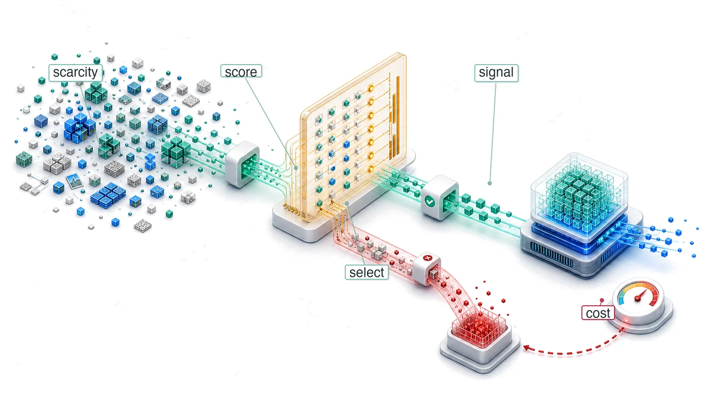</a></p>
</div>
<section id="mục-đích" class="level2 unnumbered unlisted">
<h2 class="unnumbered unlisted anchored" data-anchor-id="mục-đích">Mục đích</h2>
<p><em>Làm sao một tập con được chọn kỹ có thể giữ lại phần lớn giá trị của một tập dữ liệu lớn hơn nhiều?</em></p>
<p>Trong huấn luyện, ta phải trả chi phí để thu thập, gán nhãn, chấm điểm, di chuyển và xử lý các ví dụ, dù giá trị học tập của chúng không đồng đều. Các tập dữ liệu lớn thường có mẫu dư thừa, nhiễu hoặc lệch mục tiêu, còn những vùng khan hiếm lại thiếu đúng các trường hợp mà mô hình cần. Chọn dữ liệu biến sự không đồng nhất đó thành một bài toán tối ưu hệ thống. Nó có thể loại bỏ công việc tránh được trước khi huấn luyện, hướng việc gán nhãn và các bước huấn luyện vào những trường hợp giàu thông tin hơn khi quá trình học diễn ra, hoặc tạo thêm ví dụ còn thiếu khi nút thắt là sự khan hiếm. Cách làm này cũng cho phép đầu tư một lần vào học biểu diễn có thể tái sử dụng, khi chi phí đó có thể được phân bổ cho nhiều tác vụ hạ lưu. Vì vậy, mục tiêu không phải là có tập dữ liệu nhỏ nhất, mà là đạt chất lượng mục tiêu với chi phí đầu-cuối thấp nhất, đồng thời không bỏ sót các trường hợp hiếm, các nhóm thiếu đại diện, hay phạm vi bao phủ liên quan đến triển khai. Mỗi chiến lược đều có chi phí phụ của riêng nó: các ví dụ cần được chấm điểm, tạo ra, xáo trộn, lưu trữ hoặc xác thực, và những chi phí này có thể xóa sạch phần tiết kiệm mà chúng hứa hẹn. Phải đánh giá từ đầu đến cuối, vì lợi ích ở khâu gán nhãn hay huấn luyện có thể bị xóa bởi độ trễ của bước chọn lọc, truy cập lưu trữ, hoặc phối hợp phân tán. Một phương pháp chỉ xứng đáng khi lượng học mà nó bảo toàn hoặc tạo ra vượt quá công sức để áp dụng. Sự phân biệt này đặc biệt quan trọng trong các thí nghiệm lặp lại, nơi những giảm tải hữu ích có thể tích lũy, và trong quá trình thích nghi, nơi giá trị của một ví dụ thay đổi theo mô hình và phân phối mục tiêu. Kỹ thuật dữ liệu đã khẳng định rằng dữ liệu là mã nguồn của các hệ thống ML; chọn dữ liệu đặt câu hỏi: bằng chứng nào hữu ích lúc này và bằng chứng nào còn thiếu? Theo thuật ngữ D·A·M, đó là đồng thiết kế dữ liệu-thuật toán: định hình tín hiệu huấn luyện để mỗi đơn vị công việc của máy mang lại nhiều học hữu ích hơn.</p>
<div id="callout-learning-objectives*-1.1" class="callout callout-learning-objectives">
<details class="callout-learning-objectives fbx-simplebox fbx-default" open=""><summary><strong>Learning Objectives</strong></summary><div>
<ul>
<li>Giải thích chọn dữ liệu như một quá trình đồng thiết kế dữ liệu-thuật toán, nhằm giảm tổng khối lượng công việc trước khi huấn luyện bắt đầu.</li>
<li>Tính toán tỷ lệ giữa thông tin và tài nguyên tính toán để quyết định liệu việc thêm các ví dụ có giúp cải thiện hiệu quả học tập trên mỗi FLOP hay không.</li>
<li>So sánh các phương pháp như loại bỏ trùng lặp, chọn tập lõi (coreset selection), và tỉa (pruning) dựa trên chất lượng nhằm giảm bớt dữ liệu tiền huấn luyện dư thừa.</li>
<li>Thiết kế các chiến lược curriculum, active learning, hoặc dùng dữ liệu tổng hợp để thay đổi giá trị của dữ liệu trong khi huấn luyện.</li>
<li>Áp dụng bất đẳng thức chọn lọc để kiểm tra xem chi phí phụ của chọn lọc có thấp hơn chi phí huấn luyện trên toàn bộ tập dữ liệu hay không.</li>
<li>Đánh giá các pipeline chọn lọc phân tán theo các ràng buộc về tính cục bộ lưu trữ, tính nhất quán và mức độ sử dụng GPU.</li>
<li>Chọn khoản đầu tư cho chọn dữ liệu dựa trên ROI, khấu hao và các chẩn đoán về đường biên tối ưu tính toán.</li>
</ul>
</div></details>
</div>
</section>
<section id="sec-data-selection-data-selection-fundamentals-e839" class="level2 page-columns page-full">
<h2 class="anchored" data-anchor-id="sec-data-selection-data-selection-fundamentals-e839">Kiến thức nền tảng về chọn dữ liệu</h2>
<p>Trong quá trình huấn luyện, hệ thống phải trả chi phí theo quy luật sắt cho mỗi ví dụ mà nó xử lý, nhưng không phải ví dụ nào cũng mang lại tín hiệu học tập xứng đáng với chi phí đó. Chọn dữ liệu trao cho một tập dữ liệu sạch, được xây dựng tốt một mục tiêu ở cấp hệ thống: giữ lại những ví dụ đóng góp nhiều tín hiệu học tập nhất trên mỗi đơn vị tính toán. Kỹ thuật dữ liệu giúp tập dữ liệu đáng tin cậy nhờ nhãn chính xác, lược đồ nhất quán và các bản ghi được quản lý. Chọn dữ liệu tối ưu hóa giá trị của tập dữ liệu bằng cách rút ra lượng học tập tối đa từ số mẫu tối thiểu, qua đó trực tiếp làm nhỏ đi hạng mục tổng số thao tác <span class="math inline">\((O)\)</span> trong quy luật sắt (nguyên tắc <a href="../parts/build_principles.html#pri-iron-law">3</a>). Sự khác biệt này rất quan trọng: chất lượng hỏi dữ liệu có đúng không, còn giá trị hỏi liệu dữ liệu đúng có xứng đáng với tài nguyên tính toán bỏ ra để xử lý hay không.</p>

<div class="no-row-height column-margin column-container"><div class="">
<p><a href="images/svg/data_selection_scaling_saturation.svg" class="lightbox" data-gallery="quarto-lightbox-gallery-2"></a></p>
<p><em>Nguồn cung tính toán có thể vượt quá nguồn cung dữ liệu chất lượng cao.</em></p>
</div><div id="fn1"><p><sup>1</sup>&nbsp;<strong>Các quy luật mở rộng</strong>: Jared Kaplan và các đồng nghiệp tại Johns Hopkins và OpenAI đã chứng minh thực nghiệm vào năm 2020 rằng độ lỗi của mô hình ngôn ngữ tuân theo các quan hệ theo luật lũy thừa với kích thước mô hình, kích thước tập dữ liệu và ngân sách tính toán trong các điều kiện họ nghiên cứu <span class="citation" data-cites="kaplan2020scaling">(<a href="#ref-kaplan2020scaling" role="doc-biblioref">Kaplan et al. 2020</a>)</span>. Số mũ dữ liệu mà họ khớp được xấp xỉ <span class="math inline">\(\alpha = 0.095\)</span> trong <span class="math inline">\(\mathcal{L} \propto D^{-\alpha}\)</span>. Giá trị này không phổ quát, nhưng dạng hiệu quả giảm dần giúp ta suy luận khi nào việc chọn lọc trở nên hiệu quả về chi phí hơn so với việc thu thập.</p><div id="ref-kaplan2020scaling" class="csl-entry" role="listitem">
Kaplan, J., S. McCandlish, T. Henighan, T. B. Brown, B. Chess, R. Child, S. Gray, A. Radford, J. Wu, and D. Amodei. 2020. <span>“Scaling Laws for Neural Language Models.”</span> <em>ArXiv Preprint</em> abs/2001.08361.
</div></div><div id="fn2"><p><sup>2</sup>&nbsp;<strong>Bức tường dữ liệu</strong>: Khác với khả năng tính toán (có thể mở rộng bằng cách đầu tư vốn) hay thuật toán (có thể cải thiện nhờ nghiên cứu), kho văn bản chất lượng cao do con người tạo ra tăng trưởng chậm. Các dự báo cập nhật của Epoch AI ước tính rằng, theo các giả định về mức tiêu thụ được mô tả trong bài báo, các mô hình có thể sử dụng các tập dữ liệu có kích thước xấp xỉ bằng tổng lượng văn bản công khai do con người tạo ra trong giai đoạn 2026–2032 <span class="citation" data-cites="villalobos2022will">(<a href="#ref-villalobos2022will" role="doc-biblioref">Villalobos et al. 2022</a>)</span>. Điều quan trọng đối với thiết kế hệ thống không phải là một mốc thời gian cố định; vấn đề là dữ liệu có thể trở thành một ràng buộc về nguồn cung chứ không chỉ đơn thuần là bài toán kinh tế. Ràng buộc này tác động trực tiếp đến tổng số phép toán <span class="math inline">\((O)\)</span>: khi dữ liệu chất lượng trở nên khan hiếm, thêm compute sẽ cho hiệu quả giảm dần, bất kể thông lượng phần cứng.</p><div id="ref-villalobos2022will" class="csl-entry" role="listitem">
Villalobos, Pablo, Anson Ho, Jaime Sevilla, Tamay Besiroglu, Lennart Heim, and Marius Hobbhahn. 2022. <span>“Will We Run Out of Data? Limits of <span>LLM</span> Scaling Based on Human-Generated Data.”</span> <em>arXiv Preprint arXiv:2211.04325</em>.
</div></div></div><p>Việc tăng lượng dữ liệu huấn luyện từ lâu đã là cách chuẩn để cải thiện mô hình. Các quy luật mở rộng (scaling laws)<a href="#fn1" class="footnote-ref" id="fnref1" role="doc-noteref"><sup>1</sup></a> <span class="citation" data-cites="kaplan2020scaling hoffmann2022chinchilla">(<a href="#ref-kaplan2020scaling" role="doc-biblioref">Kaplan et al. 2020</a>; <a href="#ref-hoffmann2022chinchilla" role="doc-biblioref">Hoffmann et al. 2022</a>)</span> định lượng mức độ hiệu suất mô hình có thể cải thiện theo kích thước tập dữ liệu, và các nhóm đã đáp lại bằng cách thu thập, tạo thêm nhiều ví dụ. Tuy nhiên, các cụm bộ tăng tốc có thể mở rộng năng lực tính toán khả dụng nhanh hơn nguồn cung văn bản và hình ảnh mới, chất lượng cao do con người tạo ra. Phần lớn nội dung công khai, dễ tiếp cận trên web đã được đưa vào các tập dữ liệu huấn luyện lớn, và năng lực gán nhãn của chuyên gia tăng trưởng chậm. Sự bất đối xứng này chính là <strong>bức tường dữ liệu</strong>,<a href="#fn2" class="footnote-ref" id="fnref2" role="doc-noteref"><sup>2</sup></a> và nó chuyển sự chú ý từ việc thu thập thêm dữ liệu sang việc khai thác nhiều giá trị hơn từ dữ liệu hiện có. Các phần sau sẽ trình bày các phương pháp chọn lọc và mô hình chi phí cần thiết để đưa ra lựa chọn đó.</p>
<p><a href="#tbl-scaling-asymmetry" class="quarto-xref">Table&nbsp;1</a> sử dụng một kịch bản tăng trưởng minh họa, trong đó năng lực tính toán của GPU tăng 10× mỗi 3 years, trong khi dữ liệu chất lượng cao có thể tiếp cận được lại tăng chậm hơn. Đây là các tham số đầu vào của kịch bản, không phải các tốc độ phổ quát đã được đo lường.</p>
<div id="tbl-scaling-asymmetry" class="striped hover quarto-float quarto-figure quarto-figure-center anchored" data-tbl-colwidths="[16,13,71]">
<figure class="quarto-float quarto-float-tbl figure">
<figcaption class="quarto-float-caption-top quarto-float-caption quarto-float-tbl" id="tbl-scaling-asymmetry-caption-0ceaefa1-69ba-4598-a22c-09a6ac19f8ca">
Table&nbsp;1: <strong>Bất đối xứng về khả năng mở rộng trong tài nguyên ML</strong>: Trong kịch bản mở rộng được minh họa, năng lực tính toán tăng nhanh hơn nguồn cung dữ liệu chất lượng cao, tạo ra sự mất cân bằng giữa tính toán và dữ liệu, khiến việc lựa chọn dữ liệu trở nên có giá trị.
</figcaption>
<div aria-describedby="tbl-scaling-asymmetry-caption-0ceaefa1-69ba-4598-a22c-09a6ac19f8ca">
<table class="table-striped table-hover caption-top table">
<colgroup>
<col style="width: 16%">
<col style="width: 13%">
<col style="width: 71%">
</colgroup>
<thead>
<tr class="header">
<th style="text-align: left;"><strong>Tài nguyên</strong></th>
<th style="text-align: right;"><strong>Tốc độ tăng trưởng</strong></th>
<th style="text-align: left;"><strong>Hàm ý</strong></th>
</tr>
</thead>
<tbody>
<tr class="odd">
<td style="text-align: left;"><strong>Tính toán GPU</strong></td>
<td style="text-align: right;">~10× / 3 years</td>
<td style="text-align: left;">Thông lượng phần cứng có thể tăng nhanh trong một kỷ nguyên nhất định</td>
</tr>
<tr class="even">
<td style="text-align: left;"><strong>Dữ liệu huấn luyện (Web)</strong></td>
<td style="text-align: right;">~2× / 5 years</td>
<td style="text-align: left;">Văn bản web chất lượng cao là hữu hạn; phần lớn đã được thu thập</td>
</tr>
<tr class="odd">
<td style="text-align: left;"><strong>Dữ liệu được gán nhãn</strong></td>
<td style="text-align: right;">~1.5× / 5 years</td>
<td style="text-align: left;">Thông lượng chú thích của con người vốn dĩ bị giới hạn</td>
</tr>
<tr class="even">
<td style="text-align: left;"><strong>Dữ liệu tổng hợp</strong></td>
<td style="text-align: right;">Có khả năng lớn</td>
<td style="text-align: left;">Bị giới hạn bởi chất lượng của bộ tạo (các mô hình được huấn luyện trên dữ liệu do mô hình tạo ra có thể suy giảm chất lượng)</td>
</tr>
</tbody>
</table>
</div>
</figure>
</div>
<p>Việc mở rộng kích thước tập dữ liệu cuối cùng sẽ chạm trần nguồn cung hữu hạn của lời nói và văn bản chất lượng cao do con người tạo ra. Hãy theo dõi quỹ đạo trên thang log trong <strong><a href="09_data_selection.html#fig-running-out-of-human-data">Tăng trưởng tập dữ liệu tiếp cận giới hạn</a></strong> để thấy yêu cầu huấn luyện của mô hình nền tảng tiến gần đến giới hạn trên ước tính của dữ liệu công khai sẵn có như thế nào.</p>
<p>Vì vậy, khoảng cách giữa những gì compute có thể xử lý và những gì dữ liệu chất lượng cao có thể truy cập hỗ trợ được là một biến số của hệ thống, không phải một quy luật cố định. Trong kịch bản minh họa ở <a href="#tbl-scaling-asymmetry" class="quarto-xref">table&nbsp;1</a>, nguồn cung compute tăng nhanh hơn dữ liệu chất lượng cao có thể truy cập, nên ngân sách cho bộ tăng tốc có thể vượt xa kho ngữ liệu, khiến hệ thống dồi dào compute nhưng bị hạn chế bởi dữ liệu. Để duy trì tính phù hợp của mô hình, cần liên tục làm mới kho ngữ liệu huấn luyện theo thời gian khi thế giới thay đổi; và khi chất lượng dữ liệu chứ không phải thời gian bộ tăng tốc trở thành nút thắt, việc lựa chọn dữ liệu thông minh là then chốt.</p>
<p>::: {#fig-running-out-of-human-data fig-env=“figure” fig-pos=“htb” fig-cap=“<strong>Tăng trưởng tập dữ liệu tiếp cận giới hạn</strong>: Một số tập dữ liệu của mô hình nền tảng đã tăng trưởng đến mức gần bằng ước tính tổng lượng văn bản công khai chất lượng cao. Dự báo này nên được hiểu là một kịch bản ràng buộc theo mốc thời gian, không phải một dự báo cố định: lựa chọn dữ liệu, tạo dữ liệu tổng hợp, học đa phương thức, cấp phép và chính sách lọc đều có thể làm thay đổi nguồn cung khả dụng.” fig-alt=“Biểu đồ đường theo thang logarit thể hiện kích thước tập dữ liệu từ 100 triệu đến 1 triệu tỷ token theo từng năm, từ 2012 đến 2028. Một đường xu hướng màu xanh dương đi lên, với các mốc đánh dấu cho GPT-3, Chinchilla, Llama 2 và Llama 3. Một dải màu cam từ 100 nghìn tỷ đến 1 triệu tỷ token được gắn nhãn High-Quality Public Text Stock, và một chú thích màu đỏ Public Data Exhaustion chỉ về phía đường xu hướng.”Kho văn bản công khai chất lượng cao”, và một chú thích màu đỏ “Cạn kiệt dữ liệu công khai” chỉ vào đường xu hướng.”}</p>
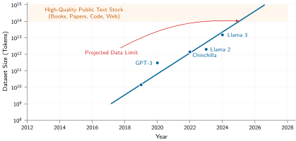
<p>:::</p>
<p>Bất đối xứng giữa <em>compute</em> và <em>dữ liệu</em> có thể đảo ngược thứ tự ưu tiên tối ưu hóa. Khi <em>dữ liệu</em> dồi dào còn <em>compute</em> khan hiếm, các thuật toán hiệu quả có thể rút thêm độ chính xác từ số chu kỳ GPU hạn chế. Khi <em>compute</em> dồi dào nhưng <em>dữ liệu chất lượng</em> khan hiếm, lựa chọn dữ liệu có thể giúp học được nhiều hơn từ mỗi mẫu. Lựa chọn dữ liệu diễn ra ở thượng nguồn, trước các tối ưu hóa về mô hình và máy. Bằng cách tỉa (pruning) phần dư thừa và chọn các mẫu có giá trị cao, khối lượng công việc (workload) được giảm ngay trước khi đi vào mô hình hoặc tới phần cứng, trực tiếp thu nhỏ hạng mục tổng số phép toán <span class="math inline">\((O)\)</span> trong “quy luật sắt”. Đó là lý do cách nhìn hệ thống xem lựa chọn dữ liệu là giảm khối lượng công việc ở thượng nguồn, thay vì một heuristic trong mô hình hóa. Với các nhóm mà ngân sách bộ tăng tốc vượt quá kho ngữ liệu đã tuyển chọn, nút thắt cổ chai chuyển từ quyền truy cập GPU sang chất lượng, tính hợp pháp và độ đa dạng của dữ liệu huấn luyện.</p>
<p>Bộ công cụ kỹ thuật cho lựa chọn dữ liệu thông minh tuân theo một thứ tự tối ưu hóa có chủ đích: trước hết hỏi liệu một mẫu có đáng để xử lý không, rồi mới hỏi cách xử lý phần khối lượng công việc (workload) còn lại cho hiệu quả. Lựa chọn dữ liệu hiện thực hóa nguyên tắc “ưu tiên lợi ích lớn nhất” bằng cách tìm việc có thể tránh trước, rồi mới đơn giản hóa hoặc tăng tốc phần việc còn lại. Tỉa tĩnh (static pruning) loại bỏ các mẫu ít giá trị trước khi tính bất kỳ gradient nào. Lựa chọn động (dynamic selection) điều chỉnh “khẩu phần” dữ liệu trong quá trình huấn luyện thông qua curriculum learning và active learning. Tạo dữ liệu tổng hợp (synthetic generation) tạo mẫu giá trị cao bằng tăng cường (augmentation), mô phỏng, hoặc các ví dụ do “giáo viên” tạo khi dữ liệu thực tế trở nên khan hiếm.</p>
<p>Mỗi giai đoạn có thể tăng mật độ thông tin của dữ liệu đi vào mô hình, miễn là các cải thiện chất lượng đo được đủ bù chi phí phát sinh. Cả ba giai đoạn này tạo thành một bộ công cụ bổ trợ nhau: tỉa (pruning) giảm <em>những gì</em> pipeline chứa, lựa chọn tập trung vào <em>cách</em> pipeline sử dụng chúng, còn tổng hợp mở rộng <em>những gì</em> pipeline có thể truy cập. Để so sánh các kỹ thuật này, chúng ta cần một định nghĩa lựa chọn dữ liệu theo góc nhìn hệ thống, cùng với một cách đo lường hiệu quả của nó.</p>
<section id="sec-data-selection-defining-data-selection-ef2f" class="level3">
<h3 class="anchored" data-anchor-id="sec-data-selection-defining-data-selection-ef2f">Định nghĩa lựa chọn dữ liệu</h3>
<p>pipeline ba giai đoạn cần một thước đo để kỹ sư so sánh các mẫu trước khi tiêu tốn thời gian của bộ tăng tốc cho chúng. Một hình ảnh trùng lặp, một bản ghi sai nhãn, và một trường hợp biên hiếm có thể tốn cùng một lượng tính toán cho lượt truyền xuôi và truyền ngược, nhưng không mang lại cùng mức tín hiệu học tập. Vì vậy, lựa chọn dữ liệu bắt đầu bằng cách nêu rõ giá trị của từng mẫu so với chi phí tính toán. Tỷ lệ thông tin-tính toán (information-compute ratio) đo giá trị này dưới dạng tín hiệu học tập thu được trên mỗi đơn vị tính toán trong quá trình huấn luyện, được trình bày trong <a href="#sec-data-selection-informationcompute-ratio-8c0b" class="quarto-xref">section&nbsp;1.1.3</a>.</p>
<div id="dfn-data-selection-data-selection" class="callout callout-definition" title="Lựa chọn dữ liệu">
<details class="callout-definition fbx-simplebox fbx-default" open=""><summary><strong>Definition 1.1: Lựa chọn dữ liệu</strong></summary><div>
<p><strong><em>Lựa chọn dữ liệu</em></strong> là quá trình tối đa hóa tỷ lệ thông tin-tính toán (ICR) của một tập dữ liệu huấn luyện.</p>
<ol type="1">
<li><strong>Ý nghĩa</strong>: Kỹ thuật này giúp xác định dữ liệu đáng giữ lại, cần ưu tiên hoặc cần tạo mới cho mục tiêu đặt ra, đồng thời giảm tổng số phép toán <span class="math inline">\((O)\)</span> khi có thể loại bỏ các mẫu dư thừa hoặc nhiễu mà vẫn giữ đủ độ bao phủ cần thiết.</li>
<li><strong>Điểm khác biệt</strong>: Không giống data engineering vốn tập trung vào độ sạch và tính nhất quán của dữ liệu, lựa chọn dữ liệu chú trọng vào mức độ cung cấp thông tin và sự đa dạng của các mẫu.</li>
<li><strong>Cạm bẫy thường gặp</strong>: Một ngộ nhận phổ biến là càng nhiều dữ liệu càng tốt. Thêm dữ liệu chất lượng thấp có thể kém hiệu quả hơn nhiều so với một tập nhỏ nhưng được chọn lọc kỹ. Vì vậy, khối lượng dữ liệu giữ lại phải được đánh giá cùng với độ bao phủ và chất lượng mục tiêu.</li>
</ol>
</div></details>
</div>
<p>Để cụ thể, hãy xét việc huấn luyện một mô hình ngôn ngữ tự hồi quy thuộc họ lighthouse như GPT-2/Llama, được nêu trong <strong><a href="../06_nn_architectures/06_nn_architectures.html#sec-network-architectures-lighthouse-roster-model-biographies-a763">Danh sách các mô hình tiêu biểu: Tiểu sử mô hình</a></strong>. Kịch bản này dùng một mô hình 70 tỷ tham số để làm rõ khoảng cách giữa tính toán và dữ liệu ở quy mô lớn.</p>
<p>Ngân sách tính toán (sử dụng 10,000 GPU H100 trong 3 months) tương đương khoảng $86.4M theo mức giá huấn luyện trên đám mây của chương này. Ngân sách này có thể xử lý khoảng 73.2T token ở mức 40 percent hiệu suất sử dụng FLOPs của mô hình duy trì. Ước tính lượng văn bản công khai do con người tạo ra, đã điều chỉnh về chất lượng và độ lặp, vào khoảng 300T token, lớn hơn nhiều so với một tập web đã tuyển chọn duy nhất. Tuy vậy, nút thắt thực tế hẹp hơn: bao nhiêu trong số đó thực sự có thể truy cập, sử dụng hợp pháp, chất lượng cao, đã khử trùng lặp và hữu ích cho phân phối mục tiêu. Nếu một nhóm chỉ có sẵn một tập dữ liệu đã lọc (5T) để dùng ngay, thì ngân sách tính toán này đã có thể xử lý tập đó khoảng 14.6× lần. Khi đó, nhóm có ba lựa chọn:</p>
<ul>
<li><strong>Lặp lại epoch</strong>: Nhóm có thể huấn luyện trên cùng dữ liệu qua nhiều epoch, nhưng hiệu quả sẽ giảm dần khi ví dụ bị dùng lại; số epoch hữu ích phụ thuộc vào khối lượng công việc (workload).</li>
<li><strong>Hạ thấp ngưỡng chất lượng</strong>: Nhóm có thể đưa thêm dữ liệu vào, nhưng các token chất lượng thấp có thể làm giảm chất lượng mô hình.</li>
<li><strong>Đầu tư vào lựa chọn dữ liệu</strong>: Nhóm có thể cải thiện lọc dữ liệu, thiết kế chương trình học và tăng cường dữ liệu tổng hợp để học được nhiều hơn từ mỗi token.</li>
</ul>
<p>Theo những giả định này, tiêu chí quyết định nghiêng về chọn lọc dữ liệu hơn là mua thêm thời gian dùng bộ tăng tốc.</p>
<p>Cơ hội này áp dụng cho nhiều kiến trúc mô hình, dù nút thắt và mức giảm an toàn khác nhau. Không giống ngọn hải đăng ResNet-50 bị giới hạn bởi khả năng tính toán, các mô hình GPT-2/Llama có thể bị giới hạn bởi băng thông bộ nhớ trong suy luận và bị giới hạn bởi khả năng tính toán trong huấn luyện. Khi một phương pháp chọn lọc đã được kiểm chứng loại bỏ ví dụ hoặc token mà không thêm các bước bù đắp, ít mẫu hơn sẽ đồng nghĩa với ít FLOPs huấn luyện hơn. Vì vậy, cách đặt vấn đề phù hợp là theo hệ thống, không chỉ thuần thống kê.</p>
</section>
<section id="sec-data-selection-systems-perspective-bd61" class="level3">
<h3 class="anchored" data-anchor-id="sec-data-selection-systems-perspective-bd61">Góc nhìn hệ thống</h3>
<p>Bức tường dữ liệu cho thấy <em>tại sao</em> việc chọn lọc dữ liệu quan trọng; còn góc nhìn hệ thống chỉ ra <em>cách</em> tiếp cận hiệu quả. Khung tư duy ML truyền thống tập trung đạt cùng mức độ chính xác với ít mẫu hơn, xoay quanh độ phức tạp mẫu thống kê và lý thuyết khái quát hóa. Dù đúng, cách nhìn đó vẫn bỏ lỡ bức tranh lớn.</p>
<p>Ngược lại, một <em>khung tư duy hệ thống</em> cho việc chọn lọc dữ liệu đặt câu hỏi làm thế nào để giảm tổng chi phí để đạt hiệu suất mục tiêu trong toàn bộ vòng đời ML. Sự dịch chuyển này đưa trọng tâm từ các đường cong độ chính xác sang tiêu thụ tài nguyên, như <a href="#tbl-ml-vs-systems-framing" class="quarto-xref">table&nbsp;2</a> minh họa.</p>
<div id="tbl-ml-vs-systems-framing" class="striped hover quarto-float quarto-figure quarto-figure-center anchored">
<figure class="quarto-float quarto-float-tbl figure">
<figcaption class="quarto-float-caption-top quarto-float-caption quarto-float-tbl" id="tbl-ml-vs-systems-framing-caption-0ceaefa1-69ba-4598-a22c-09a6ac19f8ca">
Table&nbsp;2: <strong>Góc nhìn ML so với Hệ thống về Lựa chọn Dữ liệu</strong>: Khung tư duy ML tối ưu hóa độ phức tạp mẫu; khung tư duy hệ thống tối ưu hóa tổng chi phí tài nguyên trên toàn bộ pipeline.
</figcaption>
<div aria-describedby="tbl-ml-vs-systems-framing-caption-0ceaefa1-69ba-4598-a22c-09a6ac19f8ca">
<table class="table-striped table-hover caption-top table">
<colgroup>
<col style="width: 46%">
<col style="width: 53%">
</colgroup>
<thead>
<tr class="header">
<th style="text-align: left;"><strong>Khung nhìn machine learning</strong></th>
<th style="text-align: right;"><strong>Khung nhìn hệ thống</strong></th>
</tr>
</thead>
<tbody>
<tr class="odd">
<td style="text-align: left;"><strong>“Ít mẫu hơn để đạt cùng độ chính xác”</strong></td>
<td style="text-align: right;">“Ít FLOPs hơn để đạt cùng độ chính xác”</td>
</tr>
<tr class="even">
<td style="text-align: left;"><strong>“Khả năng tổng quát hóa tốt hơn”</strong></td>
<td style="text-align: right;">“Chi phí huấn luyện thấp hơn (thời gian, tiền bạc, năng lượng)”</td>
</tr>
<tr class="odd">
<td style="text-align: left;"><strong>“Giới hạn độ phức tạp của mẫu”</strong></td>
<td style="text-align: right;">“Hiệu quả tài nguyên từ đầu đến cuối”</td>
</tr>
<tr class="even">
<td style="text-align: left;"><strong>“Lý thuyết học máy”</strong></td>
<td style="text-align: right;">“Kỹ thuật chi phí”</td>
</tr>
</tbody>
</table>
</div>
</figure>
</div>
<p>Khung tư duy hệ thống hé lộ các cơ hội tối ưu hóa mà khung tư duy ML không thấy. Để hiểu <em>tại sao</em>, hãy xem <em>cách</em> việc chọn lọc dữ liệu tương tác với định luật sắt đã được giới thiệu trong <strong><a href="../01_introduction/01_introduction.html#sec-introduction-iron-law-ml-systems-c32a">Định luật sắt của hệ thống ML</a></strong>.</p>
<div id="psp-data-selection-data-selection-iron-law" class="callout callout-perspective" title="Chọn lọc dữ liệu và định luật sắt">
<p></p><details class="callout-perspective fbx-simplebox fbx-default" open=""><summary><strong>Systems Perspective 1.1: Chọn lọc dữ liệu và định luật sắt</strong></summary><div>Trong định luật sắt của hệ thống ML <span class="math inline">\((T = \frac{D_{\text{vol}}}{\text{BW}} + \frac{O}{R_{\text{peak}} \cdot \eta_{\text{hw}}} + L_{\text{lat}})\)</span>, chọn lọc dữ liệu làm giảm số lượng ví dụ hoặc token đi vào khối lượng công việc (workload). Các tối ưu hóa ở cấp độ mô hình sau đó làm giảm số phép toán trên mỗi lần truyền thuận/ngược, và các tối ưu hóa ở cấp độ máy làm tăng <span class="math inline">\(R_{\text{peak}}\)</span> (thông lượng đỉnh) và <span class="math inline">\(\eta_{\text{hw}}\)</span> (mức sử dụng). Việc chọn lọc dữ liệu loại bỏ phần việc trước khi các tối ưu hóa ở các bước sau phải thực hiện.<p></p>
<p>Điều này khiến chọn lọc dữ liệu mang giá trị theo hệ số nhân trong định luật sắt: khi cả ba lớp tối ưu hóa cùng tác động vào cùng một điểm nghẽn, giảm kích thước tập dữ liệu 2× lần, cùng với số phép toán trên mỗi mẫu ít hơn 2× lần và thông lượng hiệu quả cao hơn 2× lần, sẽ mang lại tổng mức giảm chi phí 8× lần, chứ không phải 6×.</p>
</div></details>
</div>
<p>Hãy xét bài toán giảm chi phí huấn luyện. Khi số epoch, kích thước batch và lượng công việc trên mỗi mẫu giữ nguyên, việc giảm kích thước tập dữ liệu đi 50 percent sẽ giúp giảm một nửa số lần truyền xuôi (forward pass), truyền ngược (backward pass) và cập nhật gradient. Với kịch bản $100M dùng ở đây, điều đó tương ứng với mức tiết kiệm tính toán $50M. Các lịch trình thêm epoch hoặc tăng số bước sẽ làm giảm mức tiết kiệm này.</p>
<p>Khoản tiết kiệm tính toán sẽ lan sang toàn bộ ngăn xếp hạ tầng. Các tập dữ liệu lớn tiêu tốn hàng petabyte lưu trữ và bão hòa băng thông mạng trong huấn luyện phân tán; khử trùng lặp và lựa chọn coreset giúp giảm chi phí lưu trữ, đồng thời loại bỏ các nút thắt I/O có thể khiến các cụm GPU đắt tiền bị nhàn rỗi. Khoản tiết kiệm còn mở rộng sang bài toán chi phí gán nhãn: gán nhãn bởi chuyên gia có thể còn tốn hơn chi phí tính toán, và học chủ động cùng các phương pháp bán giám sát có thể giảm đáng kể ngân sách gán nhãn trong những bối cảnh thuận lợi. Tác động môi trường cũng cộng dồn thêm: với các lần huấn luyện chi phối bởi tính toán, giảm số lượng ví dụ sẽ giảm tiêu thụ năng lượng tỷ lệ với phần công việc được cắt giảm, miễn là tập con được chọn vẫn giữ nguyên độ chính xác. Các tập dữ liệu được tuyển chọn nhỏ hơn cũng giúp tăng tốc độ lặp. Một nhóm có thể lặp trong vài giờ thay vì vài ngày sẽ có lợi thế tích lũy rõ rệt trong phát triển mô hình.</p>
<p>Những lợi ích dây chuyền này cho thấy một điểm rộng hơn: nhà nghiên cứu ML thường đóng khung vấn đề dưới góc độ độ phức tạp mẫu (sample complexity), còn kỹ sư hệ thống lại nhìn thành chi phí trên mỗi điểm độ chính xác (cost-per-accuracy-point) trên toàn bộ pipeline, từ thu thập dữ liệu đến triển khai. Bộ công cụ của kỹ sư hệ thống cho bài toán này gồm các kỹ thuật để tối thiểu hóa tổng chi phí, các chỉ số để định lượng hiệu quả, và các mẫu kiến trúc để hiện thực hóa lựa chọn dữ liệu ở quy mô lớn.</p>
</section>
<section id="sec-data-selection-informationcompute-ratio-8c0b" class="level3">
<h3 class="anchored" data-anchor-id="sec-data-selection-informationcompute-ratio-8c0b">Tỷ lệ thông tin - tính toán</h3>
<p>Khung hệ thống trong <a href="#sec-data-selection-systems-perspective-bd61" class="quarto-xref">section&nbsp;1.1.2</a> đòi hỏi một thước đo định lượng. Việc lựa chọn dữ liệu tạo ra một ranh giới giữa độ chính xác và chi phí: giữ tất cả ví dụ sẽ tối đa hóa độ bao phủ nhưng lãng phí tài nguyên tính toán vì dư thừa, còn tỉa (pruning) quá mạnh thì tiết kiệm tính toán nhưng mất tín hiệu. Chúng ta cần một cách đo lường vị trí của từng mẫu trên ranh giới đó. Thước đo là lượng thông tin mỗi mẫu đóng góp cho quá trình huấn luyện của mô hình, tính trên mỗi đơn vị tài nguyên tính toán. Chúng ta chính thức hóa nó thành <strong>tỷ lệ thông tin-tính toán</strong>.</p>
<p><a href="#fig-optimization-triad" class="quarto-xref">Figure&nbsp;1</a> trình bày lại phân loại D·A·M dưới dạng một bản đồ tối ưu hóa, trong đó lựa chọn dữ liệu đóng vai trò tối ưu hóa đầu vào: giảm tổng khối lượng công việc (workload) trước khi dữ liệu đi vào mô hình hoặc phần cứng. Phía mô hình hỏi mỗi ví dụ cần bao nhiêu phép toán. Phía máy hỏi phần cứng thực thi các phép toán đó nhanh đến mức nào. Phía dữ liệu hỏi liệu ví dụ đó có nên được xử lý hay không. Ba edge của tam giác thể hiện các nút thắt cổ chai chính: <em>compute bound</em> mô tả các hệ thống bị giới hạn bởi thông lượng tính toán, <em>I/O bound</em> mô tả các hệ thống bị giới hạn bởi việc di chuyển dữ liệu, và <em>sample efficiency</em> mô tả các hệ thống bị giới hạn bởi lượng thông tin trong dữ liệu huấn luyện.</p>
<div id="fig-optimization-triad" class="quarto-float quarto-figure quarto-figure-center anchored" alt="Sơ đồ tam giác với ba trụ cột quanh nhãn 'Hiệu suất ML' ở trung tâm: Thuật toán (Mô hình) ở trên cùng, Máy (phần cứng) ở dưới bên trái, và Lựa chọn Dữ liệu ở dưới bên phải. Các mũi tên cong đi dọc theo từng edge của tam giác, được gắn nhãn Compute Bound (giữa Thuật toán và Máy), I/O Bound (giữa Máy và Lựa chọn Dữ liệu), và Sample Efficiency (giữa Lựa chọn Dữ liệu và Thuật toán)." data-fig-env="figure" data-fig-pos="htb">
<figure class="quarto-float quarto-float-fig figure">
<div aria-describedby="fig-optimization-triad-caption-0ceaefa1-69ba-4598-a22c-09a6ac19f8ca">
<a href="9cc064ac35494fa44a2c29463f4296a6f0001dc3.svg" class="lightbox" data-gallery="quarto-lightbox-gallery-3" title="Figure&nbsp;1: Phân loại D·A·M dưới dạng Bản đồ Tối ưu hóa: Hiệu suất machine learning được tổ chức quanh Thuật toán (Mô hình), Lựa chọn Dữ liệu và Máy (phần cứng). Các edge của tam giác gắn nhãn mối quan hệ compute-bound, I/O-bound và sample-efficiency, trong khi lựa chọn dữ liệu giúp giảm khối lượng công việc (workload) trước khi mô hình hoặc phần cứng thực thi.">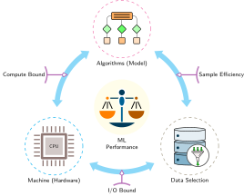</a>
</div>
<figcaption class="quarto-float-caption-bottom quarto-float-caption quarto-float-fig" id="fig-optimization-triad-caption-0ceaefa1-69ba-4598-a22c-09a6ac19f8ca">
Figure&nbsp;1: <strong>Phân loại D·A·M dưới dạng Bản đồ Tối ưu hóa</strong>: Hiệu suất machine learning được tổ chức quanh Thuật toán (Mô hình), Lựa chọn Dữ liệu và Máy (phần cứng). Các edge của tam giác gắn nhãn mối quan hệ compute-bound, I/O-bound và sample-efficiency, trong khi lựa chọn dữ liệu giúp giảm khối lượng công việc (workload) trước khi mô hình hoặc phần cứng thực thi.
</figcaption>
</figure>
</div>
<p>Chúng ta có thể chính thức hóa điều này thành ICR, trong đó <span class="math inline">\(I\)</span> là nội dung thông tin: <span class="math display">\[\text{ICR} = \frac{\Delta I}{\Delta \text{FLOPs}}\]</span></p>
<p>ICR càng cao thì mỗi FLOP dùng cho huấn luyện càng mang lại nhiều hiệu quả học hơn; nâng ICR là mục tiêu của mọi kỹ thuật trong chương này. Tử số của ICR không thể quan sát trực tiếp trong môi trường triển khai, nên các kỹ sư ước tính thông qua các chỉ báo gián tiếp: mức cải thiện trên tập kiểm định (validation) cho mỗi đơn vị tính toán, diện tích dưới đường cong học tập, mức giảm loss trên dữ liệu giữ lại (held-out data), điểm số mẫu dựa trên độ bất định hoặc gradient, và kiểm tra độ bao phủ trên các lát cắt liên quan đến triển khai. Những chỉ báo này không hoàn hảo, nhưng chúng giúp câu hỏi về hệ thống trở nên đo được trước khi một lượt huấn luyện tiêu hết ngân sách.</p>
</section>
<section id="sec-data-selection-icr-frontier" class="level3 page-columns page-full">
<h3 class="anchored" data-anchor-id="sec-data-selection-icr-frontier">Ranh giới ICR: Khi dữ liệu trở thành một khoản thuế</h3>

<div class="no-row-height column-margin column-container"><div class="">
<p><a href="images/svg/data_selection_icr_frontier.svg" class="lightbox" data-gallery="quarto-lightbox-gallery-4"></a></p>
<p><em>Khi vượt qua ranh giới này, dữ liệu trở thành một khoản thuế: chi phí tính toán tăng lên, nhưng khả năng học hỏi lại bị đình trệ.</em></p>
</div></div><p>Tỷ lệ thông tin-tính toán (ICR) không cố định; nó tuân theo quy luật lợi suất giảm dần. <strong>Ranh giới ICR</strong> là điểm mà tín hiệu học tập cận biên từ dữ liệu bổ sung giảm dần về gần bằng không.</p>
<p>Để minh họa quy luật lợi suất giảm dần, ta đặt <span class="math inline">\(I(D)\)</span> là lượng thông tin của một tập dữ liệu có kích thước <span class="math inline">\(D\)</span> và giả sử <span class="math inline">\(I(D) \propto \log D\)</span>. Đây là một mô hình phân tích đơn giản hóa, không phải là một định luật phổ quát. Nếu chi phí tính toán tỷ lệ tuyến tính với số phép toán trên mỗi mẫu <span class="math inline">\(O_{\text{sample}}\)</span>, tức <span class="math inline">\(C(D) = O_{\text{sample}} \cdot D\)</span>, thì ICR tương ứng sẽ tuân theo <a href="#eq-icr-decay" class="quarto-xref">equation&nbsp;1</a>: <span id="eq-icr-decay"><span class="math display">\[\text{ICR}(D) = \frac{\frac{d}{dD} I(D)}{\frac{d}{dD} C(D)} \approx \frac{1/D}{O_{\text{sample}}} = \frac{1}{O_{\text{sample}} \cdot D} \tag{1}\]</span></span></p>
<p>Theo mô hình minh họa này, sự suy giảm theo <span class="math inline">\(1/(O_{\text{sample}} \cdot D)\)</span> tạo ra bức tường dữ liệu. Vượt quá một ranh giới phụ thuộc vào khối lượng công việc (workload), dữ liệu bổ sung có thể mang lại rất ít học thêm nhưng vẫn làm tăng chi phí tính toán. Khi đó, dữ liệu trở thành một <strong>thuế dữ liệu</strong> làm phình số hạng <span class="math inline">\(O\)</span> trong định luật sắt mà không đem lại cải thiện tương xứng cho tử số (độ chính xác) của RoC (lợi tức trên tính toán, xem <strong><a href="../01_introduction/01_introduction.html#sec-introduction-roc-invariant">Lợi tức trên tính toán (RoC) như một lăng kính kinh tế</a></strong>). Điểm uốn ở đây là một sự đánh đổi thực tế giữa hiệu suất mục tiêu và chi phí cận biên, chứ không phải là giá trị ICR tối đa về mặt toán học trong mô hình này.</p>
<p>Việc lựa chọn dữ liệu biến hạng mục tổng số phép toán <span class="math inline">\((O)\)</span> trong định luật iron law từ một hằng số cố định thành một biến số. Khi ICR đo được tăng gấp 2 (2<span class="math inline">\(\times\)</span>), số FLOPs cần để đạt cùng mức cải thiện đo được sẽ giảm còn một nửa. Điều này chỉ mang lại mức giảm thời gian lý tưởng tương đương với việc tăng thông lượng gấp 2 (2<span class="math inline">\(\times\)</span>) khi khối lượng công việc (workload) bị giới hạn bởi tính toán và phần công việc tiết kiệm nằm trên đường găng. ICR tập trung riêng vào phần tính toán; framework mô hình hóa chi phí trong <a href="#sec-data-selection-cost-modeling-9b02" class="quarto-xref">section&nbsp;1.8</a> mở rộng cùng lập luận này sang chi phí thu thập, gán nhãn và lưu trữ dữ liệu.</p>
<p>Một batch dữ liệu thô ngẫu nhiên có thể có ICR thấp nếu chứa ví dụ dư thừa, nhiễu hoặc những ví dụ mà mô hình đã học thành thạo. Các pipeline dữ liệu hiệu suất cao (<a href="#fig-data-selection-pipeline" class="quarto-xref">figure&nbsp;2</a>) có thể cải thiện ICR qua ba giai đoạn: tỉa (pruning) tĩnh trước khi huấn luyện, lựa chọn động trong quá trình huấn luyện và tạo dữ liệu tổng hợp theo yêu cầu. Để minh họa, hãy xét việc tính ICR trên một tác vụ cụ thể là lựa chọn coreset: một tập con được chọn có chủ đích nhằm giữ lại tín hiệu học của toàn bộ tập dữ liệu. <a href="#sec-data-selection-coreset-selection-algorithms-2c74" class="quarto-xref">Section&nbsp;1.2.2</a> định nghĩa các phương pháp chấm điểm EL2N và GraNd dùng để xây dựng các tập con này, và <a href="#sec-data-selection-measurement-framework-733b" class="quarto-xref">section&nbsp;1.11</a> cung cấp framework đo lường hoàn chỉnh để đánh giá các cải thiện hiệu suất này, bao gồm một công cụ chẩn đoán ranh giới tối ưu về tính toán có thể gợi ý liệu quá trình huấn luyện đang bị giới hạn bởi dữ liệu hay bởi tính toán.</p>
<div id="fig-data-selection-pipeline" class="quarto-float quarto-figure quarto-figure-center anchored" alt="Sơ đồ luồng: Dữ liệu thô -> 1. Tỉa Tĩnh (trước huấn luyện) -> 2. Lựa chọn Động (trong quá trình huấn luyện) -> 3. Tạo Dữ liệu Tổng hợp (theo yêu cầu) -> Mô hình có ICR cao, với các mũi tên cho biết luồng dữ liệu giữa các giai đoạn.">
<figure class="quarto-float quarto-float-fig figure">
<div aria-describedby="fig-data-selection-pipeline-caption-0ceaefa1-69ba-4598-a22c-09a6ac19f8ca">
<a href="a1c36aab9ee2740c321149df336cc1c2a271f972.svg" class="lightbox" data-gallery="quarto-lightbox-gallery-5" title="Figure&nbsp;2: The Data Selection Pipeline: Một cách tiếp cận có cấu trúc để tăng giá trị dữ liệu. Dữ liệu thô trước hết được tỉa (pruning) (Tỉa Tĩnh), sau đó được chọn trong quá trình huấn luyện (Lựa chọn Động), và cuối cùng được tổng hợp (Tạo Dữ liệu Tổng hợp). Mỗi giai đoạn có thể tăng Information-Compute Ratio (ICR) nếu mức cải thiện chất lượng xứng đáng với chi phí tính toán bỏ ra.">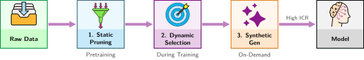</a>
</div>
<figcaption class="quarto-float-caption-bottom quarto-float-caption quarto-float-fig" id="fig-data-selection-pipeline-caption-0ceaefa1-69ba-4598-a22c-09a6ac19f8ca">
Figure&nbsp;2: <strong>The Data Selection Pipeline</strong>: Một cách tiếp cận có cấu trúc để tăng giá trị dữ liệu. Dữ liệu thô trước hết được tỉa (pruning) (Tỉa Tĩnh), sau đó được chọn trong quá trình huấn luyện (Lựa chọn Động), và cuối cùng được tổng hợp (Tạo Dữ liệu Tổng hợp). Mỗi giai đoạn có thể tăng Information-Compute Ratio (ICR) nếu mức cải thiện chất lượng xứng đáng với chi phí tính toán bỏ ra.
</figcaption>
</figure>
</div>
<div id="chk-data-selection-data-selection-efficiency" class="callout callout-checkpoint" title="Hiệu suất lựa chọn dữ liệu">
<details class="callout-checkpoint fbx-simplebox fbx-default" open=""><summary><strong>Checkpoint 1.1: Hiệu suất lựa chọn dữ liệu</strong></summary><div>
<p>Mục tiêu của lựa chọn dữ liệu là tối đa hóa ICR.</p>
<p>Kiểm tra chỉ số:</p>
<ul class="task-list">
<li><label><input type="checkbox"><strong>Ứng dụng ICR</strong>: với hai lần chạy huấn luyện có mức tăng độ chính xác như nhau nhưng ngân sách tính toán khác nhau, bạn có xác định được lần chạy nào có ICR cao hơn không?</label></li>
<li><label><input type="checkbox"><strong>Hiệu suất dữ liệu</strong>: theo một giao thức đánh giá cố định, bạn có thể giải thích khi nào một tập dữ liệu nhỏ hơn 50 phần trăm nhưng có ICR cao hơn 2<span class="math inline">\(\times\)</span> sẽ cho cùng mức tăng đo được trong khi chỉ tốn một nửa FLOPs huấn luyện không?</label></li>
</ul>
<p>Kiểm tra pipeline:</p>
<ul class="task-list">
<li><label><input type="checkbox"><strong>Ba giai đoạn</strong>: bạn có thể liên hệ tỉa (pruning) tĩnh, lựa chọn động và tạo tổng hợp với vòng đời huấn luyện không?</label></li>
</ul>
</div></details>
</div>
<p>Câu hỏi thực tế là khoảng cách hiệu suất có thể lớn đến mức nào trong một khối lượng công việc (workload) nơi kích thước tập dữ liệu, chi phí mô hình và chiến lược lựa chọn tương tác với các ngân sách FLOP cụ thể. Kịch bản ResNet-50 quy mô ImageNet dưới đây sử dụng các mức tăng độ chính xác giả định để minh họa phép tính; đây không phải là kết quả EL2N đã được báo cáo.</p>
<div id="nbk-data-selection-computing-icr-coresets" class="callout callout-notebook" title="Tính toán ICR: Coresets">
<p></p><details class="callout-notebook fbx-simplebox fbx-default" open=""><summary><strong>Napkin Math 1.1: Tính toán ICR: Coresets</strong></summary><div><strong>Bài toán</strong>: Huấn luyện mô hình ResNet-50 lighthouse từ <strong><a href="../06_nn_architectures/06_nn_architectures.html#sec-network-architectures-lighthouse-roster-model-biographies-a763">Danh sách các mô hình tiêu biểu: Tiểu sử mô hình</a></strong> trên ImageNet trong một epoch tiêu tốn 3.15 × 10¹⁶ FLOPs. Với các mức tăng độ chính xác giả định của kịch bản, việc giữ lại 50 percent của dữ liệu sẽ làm thay đổi tỷ lệ thông tin-tính toán như thế nào? Phép tính này giả định công việc xử lý mỗi mẫu là cố định và không tính chi phí lựa chọn.<p></p>
<p><strong>Thiết lập</strong>:</p>
<ul>
<li>Tập dữ liệu: ImageNet (1.28M)</li>
<li>Mô hình: ResNet-50 lighthouse (~8.2 GFLOP mỗi lượt truyền xuôi, xấp xỉ 24.6 GFLOP cho một bước huấn luyện bao gồm truyền xuôi và truyền ngược, tùy thuộc vào cách triển khai)</li>
<li>Một epoch: 1.28M <span class="math inline">\(\times\)</span> 24.6 GFLOP = 3.15 × 10¹⁶ FLOPs</li>
<li>Cải thiện độ chính xác giả định mỗi epoch (trong giai đoạn huấn luyện ban đầu): 5 percentage points</li>
</ul>
<p><strong>Lựa chọn ngẫu nhiên (đường cơ sở)</strong>:</p>
<ul>
<li>Xử lý tất cả 1.28M mẫu một cách đồng đều</li>
<li>Mức tăng độ chính xác: 5 percentage points</li>
<li><span class="math inline">\(\text{ICR}_{\text{random}}\)</span> = 5 percentage points / (3.15 × 10¹⁶ FLOPs) = <span class="math inline">\(1.6 \times 10^{-16}\)</span> trên mỗi FLOP</li>
</ul>
<p><strong>EL2N Coreset</strong> (Error L2-Norm, một điểm số động lực huấn luyện được phát triển trong <a href="#sec-data-selection-coreset-selection-algorithms-2c74" class="quarto-xref">section&nbsp;1.2.2</a>; sử dụng 50 percent dữ liệu):</p>
<ul>
<li>Xử lý 640.6K mẫu được chọn</li>
<li>Mức tăng độ chính xác giả định: 4.5 percentage points (tương đương 90 percent so với mức tăng của toàn bộ dữ liệu)</li>
<li>Tính toán: 640.6K <span class="math inline">\(\times\)</span> 24.6 GFLOP = 1.6 × 10¹⁶ FLOPs</li>
<li><span class="math inline">\(\text{ICR}_{\text{coreset}}\)</span> = 4.5 percentage points / (1.6 × 10¹⁶ FLOPs) = <span class="math inline">\(2.9 \times 10^{-16}\)</span> trên mỗi FLOP</li>
</ul>
<p><strong>Nhận định từ góc nhìn hệ thống</strong>: Theo các giả định này, tập con được chọn đạt ICR cao hơn 1.8× trong khi mức tăng độ chính xác nhỏ hơn 0.5 percentage points. Một quyết định thực tế cần các mức tăng đo được, chi phí lựa chọn và kiểm tra độ bao phủ.</p>
</div></details>
</div>
<p>pipeline tối ưu hóa ba giai đoạn (tỉa (pruning) tĩnh, lựa chọn động và tạo tổng hợp) cung cấp các kỹ thuật cụ thể để cải thiện ICR. Tỉa (pruning) tĩnh, giai đoạn đầu tiên, loại bỏ các ví dụ trước khi huấn luyện bắt đầu; mức giảm an toàn phụ thuộc vào tập dữ liệu, mô hình, phương pháp lựa chọn và chỉ số mục tiêu.</p>
<div id="quiz-question-sec-data-selection-data-selection-fundamentals-e839" class="callout callout-quiz-question">
<details class="callout-quiz-question fbx-simplebox fbx-default"><summary><strong>Self-Check: Question</strong></summary><div>
<ol type="1">
<li><p>In an ML infrastructure scaling scenario where available GPU compute grows by approximately <span class="math inline">\(10\times\)</span> every 3 years while high-quality web data grows by only <span class="math inline">\(2\times\)</span> every 5 years, what primary systems regime emerges, and what is the appropriate systems response?</p>
<ol type="a">
<li>A compute-rich, data-constrained Data Wall regime where intelligent data selection and curation must maximize the learning signal extracted per token</li>
<li>A memory bandwidth-bound regime where model parallel sharding must replace data parallelism across all training clusters</li>
<li>An I/O ingestion bottleneck where disk read bandwidth must be quadrupled to keep GPUs saturated</li>
<li>A compute-starved regime where synthetic data generation should be eliminated to avoid wasting accelerator cycles</li>
</ol></li>
<li><p>Under the illustrative analytical model where dataset information content scales logarithmically as <span class="math inline">\(I(D) \propto \log D\)</span> and training compute scales linearly with per-sample operations <span class="math inline">\(C(D) = O_{\text{sample}} \cdot D\)</span>, how does the marginal Information-Compute Ratio <span class="math inline">\(\text{ICR}(D)\)</span> scale with dataset size <span class="math inline">\(D\)</span>?</p>
<ol type="a">
<li>It remains constant at <span class="math inline">\(\mathcal{O}(1)\)</span> because additional compute scales proportionally with dataset size</li>
<li>It decays as <span class="math inline">\(\mathcal{O}(1 / (O_{\text{sample}} \cdot D))\)</span>, turning additional unselected data into a data tax that consumes compute with minimal learning progress</li>
<li>It grows logarithmically as <span class="math inline">\(\mathcal{O}(\log D / O_{\text{sample}})\)</span> due to power-law parameter scaling</li>
<li>It decays exponentially as <span class="math inline">\(\mathcal{O}(\exp(-D))\)</span> once the training corpus exceeds accelerator memory capacity</li>
</ol></li>
<li><p>Explain why a dataset where <span class="math inline">\(100\%\)</span> of the sample labels are verifiably correct can still exhibit a very low Information-Compute Ratio (ICR).</p></li>
<li><p>True or False: Because deep learning models benefit from large-scale training, collecting and training on twice as much raw, deduplicated web data will always double the total information learned by the model.</p></li>
<li><p>Order the three primary stages of the high-efficiency data selection pipeline according to their execution in an ML system lifecycle: (1) Dynamic Selection, (2) Static Pruning, (3) Synthetic Data Generation.</p></li>
</ol>
<p><a href="#quiz-answer-sec-data-selection-data-selection-fundamentals-e839" class="question-label" onclick="event.preventDefault();document.getElementById('quiz-answer-sec-data-selection-data-selection-fundamentals-e839').scrollIntoView({behavior:'smooth',block:'start'});history.pushState(null,'','#quiz-answer-sec-data-selection-data-selection-fundamentals-e839');">See Answers →</a></p>
</div></details>
</div>
</section>
</section>
<section id="sec-data-selection-static-pruning-a390" class="level2 page-columns page-full">
<h2 class="anchored" data-anchor-id="sec-data-selection-static-pruning-a390">Tỉa (pruning) tĩnh</h2>
<p>Giai đoạn đầu tiên của pipeline diễn ra hoàn toàn trước khi huấn luyện bắt đầu, loại bỏ các mẫu giá trị thấp để ít mẫu hơn đi đến mô hình. Tỉa (pruning) tĩnh và lọc trước huấn luyện (pretraining filtration) có thể giảm tổng khối lượng tính toán mà không cần sửa đổi vòng lặp huấn luyện hoặc kiến trúc mô hình, nhưng tác động của chúng tới chất lượng cuối cùng phải được đo lường.</p>
<section id="sec-data-selection-case-smaller-datasets-215e" class="level3 page-columns page-full">
<h3 class="anchored" data-anchor-id="sec-data-selection-case-smaller-datasets-215e">Lập luận ủng hộ các tập dữ liệu nhỏ hơn</h3>
<p>Các nghiên cứu chọn dữ liệu cho thấy một số tập dữ liệu có thể giảm bớt mà không làm giảm độ chính xác đo được. Nhiều dữ liệu hơn có thể cải thiện hiệu suất, nhưng các tập dữ liệu lớn cũng có thể chứa lượng dư thừa đáng kể. Các nghiên cứu thực nghiệm về chọn coreset và tỉa dữ liệu (data pruning) đã chứng minh hiệu ứng này trên một số benchmark tiêu chuẩn.</p>
<p>Trên CIFAR-10, <span class="citation" data-cites="paul2021deep">Paul et al. (<a href="#ref-paul2021deep" role="doc-biblioref">2021</a>)</span> báo cáo rằng EL2N tỉa (pruning) có thể loại bỏ một nửa dữ liệu huấn luyện mà không làm giảm độ chính xác. Trên ImageNet-1K, <span class="citation" data-cites="ganguli2022">Sorscher et al. (<a href="#ref-ganguli2022" role="doc-biblioref">2022</a>)</span> cho thấy một thước đo nguyên mẫu tự giám sát loại bỏ 20% dữ liệu mà không làm suy giảm hiệu suất. Xu hướng này cũng xuất hiện ở mô hình ngôn ngữ: các kho ngữ liệu thu thập từ web như The Pile<a href="#fn3" class="footnote-ref" id="fnref3" role="doc-noteref"><sup>3</sup></a> và C4<a href="#fn4" class="footnote-ref" id="fnref4" role="doc-noteref"><sup>4</sup></a> chứa đủ nội dung trùng lặp và theo mẫu đến mức khử trùng lặp trở thành một vấn đề ở cấp hệ thống. Trong các tập dữ liệu được <span class="citation" data-cites="lee2022">Lee et al. (<a href="#ref-lee2022" role="doc-biblioref">2022</a>)</span> nghiên cứu, việc loại bỏ các bản gần trùng lặp ảnh hưởng đến 3.04% của C4 và 13.63% của RealNews, và huấn luyện với dữ liệu đã khử trùng lặp giúp giảm hiện tượng ghi nhớ trong khi vẫn giữ nguyên hoặc cải thiện perplexity.</p>
<div class="no-row-height column-margin column-container"><div id="ref-ganguli2022" class="csl-entry" role="listitem">
Sorscher, Ben, Robert Geirhos, Shashank Shekhar, Surya Ganguli, and Ari S. Morcos. 2022. <span>“Beyond Neural Scaling Laws: Beating Power Law Scaling via Data Pruning.”</span> <em>Advances in Neural Information Processing Systems (NeurIPS)</em> 35: 19523–36. https://doi.org/10.52202/068431-1419.
</div><div id="fn3"><p><sup>3</sup>&nbsp;<strong>The Pile</strong>: Một kho ngữ liệu tiếng Anh khoảng 886 GB (nguồn báo cáo là 825 gibibytes), tổng hợp từ 22 tập dữ liệu con, gồm PubMed, ArXiv, GitHub, Project Gutenberg, Common Crawl, Stack Exchange, Wikipedia và bằng sáng chế USPTO <span class="citation" data-cites="gao2020pile">(<a href="#ref-gao2020pile" role="doc-biblioref">Gao et al. 2020</a>)</span>. Thiết kế đa nguồn khiến đây là ví dụ điển hình về đa dạng dữ liệu: mỗi nhóm nguồn có mức độ trùng lặp, chất lượng và phạm vi bao phủ miền khác nhau, nên các pipeline chọn lọc phải giữ được phạm vi bao phủ đồng thời loại bỏ văn bản dư thừa.</p><div id="ref-gao2020pile" class="csl-entry" role="listitem">
Gao, Leo, Stella Biderman, Sid Black, Laurence Golding, Travis Hoppe, Charles Foster, Jason Phang, et al. 2020. <span>“The Pile: An 800<span>GB</span> Dataset of Diverse Text for Language Modeling.”</span> <em>arXiv Preprint arXiv:2101.00027</em>.
</div></div><div id="fn4"><p><sup>4</sup>&nbsp;<strong>C4 (Colossal Clean Crawled Corpus)</strong>: C4 áp dụng lọc trên dữ liệu Common Crawl, gồm phát hiện ngôn ngữ, khử trùng lặp các đoạn ba câu bị lặp và loại bỏ các trang không vượt qua kiểm tra chất lượng theo heuristic, tạo ra khoảng 750 GB văn bản tiếng Anh đã được làm sạch <span class="citation" data-cites="Raffel2020exploring">(<a href="#ref-Raffel2020exploring" role="doc-biblioref">Raffel et al. 2020</a>)</span>. Việc lọc có chi phí tính toán riêng và có thể loại bỏ cả tài liệu hữu ích, nên cần đo lường ROI và tác động đến chất lượng thay vì suy luận chỉ từ kích thước kho ngữ liệu.</p><div id="ref-Raffel2020exploring" class="csl-entry" role="listitem">
Raffel, C., N. Shazeer, A. Roberts, K. Lee, S. Narang, M. Matena, Y. Zhou, W. Li, and P. J. Liu. 2020. <span>“Exploring the Limits of Transfer Learning with a Unified Text-to-Text Transformer.”</span> <em>Journal of Machine Learning Research</em> 21 (140): 1–67.
</div></div></div><p>Các lợi ích được báo cáo phụ thuộc vào từng benchmark. Hiệu quả tỉa (pruning) phụ thuộc vào mức dư thừa vốn có của tập dữ liệu, thuật toán chọn lọc và kiến trúc mô hình; hãy xác thực kết quả trên tác vụ cụ thể trước khi áp dụng tỉa (pruning) mạnh mẽ trong môi trường sản phẩm.</p>
<p>Các điểm dữ liệu riêng lẻ không nhất thiết có giá trị như nhau cho quá trình huấn luyện. Sự không đồng nhất này một phần đến từ cách các bộ phân loại học các đường biên quyết định. Nhiều mẫu nằm xa đường biên: một bức ảnh một con chó trong điều kiện ánh sáng tốt có thể trở nên dễ với mô hình sau khi nó học được các đặc trưng chính, trong khi các trường hợp mơ hồ hoặc ít được đại diện vẫn mang tính thông tin. Chất lượng nhãn cũng ảnh hưởng đến yêu cầu về dữ liệu. Trong một mô hình nhiễu đối xứng nhị phân đơn giản, tỷ lệ lật nhãn <span class="math inline">\(\rho\)</span> sẽ làm giảm hệ số kích thước mẫu hiệu quả xuống còn <span class="math inline">\((1 - 2\rho)^2\)</span>; ở <span class="math inline">\(\rho = 10\%\)</span>, để đạt được giới hạn như dữ liệu sạch, cần khoảng <span class="math inline">\(1/(1-2\rho)^2 \approx 1.56\times\)</span> số mẫu. Notebook dưới đây dùng một mô hình đường cong học tập khác để minh họa một <strong>hệ số nhân chất lượng dữ liệu</strong> khác; lưu ý rằng không có hệ số nhân nào mang tính phổ quát.</p>
<div id="nbk-data-selection-data-quality-multiplier" class="callout callout-notebook" title="Hệ số nhân chất lượng dữ liệu">
<p></p><details class="callout-notebook fbx-simplebox fbx-default" open=""><summary><strong>Napkin Math 1.2: Hệ số nhân chất lượng dữ liệu</strong></summary><div><strong>Vấn đề</strong>: Cần thêm bao nhiêu dữ liệu nhiễu để đạt cùng mức lỗi mục tiêu như dữ liệu sạch?<p></p>
<p><strong>Toán học</strong>: Trong mô hình minh họa này, lỗi dữ liệu sạch tỷ lệ <span class="math inline">\(\mathcal{O}(1/D)\)</span>, vì vậy <span class="math inline">\(D_{\text{clean}} \propto 1/\epsilon\)</span>. Lỗi dữ liệu nhiễu tỷ lệ <span class="math inline">\(\mathcal{O}(1/\sqrt{D})\)</span>, nên <span class="math inline">\(D_{\text{noisy}} \propto 1/\epsilon^2\)</span>. Đối với lỗi mục tiêu <span class="math inline">\(\epsilon\)</span> = 0.01 (1 percent):</p>
<ul>
<li><span class="math inline">\(D_{\text{clean}}\)</span> ≈ 100</li>
<li><span class="math inline">\(D_{\text{noisy}}\)</span> ≈ 10,000</li>
</ul>
<p><strong>Kết quả</strong>: Theo các giả định này, dữ liệu nhiễu cần số mẫu gấp 100× lần ở mức lỗi mục tiêu.</p>
<p><strong>Thông tin chuyên sâu về hệ thống</strong>: Ở đây, việc làm sạch dữ liệu đóng vai trò như một bộ tăng tốc tính toán với hiệu quả gấp 100× lần; hệ số nhân thực tế phụ thuộc vào khối lượng công việc (workload).</p>
</div></details>
</div>
</section>
<section id="sec-data-selection-coreset-selection-algorithms-2c74" class="level3 page-columns page-full">
<h3 class="anchored" data-anchor-id="sec-data-selection-coreset-selection-algorithms-2c74">Thuật toán chọn coreset</h3>
<p>Câu hỏi thực tế tiếp theo là làm sao xác định nên giữ những mẫu nào. <strong>Chọn coreset</strong><a href="#fn5" class="footnote-ref" id="fnref5" role="doc-noteref"><sup>5</sup></a> biến quyết định tỉa (pruning) tĩnh thành một bài toán độ phủ: giữ lại tập con nhỏ nhất nhưng vẫn bảo toàn các thuộc tính thống kê của toàn bộ tập dữ liệu.</p>
<div class="no-row-height column-margin column-container"><div id="fn5"><p><sup>5</sup>&nbsp;<strong>Coreset (tập lõi)</strong>: Trong hình học tính toán, một tập con nhỏ có thể xấp xỉ một mục tiêu hình học cụ thể trong một mức sai số được kiểm soát <span class="citation" data-cites="agarwal2005geometric">(<a href="#ref-agarwal2005geometric" role="doc-biblioref">Agarwal et al. 2005</a>)</span>. Trong machine learning, ý tưởng này được dùng như một nguyên tắc chọn mẫu, nhưng việc bảo đảm cho một embedding và mục tiêu về khoảng cách không tự khẳng định độ chính xác của mạng nơ-ron. Tập con được giữ lại vẫn cần được kiểm chứng trên tác vụ mục tiêu.</p><div id="ref-agarwal2005geometric" class="csl-entry" role="listitem">
Agarwal, Pankaj K., Sariel Har-Peled, and Kasturi R. Varadarajan. 2005. <span>“Geometric Approximation via Coresets.”</span> In <em>Combinatorial and Computational Geometry</em>, edited by Jacob E. Goodman, János Pach, and Emo Welzl, vol. 52. <span>MSRI</span> Publications. Cambridge University Press. https://doi.org/10.1017/9781009701259.002.
</div></div></div><p>Hệ thống phải quyết định phân bổ ngân sách chọn mẫu vào đâu: vào các độ đo độ phủ rẻ giúp giữ cấu trúc phân phối, hay vào các điểm số dựa trên động lực huấn luyện tốn kém hơn nhưng nhắm tốt hơn vào ranh giới quyết định. Quyết định này cũng cần một hàng rào bảo vệ trước khi áp dụng bất kỳ điểm số nào: các lớp, nhóm nhân khẩu học, khoảng thời gian và các chế độ lỗi hiếm gặp nhưng quan trọng khi triển khai đều cần có mức đại diện tối thiểu, vì ngay cả tập con có ICR trung bình cao nhất vẫn có thể loại bỏ những ví dụ định nghĩa rủi ro trong môi trường sản xuất.</p>
<p>Các phương pháp dựa trên hình học chọn các mẫu để bao phủ một biểu diễn đã chọn mà không cần huấn luyện mô hình mục tiêu. Thuật toán <span class="math inline">\(k\)</span>-Center,<a href="#fn6" class="footnote-ref" id="fnref6" role="doc-noteref"><sup>6</sup></a> với mục tiêu kiểu định vị cơ sở, chọn các mẫu sao cho khoảng cách tối đa từ mọi điểm đến tâm được chọn gần nhất (theo embedding và metric đã chọn) được giảm xuống.</p>
<div class="no-row-height column-margin column-container"><div id="fn6"><p><sup>6</sup>&nbsp;<strong>thuật toán k-center</strong>: Chiến lược tham lam của thuật toán này lặp lại việc chọn điểm xa nhất so với các tâm hiện có, theo embedding và metric đã chọn. Sener và Savarese dùng khung tập lõi này cho học chủ động với mạng nơ-ron tích chập <span class="citation" data-cites="sener2018active">(<a href="#ref-sener2018active" role="doc-biblioref">Sener and Savarese 2018</a>)</span>. Giới hạn bao phủ thu được áp dụng cho mục tiêu hình học đó, chứ không trực tiếp cho độ chính xác ở các tác vụ tiếp theo hay việc bảo toàn các lớp hiếm.</p><div id="ref-sener2018active" class="csl-entry" role="listitem">
Sener, Ozan, and Silvio Savarese. 2018. <span>“Active Learning for Convolutional Neural Networks: A Core-Set Approach.”</span> <em>International Conference on Learning Representations (ICLR)</em>.
</div></div><div id="ref-welling2009" class="csl-entry" role="listitem">
Welling, Max. 2009. <span>“Herding Dynamical Weights to Learn.”</span> <em>Proceedings of the 26th Annual International Conference on Machine Learning</em>, 1121–28. https://doi.org/10.1145/1553374.1553517.
</div></div><p>Herding đi theo một hướng khác. Quy trình gốc của Welling lặp lại việc xây dựng các mẫu giả đại diện sao cho thống kê đặc trưng của chúng xấp xỉ các moment quan sát được <span class="citation" data-cites="welling2009">(<a href="#ref-welling2009" role="doc-biblioref">Welling 2009</a>)</span>. Các mục tiêu khớp moment liên quan có thể dẫn dắt việc chọn tập con từ một tập cố định. Các phương pháp này hấp dẫn về mặt tính toán vì chúng hoạt động trên các biểu diễn đặc trưng, nhưng điểm số của chúng vốn dĩ không nhận biết nhãn.</p>
<p>Các phương pháp dựa trên diễn biến huấn luyện dùng một mô hình proxy để nhận diện những ví dụ có thể quan trọng. GraNd (Gradient Normed) và <strong>EL2N (chuẩn L2 của lỗi)</strong><a href="#fn7" class="footnote-ref" id="fnref7" role="doc-noteref"><sup>7</sup></a> chấm điểm các mẫu theo độ lớn gradient hoặc lỗi dự đoán ngay từ giai đoạn đầu huấn luyện <span class="citation" data-cites="paul2021deep">(<a href="#ref-paul2021deep" role="doc-biblioref">Paul et al. 2021</a>)</span>. Điểm cao thường chỉ ra những ví dụ mô hình proxy thấy khó, nhưng cũng có thể là nhiễu hoặc không đại diện, nên cần kiểm tra độ bao phủ và chất lượng. Cùng nghiên cứu này còn cho thấy điểm số có thể chuyển giao hiệu quả giữa nhiều kiến trúc, giúp lựa chọn dữ liệu dựa trên mô hình proxy bớt tốn kém. Các sự kiện quên<a href="#fn8" class="footnote-ref" id="fnref8" role="doc-noteref"><sup>8</sup></a> theo dõi tần suất một mẫu được phân loại đúng rồi sau đó lại bị phân loại sai trong quá trình huấn luyện <span class="citation" data-cites="toneva2019empirical">(<a href="#ref-toneva2019empirical" role="doc-biblioref">Toneva et al. 2019</a>)</span>.</p>
<div class="no-row-height column-margin column-container"><div id="fn7"><p><sup>7</sup>&nbsp;<strong>EL2N (chuẩn L2 của lỗi) và GraNd (gradient normed)</strong>: Các phương pháp này chấm điểm các mẫu dựa trên sai số hoặc chuẩn gradient ngay ở giai đoạn đầu huấn luyện, nhằm nhận diện những mẫu mà mô hình thấy khó nhất. Tính khả thi của cách tiếp cận này phụ thuộc vào <em>khả năng chuyển giao</em>, nghĩa là điểm số từ một mô hình proxy nhỏ có thể dùng để hướng dẫn chọn dữ liệu cho một mô hình mục tiêu lớn hơn nhiều. Ví dụ, một mô hình proxy được huấn luyện trong năm epoch có thể tạo điểm số để tuyển chọn một tập dữ liệu cho một lần chạy huấn luyện sản xuất đủ 90 epoch <span class="citation" data-cites="paul2021deep">(<a href="#ref-paul2021deep" role="doc-biblioref">Paul et al. 2021</a>)</span>.</p><div id="ref-paul2021deep" class="csl-entry" role="listitem">
Paul, Mansheej, Surya Ganguli, and Gintare Karolina Dziugaite. 2021. <span>“Deep Learning on a Data Diet: Finding Important Examples Early in Training.”</span> <em>Advances in Neural Information Processing Systems (NeurIPS)</em> 34: 20596–607.
</div></div><div id="fn8"><p><sup>8</sup>&nbsp;<strong>Các sự kiện quên</strong>: Phương pháp này nhận diện các ví dụ giá trị bằng cách theo dõi khi nào mô hình “quên” chúng—tức chuyển từ phân loại đúng sang phân loại sai trong quá trình huấn luyện. Đổi lại, chi phí phân tích rất cao vì cần một lần huấn luyện đầy đủ. Tuy vậy, các điểm số quan trọng thu được có thể chuyển giao đáng tin cậy từ các mô hình proxy nhỏ sang các mô hình mục tiêu lớn (ví dụ, ResNet-18 sang ResNet-50), và đây chính là yếu tố khiến chiến lược “lựa chọn dựa trên mô hình proxy với chi phí thấp” khả thi <span class="citation" data-cites="toneva2019empirical">(<a href="#ref-toneva2019empirical" role="doc-biblioref">Toneva et al. 2019</a>)</span>.</p><div id="ref-toneva2019empirical" class="csl-entry" role="listitem">
Toneva, Mariya, Alessandro Sordoni, Remi Tachet des Combes, Adam Trischler, Yoshua Bengio, and Geoffrey J Gordon. 2019. <span>“An Empirical Study of Example Forgetting During Deep Neural Network Learning.”</span> <em>International Conference on Learning Representations (ICLR)</em>.
</div></div></div><p>Các phương pháp dựa trên hình học và dựa trên động lực huấn luyện tối ưu các đại lượng thay thế khác nhau, nên thứ hạng chất lượng của chúng phụ thuộc vào tập dữ liệu, cách biểu diễn, mô hình mục tiêu và ngân sách tính điểm. Hãy đọc phép so sánh này như một bảng ngân sách lựa chọn: một điểm số chỉ hữu ích khi mức tăng chất lượng mục tiêu mà nó mang lại xứng đáng với chi phí để tính điểm đó.</p>
<p>Mỗi thuật toán trong <a href="#tbl-coreset-comparison" class="quarto-xref">table&nbsp;3</a> nằm ở một điểm khác nhau trong bài toán đánh đổi giữa tài nguyên tính toán và thông tin của framework ICR. <a href="#fig-coreset-selection" class="quarto-xref">Figure&nbsp;3</a> minh họa một chiến lược dựa trên độ bất định, chứ không phải mọi phương pháp tập lõi. Lấy mẫu ngẫu nhiên xuất hiện ở bên trái; còn biểu đồ bên phải dồn ngân sách lựa chọn về gần ranh giới quyết định được minh họa. Các phương pháp dựa trên hình học có thể thay vào đó ưu tiên phủ đều khắp không gian embedding.</p>
<div id="tbl-coreset-comparison" class="striped hover quarto-float quarto-figure quarto-figure-center anchored" data-tbl-colwidths="[10,20,20,25,25]">
<figure class="quarto-float quarto-float-tbl figure">
<figcaption class="quarto-float-caption-top quarto-float-caption quarto-float-tbl" id="tbl-coreset-comparison-caption-0ceaefa1-69ba-4598-a22c-09a6ac19f8ca">
Table&nbsp;3: <strong>So sánh Thuật toán Lựa chọn Tập Lõi</strong>: <span class="math inline">\(D =\)</span> kích thước tập dữ liệu, <span class="math inline">\(K =\)</span> kích thước tập lõi. Các phương pháp dựa trên hình học và dựa trên động lực huấn luyện tối ưu các đại lượng thay thế khác nhau, nên thứ hạng chất lượng của chúng phụ thuộc vào tập dữ liệu, cách biểu diễn, mô hình mục tiêu và ngân sách tính điểm.
</figcaption>
<div aria-describedby="tbl-coreset-comparison-caption-0ceaefa1-69ba-4598-a22c-09a6ac19f8ca">
<table class="table-striped table-hover caption-top table">
<colgroup>
<col style="width: 10%">
<col style="width: 20%">
<col style="width: 20%">
<col style="width: 25%">
<col style="width: 25%">
</colgroup>
<thead>
<tr class="header">
<th style="text-align: left;"><strong>Phương pháp</strong></th>
<th style="text-align: left;"><strong>Chi phí tính toán</strong></th>
<th style="text-align: left;"><strong>Yêu cầu huấn luyện</strong></th>
<th style="text-align: left;"><strong>Tốt nhất cho</strong></th>
<th style="text-align: left;"><strong>Hạn chế</strong></th>
</tr>
</thead>
<tbody>
<tr class="odd">
<td style="text-align: left;"><strong>k-Center</strong></td>
<td style="text-align: left;"><span class="math inline">\(\mathcal{O}(D^2)\)</span> or <span class="math inline">\(\mathcal{O}(DK)\)</span></td>
<td style="text-align: left;">Không</td>
<td style="text-align: left;">Độ bao phủ, khám phá</td>
<td style="text-align: left;">Bỏ qua thông tin nhãn</td>
</tr>
<tr class="even">
<td style="text-align: left;"><strong>Herding</strong></td>
<td style="text-align: left;"><span class="math inline">\(\mathcal{O}(DK)\)</span></td>
<td style="text-align: left;">Không</td>
<td style="text-align: left;">Khớp phân phối</td>
<td style="text-align: left;">Giả định giống Gaussian</td>
</tr>
<tr class="odd">
<td style="text-align: left;"><strong>GraNd</strong></td>
<td style="text-align: left;"><span class="math inline">\(\mathcal{O}(\text{epochs} \times D)\)</span></td>
<td style="text-align: left;">Có (vài epoch)</td>
<td style="text-align: left;">Đường biên quyết định</td>
<td style="text-align: left;">Yêu cầu huấn luyện proxy</td>
</tr>
<tr class="even">
<td style="text-align: left;"><strong>Quên</strong></td>
<td style="text-align: left;"><span class="math inline">\(\mathcal{O}(\text{full training})\)</span></td>
<td style="text-align: left;">Có (đầy đủ)</td>
<td style="text-align: left;">Các ví dụ khó</td>
<td style="text-align: left;">Tốn kém để tính toán</td>
</tr>
<tr class="odd">
<td style="text-align: left;"><strong>EL2N</strong></td>
<td style="text-align: left;"><span class="math inline">\(\mathcal{O}(\text{epochs} \times D)\)</span></td>
<td style="text-align: left;">Có (vài epoch)</td>
<td style="text-align: left;">Lấy mẫu dựa trên sự không chắc chắn</td>
<td style="text-align: left;">Tốt nhất với mô hình proxy</td>
</tr>
</tbody>
</table>
</div>
</figure>
</div>
<div id="fig-coreset-selection" class="quarto-float quarto-figure quarto-figure-center anchored" alt="Hai biểu đồ phân tán x1–x2 đặt cạnh nhau, gồm các điểm màu xanh lam và đỏ được ngăn cách bởi một đường chéo nét đứt. Biểu đồ bên trái, Random Sampling, khoanh tròn năm điểm rải khắp biểu đồ bằng màu cam. Biểu đồ bên phải, Coreset Selection, tô một dải bất định màu vàng quanh ranh giới và khoanh tròn năm điểm gần đó bằng màu xanh lá cây." data-fig-env="figure" data-fig-pos="htb">
<figure class="quarto-float quarto-float-fig figure">
<div aria-describedby="fig-coreset-selection-caption-0ceaefa1-69ba-4598-a22c-09a6ac19f8ca">
<a href="b827736aa02c65f55414fe41bf5cf2c4b2caa9f8.svg" class="lightbox" data-gallery="quarto-lightbox-gallery-6" title="Figure&nbsp;3: Lựa chọn Dựa trên Độ Bất Định (Minh họa): Cả hai biểu đồ đều chọn năm mẫu, chỉ thay đổi cách phân bổ chứ không thay đổi ngân sách. Lấy mẫu ngẫu nhiên phân bố các lựa chọn đó khắp không gian đặc trưng; chiến lược dựa trên độ bất định minh họa thì dồn chúng vào dải tô bóng quanh ranh giới quyết định hiện tại.">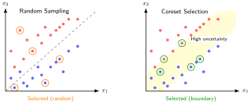</a>
</div>
<figcaption class="quarto-float-caption-bottom quarto-float-caption quarto-float-fig" id="fig-coreset-selection-caption-0ceaefa1-69ba-4598-a22c-09a6ac19f8ca">
Figure&nbsp;3: <strong>Lựa chọn Dựa trên Độ Bất Định (Minh họa)</strong>: Cả hai biểu đồ đều chọn năm mẫu, chỉ thay đổi cách phân bổ chứ không thay đổi ngân sách. Lấy mẫu ngẫu nhiên phân bố các lựa chọn đó khắp không gian đặc trưng; chiến lược dựa trên độ bất định minh họa thì dồn chúng vào dải tô bóng quanh ranh giới quyết định hiện tại.
</figcaption>
</figure>
</div>
<p>EL2N kết hợp với một mô hình proxy nhỏ mang lại sự cân bằng thực tế giữa chi phí chấm điểm và chất lượng lựa chọn. Cách làm là huấn luyện một mô hình nhẹ trong vài epoch, tính điểm EL2N, rồi chọn một tập con đáp ứng các kiểm tra về độ bao phủ và chất lượng. Mô hình proxy phải đưa ra các xếp hạng có thể chuyển giao sang mô hình mục tiêu, và khoản đầu tư này chỉ đáng giá khi mức tiết kiệm ở bước huấn luyện phía sau vượt chi phí lựa chọn ban đầu. Một kịch bản cụ thể sẽ minh họa quy trình này, mà không khẳng định rằng tập con 10 phần trăm sẽ giữ nguyên độ chính xác.</p>
<div id="exmp-data-selection-coreset-selection-practice" class="callout callout-example" title="Lựa chọn tập lõi trong thực tế">
<p></p><details class="callout-example fbx-simplebox fbx-default" open=""><summary><strong>Example 1.1: Lựa chọn tập lõi trong thực tế</strong></summary><div><strong>Kịch bản</strong>: Một nhóm kỹ thuật đặt mục tiêu chọn một tập lõi 100,000 (10 percent) từ 1 million ảnh huấn luyện để tăng tốc vòng lặp phát triển mô hình.<p></p>
<p><strong>Chẩn đoán</strong>: Lấy mẫu ngẫu nhiên đơn giản dễ làm rơi các lớp hiếm và các ví dụ ở ranh giới quyết định. Huấn luyện một mô hình proxy nhẹ trong 5 epoch để tính điểm lỗi EL2N, nhờ đó giữ lại các mẫu có độ bất định cao, tức những mẫu gần ranh giới quyết định.</p>
<p><strong>Bài học về hệ thống</strong>: Chọn coreset dựa trên mô hình proxy thay thế một số lần duyệt toàn bộ dữ liệu bằng tính điểm có mục tiêu. Cách này chỉ giúp tăng tốc huấn luyện mô hình chính khi xếp hạng từ proxy chuyển giao được và các kiểm tra độ bao phủ giữ lại các lớp hiếm cùng các trường hợp edge.</p>
</div></details>
</div>
<p><a href="#lst-el2n-coreset" class="quarto-xref">Listing&nbsp;1</a> minh họa cách tính điểm EL2N và chọn một coreset bằng một mô hình proxy nhẹ. Cơ chế này dùng một lượng nhỏ tài nguyên tính toán để thăm dò nhằm xác định các mẫu có độ bất định cao gần ranh giới quyết định. Sau đó, mô hình chính được huấn luyện trên tập con đã giữ lại, thay vì trên các ví dụ dễ và dư thừa. Lưu ý ví dụ này yêu cầu một dataloader không xáo trộn để mỗi vị trí điểm số luôn khớp với chỉ mục tương ứng trong tập dữ liệu.</p>
<p>Việc tính điểm bằng proxy biến độ bất định thành các chỉ mục mẫu có thể tái sử dụng: <code>compute_el2n_scores</code> đo xem những mẫu nào vẫn khiến một mô hình mới huấn luyện ngắn bị nhầm lẫn, và <code>select_coreset</code> giữ lại các ví dụ giàu thông tin đó cho toàn bộ quá trình huấn luyện.</p>
<div id="lst-el2n-coreset" class="listing quarto-float quarto-figure quarto-figure-left anchored">
<figure class="quarto-float quarto-float-lst figure">
<figcaption class="quarto-float-caption-top quarto-float-caption quarto-float-lst" id="lst-el2n-coreset-caption-0ceaefa1-69ba-4598-a22c-09a6ac19f8ca">
Listing&nbsp;1: <strong>EL2N-Based Coreset Selection</strong>: The <code>compute_el2n_scores</code> function trains a proxy model for a few epochs, then measures prediction error via L2 distance from one-hot labels. High scores identify samples the proxy finds difficult, including potentially noisy examples. The <code>select_coreset</code> function illustrates ranking by this score; production use also requires coverage, noise, and target-quality validation.
</figcaption>
<div aria-describedby="lst-el2n-coreset-caption-0ceaefa1-69ba-4598-a22c-09a6ac19f8ca">
<div class="code-copy-outer-scaffold"><div class="sourceCode" id="cb1"><pre class="sourceCode python code-with-copy"><code class="sourceCode python"><span id="cb1-1"><a href="#cb1-1" aria-hidden="true" tabindex="-1"></a><span class="kw">def</span> compute_el2n_scores(model, dataloader, num_epochs<span class="op">=</span><span class="dv">5</span>):</span>
<span id="cb1-2"><a href="#cb1-2" aria-hidden="true" tabindex="-1"></a>    <span class="co">"""Compute EL2N scores.</span></span>
<span id="cb1-3"><a href="#cb1-3" aria-hidden="true" tabindex="-1"></a></span>
<span id="cb1-4"><a href="#cb1-4" aria-hidden="true" tabindex="-1"></a><span class="co">    Returns L2 norm of (prediction - one_hot_label).</span></span>
<span id="cb1-5"><a href="#cb1-5" aria-hidden="true" tabindex="-1"></a><span class="co">    """</span></span>
<span id="cb1-6"><a href="#cb1-6" aria-hidden="true" tabindex="-1"></a>    <span class="co"># Train proxy model for a few epochs to get meaningful predictions</span></span>
<span id="cb1-7"><a href="#cb1-7" aria-hidden="true" tabindex="-1"></a>    train_proxy(model, dataloader, num_epochs)</span>
<span id="cb1-8"><a href="#cb1-8" aria-hidden="true" tabindex="-1"></a></span>
<span id="cb1-9"><a href="#cb1-9" aria-hidden="true" tabindex="-1"></a>    scores <span class="op">=</span> []</span>
<span id="cb1-10"><a href="#cb1-10" aria-hidden="true" tabindex="-1"></a>    model.<span class="bu">eval</span>()</span>
<span id="cb1-11"><a href="#cb1-11" aria-hidden="true" tabindex="-1"></a>    <span class="cf">for</span> x, y <span class="kw">in</span> dataloader:</span>
<span id="cb1-12"><a href="#cb1-12" aria-hidden="true" tabindex="-1"></a>        logits <span class="op">=</span> model(x)</span>
<span id="cb1-13"><a href="#cb1-13" aria-hidden="true" tabindex="-1"></a>        probs <span class="op">=</span> softmax(logits, dim<span class="op">=</span><span class="dv">1</span>)</span>
<span id="cb1-14"><a href="#cb1-14" aria-hidden="true" tabindex="-1"></a>        <span class="co"># One-hot encode labels</span></span>
<span id="cb1-15"><a href="#cb1-15" aria-hidden="true" tabindex="-1"></a>        one_hot <span class="op">=</span> zeros_like(probs).scatter_(<span class="dv">1</span>, y.unsqueeze(<span class="dv">1</span>), <span class="dv">1</span>)</span>
<span id="cb1-16"><a href="#cb1-16" aria-hidden="true" tabindex="-1"></a>        <span class="co"># EL2N score = L2 distance from confident prediction</span></span>
<span id="cb1-17"><a href="#cb1-17" aria-hidden="true" tabindex="-1"></a>        el2n <span class="op">=</span> (probs <span class="op">-</span> one_hot).norm(dim<span class="op">=</span><span class="dv">1</span>)  <span class="co"># High = uncertain</span></span>
<span id="cb1-18"><a href="#cb1-18" aria-hidden="true" tabindex="-1"></a>        scores.extend(el2n.tolist())</span>
<span id="cb1-19"><a href="#cb1-19" aria-hidden="true" tabindex="-1"></a>    <span class="cf">return</span> scores</span>
<span id="cb1-20"><a href="#cb1-20" aria-hidden="true" tabindex="-1"></a></span>
<span id="cb1-21"><a href="#cb1-21" aria-hidden="true" tabindex="-1"></a></span>
<span id="cb1-22"><a href="#cb1-22" aria-hidden="true" tabindex="-1"></a><span class="kw">def</span> select_coreset(scores, dataset, fraction<span class="op">=</span><span class="fl">0.1</span>):</span>
<span id="cb1-23"><a href="#cb1-23" aria-hidden="true" tabindex="-1"></a>    <span class="co">"""Select top-k highest-scoring (most uncertain) samples."""</span></span>
<span id="cb1-24"><a href="#cb1-24" aria-hidden="true" tabindex="-1"></a>    k <span class="op">=</span> <span class="bu">int</span>(<span class="bu">len</span>(dataset) <span class="op">*</span> fraction)</span>
<span id="cb1-25"><a href="#cb1-25" aria-hidden="true" tabindex="-1"></a>    <span class="co"># Sort by score descending (highest uncertainty first)</span></span>
<span id="cb1-26"><a href="#cb1-26" aria-hidden="true" tabindex="-1"></a>    indices <span class="op">=</span> argsort(scores, descending<span class="op">=</span><span class="va">True</span>)[:k]</span>
<span id="cb1-27"><a href="#cb1-27" aria-hidden="true" tabindex="-1"></a>    <span class="cf">return</span> Subset(dataset, indices)</span>
<span id="cb1-28"><a href="#cb1-28" aria-hidden="true" tabindex="-1"></a></span>
<span id="cb1-29"><a href="#cb1-29" aria-hidden="true" tabindex="-1"></a></span>
<span id="cb1-30"><a href="#cb1-30" aria-hidden="true" tabindex="-1"></a><span class="co"># Illustrative 10% subset; validate accuracy and coverage before use</span></span>
<span id="cb1-31"><a href="#cb1-31" aria-hidden="true" tabindex="-1"></a>scores <span class="op">=</span> compute_el2n_scores(proxy_model, full_loader)</span>
<span id="cb1-32"><a href="#cb1-32" aria-hidden="true" tabindex="-1"></a>coreset <span class="op">=</span> select_coreset(scores, full_dataset, fraction<span class="op">=</span><span class="fl">0.1</span>)</span>
<span id="cb1-33"><a href="#cb1-33" aria-hidden="true" tabindex="-1"></a>train_full_model(model, coreset)</span></code></pre></div><button title="Copy to Clipboard" class="code-copy-button"><i class="bi"></i></button></div>
</div>
</figure>
</div>
</section>
<section id="sec-data-selection-data-deduplication-6c20" class="level3 page-columns page-full">
<h3 class="anchored" data-anchor-id="sec-data-selection-data-deduplication-6c20">Khử trùng lặp dữ liệu</h3>
<p>Trong khi chọn coreset tập trung giữ lại các mẫu có nhiều thông tin, một cách tiếp cận bổ trợ nhắm vào các mẫu trùng lặp — những mẫu làm tăng chi phí tính toán nhưng không thêm tín hiệu học. Khử trùng lặp có thể mang lại hiệu quả ngay tức thì, đặc biệt với các bản sao chính xác hoặc gần giống, và không cần huấn luyện mô hình. Điều này khiến nó trở thành một trong những tối ưu dễ áp dụng nhất trong lựa chọn dữ liệu. Tuy nhiên, cần kiểm định các ngưỡng gần trùng lặp để pipeline không loại bỏ các tín hiệu về phân phối hữu ích.</p>
<p>Hình thức khử trùng lặp đơn giản nhất (đã được giới thiệu như một giai đoạn trong pipeline kỹ thuật dữ liệu tại <strong><a href="../04_data_engineering/04_data_engineering.html#sec-data-engineering-systematic-data-processing-aebc">Xử lý dữ liệu có hệ thống</a></strong>, và ở đây được xem như một đòn bẩy tối ưu hóa) dùng các phương pháp dựa trên hàm băm để tìm trùng khớp chính xác. Bằng cách tính một hàm băm mật mã (MD5 hoặc SHA-256) cho mỗi mẫu và loại bỏ những mẫu có hàm băm giống hệt, ta có thể loại bỏ các bản sao giống hệt từng byte, vốn thường tích lũy trong các tập dữ liệu lớn thu thập từ web. Quá trình này có chi phí tính toán thấp, tăng tuyến tính theo kích thước tập dữ liệu và có thể dễ dàng chạy song song.</p>
<p>Phát hiện gần trùng lặp dùng để xử lý nội dung khác nhau ở cấp độ byte nhưng vẫn có mức chồng lấp đáng kể theo token hoặc shingle ký tự. Với văn bản, MinHash<a href="#fn9" class="footnote-ref" id="fnref9" role="doc-noteref"><sup>9</sup></a> kết hợp Locality-Sensitive Hashing<a href="#fn10" class="footnote-ref" id="fnref10" role="doc-noteref"><sup>10</sup></a> (LSH) ước lượng hiệu quả độ tương đồng Jaccard<a href="#fn11" class="footnote-ref" id="fnref11" role="doc-noteref"><sup>11</sup></a>. Cách này phát hiện nội dung chỉnh sửa nhẹ nhưng có độ chồng lấp cao, tuy nhiên không xác lập được sự tương đương ngữ nghĩa giữa các diễn đạt khác nhau.</p>
<div class="no-row-height column-margin column-container"><div id="fn9"><p><sup>9</sup>&nbsp;<strong>MinHash</strong>: Thuật toán này do <span class="citation" data-cites="broder1997resemblance">Broder (<a href="#ref-broder1997resemblance" role="doc-biblioref">1997</a>)</span> đề xuất để phát hiện các trang web trùng lặp cho AltaVista. Nó tạo các chữ ký gọn bằng các hàm băm ngẫu nhiên sao cho các tài liệu tương tự sẽ cho ra các chữ ký giống nhau với xác suất cao. Mỗi chữ ký nén một tài liệu thành một sketch kích thước cố định, cho phép ước lượng độ tương đồng theo cặp trong thời gian <span class="math inline">\(\mathcal{O}(s)\)</span> với <span class="math inline">\(s\)</span> là kích thước sketch.</p><div id="ref-broder1997resemblance" class="csl-entry" role="listitem">
Broder, A. Z. 1997. <span>“On the Resemblance and Containment of Documents.”</span> <em>Proceedings. Compression and Complexity of SEQUENCES 1997 (Cat. No.97TB100171)</em>, 21–29. https://doi.org/10.1109/sequen.1997.666900.
</div></div><div id="fn10"><p><sup>10</sup>&nbsp;<strong>Băm nhạy cảm cục bộ (LSH)</strong>: LSH băm các chữ ký MinHash vào các bucket sao cho các chữ ký tương tự dễ đụng nhau hơn. Khâu tạo ứng viên giúp tránh phải so sánh mọi cặp, còn runtime và bộ nhớ phụ thuộc vào độ rộng chữ ký, cách chia theo dải (banding), kích thước bucket, và số lượng ứng viên cần xác minh.</p></div><div id="fn11"><p><sup>11</sup>&nbsp;<strong>Độ tương đồng Jaccard</strong>: Được định nghĩa là <span class="math inline">\(|A \cap B| / |A \cup B|\)</span>, có giá trị từ 0 (không giao) đến 1 (giống hệt). Trong khử trùng lặp, chỉ số này so sánh các tập shingle giữa những tài liệu có độ dài khác nhau. Cần hiệu chỉnh ngưỡng theo định nghĩa shingle, kho ngữ liệu (corpus) và chất lượng downstream, vì không có một ngưỡng chung nào tách bạch hoàn toàn giữa bản sao và các tài liệu liên quan hợp lệ.</p></div><div id="fn12"><p><sup>12</sup>&nbsp;<strong>CLIP (Contrastive Language-Image Pretraining)</strong>: Được huấn luyện trên 400 triệu cặp hình ảnh–văn bản, CLIP ánh xạ các hình ảnh và văn bản liên quan về ngữ nghĩa vào cùng một không gian embedding <span class="citation" data-cites="radford2021learning">(<a href="#ref-radford2021learning" role="doc-biblioref"><span class="nocase">Radford et al.</span> 2021</a>)</span>. Embedding có thể dùng để truy hồi các ứng viên cần rà soát, nhưng sự gần gũi về ngữ nghĩa không phải là bằng chứng cho thấy hai mẫu là bản sao trùng lặp. Việc tạo embedding cũng tốn kém đáng kể hơn so với tính toán băm nhận thức, với tỷ lệ chi phí phụ thuộc vào mô hình và phần cứng.</p><div id="ref-radford2021learning" class="csl-entry" role="listitem">
<span class="nocase">Radford, Alec, Jong Wook Kim, Chris Hallacy, Aditya Ramesh, Gabriel Goh, Sandhini Agarwal, Girish Sastry, et al.</span> 2021. <span>“Learning Transferable Visual Models from Natural Language Supervision.”</span> <em>International Conference on Machine Learning (ICML)</em>, 8748–63.
</div></div></div><p>Đối với hình ảnh, băm nhận thức tạo các chữ ký bền trước những biến đổi nhỏ như đổi kích thước và nén, giúp nhận diện các ứng viên tương tự về mặt thị giác dù được lưu ở các định dạng khác nhau. Tính tương đồng dựa trên embedding có thể tìm các ứng viên lân cận về ngữ nghĩa bằng cách tính các biểu diễn đậm đặc (CLIP<a href="#fn12" class="footnote-ref" id="fnref12" role="doc-noteref"><sup>12</sup></a> <span class="citation" data-cites="radford2021learning">(<a href="#ref-radford2021learning" role="doc-biblioref"><span class="nocase">Radford et al.</span> 2021</a>)</span> cho hình ảnh, sentence transformers cho văn bản). Tuy nhiên, mức độ gần gũi này không tự chứng minh đó là bản sao trùng lặp, và cách làm này cũng tốn kém hơn về mặt tính toán.</p>
<p>Khử trùng lặp có thể giảm việc mô hình ghi nhớ nội dung lặp lại và tránh tiêu tốn FLOPs cho các bản sao trùng khít hoặc gần giống. Nó cũng có thể làm thay đổi trọng số thực nghiệm có chủ đích của tập dữ liệu, nên cần xác thực các ngưỡng và chất lượng ở các bước sau, thay vì mặc định rằng mọi bản sao đều có hại.</p>
<p>Bối cảnh khử trùng lặp cũng khác khi các ví dụ được giữ lại dùng để lập chỉ mục một biểu diễn có trạng thái, thay vì chỉ thuộc về tập dữ liệu huấn luyện.</p>
<div id="lhs-data-selection-dlrm-embedding-deduplication" class="callout callout-lighthouse" title="DLRM và khử trùng lặp embedding">
<p></p><details class="callout-lighthouse fbx-simplebox fbx-default" open=""><summary><strong>Lighthouse 1.1: DLRM và khử trùng lặp embedding</strong></summary><div>Mô hình DLRM tiêu biểu của chúng tôi từ <strong><a href="../06_nn_architectures/06_nn_architectures.html#sec-network-architectures-lighthouse-roster-model-biographies-a763">Danh sách các mô hình tiêu biểu: Tiểu sử mô hình</a></strong> bị giới hạn bởi dung lượng bộ nhớ, với các bảng embedding tiêu tốn hàng terabyte lưu trữ cho hàng tỷ ID người dùng/mục. Phần lớn dung lượng này bị lãng phí vào <em>các embedding lạnh</em> (cold embeddings) – tức là các ID hiếm khi xuất hiện trong dữ liệu huấn luyện.<p></p>
<p>Việc lựa chọn dữ liệu cho DLRM có thể bao gồm khử trùng lặp tương tác và tỉa (pruning) embedding đối với các ID lạnh. Việc loại bỏ các tương tác lặp lại giúp giảm số lượng ví dụ huấn luyện, nhưng chỉ thu nhỏ bảng embedding khi các ID biến mất, hoặc khi chính sách cấp phát, băm (hashing) hay chia sẻ thay đổi.</p>
</div></details>
</div>
</section>
<section id="sec-data-selection-data-pruning-quality-3d69" class="level3">
<h3 class="anchored" data-anchor-id="sec-data-selection-data-pruning-quality-3d69">Tỉa (pruning) dữ liệu theo chất lượng</h3>
<p>Khử trùng lặp loại bỏ các mẫu dư thừa, nhưng vẫn còn một nhóm dữ liệu có vấn đề thứ ba: các mẫu gây hại trực tiếp cho quá trình huấn luyện. Tỉa (pruning) dựa trên chất lượng loại bỏ các mẫu không đóng góp tín hiệu có ý nghĩa hoặc đưa vào thông tin mâu thuẫn khiến quá trình tối ưu hóa bị nhiễu loạn.</p>
<p>Phát hiện lỗi nhãn có thể là một hình thức tỉa (pruning) theo chất lượng có tác động lớn. Các công cụ như Cleanlab xác định các mẫu mà nhãn được gán có thể không chính xác dựa trên các đặc điểm về độ tin cậy của mô hình trong suốt quá trình huấn luyện. Một mẫu mà mô hình luôn dự đoán là lớp A nhưng được gán nhãn lớp B có thể là trường hợp biên khó, sự dịch chuyển phân phối, điểm mù của mô hình hoặc lỗi chú thích. Điểm số này nên kích hoạt việc xem xét thay vì xóa tự động; các lỗi đã xác nhận sau đó có thể được sửa hoặc loại bỏ.</p>
<p>Loại bỏ điểm ngoại lệ xử lý một dạng bệnh lý khác: các mẫu nằm xa mọi tâm cụm trong không gian đặc trưng. Những điểm như vậy có thể báo hiệu nhiễu, lỗi gán nhãn hoặc hỏng hóc, nhưng cũng có thể là các trường hợp edge hiếm gặp định hình rủi ro khi triển khai. Mấu chốt là phân biệt các ngoại lệ có giá trị thông tin với các mẫu không hợp lệ, dùng ngưỡng bảo thủ và xem xét ở cấp độ slice trước khi loại bỏ.</p>
<p>Lọc mẫu ít thông tin áp dụng các quy tắc theo miền để loại bỏ những mẫu không đủ tín hiệu cho việc học. Với tập văn bản, điều này thường là loại bỏ văn bản lộn xộn có độ phức tạp cao (độ phức tạp là thước đo của mô hình ngôn ngữ về mức độ bất ngờ của văn bản, nên giá trị cao báo hiệu chuỗi không mạch lạc) và, trong một số pipeline, cả văn bản rập khuôn hoặc lặp lại có độ phức tạp thấp. Với các tập dữ liệu hình ảnh, việc lọc nhắm vào các mẫu mờ, hỏng hoặc gần như đồng nhất vì chúng cung cấp rất ít thông tin trực quan.</p>
<p>Cùng nhau, ba kỹ thuật tỉa (pruning) tĩnh—lựa chọn coreset, loại bỏ trùng lặp và lọc chất lượng—có thể giảm khối lượng công việc trước khi huấn luyện. Khi số lượng epoch, kích thước batch và khối lượng công việc trên mỗi mẫu được giữ cố định, giảm tập dữ liệu 50 phần trăm đồng nghĩa với việc giảm 50 phần trăm số lần truyền xuôi, truyền ngược và cập nhật gradient. Các lịch huấn luyện thêm epoch hoặc bước để bù trừ sẽ làm giảm mức tiết kiệm đó.</p>
<p>Tỉa (pruning) tĩnh trả lời câu hỏi <em>nên giữ lại những gì</em>, nhưng xem câu trả lời là cố định. Một khi tập dữ liệu đã tỉa được chốt, mỗi epoch sẽ huấn luyện trên đúng tập con đó. Tuy nhiên, độ hữu ích của một mẫu có thể thay đổi khi mô hình học: những ví dụ thách thức một mô hình còn non có thể trở nên dễ sau đủ lần cập nhật gradient. Các kỹ thuật lựa chọn động khắc phục hạn chế này bằng cách điều chỉnh dữ liệu huấn luyện ở từng giai đoạn, dựa trên những gì mô hình đã nắm vững.</p>
<div id="quiz-question-sec-data-selection-static-pruning-a390" class="callout callout-quiz-question">
<details class="callout-quiz-question fbx-simplebox fbx-default"><summary><strong>Self-Check: Question</strong></summary><div>
<ol type="1">
<li><p>A team wants to select a coreset of size <span class="math inline">\(K\)</span> from a dataset of size <span class="math inline">\(D\)</span> before training a large production model. They need a method that accounts for model uncertainty near decision boundaries but cannot afford a full target-model training run for scoring. Which method and systems trade-off best fits their requirement?</p>
<ol type="a">
<li><span class="math inline">\(k\)</span>-Center clustering on raw pixel inputs, because it guarantees zero-cost label-aware boundary identification</li>
<li>Forgetting Events scoring on the full production model, because it requires no proxy architecture and computes in <span class="math inline">\(\mathcal{O}(1)\)</span> time</li>
<li>EL2N (Error L2-Norm) scoring using an inexpensive proxy model trained for a few epochs, leveraging proxy score transferability</li>
<li>Herding on Gaussian-distributed features, because it completely avoids computing feature representations</li>
</ol></li>
<li><p>Why is Locality-Sensitive Hashing (LSH) with MinHash preferred over exhaustive pairwise Jaccard similarity comparison for large-scale text deduplication?</p>
<ol type="a">
<li>MinHash LSH guarantees <span class="math inline">\(100\%\)</span> precision in detecting semantic paraphrases across different natural languages</li>
<li>MinHash eliminates the need to tokenize or shingle input documents before hashing</li>
<li>Exhaustive pairwise Jaccard comparison requires training a deep neural network, whereas LSH is purely rule-based</li>
<li>Exhaustive pairwise comparison requires <span class="math inline">\(\mathcal{O}(D^2)\)</span> document comparisons, whereas MinHash LSH hashes compact signatures into sublinear candidate collision buckets</li>
</ol></li>
<li><p>In recommendation systems like DLRM where embedding tables consume terabytes of memory, how does interaction deduplication differ in systems impact from cold embedding pruning?</p></li>
<li><p>True or False: Removing near-duplicate documents with MinHash LSH always improves model accuracy because duplicate data has zero statistical value in all training regimes.</p></li>
<li><p>The training-dynamics coreset metric that measures the Euclidean norm of the difference between predicted class probabilities and the one-hot target vector early in training is known as ____.</p></li>
</ol>
<p><a href="#quiz-answer-sec-data-selection-static-pruning-a390" class="question-label" onclick="event.preventDefault();document.getElementById('quiz-answer-sec-data-selection-static-pruning-a390').scrollIntoView({behavior:'smooth',block:'start'});history.pushState(null,'','#quiz-answer-sec-data-selection-static-pruning-a390');">See Answers →</a></p>
</div></details>
</div>
</section>
</section>
<section id="sec-data-selection-dynamic-selection-edaa" class="level2 page-columns page-full">
<h2 class="anchored" data-anchor-id="sec-data-selection-dynamic-selection-edaa">Lựa chọn động</h2>
<p>Ở giai đoạn đầu huấn luyện, mô hình hưởng lợi từ phạm vi bao phủ rộng với nhiều ví dụ dễ để xây dựng các biểu diễn đặc trưng ổn định. Về sau, chính những ví dụ đó tạo ra ít tín hiệu gradient mới, trong khi các mẫu khó hơn, nằm gần ranh giới quyết định, lại giá trị hơn cho việc tinh chỉnh. Lựa chọn động khai thác sự thay đổi trong tỷ lệ thông tin/tính toán này bằng cách điều chỉnh dữ liệu đưa vào sao cho phù hợp với trạng thái hiện tại của mô hình.</p>
<section id="sec-data-selection-curriculum-learning-easy-hard-2c4e" class="level3 page-columns page-full">
<h3 class="anchored" data-anchor-id="sec-data-selection-curriculum-learning-easy-hard-2c4e">Học theo chương trình (Curriculum learning): Từ dễ đến khó</h3>
<p>Kỹ thuật lựa chọn động đầu tiên, <strong>học theo chương trình (curriculum learning)</strong><a href="#fn13" class="footnote-ref" id="fnref13" role="doc-noteref"><sup>13</sup></a> <span class="citation" data-cites="bengio2009 soviany2022">(<a href="#ref-bengio2009" role="doc-biblioref">Bengio et al. 2009</a>; <a href="#ref-soviany2022" role="doc-biblioref">Soviany et al. 2022</a>)</span>, sắp xếp thứ tự mà dữ liệu được trình bày cho mô hình. Thay vì xáo trộn ngẫu nhiên, kỹ thuật này bắt đầu với các ví dụ đơn giản và dần dần đưa vào các ví dụ phức tạp hơn, phản ánh cách con người học: nắm vững kiến thức cơ bản trước khi bước sang phần khó hơn.</p>
<div class="no-row-height column-margin column-container"><div id="fn13"><p><sup>13</sup>&nbsp;<strong>Học theo chương trình (Curriculum learning)</strong>: Từ tiếng Latin <em>currere</em> (“chạy”), ban đầu có nghĩa là “lộ trình cần hoàn thành”—một phép ẩn dụ rất phù hợp với kỹ thuật này: dữ liệu huấn luyện giống như một lộ trình được thực hiện theo thứ tự có chủ ý, bắt đầu từ những phần dễ. Học theo chương trình có thể đóng vai trò như một phương pháp tiếp nối trong tối ưu hóa phi lồi: các ví dụ dễ hơn sẽ định hình quỹ đạo tối ưu hóa ở giai đoạn đầu, trước khi các ví dụ khó hơn được đưa vào. Từ góc độ hệ thống, ICR của một mẫu có thể thay đổi trong quá trình huấn luyện, qua đó thúc đẩy việc thay đổi cách pha trộn các ví dụ theo thời gian.</p></div><div id="ref-bengio2009" class="csl-entry" role="listitem">
Bengio, Yoshua, Jérôme Louradour, Ronan Collobert, and Jason Weston. 2009. <span>“Curriculum Learning.”</span> <em>Proceedings of the 26th Annual International Conference on Machine Learning</em>, 41–48. https://doi.org/10.1145/1553374.1553380.
</div><div id="ref-soviany2022" class="csl-entry" role="listitem">
Soviany, Petru, Radu Tudor Ionescu, Paolo Rota, and Nicu Sebe. 2022. <span>“Curriculum Learning: A Survey.”</span> <em>International Journal of Computer Vision</em> 130 (6): 1526–65. https://doi.org/10.1007/s11263-022-01611-x.
</div></div><p>Curriculum learning có thể thay đổi quỹ đạo tối ưu hóa bằng cách kiểm soát những gradient nào chiếm ưu thế ở mỗi giai đoạn. Các ví dụ dễ có thể cung cấp tín hiệu ổn định sớm, trong khi các ví dụ được chấm là khó có thể chứa thông tin ranh giới hữu ích, nhiễu nhãn hoặc các điểm ngoại lệ. Lịch trình từ dễ đến khó có thể làm cho quá trình huấn luyện mượt hơn với một số khối lượng công việc (workload), nhưng lợi ích còn tùy thuộc vào điểm đánh giá độ khó, quy tắc điều chỉnh tốc độ, mô hình và dữ liệu; vì vậy, <a href="#tbl-curriculum-benchmarks" class="quarto-xref">table&nbsp;5</a> coi các con số tiết kiệm chỉ mang tính minh họa chứ không phải là đảm bảo.</p>
<p>Để triển khai học theo chương trình, cần hai thành phần: một bộ chấm điểm độ khó để xếp hạng các mẫu, và một hàm điều chỉnh tốc độ để kiểm soát tốc độ đưa các mẫu khó vào. Một lựa chọn phổ biến là điều chỉnh tốc độ tuyến tính: <span class="math display">\[
\text{samples}_{n_{\text{epoch}}} = \texttt{sort\_by\_difficulty}[:D \cdot \min(1, n_{\text{epoch}}/N_{\text{warmup}})]
\]</span> trong đó <span class="math inline">\(n_{\text{epoch}}\)</span> là số epoch hiện tại, <span class="math inline">\(D\)</span> là kích thước đầy đủ của tập dữ liệu, và <span class="math inline">\(N_{\text{warmup}}\)</span> là số epoch khởi động trước khi toàn bộ tập dữ liệu được sử dụng. Trong các epoch đầu, việc huấn luyện chỉ diễn ra trên phần dễ nhất của dữ liệu, với kích thước <span class="math inline">\(D \cdot (n_{\text{epoch}}/N_{\text{warmup}})\)</span>. Sau giai đoạn khởi động, quá trình huấn luyện tiếp tục trên toàn bộ tập dữ liệu.</p>
<p>Bộ chấm điểm độ khó là một lựa chọn ở tầng hệ thống, vì nó đánh đổi chi phí tính toán để thăm dò với chất lượng sắp thứ tự, như <a href="#tbl-difficulty-scoring" class="quarto-xref">table&nbsp;4</a> cho thấy. Chấm điểm theo loss và độ tin cậy cho thứ tự tốt hơn nhưng phải chạy suy luận thêm; các heuristic tránh tính toán nhưng đòi hỏi kiến thức miền; còn self-paced đưa việc thích ứng vào ngay vòng lặp huấn luyện.</p>
<div id="tbl-difficulty-scoring" class="striped hover quarto-float quarto-figure quarto-figure-center anchored">
<figure class="quarto-float quarto-float-tbl figure">
<figcaption class="quarto-float-caption-top quarto-float-caption quarto-float-tbl" id="tbl-difficulty-scoring-caption-0ceaefa1-69ba-4598-a22c-09a6ac19f8ca">
Table&nbsp;4: <strong>Chiến lược chấm điểm độ khó cho học tập theo chương trình (Curriculum Learning)</strong>: Các hàng trong bảng so sánh nguồn tín hiệu của từng bộ chấm điểm với các yêu cầu hệ thống hoặc sự đánh đổi mà nó mang lại.
</figcaption>
<div aria-describedby="tbl-difficulty-scoring-caption-0ceaefa1-69ba-4598-a22c-09a6ac19f8ca">
<table class="table-striped table-hover caption-top table">
<colgroup>
<col style="width: 20%">
<col style="width: 38%">
<col style="width: 40%">
</colgroup>
<thead>
<tr class="header">
<th style="text-align: left;"><strong>Chiến lược</strong></th>
<th style="text-align: left;"><strong>Điểm độ khó</strong></th>
<th style="text-align: left;"><strong>Tốt nhất cho</strong></th>
</tr>
</thead>
<tbody>
<tr class="odd">
<td style="text-align: left;"><strong>Dựa trên hàm mất mát</strong></td>
<td style="text-align: left;">Hàm mất mát từ mô hình thăm dò (thấp = dễ)</td>
<td style="text-align: left;">Đa năng; yêu cầu huấn luyện mô hình thăm dò</td>
</tr>
<tr class="even">
<td style="text-align: left;"><strong>Dựa trên độ tin cậy</strong></td>
<td style="text-align: left;">Độ tin cậy của mô hình Teacher (cao = dễ)</td>
<td style="text-align: left;">Khi mô hình Teacher có sẵn; distillation setups</td>
</tr>
<tr class="odd">
<td style="text-align: left;"><strong>Các phương pháp heuristic theo miền</strong></td>
<td style="text-align: left;">Độ dài câu, độ phức tạp của hình ảnh</td>
<td style="text-align: left;">Không cần tính toán bổ sung; yêu cầu kiến thức miền</td>
</tr>
<tr class="even">
<td style="text-align: left;"><strong>Tự điều chỉnh tốc độ</strong></td>
<td style="text-align: left;">Hàm mất mát của mô hình hiện tại (cập nhật mỗi epoch)</td>
<td style="text-align: left;">Thích ứng; không cần mô hình thăm dò</td>
</tr>
</tbody>
</table>
</div>
</figure>
</div>
<p><a href="#tbl-curriculum-benchmarks" class="quarto-xref">Table&nbsp;5</a> sử dụng số lượng epoch giả định để minh họa cách tính toán mức tiết kiệm có thể đạt được khi áp dụng học theo chương trình trên các khối lượng công việc (workload) khác nhau. Các giá trị này chỉ mang tính minh họa, không phải là kết quả đo lường thực tế từ các nghiên cứu về học theo chương trình đã được trích dẫn.</p>
<div id="tbl-curriculum-benchmarks" class="striped hover quarto-float quarto-figure quarto-figure-center anchored" data-tbl-colwidths="[20,20,20,20,20]">
<figure class="quarto-float quarto-float-tbl figure">
<figcaption class="quarto-float-caption-top quarto-float-caption quarto-float-tbl" id="tbl-curriculum-benchmarks-caption-0ceaefa1-69ba-4598-a22c-09a6ac19f8ca">
Table&nbsp;5: <strong>Minh họa giảm số epoch trong học tập theo chương trình</strong>: Bảng này áp dụng một quy tắc độ chính xác mục tiêu cho số lượng epoch giả định của cả phương pháp cơ sở và phương pháp học theo chương trình. Nó chỉ minh họa phép tính, chứ không nhằm xếp hạng các tập dữ liệu hay phương pháp.
</figcaption>
<div aria-describedby="tbl-curriculum-benchmarks-caption-0ceaefa1-69ba-4598-a22c-09a6ac19f8ca">
<table class="table-striped table-hover caption-top table">
<colgroup>
<col style="width: 20%">
<col style="width: 20%">
<col style="width: 20%">
<col style="width: 20%">
<col style="width: 20%">
</colgroup>
<thead>
<tr class="header">
<th style="text-align: left;"><strong>Tập dữ liệu</strong></th>
<th style="text-align: center;"><strong>Mô hình</strong></th>
<th style="text-align: left;"><strong>Chiến lược điều chỉnh tốc độ</strong></th>
<th style="text-align: left;"><strong>Số epoch để đạt độ chính xác mục tiêu</strong></th>
<th style="text-align: center;"><strong>Giảm số epoch</strong></th>
</tr>
</thead>
<tbody>
<tr class="odd">
<td style="text-align: left;"><strong>CIFAR-10</strong></td>
<td style="text-align: center;">ResNet-18</td>
<td style="text-align: left;">Khởi động tuyến tính</td>
<td style="text-align: left;">115 so với 150 baseline</td>
<td style="text-align: center;">23.3% ít epoch hơn</td>
</tr>
<tr class="even">
<td style="text-align: left;"><strong>CIFAR-100</strong></td>
<td style="text-align: center;">ResNet-32</td>
<td style="text-align: left;">Tự điều chỉnh tốc độ</td>
<td style="text-align: left;">180 so với 220 baseline</td>
<td style="text-align: center;">18.2% ít epoch hơn</td>
</tr>
<tr class="odd">
<td style="text-align: left;"><strong>ImageNet</strong></td>
<td style="text-align: center;">ResNet-50</td>
<td style="text-align: left;">Dựa trên hàm mất mát</td>
<td style="text-align: left;">80 so với 90 baseline</td>
<td style="text-align: center;">11.1% ít epoch hơn</td>
</tr>
<tr class="even">
<td style="text-align: left;"><strong>ImageNet</strong></td>
<td style="text-align: center;">ResNet-50</td>
<td style="text-align: left;">Đã học (nhãn nhiễu)</td>
<td style="text-align: left;">70 so với 90 đường cơ sở</td>
<td style="text-align: center;">22.2% ít epoch hơn</td>
</tr>
</tbody>
</table>
</div>
</figure>
</div>
<p>Tình huống này cho thấy rằng những cải thiện hữu ích từ việc sắp xếp chương trình học cần được đo lường dựa trên một chỉ số mục tiêu cố định. Thứ tự sắp xếp này phụ thuộc vào từng tác vụ cụ thể: <em>anti-curriculum</em> sẽ đưa các ví dụ khó lên trước, trong khi <em>học tập tự điều chỉnh (self-paced learning)</em> điều chỉnh độ khó dựa trên loss hiện tại của mô hình. Không có thứ tự nào luôn vượt trội trong mọi tình huống.</p>
</section>
<section id="sec-data-selection-active-learning-humanintheloop-6932" class="level3 page-columns page-full">
<h3 class="anchored" data-anchor-id="sec-data-selection-active-learning-humanintheloop-6932">Học tập tích cực (Active learning): Con người trong vòng lặp</h3>
<p>Học tập theo chương trình tối ưu hóa thứ tự đưa mẫu vào huấn luyện, nhưng giả định mọi mẫu đều đã có nhãn. Giả định này không còn đúng trong các lĩnh vực chuyên biệt, nơi việc gán nhãn đòi hỏi nhiều chuyên môn, thời gian hoặc chi phí. Thay vì gán nhãn hết ngay từ đầu, học tập tích cực (active learning)<a href="#fn14" class="footnote-ref" id="fnref14" role="doc-noteref"><sup>14</sup></a> <span class="citation" data-cites="settles2012 ren2021">(<a href="#ref-settles2012" role="doc-biblioref">Settles 2012</a>; <a href="#ref-ren2021" role="doc-biblioref">Ren et al. 2021</a>)</span> chuyển mục tiêu tối ưu hóa: từ chọn các mẫu đã có nhãn để huấn luyện sang chọn những mẫu chưa có nhãn đáng để gán nhãn.</p>
<div class="no-row-height column-margin column-container"><div id="fn14"><p><sup>14</sup>&nbsp;<strong>Học tập tích cực (Active learning)</strong>: Thành phần “tích cực” ở đây chính là thuật toán tự chọn ra các mẫu chưa có nhãn mà chuyên gia cần gán nhãn tiếp theo. Điều này chuyển vấn đề từ tối ưu hóa tính toán (huấn luyện trên dữ liệu có sẵn) sang một bài toán tài chính: tối đa hóa mức cải thiện của mô hình trên mỗi đô la chi cho việc gán nhãn bởi chuyên gia. Việc truy vấn các ví dụ mang lại nhiều thông tin nhất có thể giảm đáng kể nhu cầu gán nhãn so với lấy mẫu ngẫu nhiên, nhưng hiệu quả này phụ thuộc vào tác vụ, mô hình và oracle.</p></div></div><p>Học tập tích cực biến việc thu thập dữ liệu từ một hoạt động tĩnh thành một quy trình truy vấn lặp. Hãy lần theo vòng lặp trong <a href="#fig-active-learning-loop" class="quarto-xref">figure&nbsp;4</a>, để thấy cách các chỉ số về độ không chắc chắn của mô hình chọn ra các mẫu chưa có nhãn có giá trị cao để chuyên gia gán nhãn.</p>
<p>Hiệu quả của học tập tích cực phụ thuộc rất nhiều vào chiến lược truy vấn được dùng để chọn mẫu cần gán nhãn <span class="citation" data-cites="settles2009active settles2012 ren2021">(<a href="#ref-settles2009active" role="doc-biblioref">Settles 2009</a>, <a href="#ref-settles2012" role="doc-biblioref">2012</a>; <a href="#ref-ren2021" role="doc-biblioref">Ren et al. 2021</a>)</span>. Cách tiếp cận đơn giản nhất là lấy mẫu dựa trên độ không chắc chắn (<em>uncertainty sampling</em>). Kỹ thuật này chọn những mẫu mà mô hình kém tự tin nhất, ví dụ, các dự đoán có xác suất gần 0.5 đối với bài toán phân loại nhị phân. Cách này không tốn nhiều tài nguyên tính toán khi chỉ dùng một mô hình, nhưng có thể khiến các truy vấn tập trung quá mức vào một vùng dữ liệu mơ hồ. Kỹ thuật truy vấn theo ủy ban (<em>Query-by-committee</em>) mở rộng ý tưởng này bằng cách huấn luyện nhiều mô hình và chọn những mẫu mà các mô hình này bất đồng nhiều nhất, nhờ đó nắm bắt được sự không chắc chắn về mặt nhận thức (epistemic uncertainty) mà một mô hình đơn lẻ có thể bỏ qua.</p>
<div class="no-row-height column-margin column-container"><div id="ref-settles2009active" class="csl-entry" role="listitem">
Settles, Burr. 2009. <em>Active Learning Literature Survey</em>. Computer Sciences Technical Report 1648. University of Wisconsin-Madison.
</div><div id="ref-settles2012" class="csl-entry" role="listitem">
Settles, Burr. 2012. <em>Active Learning</em>. Synthesis Lectures on Artificial Intelligence and Machine Learning. Springer Cham. https://doi.org/10.1007/978-3-031-01560-1.
</div><div id="ref-ren2021" class="csl-entry" role="listitem">
Ren, Pengzhen, Yun Xiao, Xiaojun Chang, Po-Yao Huang, Zhihui Li, Brij B. Gupta, Xiaojiang Chen, and Xin Wang. 2021. <span>“A Survey of Deep Active Learning.”</span> <em>ACM Computing Surveys</em> 54 (9): 1–40. https://doi.org/10.1145/3472291.
</div></div><p>Với những ai sẵn sàng đầu tư nhiều tài nguyên tính toán hơn, kỹ thuật thay đổi mô hình dự kiến (<em>expected model change</em>) sẽ chọn các mẫu mà nếu được gán nhãn, sẽ tạo ra cập nhật gradient lớn nhất cho mô hình. Đây là một lựa chọn thay thế có cơ sở lý thuyết vững chắc nhưng đòi hỏi chi phí tính toán cao. Kỹ thuật lấy mẫu đa dạng (<em>diversity sampling</em>) bổ trợ cho các phương pháp dựa trên độ không chắc chắn bằng cách chọn những mẫu khác biệt với dữ liệu đã gán nhãn hiện có, nhằm tăng độ bao phủ thay vì dồn mọi truy vấn quanh cùng một vùng mơ hồ.</p>
<p>Học chủ động đặc biệt hữu ích trong các lĩnh vực cần chuyên môn để gán nhãn. Ví dụ, trong chẩn đoán hình ảnh, một hệ thống AI đọc X-quang có thể tự tin với các bệnh phổ biến nhưng lại thiếu chắc chắn ở những ca hiếm. Bằng cách tập trung gán nhãn của con người vào các trường hợp mơ hồ này, học chủ động giúp tận dụng hiệu quả thời gian chuyên gia vốn tốn kém, đồng thời tăng tốc cải thiện mô hình.</p>
<div id="fig-active-learning-loop" class="quarto-float quarto-figure quarto-figure-center anchored" alt="Chu trình năm khối: *Unlabeled Pool* trỏ sang *Selection Strategy* với *Query*, rồi xuống *Oracle (Human)* với *Uncertainty*, xuống *Training Set* với *Labels*, sang trái *Model* với *Train*, và quay lên *Unlabeled Pool* bằng mũi tên *Update* nét đứt.">
<figure class="quarto-float quarto-float-fig figure">
<div aria-describedby="fig-active-learning-loop-caption-0ceaefa1-69ba-4598-a22c-09a6ac19f8ca">
<a href="9a2a73c2456076aa9246081f5c7601bc69df13b9.svg" class="lightbox" data-gallery="quarto-lightbox-gallery-7" title="Figure&nbsp;4: Vòng lặp kín của học chủ động: Chu trình lựa chọn này đánh đổi tài nguyên tính toán để chấm điểm proxy lấy các truy vấn được chọn từ tập chưa gán nhãn đưa cho oracle (chuyên gia) gán nhãn. Các tiêu chí về độ không chắc chắn, đa dạng và độ bao phủ nhằm thu được nhiều thông tin hơn trên mỗi lần gán nhãn so với việc lấy mẫu không chủ đích.">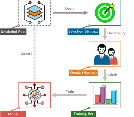</a>
</div>
<figcaption class="quarto-float-caption-bottom quarto-float-caption quarto-float-fig" id="fig-active-learning-loop-caption-0ceaefa1-69ba-4598-a22c-09a6ac19f8ca">
Figure&nbsp;4: <strong>Vòng lặp kín của học chủ động</strong>: Chu trình lựa chọn này đánh đổi tài nguyên tính toán để chấm điểm proxy lấy các truy vấn được chọn từ tập chưa gán nhãn đưa cho <em>oracle</em> (chuyên gia) gán nhãn. Các tiêu chí về độ không chắc chắn, đa dạng và độ bao phủ nhằm thu được nhiều thông tin hơn trên mỗi lần gán nhãn so với việc lấy mẫu không chủ đích.
</figcaption>
</figure>
</div>
<p>Tác động kinh tế có thể rất lớn trong các lĩnh vực chuyên môn, nơi chi phí gán nhãn và thời gian xử lý có thể vượt trội so với chi phí tính toán dùng để chấm điểm các ứng viên. Các chiến lược truy vấn này điều khiển từng vòng lặp học chủ động trong <a href="#fig-active-learning-loop" class="quarto-xref">figure&nbsp;4</a>, và một so sánh ngân sách đơn giản cho thấy học chủ động có thể giảm chi phí gán nhãn và khối lượng huấn luyện với các giả định đã nêu.</p>
<div id="nbk-data-selection-active-learning-roi" class="callout callout-notebook" title="Lợi tức đầu tư (ROI) của học chủ động">
<p></p><details class="callout-notebook fbx-simplebox fbx-default" open=""><summary><strong>Napkin Math 1.3: Lợi tức đầu tư (ROI) của học chủ động</strong></summary><div><strong>Vấn đề</strong>: Một nhóm bệnh viện có 1 Million ảnh quét chưa có nhãn, chi phí gán nhãn bởi chuyên gia là $5/label, ngân sách $500,000 và thời hạn 1 month. Lấy mẫu theo độ không chắc chắn ảnh hưởng đến chi phí gán nhãn và khối lượng huấn luyện trên mỗi epoch ra sao so với ngưỡng cơ sở ngẫu nhiên khớp ngân sách?<p></p>
<p><strong>Kịch bản A: Gán nhãn đơn giản</strong></p>
<ul>
<li><strong>Chi phí</strong>: Gán nhãn tất cả 1 Million ảnh quét sẽ tiêu tốn $5,000,000 (vượt quá ngân sách 10× lần).</li>
<li><strong>Ngưỡng cơ sở tương ứng với ngân sách</strong>: <span class="math inline">\(\$500,000 \div \$5/\text{label} = 100,000\)</span> ảnh quét ngẫu nhiên.</li>
<li><strong>Kết quả gán nhãn đơn giản</strong>: Lựa chọn ngẫu nhiên không đảm bảo bao phủ các bệnh lý hiếm gặp.</li>
</ul>
<p><strong>Kịch bản B: Học chủ động</strong></p>
<ul>
<li><strong>Chiến lược</strong>: Lấy mẫu theo độ không chắc chắn chọn 50,000 ảnh quét để chuyên gia gán nhãn.</li>
<li><strong>Chi phí</strong>: <span class="math inline">\(50,000 \times \$5/\text{label} = \$250,000\)</span> (50 percent dưới mức ngân sách).</li>
<li><strong>Công sức huấn luyện</strong>: Ít hơn <span class="math inline">\(100,000 \div 50,000 = 2×\)</span> ví dụ mỗi epoch so với đường cơ sở ngẫu nhiên có cùng ngân sách.</li>
<li><strong>Kết quả học chủ động</strong>: Việc đạt mức tương đương với 100,000 ảnh quét ngẫu nhiên cần được kiểm chứng thực nghiệm.</li>
</ul>
<p><strong>Góc nhìn hệ thống</strong>: So với đường cơ sở ngẫu nhiên có cùng ngân sách, việc chọn mẫu giúp tiết kiệm <span class="math inline">\(\$500,000 - \$250,000 = \$250,000\)</span>; độ chính xác vẫn cần được kiểm chứng thực nghiệm.</p>
</div></details>
</div>
<p>Việc chọn mẫu có mục tiêu có thể giảm khối lượng gán nhãn cần thiết để đạt một chỉ số mong muốn. Hãy so sánh hai đường cong độ chính xác minh họa trong <a href="#fig-active-learning-multiplier" class="quarto-xref">figure&nbsp;5</a>, chú ý khoảng cách theo chiều ngang giữa phương pháp lấy mẫu theo độ không chắc chắn chủ động và đường cơ sở chọn ngẫu nhiên khi số lượng mẫu tăng.</p>
<div id="fig-active-learning-multiplier" class="quarto-float quarto-figure quarto-figure-center anchored" alt="Biểu đồ đường thể hiện số lượng mẫu có **nhãn** (từ 100 đến 10.000) trên trục hoành (x) theo thang logarit, và độ chính xác trên trục tung (y). Đường cong học chủ động màu xanh lá cây nằm phía trên đường cong lấy mẫu ngẫu nhiên màu xám nét đứt; vùng giữa hai đường cong được tô màu xanh lá cây. Một mũi tên ngang gần mức độ chính xác 90% được ghi chú là hiệu quả **dữ liệu** gấp 4 lần." data-fig-env="figure" data-fig-pos="htb">
<figure class="quarto-float quarto-float-fig figure">
<div aria-describedby="fig-active-learning-multiplier-caption-0ceaefa1-69ba-4598-a22c-09a6ac19f8ca">
<div id="f7b381b1" class="cell" data-execution_count="9">
<div class="cell-output cell-output-display">
<div>
<figure class="figure">
<p><a href="09_data_selection_files/figure-html/cell-10-output-1.png" class="lightbox" data-gallery="quarto-lightbox-gallery-8" title="Figure&nbsp;5: Hệ số nhân của Học chủ động: Độ chính xác của mô hình được biểu diễn theo số lượng mẫu có nhãn trên trục logarit. Trong kịch bản minh họa này, học chủ động (đường màu xanh lá cây liền nét) đạt độ chính xác tương đương nhưng cần ít nhãn hơn so với lấy mẫu ngẫu nhiên (đường màu xám nét đứt); mũi tên cho thấy chênh lệch hiệu quả về nhãn khoảng 4\times khi độ chính xác gần 90%.">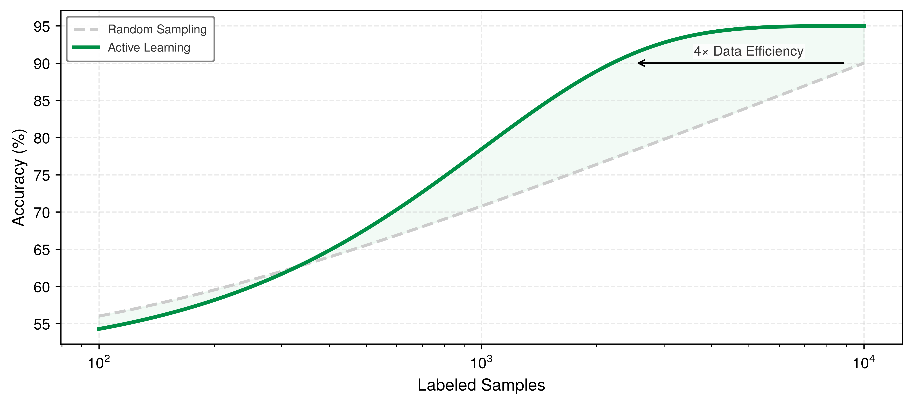</a></p>
</figure>
</div>
</div>
</div>
</div>
<figcaption class="quarto-float-caption-bottom quarto-float-caption quarto-float-fig" id="fig-active-learning-multiplier-caption-0ceaefa1-69ba-4598-a22c-09a6ac19f8ca">
Figure&nbsp;5: <strong>Hệ số nhân của Học chủ động</strong>: Độ chính xác của <strong>mô hình</strong> được biểu diễn theo số lượng mẫu có <strong>nhãn</strong> trên trục logarit. Trong kịch bản minh họa này, học chủ động (đường màu xanh lá cây liền nét) đạt độ chính xác tương đương nhưng cần ít <strong>nhãn</strong> hơn so với lấy mẫu ngẫu nhiên (đường màu xám nét đứt); mũi tên cho thấy chênh lệch hiệu quả về <strong>nhãn</strong> khoảng 4<span class="math inline">\(\times\)</span> khi độ chính xác gần 90%.
</figcaption>
</figure>
</div>
<p>Hình này theo dõi một trục khác so với phép tính trong phần tính toán sơ bộ <a href="#nbk-data-selection-active-learning-roi">1.3</a>. Nó minh họa hiệu quả về <strong>nhãn</strong>, còn ô chú thích tính toán chi phí gán <strong>nhãn</strong> theo các giả định khác. Học chủ động cũng phát sinh chi phí chấm điểm, thu thập và <strong>huấn luyện</strong> lại <strong>mô hình</strong> nhiều lần, nên tiết kiệm tổng thể đầu-cuối có thể nhỏ hơn khoảng cách về số lượng <strong>nhãn</strong>.</p>
<p>Học chủ động không chỉ giúp tiết kiệm chi phí gán <strong>nhãn</strong>: một quy tắc truy vấn phù hợp có thể tập trung rà soát vào các ví dụ <strong>mô hình</strong> còn không chắc chắn, các ví dụ đa dạng, hoặc các ví dụ liên quan đến lỗi.</p>
<div id="exmp-data-selection-mining-hard-negatives" class="callout callout-example" title="Khai thác mẫu âm khó trong chuông cửa thông minh">
<p></p><details class="callout-example fbx-simplebox fbx-default" open=""><summary><strong>Example 1.2: Khai thác mẫu âm khó trong chuông cửa thông minh</strong></summary><div><strong>Kịch bản</strong>: Một bộ phát hiện thị giác trên chuông cửa thông minh nhận liên tục các luồng video, trong đó chủ yếu là cảnh nền trống (âm tính dễ) và các tư thế người đi bộ thông thường.<p></p>
<p><strong>Chẩn đoán</strong>: Việc lấy mẫu khung hình ngẫu nhiên có thể bỏ sót những dương tính giả hiếm gặp như tượng, đống quần áo hay bóng có hình người. Học chủ động sẽ chuyển các dự đoán không chắc chắn (“Người: 51%”) và các lỗi trong vận hành được chọn mẫu đến người đánh giá để họ gán <strong>nhãn</strong> một cách có trọng tâm.</p>
<p><strong>Bài học hệ thống</strong>: Khai thác âm tính khó có thể cải thiện hiệu quả gán <strong>nhãn</strong> bằng cách dành công sức xem xét cho các dương tính giả bị nghi ngờ và các âm tính khó khác. Luồng truy vấn vẫn cần được kiểm tra về tính đa dạng và độ bao phủ để không loại trừ những trường hợp mà <strong>mô hình</strong> rất tự tin nhưng lại sai có hệ thống.</p>
</div></details>
</div>
</section>
<section id="sec-data-selection-semisupervised-learning-using-unlabeled-data-51fc" class="level3 page-columns page-full">
<h3 class="anchored" data-anchor-id="sec-data-selection-semisupervised-learning-using-unlabeled-data-51fc">Học bán giám sát: Sử dụng <strong>dữ liệu</strong> không có <strong>nhãn</strong></h3>
<p>Hãy xem xét một kịch bản minh họa trong lĩnh vực hình ảnh y tế: có tổng cộng 50,000 ảnh X-quang ngực. Trong số đó, 500 ảnh đã được các bác sĩ X-quang xem xét và gán nhãn<a href="#fn15" class="footnote-ref" id="fnref15" role="doc-noteref"><sup>15</sup></a>, đạt tỷ lệ gán nhãn là 1 percent. Tập khởi tạo đó có đủ hay không tùy thuộc vào nhiệm vụ và phân phối. Học bán giám sát có thể tận dụng 49,500 hình ảnh còn lại, miễn là tập chưa có nhãn này khớp với phân phối mục tiêu và phương pháp được xác thực trên dữ liệu đã gán nhãn.</p>
<div class="no-row-height column-margin column-container"><div id="fn15"><p><sup>15</sup>&nbsp;<strong>Kinh tế học gán nhãn lâm sàng minh họa</strong>: Các khoảng tốc độ xem xét và mức trả theo giờ là giả định cho kịch bản này, không phải số liệu thực tế được báo cáo. Với các giả định đó, gán nhãn 500 ảnh sẽ cần 7–10 hours thời gian và tốn $1,000–3,000; còn gán nhãn toàn bộ 50,000 ảnh sẽ tốn $94,000–300,000. Phép tính này minh họa vì sao học bán giám sát có thể hấp dẫn khi nhãn chuyên gia đắt đỏ, nhưng thời gian xem xét thực tế, quá trình phân xử, tỷ lệ hiện mắc và các yêu cầu xác thực vẫn phải được đo lường.</p></div></div><p>Học chủ động (active learning) tối ưu hóa việc chọn mẫu cần gán nhãn, nhưng vẫn đòi hỏi con người chú thích từng ví dụ được chọn. Học bán giám sát mạnh tay hơn: khai thác tín hiệu học từ dữ liệu chưa có nhãn. Nó dùng một tập con đã gán nhãn để dẫn dắt việc học trên một kho dữ liệu chưa có nhãn lớn hơn, và có thể đạt độ chính xác gần như học có giám sát hoàn toàn với số nhãn ít hơn đáng kể; dù vậy, kết quả còn tùy vào nhiệm vụ, phân phối và phương pháp.</p>
<p>Ý tưởng cốt lõi của học bán giám sát là: dữ liệu chưa có nhãn tuy không thể trực tiếp dạy phép ánh xạ từ đầu vào sang đầu ra, nhưng chứa thông tin cấu trúc về phân phối đầu vào <span class="math inline">\(p(x)\)</span>, giúp thu hẹp không gian giả thuyết. Với các giả định về tính trơn và cấu trúc cụm, một ranh giới quyết định cắt qua vùng mật độ dày sẽ gán nhãn khác nhau cho các đầu vào ở gần nhau và kém hợp lý hơn một ranh giới nằm trong vùng mật độ thấp. Các phương pháp bán giám sát tận dụng những giả định này, và cần đối chiếu chúng với nhiệm vụ mục tiêu.</p>
<p>Ba kỹ thuật chính hiện thực hóa ý tưởng này. Kỹ thuật gán nhãn giả (Pseudo-labeling)<a href="#fn16" class="footnote-ref" id="fnref16" role="doc-noteref"><sup>16</sup></a> là cách trực tiếp nhất: huấn luyện mô hình trên dữ liệu đã gán nhãn, dùng chính mô hình để tạo “nhãn giả” cho những dự đoán không nhãn có độ tin cậy cao, rồi huấn luyện lại trên cả hai. Ngưỡng tin cậy là then chốt: đặt quá thấp sẽ đưa nhiễu nhãn vào và làm suy giảm việc học, còn đặt quá cao sẽ lãng phí những dữ liệu tiềm ẩn hữu ích.</p>
<div class="no-row-height column-margin column-container"><div id="fn16"><p><sup>16</sup>&nbsp;<strong>Gán nhãn giả (Pseudo-labeling)</strong>: Kỹ thuật này sử dụng các dự đoán có độ tin cậy cao của chính mô hình đã huấn luyện làm nhãn chuẩn cho dữ liệu chưa có nhãn; hiệu quả của kỹ thuật này dựa vào một vòng lặp thuận lợi: các dự đoán chính xác trên các ví dụ chưa có nhãn dễ mở rộng tập huấn luyện, cải thiện mô hình, từ đó cho phép dự đoán chính xác hơn trên các ví dụ khó hơn. Ngược lại, khi thất bại cũng tự củng cố theo chiều hướng xấu: các nhãn giả sai củng cố lỗi thông qua <em>độ chệch xác nhận (confirmation bias)</em>, khiến ngưỡng tin cậy trở thành một tham số hệ thống trọng yếu. Đặt quá thấp sẽ tích lũy nhiễu nhãn qua các vòng huấn luyện; đặt quá cao sẽ lãng phí dữ liệu chưa có nhãn vốn có thể đóng góp tín hiệu học.</p></div><div id="fn17"><p><sup>17</sup>&nbsp;<strong>Điều chuẩn nhất quán (Consistency regularization)</strong>: Phương pháp này dựa trên giả định về độ trơn: nếu hai đầu vào <span class="math inline">\(x_1\)</span> và <span class="math inline">\(x_2\)</span> gần nhau trong không gian đầu vào, thì nhãn của chúng cũng nên gần nhau. Mục tiêu huấn luyện là giảm thiểu độ lệch giữa dự đoán của mô hình trên một đầu vào và trên phiên bản đã được tăng cường của đầu vào đó. Về mặt khái niệm, điều này khác với tăng cường dữ liệu (vốn chỉ tạo thêm ví dụ huấn luyện) ở chỗ nó ràng buộc tính nhất quán của dự đoán như một thành phần trong hàm mất mát, ngay cả với dữ liệu không nhãn khi nhãn “đúng” chưa biết. Hệ quả ở cấp hệ thống là cần thêm tính toán để tạo và so sánh các dự đoán dưới nhiều biến đổi khác nhau, một sự đánh đổi có lợi trong bối cảnh giàu tài nguyên tính toán nhưng thiếu nhãn.</p></div><div id="fn18"><p><sup>18</sup>&nbsp;<strong>FixMatch</strong>: Phương pháp này tạo nhãn giả bằng cách dùng một hình ảnh được tăng cường yếu, rồi huấn luyện mô hình để dự đoán cùng nhãn đó cho một phiên bản tăng cường mạnh của hình ảnh. Việc huấn luyện dựa trên tính nhất quán này được kiểm soát bởi một ngưỡng độ tin cậy: chỉ dùng nhãn giả nếu dự đoán của mô hình trên bản tăng cường yếu có độ tin cậy rất cao (ví dụ, &gt;0.95) <span class="citation" data-cites="sohn2020fixmatch">(<a href="#ref-sohn2020fixmatch" role="doc-biblioref">Sohn et al. 2020</a>)</span>. Điều này thể hiện sự đánh đổi trực tiếp ở cấp hệ thống giữa việc tăng chi phí tính toán cho huấn luyện và giảm số lượng nhãn thủ công cần có; mức độ đánh đổi phụ thuộc vào mô hình cơ sở và mô hình chi phí.</p><div id="ref-sohn2020fixmatch" class="csl-entry" role="listitem">
Sohn, Kihyuk, David Berthelot, Nicholas Carlini, Zizhao Zhang, Han Zhang, Colin A Raffel, Ekin Dogus Cubuk, Alexey Kurakin, and Chun-Liang Li. 2020. <span>“FixMatch: Simplifying Semi-Supervised Learning with Consistency and Confidence.”</span> <em>Advances in Neural Information Processing Systems (NeurIPS)</em> 33: 596–608.
</div></div></div><p>Kỹ thuật điều chuẩn nhất quán (Consistency regularization)<a href="#fn17" class="footnote-ref" id="fnref17" role="doc-noteref"><sup>17</sup></a> tiếp cận từ một hướng khác: buộc mô hình tạo ra các dự đoán tương tự cho những phiên bản đã được tăng cường của cùng một đầu vào. Một bộ phân loại vững nên bất biến trước các biến đổi thực tế như cắt xén, xoay hoặc thay đổi màu sắc. Các phương pháp như FixMatch<a href="#fn18" class="footnote-ref" id="fnref18" role="doc-noteref"><sup>18</sup></a> kết hợp cả hai cách tiếp cận: chỉ gán nhãn giả cho các mẫu mà dự đoán trên bản không tăng cường đủ tự tin, đồng thời huấn luyện mô hình để dự đoán các nhãn này trên những phiên bản được tăng cường mạnh của cùng hình ảnh.</p>
<p>Lan truyền nhãn (Label propagation) là một cách tiếp cận thứ ba dựa trên suy luận đồ thị: xây dựng một đồ thị tương đồng trên tất cả mẫu và lan truyền nhãn từ các nút đã có nhãn sang các nút lân cận. Phương pháp này đặc biệt hiệu quả khi không gian đặc trưng có cấu trúc cụm rõ ràng.</p>
<div id="exmp-data-selection-fixmatch-cifar-10" class="callout callout-example" title="FixMatch trên CIFAR-10">
<p></p><details class="callout-example fbx-simplebox fbx-default" open=""><summary><strong>Example 1.3: FixMatch trên CIFAR-10</strong></summary><div><strong>Kịch bản</strong>: Một pipeline phân loại hình ảnh bán giám sát được huấn luyện trên tập dữ liệu CIFAR-10, chỉ sử dụng 250 mẫu có nhãn (25 mỗi lớp) cùng với dữ liệu không nhãn <span class="citation" data-cites="sohn2020fixmatch">(<a href="#ref-sohn2020fixmatch" role="doc-biblioref">Sohn et al. 2020</a>)</span>.<p></p>
<p><strong>Chẩn đoán</strong>: Tập dữ liệu huấn luyện CIFAR-10 được gán nhãn đầy đủ chứa 50K nhãn. FixMatch tạo các nhãn giả có độ tin cậy cao (ngưỡng &gt;0.95) trên các ảnh không nhãn được tăng cường yếu và buộc tính nhất quán trên các biến thể tăng cường mạnh, đạt độ chính xác 94.9 percent trong thí nghiệm được trích dẫn.</p>
<p><strong>Bài học hệ thống</strong>: Học bán giám sát là một sự đánh đổi: chấp nhận tốn thêm tài nguyên tính toán cho quá trình huấn luyện để giảm số nhãn thủ công cần tạo. Dựa trên các giả định về chi phí gán nhãn trong chương này, kịch bản FixMatch giúp giảm chi phí chuẩn bị tập dữ liệu xuống 8.1× lần; mức tiết kiệm tổng thể còn phụ thuộc vào chi phí dữ liệu không nhãn và chi phí tính toán.</p>
</div></details>
</div>
<div class="no-row-height column-margin column-container"></div><p>Trong học bán giám sát, sự đánh đổi về hệ thống là thay công gán nhãn bằng việc tăng tính toán trên cả mẫu có nhãn và không nhãn. Có thể tiệm cận độ chính xác của học có giám sát đầy đủ với ít nhãn hơn, nhưng mức giảm nhãn và mức tăng tính toán không mang tính phổ quát. Một so sánh trên CIFAR-10 minh họa cụ thể sự đánh đổi này (<a href="#tbl-fixmatch-cifar10" class="quarto-xref">table&nbsp;6</a>).</p>
<p>Hiệu quả đạt được là rất lớn, nhưng học bán giám sát không phải lúc nào cũng áp dụng được. Kỹ thuật này giả định dữ liệu chưa có nhãn cùng phân phối với dữ liệu đã có nhãn, và sẽ gặp khó khi: dữ liệu chưa có nhãn chứa mẫu ngoài phân phối (mô hình tự tin gán nhãn sai); mất cân bằng lớp nghiêm trọng (nhãn giả khuếch đại độ chệch (bias) của lớp đa số); hoặc tập dữ liệu đã gán nhãn không bao phủ đủ mọi lớp (không thể lan truyền nhãn tới các lớp chưa xuất hiện). Hãy luôn đánh giá trên một tập giữ lại (held-out set) có nhãn thật để phát hiện sự lệch phân phối.</p>
<div id="tbl-fixmatch-cifar10" class="striped hover quarto-float quarto-figure quarto-figure-center anchored" data-tbl-colwidths="[25,25,25,25]">
<figure class="quarto-float quarto-float-tbl figure">
<figcaption class="quarto-float-caption-top quarto-float-caption quarto-float-tbl" id="tbl-fixmatch-cifar10-caption-0ceaefa1-69ba-4598-a22c-09a6ac19f8ca">
Table&nbsp;6: <strong>Hiệu quả nhãn của FixMatch trên CIFAR-10</strong>: Với 250 nhãn (chiếm 0.5 percent của tập dữ liệu), FixMatch đạt độ chính xác 94.9 percent trong khi dùng ít nhãn hơn 200× lần so với toàn bộ tập huấn luyện.
</figcaption>
<div aria-describedby="tbl-fixmatch-cifar10-caption-0ceaefa1-69ba-4598-a22c-09a6ac19f8ca">
<table class="table-striped table-hover caption-top table">
<colgroup>
<col style="width: 25%">
<col style="width: 25%">
<col style="width: 25%">
<col style="width: 25%">
</colgroup>
<thead>
<tr class="header">
<th style="text-align: left;"><strong>Ngân sách nhãn</strong></th>
<th style="text-align: left;"><strong>Phương pháp</strong></th>
<th style="text-align: center;"><strong>Độ chính xác</strong></th>
<th style="text-align: right;"><strong>Hiệu quả nhãn</strong></th>
</tr>
</thead>
<tbody>
<tr class="odd">
<td style="text-align: left;"><strong>50,000 (100%)</strong></td>
<td style="text-align: left;">Tập huấn luyện đầy đủ</td>
<td style="text-align: center;">—</td>
<td style="text-align: right;">Tham chiếu số lượng nhãn</td>
</tr>
<tr class="even">
<td style="text-align: left;"><strong>4,000 (8%)</strong></td>
<td style="text-align: left;">FixMatch</td>
<td style="text-align: center;">95.7%</td>
<td style="text-align: right;">12.5× hiệu quả hơn</td>
</tr>
<tr class="odd">
<td style="text-align: left;"><strong>250 (0.5%)</strong></td>
<td style="text-align: left;">FixMatch</td>
<td style="text-align: center;">94.9%</td>
<td style="text-align: right;">200× hiệu quả hơn</td>
</tr>
<tr class="even">
<td style="text-align: left;"><strong>40 (0.08%)</strong></td>
<td style="text-align: left;">FixMatch</td>
<td style="text-align: center;">88.6%</td>
<td style="text-align: right;">1250× hiệu quả hơn</td>
</tr>
</tbody>
</table>
</div>
</figure>
</div>
<p>Mặc dù có những hạn chế trên, học bán giám sát có thể giảm nhu cầu về nhãn mà vẫn giữ độ chính xác trên các tác vụ phù hợp. Giữa các kỹ thuật, chọn coreset và khử trùng lặp (deduplication) giúp loại bớt các mẫu ít giá trị trước khi huấn luyện; học theo chương trình (curriculum learning) thay đổi thứ tự đưa dữ liệu vào; học chủ động (active learning) chọn những mẫu cần con người gán nhãn; và học bán giám sát trích xuất thêm tín hiệu từ một kho dữ liệu chưa có nhãn. Mỗi kỹ thuật đều có thể giảm phụ thuộc vào nhãn đặc thù của tác vụ, nhưng không kỹ thuật nào loại bỏ nhu cầu đánh giá dựa trên nhãn. Tiến trình này gợi mở một khả năng liên quan: nhãn đặc thù tác vụ có thể không cần thiết cho giai đoạn tiền huấn luyện. Chính cấu trúc của dữ liệu—chẳng hạn hình ảnh mèo giống các hình ảnh mèo khác, và các câu mạch lạc tuân theo quy tắc ngữ pháp—có thể cung cấp tín hiệu giám sát, trong khi chất lượng ở giai đoạn sau vẫn cần được đánh giá phù hợp với tác vụ.</p>
<div id="quiz-question-sec-data-selection-dynamic-selection-edaa" class="callout callout-quiz-question">
<details class="callout-quiz-question fbx-simplebox fbx-default"><summary><strong>Self-Check: Question</strong></summary><div>
<ol type="1">
<li><p>In curriculum learning, an engineer implements an ‘easy-to-hard’ pacing schedule that controls the fraction of the sorted training pool available to the model at training step <span class="math inline">\(t\)</span>. What is the primary systems and statistical objective of this pacing strategy?</p>
<ol type="a">
<li>To guide optimization through stable early gradient trajectories using low-variance samples before exposing the model to high-variance boundary cases</li>
<li>To eliminate the need for backward passes during the first half of training</li>
<li>To maximize GPU memory bandwidth utilization by sorting tensors strictly by length in bytes</li>
<li>To replace human labelers with an automated oracle during the late stages of training</li>
</ol></li>
<li><p>An active learning pipeline chooses unlabeled examples for costly radiologist annotation. The team notices that simple uncertainty sampling repeatedly selects images from a single ambiguous artifact class, starving other disease categories. Which query strategy should they adopt to resolve this pathology?</p>
<ol type="a">
<li>Least-confidence sampling, because it strictly selects the lowest top-1 probability prediction</li>
<li>Diversity sampling or hybrid uncertainty-diversity sampling (such as BADGE), which balances uncertainty near decision boundaries with feature-space coverage</li>
<li>Random undersampling of the entire unlabeled pool to reduce dataset size before scoring</li>
<li>Uniform zero-shot pseudo-labeling without confidence thresholds</li>
</ol></li>
<li><p>Explain the mechanism of confirmation bias in semi-supervised pseudo-labeling, and specify how confidence thresholding mitigates it.</p></li>
<li><p>True or False: Consistency regularization methods such as FixMatch rely on the smoothness assumption, asserting that realistic perturbations of an input sample should not change the model’s predicted class distribution.</p></li>
<li><p>Order the steps in an active learning closed-loop iteration: (1) Select top query samples via query strategy, (2) Acquire expert annotations from the oracle, (3) Score unlabeled pool using current model, (4) Retrain or update model on expanded dataset, (5) Add newly labeled samples to the training set.</p></li>
</ol>
<p><a href="#quiz-answer-sec-data-selection-dynamic-selection-edaa" class="question-label" onclick="event.preventDefault();document.getElementById('quiz-answer-sec-data-selection-dynamic-selection-edaa').scrollIntoView({behavior:'smooth',block:'start'});history.pushState(null,'','#quiz-answer-sec-data-selection-dynamic-selection-edaa');">See Answers →</a></p>
</div></details>
</div>
</section>
</section>
<section id="sec-data-selection-selfsupervised-learning-7518" class="level2 page-columns page-full">
<h2 class="anchored" data-anchor-id="sec-data-selection-selfsupervised-learning-7518">Học tự giám sát</h2>
<p>GPT được huấn luyện để dự đoán token kế tiếp trong một chuỗi. BERT được huấn luyện để điền các token bị che (masked token). Cả hai mục tiêu tiền huấn luyện này đều không cần nhãn thủ công gắn với từng tác vụ. <strong>Học tự giám sát</strong><a href="#fn19" class="footnote-ref" id="fnref19" role="doc-noteref"><sup>19</sup></a> tổng quát hóa nhận định đó: bằng cách thiết kế các <em>tác vụ tiền đề (pretext task)</em> khai thác cấu trúc của dữ liệu để tự tạo tín hiệu giám sát, các mô hình có thể học các biểu diễn có thể tái sử dụng từ dữ liệu chưa có nhãn ở quy mô lớn. Trong khi học chủ động (active learning) và học bán giám sát (semi-supervised learning) giúp giảm nhu cầu về nhãn, SSL đổi cách tiếp cận bằng việc coi chính cấu trúc chưa có nhãn là tín hiệu tiền huấn luyện. Trong sơ đồ ba giai đoạn, điều này khiến SSL không phải là một giai đoạn lựa chọn thứ tư, mà là sự mở rộng của nguồn dữ liệu sẵn có: câu hỏi chuyển từ việc chọn những mẫu đã gán nhãn nào để huấn luyện sang cách các mẫu chưa gán nhãn có thể hỗ trợ tiền huấn luyện. Nó giải quyết một khía cạnh của thách thức về dữ liệu trong <a href="#sec-data-selection-icr-frontier" class="quarto-xref">section&nbsp;1.1.4</a> bằng cách mở rộng điều gì được tính là tín hiệu huấn luyện, đồng thời vẫn giữ nguyên các yêu cầu về chất lượng tập dữ liệu, cấp phép, phạm vi bao phủ và đánh giá bằng nhãn.</p>
<div class="no-row-height column-margin column-container"><div id="fn19"><p><sup>19</sup>&nbsp;<strong>Học tự giám sát</strong>: Tác vụ tiền đề (pretext task), chẳng hạn như dự đoán token tiếp theo hoặc token bị che, cung cấp tín hiệu giám sát được lấy từ chính dữ liệu. Điều này giúp giảm sự phụ thuộc vào nhãn của con người dành riêng cho tác vụ nhưng có thể đòi hỏi lượng tính toán tiền huấn luyện đáng kể. Việc phân bổ chi phí (amortization) phụ thuộc vào mức độ mô hình được tái sử dụng rộng rãi.</p></div></div><p>Nhãn là một dạng giám sát; một tác vụ tiền đề (pretext task) cũng có thể rút ra tín hiệu để học từ cấu trúc của dữ liệu, như <a href="#tbl-self-supervised-tasks" class="quarto-xref">table&nbsp;7</a> tóm tắt.</p>
<div id="tbl-self-supervised-tasks" class="striped hover quarto-float quarto-figure quarto-figure-center anchored" data-tbl-colwidths="[30,30,40]">
<figure class="quarto-float quarto-float-tbl figure">
<figcaption class="quarto-float-caption-top quarto-float-caption quarto-float-tbl" id="tbl-self-supervised-tasks-caption-0ceaefa1-69ba-4598-a22c-09a6ac19f8ca">
Table&nbsp;7: <strong>Các tác vụ tiền đề tự giám sát theo loại hình</strong>: Mỗi tác vụ lấy tín hiệu giám sát từ cấu trúc dữ liệu thay vì nhãn của con người, cho phép tiền huấn luyện trên các tập dữ liệu lớn chưa gán nhãn.
</figcaption>
<div aria-describedby="tbl-self-supervised-tasks-caption-0ceaefa1-69ba-4598-a22c-09a6ac19f8ca">
<table class="table-striped table-hover caption-top table">
<colgroup>
<col style="width: 30%">
<col style="width: 30%">
<col style="width: 40%">
</colgroup>
<thead>
<tr class="header">
<th style="text-align: left;"><strong>Phương thức</strong></th>
<th style="text-align: left;"><strong>Tác vụ tự giám sát</strong></th>
<th style="text-align: right;"><strong>Tín hiệu giám sát</strong></th>
</tr>
</thead>
<tbody>
<tr class="odd">
<td style="text-align: left;"><strong>Văn bản</strong></td>
<td style="text-align: left;">Mô hình hóa ngôn ngữ được che giấu</td>
<td style="text-align: right;">Dự đoán [MASK] từ ngữ cảnh</td>
</tr>
<tr class="even">
<td style="text-align: left;"><strong>Văn bản</strong></td>
<td style="text-align: left;">Dự đoán token tiếp theo</td>
<td style="text-align: right;">Dự đoán token tiếp theo trong chuỗi</td>
</tr>
<tr class="odd">
<td style="text-align: left;"><strong>Hình ảnh</strong></td>
<td style="text-align: left;">Học tương phản</td>
<td style="text-align: right;">Cùng một hình ảnh (được tăng cường) so với các hình ảnh khác nhau</td>
</tr>
<tr class="even">
<td style="text-align: left;"><strong>Hình ảnh</strong></td>
<td style="text-align: left;">Tự mã hóa được che giấu</td>
<td style="text-align: right;">Tái tạo các patch được che giấu</td>
</tr>
<tr class="odd">
<td style="text-align: left;"><strong>Đa phương thức</strong></td>
<td style="text-align: left;">Căn chỉnh kiểu CLIP</td>
<td style="text-align: right;">Ghép nối các cặp hình ảnh-văn bản</td>
</tr>
</tbody>
</table>
</div>
</figure>
</div>
<p>Các tác vụ tiền đề (pretext task) tự động tạo tín hiệu giám sát. Mục tiêu masked-token có thể khuyến khích mô hình học cấu trúc ngữ pháp và ngữ nghĩa; dự đoán token tiếp theo dạy cấu trúc tiếp nối; và các mục tiêu ảnh tương phản khuyến khích các đặc trưng thị giác bất biến với những phép biến đổi đã chọn. Các cách tiếp cận này dựa trên các họ mạng nơ-ron tích chập và transformer trong <strong><a href="../06_nn_architectures/06_nn_architectures.html#sec-network-architectures">Kiến trúc mạng</a></strong>, nhưng cách tính chi phí trong hệ thống mới là điều quan trọng: học tự giám sát loại bỏ phần chú thích đặc thù tác vụ khỏi khâu tiền huấn luyện, chứ không loại bỏ chi phí dữ liệu. Tiền huấn luyện có thể bắt đầu trên các tập dữ liệu chưa gán nhãn mà không phải chờ nhãn ở cấp ví dụ, nhưng các khâu thu thập, lọc, cấp phép, lưu trữ và xử lý vẫn phải thực hiện. Việc tách tiền huấn luyện khỏi khâu gán nhãn hạ nguồn tái định hình kinh tế của machine learning khi biểu diễn có thể chuyển giao giữa các tác vụ; phần thích ứng và đánh giá dành riêng cho từng tác vụ vẫn có yêu cầu dữ liệu riêng.</p>
<section id="sec-data-selection-economics-amortization-98bb" class="level3">
<h3 class="anchored" data-anchor-id="sec-data-selection-economics-amortization-98bb">Kinh tế học của việc phân bổ chi phí</h3>
<p>Để hiểu <em>tại sao</em> học tự giám sát trở thành trung tâm của nhiều quy trình làm việc với mô hình nền tảng (foundation model), chúng ta cần xem xét cấu trúc kinh tế của nó. Mô hình nền tảng là một mô hình cơ sở được tiền huấn luyện trên phạm vi rộng, có thể tái sử dụng và thích ứng với nhiều tác vụ hạ nguồn thông qua tinh chỉnh (fine-tuning). Sự chuyển dịch này mang lại tiết kiệm chi phí cụ thể nhờ <em>phân bổ chi phí</em>, trong đó phần tiền huấn luyện tốn kém được thực hiện một lần rồi dùng lại cho nhiều ứng dụng khác nhau (<a href="#tbl-cost-amortization" class="quarto-xref">table&nbsp;8</a>).</p>
<div id="tbl-cost-amortization" class="striped hover quarto-float quarto-figure quarto-figure-center anchored">
<figure class="quarto-float quarto-float-tbl figure">
<figcaption class="quarto-float-caption-top quarto-float-caption quarto-float-tbl" id="tbl-cost-amortization-caption-0ceaefa1-69ba-4598-a22c-09a6ac19f8ca">
Table&nbsp;8: <strong>Minh họa phân bổ chi phí của mô hình nền tảng</strong>: Các phạm vi về nhãn và tài nguyên tính toán ở đây là giả định cho kịch bản này. Chúng cho thấy vì sao việc tái sử dụng có thể làm giảm chi phí biên cho mỗi tác vụ khi có thể chuyển giao biểu diễn, chứ không phải một tỷ lệ tinh chỉnh (fine-tuning) áp dụng chung cho mọi trường hợp.
</figcaption>
<div aria-describedby="tbl-cost-amortization-caption-0ceaefa1-69ba-4598-a22c-09a6ac19f8ca">
<table class="table-striped table-hover caption-top table">
<colgroup>
<col style="width: 31%">
<col style="width: 20%">
<col style="width: 22%">
<col style="width: 25%">
</colgroup>
<thead>
<tr class="header">
<th style="text-align: left;"><strong>Phương pháp</strong></th>
<th style="text-align: left;"><strong>Nhãn mỗi tác vụ</strong></th>
<th style="text-align: left;"><strong>Tính toán mỗi tác vụ</strong></th>
<th style="text-align: right;"><strong>Thu thập dữ liệu</strong></th>
</tr>
</thead>
<tbody>
<tr class="odd">
<td style="text-align: left;"><strong>Huấn luyện từ đầu</strong></td>
<td style="text-align: left;">100K–1M được gán nhãn</td>
<td style="text-align: left;">100% huấn luyện đầy đủ</td>
<td style="text-align: right;">Thu thập cụ thể cho tác vụ</td>
</tr>
<tr class="even">
<td style="text-align: left;"><strong>Tinh chỉnh mô hình nền tảng</strong></td>
<td style="text-align: left;">100–1K được gán nhãn</td>
<td style="text-align: left;">1–5% của huấn luyện đầy đủ</td>
<td style="text-align: right;">Tái sử dụng corpus tiền huấn luyện</td>
</tr>
</tbody>
</table>
</div>
</figure>
</div>
<p>Để minh họa sự chuyển đổi kinh tế này, hãy xem xét một công ty đang xây dựng 10 bộ phân loại chuyên biệt. Theo các giả định của kịch bản, mỗi tác vụ nếu huấn luyện từ đầu sẽ cần 100,000 nhãn, với chi phí $1 cho mỗi nhãn, tổng chi phí nhãn cho tất cả các tác vụ là $1M. Gánh nặng tính toán được mô phỏng là 10,000 GPU-hours.</p>
<p>Trong kịch bản tinh chỉnh (fine-tuning), công ty chi 10,000 GPU-hours một lần cho huấn luyện trước. Sau đó, mỗi tác vụ được gán 1,000 nhãn và cần 50 GPU-hours chi phí tính toán. Trên tổng 10 tác vụ, chi phí nhãn cho tinh chỉnh (fine-tuning) là $10K.</p>
<p>Với các đầu vào này, chi phí gán nhãn giảm 100× lần, và chi phí tính toán cận biên cho mỗi tác vụ giảm 20× lần. Đây là hệ quả của các giá trị kịch bản đã chọn, trong khi tổng chi phí tính toán chỉ trở nên có lợi sau khi đủ tác vụ hạ nguồn để khấu hao chi phí huấn luyện trước.</p>
<p>Cấu trúc chi phí này cho thấy tinh chỉnh (fine-tuning) có thể kinh tế khi một mô hình đã huấn luyện trước được chuyển giao cho nhiều ứng dụng hạ nguồn. Kết quả phụ thuộc vào chi phí huấn luyện trước, số lần tái sử dụng và yêu cầu thích ứng của từng tác vụ.</p>
<p>Đầu tư vào huấn luyện trước mô hình nền tảng làm thay đổi căn bản kinh tế của các tác vụ hạ nguồn. Hãy so sánh các biểu đồ cột chi phí đặt cạnh nhau trong <a href="#fig-amortization-comparison" class="quarto-xref">figure&nbsp;6</a>: bên trái là chi phí huấn luyện lại từ đầu lặp đi lặp lại, còn bên phải là chi phí huấn luyện trước đã được khấu hao kèm tinh chỉnh (fine-tuning) chi phí thấp.</p>
<div id="fig-amortization-comparison" class="quarto-float quarto-figure quarto-figure-center anchored" alt="Hai biểu đồ cột đặt cạnh nhau. Bên trái (huấn luyện từ đầu) cho thấy các cột giờ GPU bằng nhau cho mỗi tác vụ, cộng lại thành chi phí huấn luyện từ đầu. Bên phải (mô hình nền tảng) có một cột tiền huấn luyện rất cao, sau đó là các cột tinh chỉnh (fine-tuning) ngắn cho từng tác vụ." data-fig-env="figure" data-fig-pos="htb">
<figure class="quarto-float quarto-float-fig figure">
<div aria-describedby="fig-amortization-comparison-caption-0ceaefa1-69ba-4598-a22c-09a6ac19f8ca">
<div id="b7448054" class="cell" data-execution_count="13">
<div class="cell-output cell-output-display">
<div>
<figure class="figure">
<p><a href="09_data_selection_files/figure-html/cell-14-output-1.png" class="lightbox" data-gallery="quarto-lightbox-gallery-9" title="Figure&nbsp;6: Khấu hao chi phí trong mô hình nền tảng: Huấn luyện từ đầu (bên trái) cần 1,000 GPU-hours cho mỗi tác vụ (tổng 10,000 GPU-hours cho 10 tác vụ). Cách tiếp cận mô hình nền tảng (bên phải) trả trước 10,000 GPU-hours để tiền huấn luyện, nhưng đưa chi phí cho mỗi tác vụ tiếp theo xuống còn 50 GPU-hours. Ở 10 tác vụ, tổng chi phí của hai phương pháp là tương đương (10,000 GPU-hours so với 10,500 GPU-hours), nhưng chi phí biên trên mỗi tác vụ giảm 20× lần, và điểm giao nơi mô hình nền tảng bắt đầu có lợi hơn rơi vào khoảng 10.5 tác vụ. Vì vậy, ảnh chụp tại mốc 10 tác vụ vẫn nằm ngay dưới điểm hòa vốn.">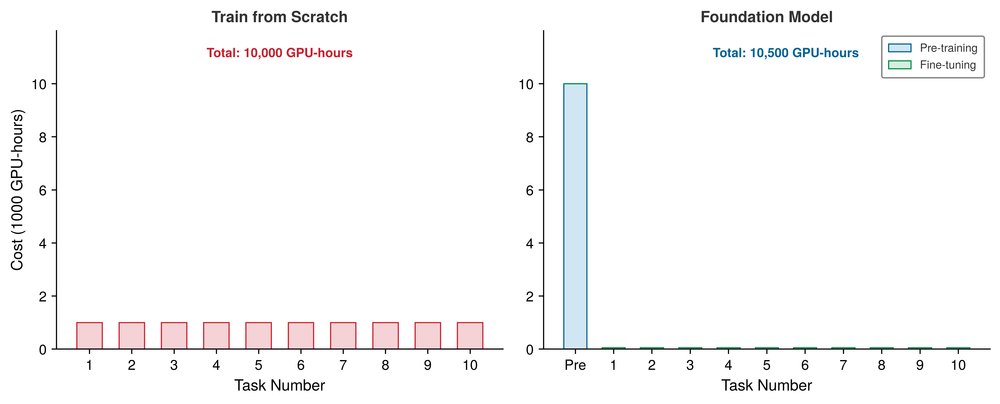</a></p>
</figure>
</div>
</div>
</div>
</div>
<figcaption class="quarto-float-caption-bottom quarto-float-caption quarto-float-fig" id="fig-amortization-comparison-caption-0ceaefa1-69ba-4598-a22c-09a6ac19f8ca">
Figure&nbsp;6: <strong>Khấu hao chi phí trong mô hình nền tảng</strong>: Huấn luyện từ đầu (bên trái) cần 1,000 GPU-hours cho mỗi tác vụ (tổng 10,000 GPU-hours cho 10 tác vụ). Cách tiếp cận mô hình nền tảng (bên phải) trả trước 10,000 GPU-hours để tiền huấn luyện, nhưng đưa chi phí cho mỗi tác vụ tiếp theo xuống còn 50 GPU-hours. Ở 10 tác vụ, tổng chi phí của hai phương pháp là tương đương (10,000 GPU-hours so với 10,500 GPU-hours), nhưng chi phí biên trên mỗi tác vụ giảm 20× lần, và điểm giao nơi mô hình nền tảng bắt đầu có lợi hơn rơi vào khoảng 10.5 tác vụ. Vì vậy, ảnh chụp tại mốc 10 tác vụ vẫn nằm ngay dưới điểm hòa vốn.
</figcaption>
</figure>
</div>
</section>
<section id="sec-data-selection-foundation-model-paradigm-f0f1" class="level3 page-columns page-full">
<h3 class="anchored" data-anchor-id="sec-data-selection-foundation-model-paradigm-f0f1">Cách tiếp cận mô hình nền tảng</h3>
<p>Xét về khấu hao chi phí, học tự giám sát có thể được lợi, dù mỗi phương pháp SSL lại nằm ở một điểm khác nhau trên đường biên chi phí–hiệu quả. Các thí nghiệm SimCLR gốc <span class="citation" data-cites="chen2020simclr">(<a href="#ref-chen2020simclr" role="doc-biblioref">Chen et al. 2020</a>)</span> đạt hiệu quả cao với batch lớn tới 4.096. Trong khi đó, MoCo <span class="citation" data-cites="he2020">(<a href="#ref-he2020" role="doc-biblioref">He et al. 2020</a>)</span> dùng một “từ điển” dựa trên hàng đợi và bộ mã hóa động lượng để tách số lượng mẫu âm khỏi kích thước mini-batch. Các phương pháp masked modeling có những đánh đổi riêng giữa bộ nhớ và số bước. Tiền huấn luyện sinh tuân theo quy luật lũy thừa thực nghiệm theo dữ liệu, tham số và tài nguyên tính toán, nên trở nên hấp dẫn khi chi phí được phân bổ cho nhiều tác vụ hạ nguồn. Các phương pháp này dựa trên các họ kiến trúc được giới thiệu trong <strong><a href="../06_nn_architectures/06_nn_architectures.html#sec-network-architectures">Kiến trúc mạng</a></strong>. Điều quan trọng với lựa chọn dữ liệu là tiền huấn luyện tự giám sát có thể tăng giá trị của lượng dữ liệu có nhãn hạn chế khi biểu diễn học được chuyển giao tốt.</p>
<div class="no-row-height column-margin column-container"><div id="ref-chen2020simclr" class="csl-entry" role="listitem">
Chen, Ting, Simon Kornblith, Mohammad Norouzi, and Geoffrey Hinton. 2020. <span>“A Simple Framework for Contrastive Learning of Visual Representations.”</span> <em>Proceedings of the 37th International Conference on Machine Learning</em>, ICML’20, vol. 119: 1597–607.
</div><div id="ref-he2020" class="csl-entry" role="listitem">
He, Kaiming, Haoqi Fan, Yuxin Wu, Saining Xie, and Ross Girshick. 2020. <span>“Momentum Contrast for Unsupervised Visual Representation Learning.”</span> <em>2020 <span>IEEE</span>/<span>CVF</span> Conference on Computer Vision and Pattern Recognition (CVPR)</em>, 9726–35. https://doi.org/10.1109/cvpr42600.2020.00975.
</div><div id="fn20"><p><sup>20</sup>&nbsp;<strong>Mô hình nền tảng</strong>: Tên gọi này nhấn mạnh rằng các mô hình này là nền chung cho nhiều tác vụ hạ nguồn, nhưng cũng tạo ra một điểm lỗi duy nhất. Các khiếm khuyết trong dữ liệu tiền huấn luyện của mô hình nền tảng (độ chệch (bias), lỗi thực tế, nội dung riêng tư bị ghi nhớ) sẽ lan sang mọi ứng dụng xây dựng dựa trên nó. Từ góc nhìn hệ thống, rủi ro đồng nhất này khiến chất lượng khâu chọn dữ liệu trong tiền huấn luyện có phạm vi ảnh hưởng cực lớn: một lỗi chọn lọc mà trong cách huấn luyện từ đầu (train-from-scratch paradigm) chỉ ảnh hưởng một tác vụ, nay có thể ảnh hưởng đến hàng nghìn triển khai hạ nguồn.</p></div><div id="ref-bommasani2021opportunities" class="csl-entry" role="listitem">
Bommasani, Rishi, Drew A. Hudson, Ehsan Adeli, Russ Altman, Simran Arora, Sydney von Arx, Michael S. Bernstein, et al. 2021. <span>“On the Opportunities and Risks of Foundation Models.”</span> <em>arXiv Preprint arXiv:2108.07258</em>.
</div></div><p>Khi chi phí tiền huấn luyện được tái sử dụng cho nhiều tác vụ, học tự giám sát (SSL) hỗ trợ <strong>khuôn mẫu mô hình nền tảng</strong><a href="#fn20" class="footnote-ref" id="fnref20" role="doc-noteref"><sup>20</sup></a> <span class="citation" data-cites="bommasani2021opportunities">(<a href="#ref-bommasani2021opportunities" role="doc-biblioref">Bommasani et al. 2021</a>)</span>. Các nguyên tắc lựa chọn dữ liệu đã thảo luận trong chương này (như lựa chọn coreset, học theo chương trình, học chủ động) vẫn phù hợp trong khuôn mẫu này. Việc tuyển chọn tập dữ liệu tiền huấn luyện áp dụng các kỹ thuật khử trùng lặp và lọc chất lượng tương tự ở quy mô web, và lựa chọn dữ liệu để tinh chỉnh (fine-tuning) sẽ quyết định những ví dụ có nhãn nào giúp tối đa hóa hiệu suất của tác vụ hạ nguồn.</p>

<div class="no-row-height column-margin column-container"><div class="">
<p><a href="images/svg/vol1_data_selection_margin_002.svg" class="lightbox" data-gallery="quarto-lightbox-gallery-10"></a></p>
<p><em>Một lỗi trong tập dữ liệu tiền huấn luyện sẽ lan sang nhiều tác vụ hạ nguồn.</em></p>
</div></div><p>Học tự giám sát giải quyết nút thắt nhãn bằng cách học từ cấu trúc dữ liệu thay vì dựa vào gán nhãn thủ công, nhưng bản thân nó không thể giải quyết tình trạng khan hiếm dữ liệu. Các lớp hiếm có thể có quá ít ví dụ, edge cases có thể không bao giờ xuất hiện ngoài thực tế, và các ràng buộc về quyền riêng tư có thể ngăn việc thu thập mẫu dữ liệu thực. Giai đoạn thứ ba của pipeline chọn dữ liệu lấp khoảng trống này bằng cách tạo dữ liệu mới theo nhu cầu, thay vì chọn hoặc biên tập dữ liệu sẵn có.</p>
<div id="quiz-question-sec-data-selection-selfsupervised-learning-7518" class="callout callout-quiz-question">
<details class="callout-quiz-question fbx-simplebox fbx-default"><summary><strong>Self-Check: Question</strong></summary><div>
<ol type="1">
<li><p>In the economics of foundation models, an organization invests <span class="math inline">\(C_{\text{pretrain}} = 10{,}000\)</span> GPU-hours in self-supervised pretraining. Each downstream task fine-tuning costs <span class="math inline">\(C_{\text{finetune}} = 50\)</span> GPU-hours. Training each task from scratch would cost <span class="math inline">\(C_{\text{scratch}} = 1{,}000\)</span> GPU-hours. What is the minimum number of downstream tasks <span class="math inline">\(N^*\)</span> required to break even on the pretraining investment?</p>
<ol type="a">
<li><span class="math inline">\(N^* = 5\)</span> downstream tasks</li>
<li><span class="math inline">\(N^* = 8\)</span> downstream tasks</li>
<li><span class="math inline">\(N^* = 11\)</span> downstream tasks (<span class="math inline">\(10{,}000 + 11 \times 50 = 10{,}550 &lt; 11 \times 1{,}000 = 11{,}000\)</span>)</li>
<li><span class="math inline">\(N^* = 50\)</span> downstream tasks</li>
</ol></li>
<li><p>How does the MoCo (Momentum Contrast) framework reduce the hardware and memory constraints of contrastive self-supervised learning compared to naive SimCLR?</p>
<ol type="a">
<li>By replacing convolutional backbones with rule-based lookup tables to avoid backpropagation</li>
<li>By requiring fully supervised class labels to filter out false negative pairs</li>
<li>By using a dynamic queue of negative keys and a slowly updating momentum encoder, decoupling negative dictionary size from mini-batch size</li>
<li>By computing exact pairwise Jaccard similarities on raw byte sequences rather than latent embeddings</li>
</ol></li>
<li><p>What is the systems-level ‘homogenization risk’ (or blast radius) of pretraining a shared foundation model on an uncurated dataset?</p></li>
<li><p>True or False: Because self-supervised pretraining learns general representations from unlabeled data, it completely eliminates the need for data selection or quality filtering during the pretraining stage.</p></li>
<li><p>An unsupervised learning approach where the model solves an auxiliary task constructed directly from the structure of unlabeled data (such as masked token prediction or contrastive instance discrimination) is called a ____ task.</p></li>
</ol>
<p><a href="#quiz-answer-sec-data-selection-selfsupervised-learning-7518" class="question-label" onclick="event.preventDefault();document.getElementById('quiz-answer-sec-data-selection-selfsupervised-learning-7518').scrollIntoView({behavior:'smooth',block:'start'});history.pushState(null,'','#quiz-answer-sec-data-selection-selfsupervised-learning-7518');">See Answers →</a></p>
</div></details>
</div>
</section>
</section>
<section id="sec-data-selection-synthetic-data-generation-415c" class="level2 page-columns page-full">
<h2 class="anchored" data-anchor-id="sec-data-selection-synthetic-data-generation-415c">Tạo dữ liệu tổng hợp</h2>
<p>Một đội robot có thể cần các ví dụ va chạm hiếm gặp, một mô hình y tế có thể cần các ca mà bệnh viện không thể chia sẻ, và một mô hình nhận diện từ khóa (wake-word) có thể cần hàng nghìn nhà bếp ồn ào trước khi sản phẩm ra đời. Kỹ thuật tỉa (pruning) tĩnh loại bỏ dư thừa trước khi huấn luyện. Chọn lọc động tập trung tài nguyên tính toán vào các mẫu nhiều thông tin nhất trong quá trình huấn luyện, và tiền huấn luyện tự giám sát đưa yêu cầu về nhãn xuống 0, định nghĩa lại cái gì được xem là dữ liệu huấn luyện thay vì thêm một giai đoạn mới. Giai đoạn thứ ba, cũng là cuối cùng, của pipeline chọn dữ liệu — tạo dữ liệu tổng hợp — đi theo hướng ngược lại: thay vì bớt đi hay chọn từ dữ liệu sẵn có, nó tạo ra các mẫu mới giá trị cao khi dữ liệu thực khan hiếm, đắt đỏ, hoặc thiếu đa dạng. Chiến lược này chuyển từ <em>curation</em> sang <em>creation</em>.</p>
<section id="sec-data-selection-data-augmentation-transformationbased-synthesis-3aa7" class="level3 page-columns page-full">
<h3 class="anchored" data-anchor-id="sec-data-selection-data-augmentation-transformationbased-synthesis-3aa7">Tăng cường dữ liệu: Tổng hợp dựa trên biến đổi</h3>
<p>Tăng cường dữ liệu là hình thức tạo dữ liệu tổng hợp chi phí thấp nhất: nó mở rộng một tập dữ liệu bằng cách áp dụng các phép biến đổi lên các mẫu hiện có. Vì nhiều phép biến đổi giữ nguyên ý nghĩa của nhãn trong khi tạo đầu vào mới, nên việc tăng cường dữ liệu hiệu quả nhân lên độ đa dạng của tập huấn luyện mà không cần thu thập thêm dữ liệu.</p>
<p>Đối với dữ liệu hình ảnh, việc tăng cường dữ liệu cần phù hợp với các tính bất biến mà mô hình triển khai phải học <span class="citation" data-cites="shorten2019">(<a href="#ref-shorten2019" role="doc-biblioref">Shorten and Khoshgoftaar 2019</a>)</span>. Các phép biến đổi hình học như xoay, lật, cắt và thay đổi tỷ lệ tạo ra biến thiên không gian, giúp mô hình vững vàng hơn trước các thay đổi về góc nhìn. Các phép biến đổi quang học điều chỉnh độ sáng, độ tương phản, độ bão hòa và sắc độ để mô phỏng các điều kiện ánh sáng và đặc điểm máy ảnh khác nhau. Các kỹ thuật tiên tiến hơn như Cutout<a href="#fn21" class="footnote-ref" id="fnref21" role="doc-noteref"><sup>21</sup></a> (áp dụng các mặt nạ hình chữ nhật ngẫu nhiên), MixUp <span class="citation" data-cites="zhang2018mixup">(<a href="#ref-zhang2018mixup" role="doc-biblioref">Zhang et al. 2018</a>)</span> (trộn hai hình ảnh và nhãn của chúng), và CutMix<a href="#fn22" class="footnote-ref" id="fnref22" role="doc-noteref"><sup>22</sup></a> (dán các mảnh giữa các ảnh) đẩy việc tăng cường đi xa hơn bằng cách tạo ra các ví dụ huấn luyện hoàn toàn tổng hợp, giúp điều hòa quá trình học của mô hình.</p>
<div class="no-row-height column-margin column-container"><div id="ref-shorten2019" class="csl-entry" role="listitem">
Shorten, Connor, and Taghi M. Khoshgoftaar. 2019. <span>“A Survey on Image Data Augmentation for Deep Learning.”</span> <em>Journal of Big Data</em> 6 (1): 1–48. https://doi.org/10.1186/s40537-019-0197-0.
</div><div id="fn21"><p><sup>21</sup>&nbsp;<strong>Cutout</strong>: Ngẫu nhiên che các vùng hình vuông trên ảnh đầu vào trong quá trình huấn luyện, buộc mô hình nhận diện đối tượng từ thông tin một phần thay vì dựa vào một vùng phân biệt duy nhất <span class="citation" data-cites="devries2017cutout">(<a href="#ref-devries2017cutout" role="doc-biblioref">DeVries and Taylor 2017</a>)</span>. Khác với dropout (vốn đặt các <em>neuron</em> về 0 trong không gian đặc trưng), Cutout hoạt động trong không gian đầu vào. Các thử nghiệm Cutout ban đầu cho thấy mức tăng 0.3–2.0 điểm phần trăm trên các bộ dữ liệu CIFAR-10/100 và SVHN với chi phí tính toán không đáng kể, biến đây thành một kỹ thuật tăng cường có ICR cao khi tính bất biến kiểu bị che khuất phù hợp với bài toán: cung cấp nhiều thông tin hơn trên mỗi mẫu với chi phí gần như bằng 0 cho pipeline.</p><div id="ref-devries2017cutout" class="csl-entry" role="listitem">
DeVries, Terrance, and Graham W. Taylor. 2017. <span>“Improved Regularization of Convolutional Neural Networks with Cutout.”</span> <em>arXiv Preprint arXiv:1708.04552</em>.
</div></div><div id="ref-zhang2018mixup" class="csl-entry" role="listitem">
Zhang, Hongyi, Moustapha Cisse, Yann N. Dauphin, and David Lopez-Paz. 2018. <em><span class="nocase">mixup</span>: Beyond Empirical Risk Minimization</em>. OpenReview.net.
</div><div id="fn22"><p><sup>22</sup>&nbsp;<strong>CutMix</strong>: Thay thế vùng bị đặt về 0 trong Cutout bằng một miếng từ một ảnh huấn luyện khác, đồng thời trộn nhãn theo tỷ lệ diện tích của miếng đó (ví dụ, nếu 30 phần trăm ảnh A được thay bằng ảnh B thì nhãn sẽ là 70/30) <span class="citation" data-cites="yun2019cutmix">(<a href="#ref-yun2019cutmix" role="doc-biblioref">Yun et al. 2019</a>)</span>. Cách làm này khắc phục điểm yếu của Cutout: các vùng đặt về 0 làm lãng phí thông tin pixel vốn có thể chứa tín hiệu học. Bài báo về CutMix báo cáo cải thiện top-1 trên ImageNet thêm 2.28 điểm phần trăm với ResNet-50 và 1.70 điểm phần trăm với ResNet-101, đồng thời cải thiện cả khả năng định vị. Phương pháp này mang lại regular hóa mạnh hơn so với chỉ dùng riêng lẻ Cutout hoặc MixUp, trong khi gần như không làm tăng chi phí cho pipeline dữ liệu.</p><div id="ref-yun2019cutmix" class="csl-entry" role="listitem">
Yun, Sangdoo, Dongyoon Han, Seong Joon Oh, Sanghyuk Chun, Junsuk Choe, and Youngjoon Yoo. 2019. <span>“<span>CutMix</span>: Regularization Strategy to Train Strong Classifiers with Localizable Features.”</span> <em>2019 <span>IEEE</span>/<span>CVF</span> International Conference on Computer Vision (ICCV)</em>, 6023–32. https://doi.org/10.1109/ICCV.2019.00612.
</div></div><div id="fn23"><p><sup>23</sup>&nbsp;<strong>Dịch ngược</strong>: Trong phương pháp được mô tả bởi <span class="citation" data-cites="sennrich2016backtranslation">Sennrich et al. (<a href="#ref-sennrich2016backtranslation" role="doc-biblioref">2016</a>)</span>, văn bản đơn ngữ của ngôn ngữ đích được dịch sang ngôn ngữ nguồn, và nguồn tổng hợp này được ghép với đích gốc (không đổi) để huấn luyện dịch máy. Sự đánh đổi của hệ thống là độ trễ, vì mỗi nguồn tổng hợp đều cần suy luận mô hình dịch. Các pipeline có thể tiền tính các ví dụ này ngoại tuyến, thay vì tạo trực tiếp trong bộ nạp dữ liệu.</p><div id="ref-sennrich2016backtranslation" class="csl-entry" role="listitem">
Sennrich, Rico, Barry Haddow, and Alexandra Birch. 2016. <span>“Improving Neural Machine Translation Models with Monolingual Data.”</span> <em>Proceedings of the 54th Annual Meeting of the Association for Computational Linguistics (Volume 1: Long Papers)</em>, 86–96. https://doi.org/10.18653/v1/P16-1009.
</div></div></div><p>Tăng cường văn bản có những thách thức khác vì ngôn ngữ là rời rạc chứ không liên tục. Dịch ngược<a href="#fn23" class="footnote-ref" id="fnref23" role="doc-noteref"><sup>23</sup></a> là một giải pháp cho dịch máy: dịch văn bản đơn ngữ ở ngôn ngữ đích sang ngôn ngữ nguồn rồi ghép cặp nguồn tổng hợp này với đích gốc. Các cách đơn giản hơn gồm thay thế từ đồng nghĩa và chèn hoặc xóa ngẫu nhiên, nhưng các biến đổi này có thể làm đổi nghĩa nên phải được kiểm chứng theo từng tác vụ.</p>
<p>Thay vì tự thiết kế các chính sách tăng cường dữ liệu, AutoAugment<a href="#fn24" class="footnote-ref" id="fnref24" role="doc-noteref"><sup>24</sup></a> dùng học tăng cường để tìm ra chiến lược tăng cường phù hợp với từng tập dữ liệu, còn RandAugment<a href="#fn25" class="footnote-ref" id="fnref25" role="doc-noteref"><sup>25</sup></a> đơn giản hóa bằng cách lấy mẫu từ một tập biến đổi cố định. Sự đánh đổi giữa chi phí tính toán và chất lượng phụ thuộc vào cả kiến trúc mục tiêu lẫn các bất biến cần có khi triển khai.</p>
<div class="no-row-height column-margin column-container"><div id="fn24"><p><sup>24</sup>&nbsp;<strong>AutoAugment</strong>: Xem việc thiết kế chính sách tăng cường dữ liệu như một bài toán tìm kiếm trong học tăng cường: một bộ điều khiển chọn các phép toán (xoay, tịnh tiến, biến dạng xiên, cân bằng), độ lớn của chúng và xác suất áp dụng để tối đa hóa độ chính xác trên tập xác thực <span class="citation" data-cites="cubuk2019">(<a href="#ref-cubuk2019" role="doc-biblioref">Cubuk et al. 2019</a>)</span>. Cuộc tìm kiếm ban đầu trên ImageNet tốn khoảng 15.000 giờ GPU, từ đó thôi thúc các phương pháp sau này thu hẹp không gian tìm kiếm.</p><div id="ref-cubuk2019" class="csl-entry" role="listitem">
Cubuk, Ekin D., Barret Zoph, Dandelion Mané, Vijay Vasudevan, and Quoc V. Le. 2019. <span>“AutoAugment: Learning Augmentation Strategies from Data.”</span> <em>2019 <span>IEEE</span>/<span>CVF</span> Conference on Computer Vision and Pattern Recognition (CVPR)</em>, 113–23. https://doi.org/10.1109/cvpr.2019.00020.
</div></div><div id="fn25"><p><sup>25</sup>&nbsp;<strong>RandAugment</strong>: Thu gọn quá trình tìm kiếm chính sách của AutoAugment thành hai siêu tham số: số phép biến đổi <span class="math inline">\(N\)</span> và độ lớn dùng chung <span class="math inline">\(M\)</span> <span class="citation" data-cites="cubuk2020">(<a href="#ref-cubuk2020" role="doc-biblioref">Cubuk et al. 2020</a>)</span>. Với không gian tìm kiếm nhỏ này, RandAugment đạt hiệu suất tương đương hoặc vượt AutoAugment trên các benchmark đã công bố với chi phí tìm kiếm thấp hơn nhiều, nên thực tế hơn khi không thể biện minh cho 15.000 giờ GPU để tìm kiếm chính sách.</p><div id="ref-cubuk2020" class="csl-entry" role="listitem">
Cubuk, Ekin D., Barret Zoph, Jonathon Shlens, and Quoc V. Le. 2020. <span>“Randaugment: Practical Automated Data Augmentation with a Reduced Search Space.”</span> <em>2020 <span>IEEE</span>/<span>CVF</span> Conference on Computer Vision and Pattern Recognition Workshops (<span>CVPRW</span>)</em>, 3008–17. https://doi.org/10.1109/cvprw50498.2020.00359.
</div></div></div><div id="lhs-data-selection-mobilenet-aggressive-augmentation" class="callout callout-lighthouse" title="MobileNetV2 và tăng cường dữ liệu mạnh">
<p></p><details class="callout-lighthouse fbx-simplebox fbx-default" open=""><summary><strong>Lighthouse 1.2: MobileNetV2 và tăng cường dữ liệu mạnh</strong></summary><div>Mô hình MobileNetV2 lighthouse của chúng ta trong <strong><a href="../06_nn_architectures/06_nn_architectures.html#sec-network-architectures-lighthouse-roster-model-biographies-a763">Danh sách các mô hình tiêu biểu: Tiểu sử mô hình</a></strong> cho thấy tăng cường dữ liệu có thể bổ trợ tốt cho một kiến trúc bị giới hạn tài nguyên. Các phép tích chập phân tách theo chiều sâu (depthwise separable convolution) giúp giảm đáng kể chi phí tính toán và số tham số so với các tích chập tiêu chuẩn tương đương, trong khi tăng cường dữ liệu có thể cải thiện khả năng tổng quát hóa khi tập dữ liệu huấn luyện còn hạn chế.<p></p>
<p>Mức độ tăng cường phù hợp phụ thuộc vào tập dữ liệu, mô hình và các bất biến cần thiết khi triển khai. Các kỹ thuật như cắt ảnh (cropping) và RandAugment có thể tăng độ đa dạng khi huấn luyện mà không làm tăng năng lực mô hình ở thời gian suy luận, nhưng cần đo lường độ mạnh của chúng và độ chính xác đạt được cho khối lượng công việc (workload) mục tiêu.</p>
</div></details>
</div>
</section>
<section id="sec-data-selection-generative-synthesis-creating-new-samples-a43d" class="level3 page-columns page-full">
<h3 class="anchored" data-anchor-id="sec-data-selection-generative-synthesis-creating-new-samples-a43d">Tổng hợp sinh tạo: Tạo ra các mẫu mới</h3>
<p>Tăng cường dữ liệu chỉ biến đổi các mẫu có sẵn; còn tạo dữ liệu tổng hợp đi xa hơn bằng cách tạo ví dụ mới bằng các mô hình sinh tạo hoặc trình mô phỏng. Cách làm này hữu ích trong ba tình huống phổ biến:</p>
<ul>
<li><strong>Dữ liệu nhạy cảm về quyền riêng tư</strong>: Các ví dụ tổng hợp có thể giảm tiếp xúc trực tiếp với dữ liệu thực, nhưng vẫn cần kiểm tra quyền riêng tư để tránh hiện tượng ghi nhớ hoặc rò rỉ thông tin.</li>
<li><strong>Các trường hợp hiếm gặp (edge cases)</strong>: Các ví dụ tổng hợp có thể bao quát các tình huống lỗi, như các kịch bản lái xe tự hành, vốn cần được kiểm tra nhưng hiếm khi xuất hiện tự nhiên.</li>
<li><strong>Thu thập tốn kém</strong>: Các ví dụ tổng hợp có thể bổ sung cho các lĩnh vực như robot học hoặc thí nghiệm khoa học, nơi mỗi mẫu dữ liệu thực đòi hỏi tài nguyên vật lý.</li>
</ul>
<p>Sơ đồ phân phối trong <a href="#fig-domain-gap" class="quarto-xref">figure&nbsp;7</a> cho thấy rủi ro cốt lõi của chiến lược này: các ví dụ tổng hợp có thể rất nhiều nhưng vẫn không khớp với dữ liệu khi triển khai.</p>
<div id="fig-domain-gap" class="quarto-float quarto-figure quarto-figure-center anchored" alt="Biểu đồ mật độ trên không gian đặc trưng cho thấy một phân phối tổng hợp màu xanh chồng lấn tập trung gần giá trị 0 và một phân phối thực màu cam tập trung gần giá trị 3. Một đường thẳng đứng màu đỏ nét đứt gần 1.5 được gán nhãn 'Đường biên tổng hợp', một đường thẳng đứng màu xanh lá cây nét chấm xuất hiện tại giá trị 3, và một mũi tên hai đầu màu tím, được gán nhãn 'Khoảng cách Miền (Domain Gap)', nối hai tâm phân phối này." data-fig-env="figure" data-fig-pos="htb">
<figure class="quarto-float quarto-float-fig figure">
<div aria-describedby="fig-domain-gap-caption-0ceaefa1-69ba-4598-a22c-09a6ac19f8ca">
<a href="2f4a40bc405a0e2eed7ed0ca54359d3ef6d405a5.svg" class="lightbox" data-gallery="quarto-lightbox-gallery-11" title="Figure&nbsp;7: Vấn đề Khoảng cách Miền (Domain Gap): Dữ liệu tổng hợp (màu xanh) và dữ liệu thực (màu cam) có các phân phối đặc trưng bị dịch chuyển. Đường biên tổng hợp màu đỏ nét đứt và đường biên dữ liệu thực màu xanh lá cây nét chấm minh họa rằng một đường biên được học từ phân phối này có thể không phù hợp với phân phối kia.">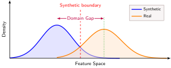</a>
</div>
<figcaption class="quarto-float-caption-bottom quarto-float-caption quarto-float-fig" id="fig-domain-gap-caption-0ceaefa1-69ba-4598-a22c-09a6ac19f8ca">
Figure&nbsp;7: <strong>Vấn đề Khoảng cách Miền (Domain Gap)</strong>: Dữ liệu tổng hợp (màu xanh) và dữ liệu thực (màu cam) có các phân phối đặc trưng bị dịch chuyển. Đường biên tổng hợp màu đỏ nét đứt và đường biên dữ liệu thực màu xanh lá cây nét chấm minh họa rằng một đường biên được học từ phân phối này có thể không phù hợp với phân phối kia.
</figcaption>
</figure>
</div>
<p>Việc lựa chọn giữa các phương pháp tạo sinh là một đánh đổi giữa chi phí và độ chân thực. Mạng đối kháng tạo sinh (GANs) huấn luyện một bộ tạo sinh đối kháng với một bộ phân biệt trong thiết lập huấn luyện đối kháng, tạo ra hình ảnh chân thực thông qua sự cạnh tranh; ví dụ, StyleGAN tạo ra các khuôn mặt chân thực như ảnh, giúp mở rộng các tập dữ liệu nhận dạng khuôn mặt. Các mô hình khuếch tán sử dụng khử nhiễu lặp để tạo ra hình ảnh chất lượng cao; các hệ thống như Stable Diffusion<a href="#fn26" class="footnote-ref" id="fnref26" role="doc-noteref"><sup>26</sup></a> hỗ trợ tạo các ví dụ huấn luyện theo mục tiêu từ mô tả ngôn ngữ tự nhiên thông qua tổng hợp văn bản thành hình ảnh. Cuối cùng, các công cụ mô phỏng như CARLA cho xe tự lái hoặc Unity và Unreal cho robot cung cấp kết xuất dựa trên vật lý, có thể tạo ra số lượng lớn các kịch bản có nhãn với trạng thái trình mô phỏng đã biết, nên đặc biệt hữu ích cho các ứng dụng an toàn quan trọng, nơi cần bao quát các trường hợp edge.</p>
<div class="no-row-height column-margin column-container"><div id="fn26"><p><sup>26</sup>&nbsp;<strong>Stable Diffusion</strong>: Thực hiện khử nhiễu lặp trong không gian tiềm ẩn đã nén, cho phép tạo các ví dụ chuyển văn bản thành hình ảnh theo mục tiêu <span class="citation" data-cites="rombach2022">(<a href="#ref-rombach2022" role="doc-biblioref">Rombach et al. 2022</a>)</span>. Vì quá trình tạo sinh lặp của nó tốn nhiều tài nguyên tính toán hơn đáng kể so với các phép biến đổi hình học, nên phù hợp với những trường hợp mà tính mới lạ quan trọng hơn thông lượng trên mỗi mẫu.</p><div id="ref-rombach2022" class="csl-entry" role="listitem">
Rombach, Robin, Andreas Blattmann, Dominik Lorenz, Patrick Esser, and Bjorn Ommer. 2022. <span>“High-Resolution Image Synthesis with Latent Diffusion Models.”</span> <em>2022 <span>IEEE</span>/<span>CVF</span> Conference on Computer Vision and Pattern Recognition (CVPR)</em>, 10674–85. https://doi.org/10.1109/cvpr52688.2022.01042.
</div></div></div></section>
<section id="sec-data-selection-bridging-domain-gap-100b" class="level3 page-columns page-full">
<h3 class="anchored" data-anchor-id="sec-data-selection-bridging-domain-gap-100b">Thu hẹp khoảng cách miền</h3>
<p>Việc dựa vào tạo dữ liệu tổng hợp tiềm ẩn những rủi ro nghiêm trọng về sự khớp phân phối.<a href="#fn27" class="footnote-ref" id="fnref27" role="doc-noteref"><sup>27</sup></a> Hãy xem xét ánh xạ trong không gian đặc trưng tại <a href="#fig-domain-gap" class="quarto-xref">figure&nbsp;7</a>, và lưu ý cách các đường biên quyết định được huấn luyện trên dữ liệu tổng hợp bị dịch chuyển ra xa các cụm trong triển khai thực tế.</p>
<div class="no-row-height column-margin column-container"><div id="fn27"><p><sup>27</sup>&nbsp;<strong>Khoảng cách miền</strong>: Là sự khác biệt thống kê giữa các phân phối dữ liệu tổng hợp và dữ liệu thực, có thể đo lường bằng các chỉ số như độ lệch trung bình tối đa (MMD) hoặc Khoảng cách Frechet Inception (FID). Trong các hệ thống ML, khoảng cách này biểu hiện thành độ lệch huấn luyện-phục vụ (training-serving skew): một mô hình được huấn luyện bằng trình mô phỏng có thể kiểm chứng tốt trên dữ liệu tổng hợp, nhưng lại âm thầm thất bại khi gặp dữ liệu triển khai thực tế.</p></div><div id="fn28"><p><sup>28</sup>&nbsp;<strong>Ngẫu nhiên hóa miền (Domain randomization)</strong>: Tạo ra dữ liệu tổng hợp đa dạng có chủ đích bằng cách ngẫu nhiên hóa kết cấu, màu sắc, ánh sáng và các thuộc tính vật lý. Mục tiêu không phải là photorealism; chỉ cần đủ mức đa dạng để tăng độ bao phủ các điều kiện triển khai, chuyển nút thắt cổ chai chi phí từ độ trung thực kết xuất sang độ bao phủ.</p></div></div><p>Hai chiến lược bổ sung được dùng để giải quyết sự không khớp phân phối này. Ngẫu nhiên hóa miền (Domain randomization)<a href="#fn28" class="footnote-ref" id="fnref28" role="doc-noteref"><sup>28</sup></a> là một cách tiếp cận mạnh: thay vì cố gắng khớp chính xác với thế giới thực, nó huấn luyện trên dữ liệu tổng hợp rất đa dạng bằng cách ngẫu nhiên hóa ánh sáng, kết cấu, nền và các tham số camera trong quá trình tạo.</p>
<p>Mục tiêu là để các điều kiện triển khai rơi vào phạm vi biến thiên đã thấy trong quá trình huấn luyện, nhưng chỉ ngẫu nhiên hóa thôi thì không bao giờ đảm bảo được độ bao phủ. Phương pháp này có thể hiệu quả trong robot học và xe tự hành khi trình mô phỏng bao quát các yếu tố vật lý và thị giác liên quan, và kết quả được xác thực trên dữ liệu thực.</p>
<p>Thích nghi miền đi theo hướng ngược lại: căn chỉnh rõ ràng các phân phối dữ liệu tổng hợp và thực. Các phương pháp căn chỉnh đặc trưng vừa huấn luyện trên dữ liệu tổng hợp, vừa giảm thiểu khoảng cách giữa các phân phối đặc trưng tổng hợp và thực, thường dùng huấn luyện đối kháng để học các biểu diễn bất biến theo miền. Tinh chỉnh (fine-tuning) là con đường đơn giản hơn: huấn luyện trước trên lượng dữ liệu tổng hợp dồi dào để học các đặc trưng tổng quát, rồi tinh chỉnh (fine-tuning) trên một tập dữ liệu thực nhỏ để thích nghi với điều kiện triển khai. Tự huấn luyện kết hợp các ý tưởng này bằng cách dùng một mô hình đã huấn luyện bằng dữ liệu tổng hợp để gán nhãn giả cho dữ liệu thực chưa có nhãn, rồi huấn luyện lại trên tập dữ liệu gộp đã có nhãn.</p>
<p>Trong thực tế, trộn dữ liệu tổng hợp với dữ liệu thực giúp có một điểm neo từ dữ liệu thực, đồng thời vẫn giữ được phần nào độ bao phủ của dữ liệu tổng hợp. Tuy nhiên, tỷ lệ trộn tốt nhất sẽ phụ thuộc vào khối lượng công việc (workload). <a href="#tbl-synthetic-mix" class="quarto-xref">Table&nbsp;9</a> tóm tắt các đánh đổi giữa những tỷ lệ trộn khác nhau.</p>
<div id="tbl-synthetic-mix" class="striped hover quarto-float quarto-figure quarto-figure-center anchored">
<figure class="quarto-float quarto-float-tbl figure">
<figcaption class="quarto-float-caption-top quarto-float-caption quarto-float-tbl" id="tbl-synthetic-mix-caption-0ceaefa1-69ba-4598-a22c-09a6ac19f8ca">
Table&nbsp;9: <strong>Tỷ lệ trộn dữ liệu tổng hợp với dữ liệu thực</strong>: Dữ liệu tổng hợp thuần túy có thể bị lệch phân phối, còn dữ liệu thực thuần túy thì rất đắt. Tỷ lệ tối ưu sẽ thay đổi tùy theo lĩnh vực, độ chân thực của bộ mô phỏng, họ mô hình và quy trình kiểm định. Vì vậy, hãy xem bảng này như một khung kịch bản tham khảo, chứ không phải một công thức áp dụng cho mọi trường hợp.
</figcaption>
<div aria-describedby="tbl-synthetic-mix-caption-0ceaefa1-69ba-4598-a22c-09a6ac19f8ca">
<table class="table-striped table-hover caption-top table">
<colgroup>
<col style="width: 36%">
<col style="width: 63%">
</colgroup>
<thead>
<tr class="header">
<th style="text-align: left;"><strong>Tỷ lệ tổng hợp</strong></th>
<th style="text-align: left;"><strong>Kết quả đại diện</strong></th>
</tr>
</thead>
<tbody>
<tr class="odd">
<td style="text-align: left;"><strong>100% tổng hợp</strong></td>
<td style="text-align: left;">Không có điểm neo dữ liệu thực; xác thực khoảng cách miền</td>
</tr>
<tr class="even">
<td style="text-align: left;"><strong>80% tổng hợp + 20% thực</strong></td>
<td style="text-align: left;">Nhu cầu dữ liệu thực thấp hơn; xác thực trên dữ liệu triển khai</td>
</tr>
<tr class="odd">
<td style="text-align: left;"><strong>50% tổng hợp + 50% thực</strong></td>
<td style="text-align: left;">Nhiều điểm neo dữ liệu thực hơn; chi phí thu thập cao hơn</td>
</tr>
<tr class="even">
<td style="text-align: left;"><strong>100% thực</strong></td>
<td style="text-align: left;">Không có khoảng cách từ tổng hợp đến thực; chi phí thu thập cao nhất</td>
</tr>
</tbody>
</table>
</div>
</figure>
</div>
<div id="exmp-data-selection-kws-data-selection" class="callout callout-example" title="Lựa chọn dữ liệu KWS">
<p></p><details class="callout-example fbx-simplebox fbx-default" open=""><summary><strong>Example 1.4: Lựa chọn dữ liệu KWS</strong></summary><div><strong>Kịch bản</strong>: Một hệ thống phát hiện từ khóa (KWS) nhúng được thiết kế để triển khai trên vi điều khiển SRAM 256 KB, yêu cầu 10,000+ mẫu âm thanh.<p></p>
<p><strong>Chẩn đoán</strong>: Việc ghi âm thủ công 10,000 phát ngôn thực từ nhiều người nói và trong các môi trường âm thanh đa dạng sẽ tốn $20K–50K. Để mở rộng quy mô tập dữ liệu từ 500 mẫu ban đầu, ta có thể thiết lập một pipeline 5 giai đoạn: bản ghi ban đầu <span class="math inline">\(\to\)</span> tăng cường dữ liệu <span class="math inline">\(\to\)</span> thêm nhiễu <span class="math inline">\(\to\)</span> khai thác âm tính khó <span class="math inline">\(\to\)</span> mô phỏng TTS.</p>
<p><strong>Bài học hệ thống</strong>: Các chiến lược dữ liệu theo lớp có thể giúp giảm chi phí thu thập cho các hệ thống ML triển khai trên edge với tài nguyên hạn chế. Trong kịch bản này, tăng cường dữ liệu và thêm nhiễu đã giảm chi phí thu thập trực tiếp xuống còn 5 percent so với ước tính ghi âm đầy đủ; tuy vậy, độ chính xác mục tiêu và độ bao phủ âm học vẫn cần được kiểm định.</p>
</div></details>
</div>
<p>Kịch bản phát hiện từ khóa cho thấy tăng cường dữ liệu, thêm nhiễu và mô phỏng có thể mở rộng một tập hạt giống nhỏ, nhưng cùng chiến lược này sẽ rủi ro hơn khi mẫu đến từ các mô hình sinh đã được huấn luyện. Trong huấn luyện đệ quy, <em>suy sụp mô hình</em><a href="#fn29" class="footnote-ref" id="fnref29" role="doc-noteref"><sup>29</sup></a> có thể khuếch đại lỗi và làm giảm đa dạng qua các thế hệ. Vì vậy, dữ liệu tổng hợp cần có nguồn gốc rõ ràng, được kiểm soát tỷ lệ pha trộn và phải được kiểm chứng đối chiếu với dữ liệu triển khai thực tế, thay vì mặc định rằng cứ tạo thêm mẫu là tốt.</p>
<div class="no-row-height column-margin column-container"><div id="fn29"><p><sup>29</sup>&nbsp;<strong>Suy sụp mô hình</strong>: Được <span class="citation" data-cites="shumailov2024">Shumailov et al. (<a href="#ref-shumailov2024" role="doc-biblioref">2024</a>)</span> phân tích chính thức, hiện tượng này xảy ra vì các mô hình sinh có xu hướng thể hiện thiếu các phân phối đuôi — tức các mẫu hiếm nhưng quan trọng, ít khi xuất hiện trong dữ liệu huấn luyện. Khi thế hệ <span class="math inline">\(n+1\)</span> được huấn luyện trên đầu ra của thế hệ <span class="math inline">\(n\)</span>, mỗi thế hệ kế tiếp lại nén các đuôi mạnh hơn, khiến dữ liệu ngày càng đồng nhất. Sự suy giảm có thể diễn ra rất nhanh trong thiết lập huấn luyện đệ quy, nên phần Sai lầm của chương này cảnh báo không nên huấn luyện hoàn toàn bằng dữ liệu tổng hợp.</p><div id="ref-shumailov2024" class="csl-entry" role="listitem">
Shumailov, Ilia, Zakhar Shumaylov, Yiren Zhao, Nicolas Papernot, Ross Anderson, and Yarin Gal. 2024. <span>“<span>AI</span> Models Collapse When Trained on Recursively Generated Data.”</span> <em>Nature</em> 631 (8022): 755–59. https://doi.org/10.1038/s41586-024-07566-y.
</div></div></div></section>
<section id="sec-data-selection-knowledge-distillation-compressing-information-ce68" class="level3 page-columns page-full">
<h3 class="anchored" data-anchor-id="sec-data-selection-knowledge-distillation-compressing-information-ce68">Chưng cất tri thức: Nén thông tin</h3>
<p>Trong khi tăng cường dữ liệu (<a href="#sec-data-selection-data-augmentation-transformationbased-synthesis-3aa7" class="quarto-xref">section&nbsp;1.5.1</a>) và tổng hợp bằng mô hình sinh (<a href="#sec-data-selection-generative-synthesis-creating-new-samples-a43d" class="quarto-xref">section&nbsp;1.5.2</a>) tạo ra các mẫu đầu vào mới, thì một dạng tổng hợp khác tạo ra các mục tiêu do mô hình thầy tạo. <strong>Chưng cất tri thức</strong><a href="#fn30" class="footnote-ref" id="fnref30" role="doc-noteref"><sup>30</sup></a> <span class="citation" data-cites="hinton2015distilling gou2021">(<a href="#ref-hinton2015distilling" role="doc-biblioref">Hinton et al. 2015</a>; <a href="#ref-gou2021" role="doc-biblioref">Gou et al. 2021</a>)</span> huấn luyện một mô hình học trò bằng đầu ra của mô hình thầy, cùng với hoặc thay cho các nhãn cứng. Các mục tiêu mềm có thể bộc lộ xác suất tương đối giữa các lớp mà nhãn one-hot bỏ qua, dù giá trị của chúng còn phụ thuộc vào chất lượng mô hình thầy, nhiệt độ và mức độ phù hợp với nhiệm vụ.</p>
<div class="no-row-height column-margin column-container"><div id="fn30"><p><sup>30</sup>&nbsp;<strong>Chưng cất tri thức</strong>: Các xác suất mềm từ mô hình thầy có thể hé lộ những mối quan hệ giữa các lớp mà nhãn one-hot bỏ qua. Tham số nhiệt độ kiểm soát mức độ “mềm” của các xác suất này; cần được tinh chỉnh vì làm mịn quá mức có thể xóa đi những khác biệt hữu ích. Chưng cất tri thức thêm một lượt suy luận của mô hình thầy và không đảm bảo chỉ số ICR cao hơn, trừ khi tín hiệu được truyền giúp cải thiện mô hình học trò đủ để bù đắp chi phí đó.</p></div><div id="ref-hinton2015distilling" class="csl-entry" role="listitem">
Hinton, Geoffrey, Oriol Vinyals, and Jeff Dean. 2015. <span>“Distilling the Knowledge in a Neural Network.”</span> <em>arXiv Preprint</em>.
</div><div id="ref-gou2021" class="csl-entry" role="listitem">
Gou, Jianping, Baosheng Yu, Stephen J. Maybank, and Dacheng Tao. 2021. <span>“Knowledge Distillation: A Survey.”</span> <em>International Journal of Computer Vision</em> 129 (6): 1789–819. https://doi.org/10.1007/s11263-021-01453-z.
</div></div><p>Một dự đoán của mô hình thầy, chẳng hạn [0.7, 0.2, 0.1], cho thấy các ưu tiên tương đối mà một nhãn one-hot [1, 0, 0] bỏ qua. Mô hình học trò có thể hưởng lợi từ tín hiệu này khi mô hình thầy chính xác và phù hợp với phân phối mục tiêu. Ở quy mô lớn, các mục tiêu do mô hình thầy tạo ra sẽ thêm một lượt suy luận và đòi hỏi kiểm soát chất lượng; mọi lợi thế về chi phí hoặc chất lượng của mô hình học trò đều phải được cân đối với chi phí phát sinh để tạo ra các mục tiêu đó.</p>
<p>Tổng hợp lại, tăng cường dữ liệu, tạo sinh dữ liệu và chưng cất tri thức hoàn thành giai đoạn thứ ba của pipeline lựa chọn dữ liệu. Trong khi tỉa (pruning) tĩnh loại bỏ dữ liệu dư thừa và lựa chọn động tập trung tài nguyên tính toán vào các mẫu có giá trị cao, thì tạo sinh dữ liệu lấp đầy khoảng trống bằng cách tạo ra những mẫu chưa từng tồn tại. Để chọn đúng sự kết hợp kỹ thuật từ ba giai đoạn pipeline này, chúng ta cần một framework quyết định có cấu trúc.</p>
<div id="quiz-question-sec-data-selection-synthetic-data-generation-415c" class="callout callout-quiz-question">
<details class="callout-quiz-question fbx-simplebox fbx-default"><summary><strong>Self-Check: Question</strong></summary><div>
<ol type="1">
<li><p>What causes the phenomenon of ‘model collapse’ (or the autophagous loop) when generative models are trained recursively on synthetic data generated by earlier model iterations?</p>
<ol type="a">
<li>GPU memory fragmentation caused by variable-length synthetic sequences during distributed training</li>
<li>Overfitting to floating-point rounding errors during fp16 mixed-precision matrix multiplication</li>
<li>A failure of the I/O storage subsystem to deliver synthetic batches at line rate</li>
<li>Systematic underrepresentation and progressive pruning of the tail distributions of the true data distribution across successive generations</li>
</ol></li>
<li><p>In knowledge distillation, what is the primary role of the temperature parameter <span class="math inline">\(T\)</span> when computing soft targets from a teacher model’s logits <span class="math inline">\(z_i\)</span> (<span class="math inline">\(p_i = \frac{\exp(z_i / T)}{\sum_j \exp(z_j / T)}\)</span>)?</p>
<ol type="a">
<li>To soften the output probability distribution, exposing the relative probability structure (‘dark knowledge’) over non-target classes to the student</li>
<li>To clamp gradients to prevent numerical overflow in the student’s backward pass</li>
<li>To dynamically increase learning rate when the student loss plateaus</li>
<li>To randomly drop connections in the student network like dropout</li>
</ol></li>
<li><p>Why is training exclusively on <span class="math inline">\(100\%\)</span> synthetic data from a simulation engine often suboptimal for real-world deployment, and how does synthetic-to-real data mixing bridge this gap?</p></li>
<li><p>True or False: Using a high-capacity diffusion model or state-of-the-art LLM to generate synthetic training data guarantees that the resulting training set will be completely free of distribution shift relative to the real deployment environment.</p></li>
<li><p>Order the stages in a multi-tier audio dataset expansion pipeline starting from a small seed recording: (1) Hard-negative mining, (2) Acoustic noise injection, (3) Seed recordings collection, (4) TTS simulation, (5) Geometric/Transformation-based audio augmentation.</p></li>
</ol>
<p><a href="#quiz-answer-sec-data-selection-synthetic-data-generation-415c" class="question-label" onclick="event.preventDefault();document.getElementById('quiz-answer-sec-data-selection-synthetic-data-generation-415c').scrollIntoView({behavior:'smooth',block:'start'});history.pushState(null,'','#quiz-answer-sec-data-selection-synthetic-data-generation-415c');">See Answers →</a></p>
</div></details>
</div>
</section>
</section>
<section id="sec-data-selection-decision-framework-0261" class="level2">
<h2 class="anchored" data-anchor-id="sec-data-selection-decision-framework-0261">Framework quyết định</h2>
<p>Khi ngân sách gán nhãn, dữ liệu dư thừa, các lớp hiếm, quyền riêng tư và tốc độ hội tụ đều quan trọng cùng lúc, người thực hành trước tiên cần xác định ràng buộc nào đang chi phối. Mỗi giai đoạn có thể nâng tỉ lệ thông tin-tính toán nếu lợi ích chất lượng đo được xứng đáng với chi phí: tỉa (pruning) loại bỏ các mẫu ít giá trị trước khi huấn luyện, lựa chọn động tập trung tài nguyên tính toán vào các mẫu có giá trị cao trong quá trình huấn luyện, và tạo sinh tạo ra các mẫu giá trị cao mới khi cần (<a href="#tbl-data-selection" class="quarto-xref">table&nbsp;10</a>).</p>
<div id="tbl-data-selection" class="striped hover quarto-float quarto-figure quarto-figure-center anchored" data-tbl-colwidths="[23,21,28,28]">
<figure class="quarto-float quarto-float-tbl figure">
<figcaption class="quarto-float-caption-top quarto-float-caption quarto-float-tbl" id="tbl-data-selection-caption-0ceaefa1-69ba-4598-a22c-09a6ac19f8ca">
Table&nbsp;10: <strong>pipeline lựa chọn dữ liệu ba giai đoạn</strong>: Các khoảng giá trị này chỉ minh họa các kết quả có thể đạt được, chứ không phải là những kỳ vọng có thể áp dụng chung. Lợi ích thực tế sẽ phụ thuộc vào tập dữ liệu, mô hình, phương pháp lựa chọn và chỉ số mục tiêu cụ thể.
</figcaption>
<div aria-describedby="tbl-data-selection-caption-0ceaefa1-69ba-4598-a22c-09a6ac19f8ca">
<table class="table-striped table-hover caption-top table">
<colgroup>
<col style="width: 23%">
<col style="width: 21%">
<col style="width: 28%">
<col style="width: 28%">
</colgroup>
<thead>
<tr class="header">
<th style="text-align: left;"><strong>Giai đoạn</strong></th>
<th style="text-align: left;"><strong>Thời điểm áp dụng</strong></th>
<th style="text-align: left;"><strong>Kỹ thuật</strong></th>
<th style="text-align: left;"><strong>Kết quả minh họa</strong></th>
</tr>
</thead>
<tbody>
<tr class="odd">
<td style="text-align: left;"><strong>Tỉa (pruning) tĩnh</strong></td>
<td style="text-align: left;">Trước khi huấn luyện</td>
<td style="text-align: left;">Lựa chọn Coreset, Loại bỏ trùng lặp, Lọc chất lượng</td>
<td style="text-align: left;">Giảm tập dữ liệu 30–50%</td>
</tr>
<tr class="even">
<td style="text-align: left;"><strong>Lựa chọn động</strong></td>
<td style="text-align: left;">Trong quá trình huấn luyện</td>
<td style="text-align: left;">Curriculum Learning, Active Learning, Bán giám sát</td>
<td style="text-align: left;">Curricula nhanh hơn 10–30%; nhãn ít hơn 2–100<span class="math inline">\(\times\)</span></td>
</tr>
<tr class="odd">
<td style="text-align: left;"><strong>Tạo tổng hợp</strong></td>
<td style="text-align: left;">Theo yêu cầu</td>
<td style="text-align: left;">Tăng cường, Mô hình sinh tạo, Chưng cất</td>
<td style="text-align: left;">Mở rộng dữ liệu hiệu quả 2–10<span class="math inline">\(\times\)</span></td>
</tr>
</tbody>
</table>
</div>
</figure>
</div>
<p>Khi ràng buộc chi phối đã được xác định, <a href="#tbl-technique-selection" class="quarto-xref">table&nbsp;11</a> so sánh kỹ thuật nào thay đổi ràng buộc đó và vì sao.</p>
<div id="tbl-technique-selection" class="striped hover quarto-float quarto-figure quarto-figure-center anchored">
<figure class="quarto-float quarto-float-tbl figure">
<figcaption class="quarto-float-caption-top quarto-float-caption quarto-float-tbl" id="tbl-technique-selection-caption-0ceaefa1-69ba-4598-a22c-09a6ac19f8ca">
Table&nbsp;11: <strong>Hướng dẫn lựa chọn kỹ thuật theo ràng buộc chính</strong>: Các kỹ thuật lựa chọn dữ liệu tiềm năng được đối chiếu với ràng buộc tài nguyên chi phối trong pipeline ML. Bảng này là bước khởi đầu để chẩn đoán; các điều kiện tiên quyết và ROI (lợi tức đầu tư) đo được sẽ quyết định lựa chọn cuối cùng.
</figcaption>
<div aria-describedby="tbl-technique-selection-caption-0ceaefa1-69ba-4598-a22c-09a6ac19f8ca">
<table class="table-striped table-hover caption-top table">
<colgroup>
<col style="width: 28%">
<col style="width: 23%">
<col style="width: 47%">
</colgroup>
<thead>
<tr class="header">
<th style="text-align: left;"><strong>Ràng buộc</strong></th>
<th style="text-align: left;"><strong>Kỹ thuật tiềm năng</strong></th>
<th style="text-align: left;"><strong>Lý do</strong></th>
</tr>
</thead>
<tbody>
<tr class="odd">
<td style="text-align: left;"><strong>Ngân sách gán nhãn hạn chế</strong></td>
<td style="text-align: left;">Active Learning</td>
<td style="text-align: left;">Tối đa hóa ROI nhãn bằng cách chọn các mẫu thông tin</td>
</tr>
<tr class="even">
<td style="text-align: left;"><strong>Dư thừa cao trong dữ liệu</strong></td>
<td style="text-align: left;">Loại bỏ trùng lặp + Coreset</td>
<td style="text-align: left;">Loại bỏ lãng phí trước khi huấn luyện bắt đầu</td>
</tr>
<tr class="odd">
<td style="text-align: left;"><strong>Các lớp hiếm hoặc các trường hợp biên</strong></td>
<td style="text-align: left;">Tạo tổng hợp</td>
<td style="text-align: left;">Tạo ra các mẫu không tồn tại trong dữ liệu thô</td>
</tr>
<tr class="even">
<td style="text-align: left;"><strong>Hội tụ chậm</strong></td>
<td style="text-align: left;">Curriculum Learning</td>
<td style="text-align: left;">Cải thiện chất lượng gradient trong giai đoạn huấn luyện ban đầu</td>
</tr>
<tr class="odd">
<td style="text-align: left;"><strong>Yêu cầu về quyền riêng tư</strong></td>
<td style="text-align: left;">Tổng hợp được kiểm toán quyền riêng tư</td>
<td style="text-align: left;">Giảm sử dụng trực tiếp các bản ghi thực; xác minh rò rỉ</td>
</tr>
<tr class="even">
<td style="text-align: left;"><strong>Mô hình lớn, tập dữ liệu nhỏ</strong></td>
<td style="text-align: left;">Knowledge Distillation</td>
<td style="text-align: left;">Sử dụng kiến thức của mô hình “giáo viên” làm “dữ liệu”</td>
</tr>
</tbody>
</table>
</div>
</figure>
</div>
<p><a href="#tbl-technique-selection" class="quarto-xref">Table&nbsp;11</a> đối chiếu từng ràng buộc với các kỹ thuật tương ứng, nhưng trên thực tế, các dự án thường phải đối mặt với nhiều ràng buộc cùng lúc. Cây quyết định trong <strong><a href="09_data_selection.html#fig-technique-decision-tree">Cây quyết định lựa chọn dữ liệu</a></strong> giúp cấu trúc quá trình lựa chọn một cách có thứ bậc: bạn bắt đầu bằng cách xác định nút thắt cổ chai chính, sau đó đi theo các nhánh để thu hẹp phạm vi lựa chọn.</p>
<p>::: {#fig-technique-decision-tree fig-pos=“htb” fig-cap=“<strong>Cây quyết định lựa chọn dữ liệu</strong>: Cây bắt đầu từ nút thắt cổ chai chính—chi phí gán nhãn, chi phí tính toán hoặc khan hiếm dữ liệu—và thu hẹp từng nhánh dựa trên các pool sẵn có, oracle, dữ liệu dư thừa, giáo viên hoặc bộ mô phỏng. Các lá của cây nêu ra các kỹ thuật ứng viên; những dự án có nhiều ràng buộc chặt có thể cần theo hơn một nhánh.”giáo viên” (teachers) hoặc các bộ mô phỏng. Các nút lá của cây sẽ chỉ ra các kỹ thuật tiềm năng; những dự án có nhiều ràng buộc cùng lúc có thể cần áp dụng nhiều hơn một nhánh.” fig-alt=“Cây quyết định này bắt đầu từ nút thắt cổ chai chính, với các nhánh tương ứng là chi phí gán nhãn, chi phí tính toán và khan hiếm dữ liệu. Nhánh chi phí gán nhãn sẽ dẫn đến học tự giám sát, học chủ động hoặc học bán giám sát, tùy thuộc vào việc có sẵn pool và oracle hay không. Nhánh chi phí tính toán, thông qua dữ liệu dư thừa, sẽ dẫn đến các giải pháp như loại bỏ trùng lặp, chọn coreset hoặc học theo chương trình (curriculum learning). Nhánh khan hiếm dữ liệu, tùy thuộc vào việc có giáo viên hoặc bộ mô phỏng, sẽ dẫn đến các kỹ thuật như chưng cất tri thức, tạo dữ liệu tổng hợp hoặc tăng cường dữ liệu.”}</p>
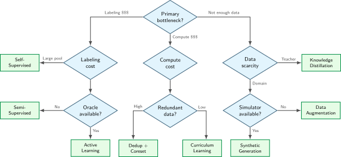
<p>:::</p>
<section id="quy-trình-ra-quyết-định" class="level3 unnumbered">
<h3 class="unnumbered anchored" data-anchor-id="quy-trình-ra-quyết-định">Quy trình ra quyết định</h3>
<p>Mỗi lộ trình đòi hỏi một đánh giá có cấu trúc, vì cùng một biểu hiện trên tập dữ liệu có thể chỉ ra các nút thắt cổ chai khác nhau. Việc lựa chọn kỹ thuật bắt đầu bằng cách xác định ràng buộc chính, sau đó kiểm tra xem dữ liệu, nhãn và cơ sở hạ tầng cần thiết cho phương pháp đã chọn có sẵn hay không.</p>
<section id="bước-1-đánh-giá-nút-thắt-cổ-chai" class="level4 unnumbered">
<h4 class="unnumbered anchored" data-anchor-id="bước-1-đánh-giá-nút-thắt-cổ-chai">Bước 1: Đánh giá nút thắt cổ chai</h4>
<p>Xác định ràng buộc tài nguyên nào đang hạn chế nghiêm trọng nhất pipeline huấn luyện:</p>
<ul>
<li><strong>Chi phí gán nhãn</strong>: Các kỹ thuật tăng hiệu quả sử dụng nhãn như học chủ động, học bán giám sát và học tự giám sát giúp tối đa hóa giá trị thu được từ mỗi lượt gán nhãn thủ công.</li>
<li><strong>Chi phí tính toán</strong>: Việc chọn coreset và loại bỏ trùng lặp có thể giảm số lượng mẫu cần xử lý, trong khi một lộ trình huấn luyện đã được kiểm chứng có thể giảm số bước cần thiết để đạt được chỉ số mong muốn.</li>
<li><strong>Khan hiếm dữ liệu</strong>: Các phương pháp tạo dữ liệu như tăng cường, tổng hợp và chưng cất giúp mở rộng tập huấn luyện hiệu dụng, vượt xa những gì việc thu thập thô có thể cung cấp.</li>
</ul>
<p>Bước chẩn đoán này giúp việc chọn kỹ thuật bám sát ràng buộc tài nguyên then chốt, thay vì chạy theo thuật toán quen thuộc nhất.</p>
</section>
<section id="bước-2-kiểm-tra-các-điều-kiện-tiên-quyết" class="level4 unnumbered">
<h4 class="unnumbered anchored" data-anchor-id="bước-2-kiểm-tra-các-điều-kiện-tiên-quyết">Bước 2: Kiểm tra các điều kiện tiên quyết</h4>
<p>Sau khi xác định nút thắt cổ chai, hãy kiểm tra xem các kỹ thuật tương ứng có khả thi với cơ sở hạ tầng và dữ liệu hiện có hay không. Mỗi phương pháp đều có những yêu cầu cụ thể cần được đáp ứng trước khi triển khai (<a href="#tbl-technique-prerequisites" class="quarto-xref">table&nbsp;12</a>).</p>
<div id="tbl-technique-prerequisites" class="striped hover quarto-float quarto-figure quarto-figure-center anchored">
<figure class="quarto-float quarto-float-tbl figure">
<figcaption class="quarto-float-caption-top quarto-float-caption quarto-float-tbl" id="tbl-technique-prerequisites-caption-0ceaefa1-69ba-4598-a22c-09a6ac19f8ca">
Table&nbsp;12: <strong>Các điều kiện tiên quyết của kỹ thuật</strong>: Mỗi kỹ thuật đều có các yêu cầu cụ thể về cơ sở hạ tầng và dữ liệu cần được xác minh trước khi triển khai. Một kỹ thuật dù có lợi ích lý thuyết rất lớn nhưng không đáp ứng các điều kiện tiên quyết sẽ thất bại trong thực tế. Do đó, danh sách kiểm tra này là bước đầu tiên trong việc lựa chọn kỹ thuật.
</figcaption>
<div aria-describedby="tbl-technique-prerequisites-caption-0ceaefa1-69ba-4598-a22c-09a6ac19f8ca">
<table class="table-striped table-hover caption-top table">
<colgroup>
<col style="width: 46%">
<col style="width: 53%">
</colgroup>
<thead>
<tr class="header">
<th style="text-align: left;"><strong>Kỹ thuật</strong></th>
<th style="text-align: left;"><strong>Điều kiện tiên quyết</strong></th>
</tr>
</thead>
<tbody>
<tr class="odd">
<td style="text-align: left;"><strong>Active Learning</strong></td>
<td style="text-align: left;">Truy cập vào oracle, tập dữ liệu chưa được gán nhãn, cơ sở hạ tầng huấn luyện lại</td>
</tr>
<tr class="even">
<td style="text-align: left;"><strong>Coreset selection</strong></td>
<td style="text-align: left;">Mô hình proxy hoặc bộ trích xuất embedding, tập dữ liệu đầy đủ có thể truy cập</td>
</tr>
<tr class="odd">
<td style="text-align: left;"><strong>Curriculum Learning</strong></td>
<td style="text-align: left;">Phương pháp chấm điểm độ khó, lịch trình điều chỉnh tốc độ</td>
</tr>
<tr class="even">
<td style="text-align: left;"><strong>Bán giám sát</strong></td>
<td style="text-align: left;">Một số dữ liệu đã được gán nhãn, dữ liệu chưa được gán nhãn từ cùng phân phối</td>
</tr>
<tr class="odd">
<td style="text-align: left;"><strong>Tự giám sát</strong></td>
<td style="text-align: left;">Kho ngữ liệu lớn chưa được gán nhãn, ngân sách tính toán cho pretraining</td>
</tr>
<tr class="even">
<td style="text-align: left;"><strong>Tăng cường</strong></td>
<td style="text-align: left;">Kiến thức miền về các bất biến, thư viện tăng cường</td>
</tr>
<tr class="odd">
<td style="text-align: left;"><strong>Tạo tổng hợp</strong></td>
<td style="text-align: left;">Mô hình tạo sinh hoặc trình mô phỏng, giảm thiểu khoảng cách miền</td>
</tr>
</tbody>
</table>
</div>
</figure>
</div>
</section>
<section id="bước-3-ước-tính-roi" class="level4 unnumbered">
<h4 class="unnumbered anchored" data-anchor-id="bước-3-ước-tính-roi">Bước 3: Ước tính ROI</h4>
<p>Trước khi phân bổ nguồn lực kỹ thuật, hãy ước tính lợi tức đầu tư (ROI) của từng kỹ thuật ứng viên: <span class="math display">\[
\text{ROI} = \frac{\text{(Baseline Cost)} - \text{(Technique Cost + Implementation Cost)}}{\text{Technique Cost + Implementation Cost}}
\]</span></p>
<p>Một kỹ thuật dù có lợi ích lý thuyết cao nhưng chi phí triển khai lớn có thể mang lại ROI thấp hơn so với một phương pháp đơn giản hơn. Khử trùng lặp chính xác thường là một lựa chọn ban đầu tiết kiệm chi phí, vì việc băm rất đơn giản và dễ xác định các byte lặp lại. Tuy nhiên, lợi ích về sau vẫn phụ thuộc vào mức độ dư thừa của corpus và việc gán trọng số mẫu có chủ đích. Học chủ động đòi hỏi quyền truy cập oracle, cơ sở hạ tầng để huấn luyện lại và phát triển thuật toán lựa chọn, nên ROI của nó phụ thuộc nhiều vào có bao nhiêu chu kỳ gán nhãn để khấu hao khoản đầu tư đó.</p>
</section>
<section id="bước-4-kết-hợp-các-kỹ-thuật" class="level4 unnumbered">
<h4 class="unnumbered anchored" data-anchor-id="bước-4-kết-hợp-các-kỹ-thuật">Bước 4: Kết hợp các kỹ thuật</h4>
<p>Các kỹ thuật trong chương này không loại trừ lẫn nhau, nhưng việc kết hợp chúng không đảm bảo sẽ mang lại lợi ích cộng dồn. Một quy trình làm việc khả thi có thể là: khử trùng lặp corpus thô, áp dụng phương pháp coreset nhận biết độ bao phủ, sắp xếp các mẫu đã chọn theo một chương trình học đã được kiểm chứng, và tăng cường chúng tại runtime. Một biểu diễn được huấn luyện trước có thể cung cấp một điểm khởi đầu khác so với khởi tạo ngẫu nhiên. Mỗi bước bổ sung đều phải chứng minh được hiệu quả của nó, vì các bộ lọc chồng chéo có thể loại bỏ cùng một ví dụ, trong khi chi phí phụ trợ của chúng vẫn tiếp tục cộng dồn.</p>
<p><em>Các giai đoạn có thể cộng dồn hiệu quả khi tác động của chúng không chồng chéo và chi phí phụ trợ vẫn nhỏ; mức tiết kiệm tổng hợp phải được đo lường, không nên chỉ giả định.</em></p>
<p>Framework ra quyết định này trả lời câu hỏi <em>cái gì</em> trong chọn dữ liệu: loại bớt mẫu nào, khi nào nên chọn động, và làm thế nào để tổng hợp dữ liệu mới. Hiểu các lựa chọn thuật toán là cần thiết, nhưng chỉ có thuật toán thì không tự động làm huấn luyện nhanh hơn. Một thuật toán coreset được thiết kế hoàn hảo nhưng mất 10 giờ để chọn mẫu cho một phiên huấn luyện chỉ kéo dài hai giờ thì không mang lại lợi ích thực tế. Tương tự, một chiến lược curriculum learning yêu cầu quét toàn bộ tập dữ liệu để xác định thứ hạng độ khó có thể khiến GPU nhàn rỗi trong khi CPU tính điểm. <em>Cách</em> triển khai quan trọng không kém <em>cái gì</em> trong lựa chọn thuật toán.</p>
<p>Khoảng cách giữa sự tinh gọn của thuật toán và giá trị thực tế đặt ra nhiều thách thức hệ thống: ngăn chi phí chọn mẫu làm triệt tiêu lợi ích lý thuyết, xử lý các kiểu I/O không tuần tự khiến logic nạp trước (prefetch) bị rối, và phối hợp các quyết định chọn mẫu giữa các worker phân tán mà không tạo ra nút thắt đồng bộ. Các mẫu kỹ thuật dưới đây sẽ nối liền khoảng cách giữa lý thuyết chọn dữ liệu và thực tiễn sản xuất.</p>
<div id="quiz-question-sec-data-selection-decision-framework-0261" class="callout callout-quiz-question">
<details class="callout-quiz-question fbx-simplebox fbx-default"><summary><strong>Self-Check: Question</strong></summary><div>
<ol type="1">
<li><p>According to the chapter’s decision framework, if an ML team has an abundant pool of unlabeled domain data, very limited annotation budget, and access to human domain experts for selective queries, which technique branch is recommended?</p>
<ol type="a">
<li>Pure transformation-based data augmentation without labeling</li>
<li>Active learning (human-in-the-loop selective query) or semi-supervised learning</li>
<li>Generative self-instruct synthesis to replace all human annotators entirely</li>
<li>Exhaustive pairwise Jaccard deduplication across all unlabeled samples</li>
</ol></li>
<li><p>When deciding between static coreset pruning and dynamic online active selection for a production pipeline, what role does the expected number of training runs (<span class="math inline">\(N\)</span>) play in the architectural choice?</p></li>
<li><p>Order the decision steps when triaging a data pipeline bottleneck using the chapter’s decision framework: (1) Evaluate simulator and domain synthesizer availability, (2) Identify the primary constraint (label scarcity vs.&nbsp;compute limits vs.&nbsp;data scarcity), (3) Select the specific algorithmic technique (e.g.&nbsp;SSL, Active Learning, Coreset Pruning, or Generative Synthesis), (4) Assess human oracle availability and budget.</p></li>
</ol>
<p><a href="#quiz-answer-sec-data-selection-decision-framework-0261" class="question-label" onclick="event.preventDefault();document.getElementById('quiz-answer-sec-data-selection-decision-framework-0261').scrollIntoView({behavior:'smooth',block:'start'});history.pushState(null,'','#quiz-answer-sec-data-selection-decision-framework-0261');">See Answers →</a></p>
</div></details>
</div>
</section>
</section>
</section>
<section id="sec-data-selection-selection-engineering-a4eb" class="level2 page-columns page-full">
<h2 class="anchored" data-anchor-id="sec-data-selection-selection-engineering-a4eb">Kỹ thuật chọn dữ liệu</h2>
<p>Một vòng lặp active learning ngây thơ, mỗi epoch lại quét toàn bộ tập dữ liệu để chọn các mẫu “tốt” nhất, có thể biến một bài huấn luyện vốn bị giới hạn bởi tính toán thành nút thắt cổ chai do I/O. <strong>Kỹ thuật chọn dữ liệu</strong> bắt đầu từ nơi framework ra quyết định kết thúc: sau khi xác định sẽ áp dụng những thuật toán nào, phần kỹ thuật phải đảm bảo chúng mang lại tốc độ như đã hứa trên phần cứng và các pipeline dữ liệu thực tế. Các mẫu kiến trúc ngăn thất bại này chính là cách triển khai chọn dữ liệu trong môi trường sản xuất.</p>
<section id="sec-data-selection-selection-bottleneck-4d00" class="level3">
<h3 class="anchored" data-anchor-id="sec-data-selection-selection-bottleneck-4d00">Nút thắt cổ chai do chọn dữ liệu</h3>
<p>Lựa chọn dữ liệu động tạo ra một nút thắt cổ chai mới: độ trễ khi chọn. Một bộ nạp (loader) thông thường tuân theo kế hoạch lấy mẫu cố định, trong khi active learning hoặc giáo trình thích ứng có thể phải đánh giá hàm chọn <span class="math inline">\(f(x)\)</span> trên một tập ứng viên lớn trước khi tạo các batch tiếp theo. Cụ thể, việc chấm điểm một tập dữ liệu 1M bằng một mô hình lớn có thể mất 2.8 hours, dễ làm mất lợi ích tiết kiệm từ một coreset 10 percent nếu không dùng một mô hình proxy nhỏ hơn. Bài toán đánh đổi ở cấp hệ thống yêu cầu chi phí lựa chọn phải thấp hơn khối lượng công việc (workload) huấn luyện mà tập con giúp tiết kiệm; nếu không, số mẫu giảm nhưng tổng chi phí đầu-cuối lại tăng.</p>
<p>Với một chỉ số mục tiêu cố định, tổng chi phí cho phần lựa chọn và huấn luyện trên tập con phải thấp hơn huấn luyện trên toàn bộ dữ liệu. Gọi <span class="math inline">\(T_{\text{selection}}\)</span> là thời gian wall-clock dùng để chấm điểm tập ứng viên, <span class="math inline">\(T_{\text{train}}(D)\)</span> là thời gian huấn luyện wall-clock cho một tập dữ liệu kích thước <span class="math inline">\(D\)</span>, và <span class="math inline">\(D_{\text{subset}}\)</span>, <span class="math inline">\(D_{\text{total}}\)</span> lần lượt là số mẫu giữ lại và tổng số mẫu. <a href="#eq-selection-inequality" class="quarto-xref">Equation&nbsp;2</a> thể hiện điều kiện hòa vốn này, còn gọi là <strong>bất đẳng thức chọn mẫu</strong>. <span id="eq-selection-inequality"><span class="math display">\[ T_{\text{selection}} + T_{\text{train}}(D_{\text{subset}}) &lt; T_{\text{train}}(D_{\text{total}})  \tag{2}\]</span></span></p>
<p>Nếu <span class="math inline">\(f(x)\)</span> liên tục chấm điểm tập ứng viên bằng một mô hình lớn, việc chấm lại nhiều lần và phối hợp có thể ăn hết phần tiết kiệm từ huấn luyện và dẫn tới ROI âm. Một kịch bản cụ thể sẽ minh họa sự đánh đổi này.</p>
<p>Tương đương, ta có thể tách phần phụ trội cho phép của bước lựa chọn: <span class="math inline">\(T_{\text{selection}} &lt; T_{\text{train}}(D_{\text{total}}) - T_{\text{train}}(D_{\text{subset}})\)</span>. Phần phụ trội cho phép vì thế phụ thuộc vào mức khối lượng công việc (workload) huấn luyện mà tập con tiết kiệm được; không có một tỷ lệ cố định áp dụng cho mọi khối lượng công việc.</p>
<div id="exmp-data-selection-selection-inequality-practice" class="callout callout-example" title="Bất đẳng thức chọn mẫu trong thực tế">
<p></p><details class="callout-example fbx-simplebox fbx-default" open=""><summary><strong>Example 1.5: Bất đẳng thức chọn mẫu trong thực tế</strong></summary><div><strong>Kịch bản</strong>: Một nhóm thị giác máy tính chọn một coreset 100K (10 percent) từ 1M ảnh để giảm thời gian huấn luyện trên một cụm bộ tăng tốc.<p></p>
<p><strong>Chẩn đoán</strong>: Chấm điểm bằng mô hình đầy đủ (Tùy chọn A: ResNet-50) thêm 2.8 h chi phí chọn mẫu, làm giảm khoản tiết kiệm ròng xuống còn 247.2 h. Chấm điểm bằng mô hình proxy (Tùy chọn B: ResNet-18) giảm chi phí chọn mẫu xuống 0.6 h, tiết kiệm tổng cộng 249.4 h giờ thực tế.</p>
<p><strong>Bài học về hệ thống</strong>: Chọn coreset chỉ giúp giảm độ trễ huấn luyện khi chi phí chọn mẫu nhỏ hơn khoản tiết kiệm khi so với huấn luyện trên toàn bộ tập dữ liệu. Chấm điểm bằng mô hình proxy giúp bảo toàn khoản tiết kiệm FLOP ròng bằng cách giữ chi phí chấm điểm mẫu thấp hơn nhiều so với chi phí truyền xuôi của mô hình đầy đủ.</p>
</div></details>
</div>
<p>Việc chọn dữ liệu chỉ cải thiện hiệu quả đầu cuối nếu chi phí của nó nhỏ hơn thời gian huấn luyện được tiết kiệm trên tập dữ liệu rút gọn. Hãy so sánh ba thanh thời gian xếp chồng minh họa trong <a href="#fig-selection-inequality" class="quarto-xref">figure&nbsp;8</a>, và bạn sẽ thấy một hàm chọn mẫu đắt đỏ có thể tiêu tốn hết mọi khoản tiết kiệm có được từ việc huấn luyện trên tập con.</p>
<div id="fig-selection-inequality" class="quarto-float quarto-figure quarto-figure-center anchored" alt="Biểu đồ thanh xếp chồng so sánh ba phương pháp: Baseline hiển thị một thanh cao duy nhất (100) cho huấn luyện đầy đủ; Chọn mẫu hiệu quả hiển thị hai thanh xếp chồng ngắn (5 chi phí chọn mẫu cộng 40 huấn luyện tập con) tổng cộng 45, kèm chú thích tiết kiệm 55 phần trăm; Chọn mẫu đắt đỏ hiển thị hai thanh xếp chồng (60 chi phí chọn mẫu cộng 40 huấn luyện tập con) tổng cộng 100, kèm chú thích Không tiết kiệm." data-fig-env="figure" data-fig-pos="htb">
<figure class="quarto-float quarto-float-fig figure">
<div aria-describedby="fig-selection-inequality-caption-0ceaefa1-69ba-4598-a22c-09a6ac19f8ca">
<div id="4fca499b" class="cell" data-execution_count="17">
<div class="cell-output cell-output-display">
<div>
<figure class="figure">
<p><a href="09_data_selection_files/figure-html/cell-18-output-1.png" class="lightbox" data-gallery="quarto-lightbox-gallery-12" title="Figure&nbsp;8: Bất đẳng thức chọn mẫu: Việc chọn dữ liệu chỉ cải thiện hiệu quả đầu cuối nếu tổng chi phí chọn mẫu cộng với huấn luyện trên tập con nhỏ hơn việc huấn luyện trên toàn bộ tập dữ liệu. Một hàm chọn mẫu nhẹ (ví dụ: mô hình proxy, embedding đã được cache) giữ chi phí chọn mẫu thấp; ngược lại, một hàm chọn mẫu đắt đỏ (ví dụ: truyền xuôi bằng mô hình đầy đủ) có thể xóa sạch khoản tiết kiệm.">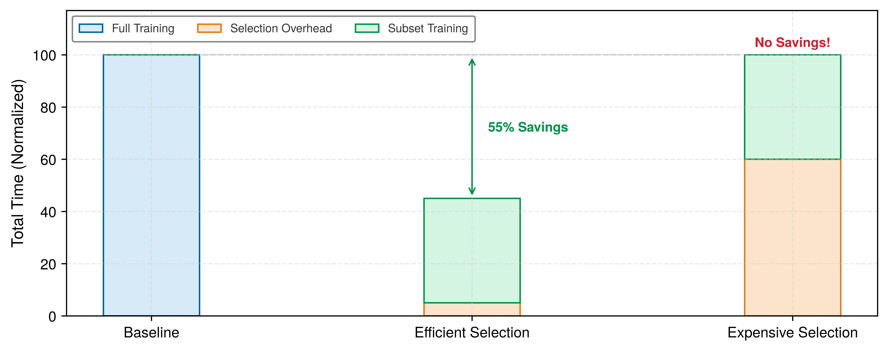</a></p>
</figure>
</div>
</div>
</div>
</div>
<figcaption class="quarto-float-caption-bottom quarto-float-caption quarto-float-fig" id="fig-selection-inequality-caption-0ceaefa1-69ba-4598-a22c-09a6ac19f8ca">
Figure&nbsp;8: <strong>Bất đẳng thức chọn mẫu</strong>: Việc chọn dữ liệu chỉ cải thiện hiệu quả đầu cuối nếu tổng chi phí chọn mẫu cộng với huấn luyện trên tập con nhỏ hơn việc huấn luyện trên toàn bộ tập dữ liệu. Một hàm chọn mẫu nhẹ (ví dụ: mô hình proxy, embedding đã được cache) giữ chi phí chọn mẫu thấp; ngược lại, một hàm chọn mẫu đắt đỏ (ví dụ: truyền xuôi bằng mô hình đầy đủ) có thể xóa sạch khoản tiết kiệm.
</figcaption>
</figure>
</div>
<p>Hệ quả trong <a href="#fig-selection-inequality" class="quarto-xref">figure&nbsp;8</a> là rất rõ ràng. Chi phí chọn mẫu có thể làm mất lợi ích của việc huấn luyện trên một tập con nhỏ hơn. Chi phí này còn đội lên khi việc chọn mẫu chạy ở mỗi epoch thay vì chỉ một lần; nếu việc chấm điểm mỗi epoch tiến sát khối lượng công việc huấn luyện được tiết kiệm nhờ tập con, lợi thế ròng sẽ biến mất.</p>
</section>
<section id="sec-data-selection-hardware-empathy-random-access-penalty-ef16" class="level3 page-columns page-full">
<h3 class="anchored" data-anchor-id="sec-data-selection-hardware-empathy-random-access-penalty-ef16">Thấu hiểu phần cứng: Cái giá của truy cập ngẫu nhiên</h3>
<p>Bất đẳng thức lựa chọn giải quyết phần chi phí tính toán, nhưng một số chiến lược lựa chọn cũng làm thay đổi kiểu I/O. Lấy mẫu dựa trên chỉ mục có thể biến các lượt đọc shard tuần tự lớn thành các lượt đọc phân tán nhỏ hơn, làm giảm hiệu quả của đọc trước và batching. Tác động này phụ thuộc vào kích thước bản ghi, độ sâu hàng đợi, trạng thái cache, tầng lưu trữ và thiết kế bộ tải dữ liệu. <a href="#tbl-io-performance" class="quarto-xref">Table&nbsp;13</a> minh họa một phép so sánh 4 KB trên một thiết bị duy nhất, chứ không phải một benchmark cho pipeline huấn luyện. Vì vậy, chi phí lựa chọn bao gồm cả kiểu truy cập mà nó gây ra. Các tập con có cùng kích thước có thể mang lại mức tiết kiệm thời gian thực tế khác nhau, tùy thuộc vào việc chúng giữ được các lượt đọc tuần tự hay làm chúng bị phân mảnh.</p>
<p>Các hệ thống có thể giảm nhẹ bất lợi này bằng mô hình proxy, embedding được cache và truy xuất có sử dụng chỉ mục. Một proxy nhỏ hơn chỉ có thể giảm chi phí chấm điểm nếu thứ hạng của nó chuyển giao được sang mô hình mục tiêu. Suy luận với độ chính xác thấp hơn có thể tiếp tục giảm chi phí đó khi runtime, mô hình và mức độ trung thực thứ hạng yêu cầu cho phép. Các chỉ mục embedding như FAISS<a href="#fn31" class="footnote-ref" id="fnref31" role="doc-noteref"><sup>31</sup></a> thay thế một số lượt quét toàn bộ bằng truy xuất chính xác hoặc xấp xỉ; chi phí và độ thu hồi của truy xuất này phụ thuộc vào cấu hình chỉ mục. Những cách tiếp cận này tách quá trình lựa chọn khỏi quá trình huấn luyện mô hình mục tiêu để mỗi phần có thể được đo lường độc lập.</p>
<div class="no-row-height column-margin column-container"><div id="fn31"><p><sup>31</sup>&nbsp;<strong>FAISS (Facebook AI Similarity Search)</strong>: Cung cấp khả năng tìm kiếm độ tương đồng được tăng tốc bằng GPU, sử dụng các thiết kế chỉ mục chính xác, xấp xỉ và trong miền nén <span class="citation" data-cites="johnson2019billion">(<a href="#ref-johnson2019billion" role="doc-biblioref">Johnson et al. 2019</a>)</span>. Johnson, Douze và Jegou báo cáo việc xây dựng đồ thị gồm hàng tỷ vector trên nhiều GPU, cho thấy vì sao hạ tầng chỉ mục vector lại quan trọng đối với lựa chọn ở quy mô web. Đối với các pipeline lựa chọn dữ liệu, lập chỉ mục kiểu FAISS hỗ trợ truy xuất <span class="math inline">\(k\)</span>-láng giềng gần nhất cho việc lựa chọn coreset, khử trùng lặp dựa trên embedding và phân cụm phân tầng để lấy mẫu cân bằng. Nếu không có hạ tầng này, lựa chọn dựa trên embedding thường sẽ phải quay về các lượt quét toàn bộ corpus tốn kém.</p><div id="ref-johnson2019billion" class="csl-entry" role="listitem">
Johnson, Jeff, Matthijs Douze, and Hervé Jégou. 2019. <span>“Billion-Scale Similarity Search with <span>GPUs</span>.”</span> <em><span>IEEE</span> Transactions on Big Data</em> 7 (3): 535–47. https://doi.org/10.1109/tbdata.2019.2921572.
</div></div></div><div id="tbl-io-performance" class="striped hover quarto-float quarto-figure quarto-figure-center anchored" data-tbl-colwidths="[11,25,20,24,20]">
<figure class="quarto-float quarto-float-tbl figure">
<figcaption class="quarto-float-caption-top quarto-float-caption quarto-float-tbl" id="tbl-io-performance-caption-0ceaefa1-69ba-4598-a22c-09a6ac19f8ca">
Table&nbsp;13: <strong>Minh họa về độ phạt khi đọc nhỏ</strong>: Các mốc thiết bị Registry so sánh băng thông tuần tự với các lượt đọc ngẫu nhiên 4 KB theo phép quy đổi IOPS đơn giản hóa. Thông lượng thực tế còn phụ thuộc vào kích thước yêu cầu, độ sâu hàng đợi, mức độ đồng thời, cơ chế cache và cấu hình dịch vụ; dòng đám mây trong bảng chỉ là một kịch bản mang tính định tính.
</figcaption>
<div aria-describedby="tbl-io-performance-caption-0ceaefa1-69ba-4598-a22c-09a6ac19f8ca">
<table class="table-striped table-hover caption-top table">
<colgroup>
<col style="width: 11%">
<col style="width: 25%">
<col style="width: 20%">
<col style="width: 24%">
<col style="width: 20%">
</colgroup>
<thead>
<tr class="header">
<th style="text-align: left;"><strong>Bậc lưu trữ</strong></th>
<th style="text-align: center;"><strong>Thông lượng tuần tự</strong></th>
<th style="text-align: center;"><strong>I/O ngẫu nhiên (IOPS)</strong></th>
<th style="text-align: center;"><strong>Thông lượng ngẫu nhiên (xấp xỉ)</strong></th>
<th style="text-align: center;"><strong>Phạt ngẫu nhiên</strong></th>
</tr>
</thead>
<tbody>
<tr class="odd">
<td style="text-align: left;"><strong>HDD (7.2k)</strong></td>
<td style="text-align: center;">~150 MB/s</td>
<td style="text-align: center;">~100 IOPS</td>
<td style="text-align: center;">~0.4 MB/s</td>
<td style="text-align: center;">375×</td>
</tr>
<tr class="even">
<td style="text-align: left;"><strong>SATA SSD</strong></td>
<td style="text-align: center;">~550 MB/s</td>
<td style="text-align: center;">~10K IOPS</td>
<td style="text-align: center;">~40 MB/s</td>
<td style="text-align: center;">13.8×</td>
</tr>
<tr class="odd">
<td style="text-align: left;"><strong>NVMe SSD</strong></td>
<td style="text-align: center;">~3,500 MB/s</td>
<td style="text-align: center;">~500K IOPS</td>
<td style="text-align: center;">~2,000 MB/s</td>
<td style="text-align: center;">1.75×</td>
</tr>
<tr class="even">
<td style="text-align: left;"><strong>Đám mây (S3)</strong></td>
<td style="text-align: center;">Phụ thuộc vào cấu hình</td>
<td style="text-align: center;">Không thể so sánh bằng IOPS</td>
<td style="text-align: center;">Phụ thuộc vào cấu hình</td>
<td style="text-align: center;">Có khả năng cực đoan</td>
</tr>
</tbody>
</table>
</div>
</figure>
</div>
<p>Bộ tải dữ liệu cũng cần điều chỉnh kiến trúc. Các định dạng tập dữ liệu phân mảnh đóng gói nhiều mẫu thành các khối có thể đọc tuần tự; WebDataset và FFCV là những ví dụ cụ thể. Bộ đệm xáo trộn là một thiết kế đồng bộ giữa dữ liệu và hệ thống: bộ tải đọc các phân mảnh tuần tự lớn vào bộ nhớ, rồi lấy mẫu ngẫu nhiên trong bộ đệm, vừa giữ được thông lượng I/O tuần tự vừa đạt lợi ích thống kê của lấy mẫu ngẫu nhiên. Trong huấn luyện đa bộ tăng tốc, mỗi worker duy trì bộ đệm xáo trộn riêng trên một phân mảnh không chồng chéo, nên việc ngẫu nhiên hóa là cục bộ thay vì toàn cục; các lớp hiếm hoặc trường hợp biên chỉ xuất hiện trong vài phân mảnh sẽ được bao phủ không đồng đều giữa các worker, trừ khi coreset được phân tầng trước và các phân mảnh được cân bằng trước khi phân phối.</p>
<div id="chk-data-selection-selection-inequality" class="callout callout-checkpoint" title="Bất đẳng thức lựa chọn">
<details class="callout-checkpoint fbx-simplebox fbx-default" open=""><summary><strong>Checkpoint 1.2: Bất đẳng thức lựa chọn</strong></summary><div>
<p>Lựa chọn dữ liệu không miễn phí. Nó đưa thêm một hạng mới vào định luật sắt và một chi phí I/O mới.</p>
<p>Kiểm tra phương trình:</p>
<ul class="task-list">
<li><label><input type="checkbox"><strong>Chi phí lựa chọn</strong>: bạn có thể giải thích tại sao <span class="math inline">\(T_{\text{selection}} + T_{\text{train}}(\text{subset})\)</span> phải nhỏ hơn <span class="math inline">\(T_{\text{train}}(\text{full})\)</span> để kỹ thuật này giảm thời gian huấn luyện đầu cuối?</label></li>
<li><label><input type="checkbox"><strong>Quản lý chi phí phát sinh</strong>: các mô hình proxy và embedding đã được cache giữ <span class="math inline">\(T_{\text{selection}}\)</span> thấp như thế nào?</label></li>
</ul>
<p>Hệ quả về hệ thống:</p>
<ul class="task-list">
<li><label><input type="checkbox"><strong>Các mẫu I/O</strong>: tại sao truy cập không tuần tự cho lựa chọn động có thể giảm thông lượng của bộ tải dữ liệu so với đọc tuần tự?</label></li>
</ul>
</div></details>
</div>
</section>
<section id="sec-data-selection-data-echoing-amortizing-io-costs-b4e0" class="level3 page-columns page-full">
<h3 class="anchored" data-anchor-id="sec-data-selection-data-echoing-amortizing-io-costs-b4e0">Lặp lại dữ liệu (Data echoing): Phân bổ dần chi phí I/O</h3>
<p>Các tối ưu hóa chúng ta đã bàn chủ yếu giải quyết vấn đề băng thông I/O. Tuy nhiên, các pipeline lựa chọn dữ liệu hiện đại lại tạo thêm một nút thắt khác: sức mạnh tính toán của CPU. Việc tạo dữ liệu tổng hợp và tăng cường mạnh đã chuyển giới hạn từ tốc độ đọc ghi đĩa sang thông lượng của bước tăng cường. Các phép tăng cường nặng như xoay 3D, MixUp, hoặc tổng hợp sinh tức thì (on-the-fly generative synthesis) có thể khiến GPU nhàn rỗi nếu CPU không kịp tạo mẫu. Khi pipeline dữ liệu tạo mẫu chậm hơn tốc độ GPU có thể tiêu thụ, mức sử dụng GPU giảm và thời gian huấn luyện kéo dài, làm mất đi các lợi ích hiệu suất từ việc lựa chọn dữ liệu thông minh hơn.</p>
<p>Kỹ thuật lặp lại dữ liệu (Data echoing)<a href="#fn32" class="footnote-ref" id="fnref32" role="doc-noteref"><sup>32</sup></a> <span class="citation" data-cites="choi2020dataechoing">(<a href="#ref-choi2020dataechoing" role="doc-biblioref">Choi et al. 2019</a>)</span> sử dụng lại dữ liệu nhiều lần trước khi lấy các mẫu mới, đánh đổi tính mới của dữ liệu để tăng mức sử dụng bộ tăng tốc khi pipeline đầu vào chậm hơn quá trình huấn luyện. Nếu lặp trước bước tăng cường ngẫu nhiên, mỗi lần lặp có thể tạo ra các đầu vào biến đổi khác nhau, trong khi lặp ở các bước sau trong pipeline có thể lặp lại đúng các tensor.</p>
<div class="no-row-height column-margin column-container"><div id="fn32"><p><sup>32</sup>&nbsp;<strong>Lặp lại dữ liệu (Data echoing)</strong>: Điều quan trọng là <em>chèn điểm lặp ở đâu</em> trong pipeline. Lặp trước bước tăng cường (lặp ở phần đầu pipeline) cho phép áp dụng các phép tăng cường ngẫu nhiên khác nhau ở mỗi lượt lặp, còn lặp sau bước tăng cường sẽ đưa các tensor giống hệt nhau vào bộ tăng tốc. Hệ số lặp hữu ích và mức tăng tốc đạt được phụ thuộc vào khối lượng công việc (workload), kích thước batch, điểm chèn và chính sách xáo trộn <span class="citation" data-cites="choi2020dataechoing">(<a href="#ref-choi2020dataechoing" role="doc-biblioref">Choi et al. 2019</a>)</span>.</p><div id="ref-choi2020dataechoing" class="csl-entry" role="listitem">
Choi, Dami, Alexandre Passos, Christopher J. Shallue, and George E. Dahl. 2019. <span>“Faster Neural Network Training with Data Echoing.”</span> <em>arXiv Preprint</em>, ahead of print. https://doi.org/10.48550/arXiv.1907.05550.
</div></div></div><p>Hệ số lặp lại tối ưu phụ thuộc vào tỷ lệ <span class="math inline">\(R\)</span> giữa thời gian xử lý ở các bước đầu pipeline và thời gian huấn luyện ở các bước sau: <span class="math display">\[
R = \frac{T_{\text{data pipeline}}}{T_{\text{GPU training}}}
\]</span></p>
<p>Nếu <span class="math inline">\(R &gt; 1\)</span> (pipeline dữ liệu là nút thắt), một hệ số lặp <span class="math inline">\(e &lt; R\)</span> có thể khôi phục một phần chu kỳ nhàn rỗi của GPU, còn <span class="math inline">\(e \geq R\)</span> có thể tận dụng hết công suất GPU nếu các mẫu lặp vẫn hữu ích về mặt thống kê. Tăng <span class="math inline">\(e\)</span> vượt <span class="math inline">\(R\)</span> không cải thiện mức sử dụng và có thể làm giảm độ đa dạng mẫu. Nếu <span class="math inline">\(R &lt; 1\)</span> (GPU là nút thắt), lặp lại dữ liệu không mang lại lợi ích. Một kịch bản thực tế sẽ minh họa rõ các đánh đổi này.</p>

<div class="no-row-height column-margin column-container"><div class="">
<p><a href="images/svg/vol1_data_selection_margin_003.svg" class="lightbox" data-gallery="quarto-lightbox-gallery-13">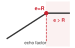</a></p>
<p><em>Mức sử dụng pipeline bão hòa khi tiến gần ngưỡng tỉ lệ; giá trị thống kê vẫn phụ thuộc vào khối lượng công việc (workload).</em></p>
</div></div><div id="nbk-data-selection-worked-example-data-echoing-roi" class="callout callout-notebook" title="Ví dụ tính toán: ROI của data echoing">
<p></p><details class="callout-notebook fbx-simplebox fbx-default" open=""><summary><strong>Napkin Math 1.4: Ví dụ tính toán: ROI của data echoing</strong></summary><div><strong>Tình huống</strong>: Huấn luyện ResNet-50 trên ImageNet với tăng cường mạnh (RandAugment + MixUp).<p></p>
<p><strong>Các phép đo</strong>:</p>
<ul>
<li>Thông lượng pipeline dữ liệu: 300 images/s (đọc, giải mã, tăng cường trên CPU)</li>
<li>Thông lượng huấn luyện trên GPU: 800 images/s (forward + backward pass)</li>
<li>Tỷ lệ <span class="math inline">\(R = T_{\text{pipeline}} / T_{\text{GPU}}\)</span> = (1/300 images/s) / (1/800 images/s) = 800 images/s/300 images/s ≈ 2.67 (GPU chờ 62.5 percent thời gian)</li>
</ul>
<p><strong>Không có echoing</strong>:</p>
<ul>
<li>Thông lượng thực tế: 300 images/s (bị giới hạn bởi pipeline dữ liệu)</li>
<li>Thời gian huấn luyện cho 90 epochs là: <span class="math inline">\(90 \times 1.28\text{M}\)</span> / 300 images/s = 384,350 seconds (106.8 hours)</li>
<li>Mức sử dụng GPU: 37.5 percent</li>
</ul>
<p><strong>Với hệ số echo</strong>: <span class="math inline">\(e\)</span> = 2.</p>
<ul>
<li>Mỗi batch được xử lý hai lần với các kỹ thuật tăng cường dữ liệu khác nhau</li>
<li>Thông lượng thực tế: 600 images/s (vẫn chưa đạt đến khả năng tối đa của GPU)</li>
<li>Số lượng ảnh duy nhất được xử lý mỗi giây: 300 images/s (không thay đổi)</li>
<li>Thời gian huấn luyện: <span class="math inline">\(90 \times 1.28\text{M}\)</span> / 600 images/s = 192,175 seconds (53.4 hours) nếu dữ liệu echoing có giá trị tương đương</li>
</ul>
<p><strong>Đánh đổi</strong>: Cần lưu ý rằng các mẫu lặp lại không nhất thiết hữu ích bằng các mẫu mới. Bài báo về data echoing đánh giá các yếu tố như hệ số echo, điểm chèn và cách xáo trộn, vì những lựa chọn này quyết định liệu việc tái sử dụng có giữ được hiệu suất dự đoán của mô hình hay không. Cụ thể, trong một cấu hình ResNet-50/ImageNet nhận dữ liệu qua mạng, <span class="citation" data-cites="choi2020dataechoing">Choi et al. (<a href="#ref-choi2020dataechoing" role="doc-biblioref">2019</a>)</span> báo cáo giảm 3.25<span class="math inline">\(\times\)</span> thời gian thực (wall-clock) để đạt được chỉ số mục tiêu.</p>
<p><strong>Góc nhìn hệ thống</strong>: Data echoing có thể đánh đổi độ đa dạng mẫu lấy mức tận dụng bộ tăng tốc khi pipeline đầu vào là nút thắt cổ chai. Cần đo lường hệ số echo phù hợp cho từng khối lượng công việc (workload), vì nó phụ thuộc vào kích thước batch, điểm chèn, tăng cường dữ liệu, xáo trộn và chỉ số mục tiêu.</p>
</div></details>
</div>
<div class="no-row-height column-margin column-container"></div><p>Echoing có thể tạo ra các mối tương quan khi cùng một ví dụ xuất hiện trong hoặc giữa các batch gần nhau, nên khi triển khai phải giữ mức xáo trộn đủ tốt và xác nhận chỉ số mục tiêu. <span class="citation" data-cites="choi2020dataechoing">Choi et al. (<a href="#ref-choi2020dataechoing" role="doc-biblioref">2019</a>)</span> không quan sát thấy tương tác tiêu cực với chuẩn hóa batch trong các thí nghiệm ResNet-50 và Single Shot MultiBox Detector (SSD), nhưng kết quả đó không đảm bảo mọi khối lượng công việc (workload) đều có hành vi giống nhau.</p>
<p>Các mẫu thiết kế trong phần này giúp việc lựa chọn dữ liệu có thể triển khai được. Lựa chọn proxy có thể giảm chi phí chấm điểm khi thứ hạng của nó chuyển giao được sang mô hình mục tiêu. Các định dạng phân mảnh và bộ đệm xáo trộn dung hòa giữa lấy mẫu ngẫu nhiên và truy cập lưu trữ tuần tự, trong khi data echoing có thể tận dụng thời gian nhàn rỗi của bộ tăng tốc khi khâu đầu vào là nút thắt cổ chai. Mỗi mẫu tác động đến một phần khác nhau của pipeline, và mỗi mẫu vẫn cần đo lường theo workload về chất lượng và thời gian end-to-end.</p>
<p>Các mẫu kỹ thuật giải quyết câu hỏi <em>làm thế nào</em>, nhưng vẫn còn một câu hỏi cơ bản: có nên đầu tư vào lựa chọn dữ liệu hay không. Ví dụ, một pipeline loại bỏ dữ liệu trùng lặp tốn 50.000 đô la để xây dựng nhưng chỉ tiết kiệm 10.000 đô la cho mỗi lần huấn luyện sẽ cần một mô hình chi phí để biện minh.</p>
<div id="quiz-question-sec-data-selection-selection-engineering-a4eb" class="callout callout-quiz-question">
<details class="callout-quiz-question fbx-simplebox fbx-default"><summary><strong>Self-Check: Question</strong></summary><div>
<ol type="1">
<li><p>A training team reduces a dataset from <span class="math inline">\(1{,}000{,}000\)</span> to <span class="math inline">\(100{,}000\)</span> images (a <span class="math inline">\(10\times\)</span> coreset). Training on the full dataset takes 10 hours (<span class="math inline">\(T_{\text{train}}(\text{full}) = 10\text{ hr}\)</span>), while training on the coreset takes 1 hour (<span class="math inline">\(T_{\text{train}}(\text{subset}) = 1\text{ hr}\)</span>). However, scoring the <span class="math inline">\(1\text{M}\)</span> pool with the full production model takes 12 hours (<span class="math inline">\(T_{\text{selection}} = 12\text{ hr}\)</span>). Does this configuration satisfy the Selection Inequality, and what engineering change restores positive ROI?</p>
<ol type="a">
<li>Yes, because the dataset was reduced by <span class="math inline">\(90\%\)</span>; no engineering change is needed</li>
<li>Yes, because <span class="math inline">\(10\text{ hr} - 1\text{ hr} = 9\text{ hr}\)</span> of savings outweighs the scoring cost; increase GPU count by <span class="math inline">\(2\times\)</span></li>
<li>No, because <span class="math inline">\(T_{\text{selection}} + T_{\text{train}}(\text{subset}) = 13\text{ hr} &gt; 10\text{ hr}\)</span>; replace full-model scoring with a lightweight proxy model or cached embeddings</li>
<li>No, because coreset training always increases memory bandwidth consumption; switch from NVMe SSDs to HDDs</li>
</ol></li>
<li><p>Why do naive random sample lookups across non-contiguous indices in large un-sharded dataset files severely degrade I/O throughput on storage hardware, and how do shuffle buffers mitigate this?</p>
<ol type="a">
<li>Random lookups bypass host CPU caches, forcing floating-point registers to re-encode all labels</li>
<li>Random lookups violate PCIe parity checks, causing GPU kernel timeouts during backward passes</li>
<li>Random lookups trigger hash collisions in the Python garbage collector, halting dataloading threads</li>
<li>Random 4 KB reads achieve only a tiny fraction of peak sequential storage bandwidth due to IOPS limits, whereas shuffle buffers read large sequential chunks and randomize locally in memory</li>
</ol></li>
<li><p>Contrast upstream data echoing (echoing before data augmentation) with downstream data echoing (echoing after augmentation) in terms of computational overhead and sample diversity.</p></li>
<li><p>True or False: If the GPU training step takes 20 ms and the CPU data loading/augmentation pipeline takes 10 ms (<span class="math inline">\(R = T_{\text{pipeline}} / T_{\text{GPU}} = 0.5\)</span>), applying a data echoing factor of <span class="math inline">\(e = 2\)</span> will double the end-to-end training throughput.</p></li>
<li><p>The pipeline optimization technique that reuses intermediate data samples multiple times before fetching new batches to keep accelerators saturated when CPU data processing or I/O is the bottleneck is called data ____.</p></li>
</ol>
<p><a href="#quiz-answer-sec-data-selection-selection-engineering-a4eb" class="question-label" onclick="event.preventDefault();document.getElementById('quiz-answer-sec-data-selection-selection-engineering-a4eb').scrollIntoView({behavior:'smooth',block:'start'});history.pushState(null,'','#quiz-answer-sec-data-selection-selection-engineering-a4eb');">See Answers →</a></p>
</div></details>
</div>
</section>
</section>
<section id="sec-data-selection-cost-modeling-9b02" class="level2">
<h2 class="anchored" data-anchor-id="sec-data-selection-cost-modeling-9b02">Mô hình hóa chi phí</h2>
<p>Quyết định đầu tư như vậy đòi hỏi mô hình hóa chi phí và các câu trả lời định lượng. Người thực hành phải xác định nên gán nhãn thêm 10.000 mẫu hay mua thêm giờ GPU, khi nào active learning tự bù chi phí, và khoản đầu tư vào hạ tầng khử trùng lặp dữ liệu mang lại ROI ra sao.</p>
<section id="sec-data-selection-quantifying-data-costs-roi-f0b4" class="level3">
<h3 class="anchored" data-anchor-id="sec-data-selection-quantifying-data-costs-roi-f0b4">Định lượng chi phí dữ liệu và ROI</h3>
<p>Để trả lời những câu hỏi này, chúng ta cần hiểu rõ chi phí của dữ liệu huấn luyện. Tổng chi phí dữ liệu bao trùm toàn bộ vòng đời từ thu thập, chuẩn bị đến sử dụng dữ liệu, vượt xa phạm vi phí lưu trữ. <a href="#tbl-cost-components" class="quarto-xref">Table&nbsp;14</a> phân tách bốn thành phần chi phí. Gán nhãn thường là thành phần mà lựa chọn dữ liệu có thể tác động trực tiếp nhất, trong khi lưu trữ và xử lý thường tăng mang tính cơ học theo dung lượng giữ lại và số lượt huấn luyện. <span class="math display">\[
C_{\text{total}} = C_{\text{acquire}} + C_{\text{label}} + C_{\text{store}} + C_{\text{process}}
\]</span></p>
<div id="tbl-cost-components" class="striped hover quarto-float quarto-figure quarto-figure-center anchored" data-tbl-colwidths="[25,30,45]">
<figure class="quarto-float quarto-float-tbl figure">
<figcaption class="quarto-float-caption-top quarto-float-caption quarto-float-tbl" id="tbl-cost-components-caption-0ceaefa1-69ba-4598-a22c-09a6ac19f8ca">
Table&nbsp;14: <strong>Tổng chi phí dữ liệu huấn luyện</strong>: Bốn thành phần chi phí này bao phủ toàn bộ vòng đời dữ liệu. Cụ thể, <span class="math inline">\(D\)</span> là tổng số mẫu, <span class="math inline">\(D_{\text{labeled}}\)</span> là tập con đã gán nhãn, <span class="math inline">\(D_{\text{vol,store}}\)</span> là dung lượng dữ liệu lưu trữ (tính bằng byte), <span class="math inline">\(T_{\text{months}}\)</span> là thời gian lưu giữ (tháng), <span class="math inline">\(N_{\text{epochs}}\)</span> là số epoch, và <span class="math inline">\(O_{\text{sample}}\)</span> là khối lượng công việc huấn luyện trên mỗi mẫu. Các khoảng giá trị này là mốc tham chiếu theo kịch bản, không phải mức giá thị trường chung.
</figcaption>
<div aria-describedby="tbl-cost-components-caption-0ceaefa1-69ba-4598-a22c-09a6ac19f8ca">
<table class="table-striped table-hover caption-top table">
<colgroup>
<col style="width: 25%">
<col style="width: 30%">
<col style="width: 45%">
</colgroup>
<thead>
<tr class="header">
<th style="text-align: left;"><strong>Thành phần</strong></th>
<th style="text-align: center;"><strong>Công thức</strong></th>
<th style="text-align: right;"><strong>Phạm vi minh họa</strong></th>
</tr>
</thead>
<tbody>
<tr class="odd">
<td style="text-align: left;"><strong><span class="math inline">\(C_{\text{acquire}}\)</span></strong></td>
<td style="text-align: center;"><span class="math inline">\(D \times c_{\text{sample}}\)</span></td>
<td style="text-align: right;">$0.001–<span class="math inline">\(10/mẫu (cào web so với được cấp phép) |
| **\)</span>C_{}$**</td>
</tr>
</tbody>
</table>
</div>
</figure>
</div>
<p>Sự kết hợp của bốn thành phần chi phí này trở nên cụ thể khi đánh giá một lần chạy huấn luyện mô hình thị giác ở quy mô ImageNet.</p>
<div id="nbk-data-selection-cost-breakdown-imagenet-scale-training" class="callout callout-notebook" title="Phân tích chi phí: Huấn luyện mô hình quy mô ImageNet">
<p></p><details class="callout-notebook fbx-simplebox fbx-default" open=""><summary><strong>Napkin Math 1.5: Phân tích chi phí: Huấn luyện mô hình quy mô ImageNet</strong></summary><div><a href="#tbl-data-selection-imagenet-cost-breakdown" class="quarto-xref">Table&nbsp;15</a> liệt kê chi tiết một kịch bản minh họa về chi phí thu thập, gán nhãn, lưu trữ và tính toán ở quy mô ImageNet. Tỷ lệ thu được dựa trên các giả định đã nêu về cấp phép, chú thích, lưu trữ, runtime và chi phí tính toán; đây không phải tỷ lệ điển hình cho mọi khối lượng công việc (workload) có giám sát.<p></p>
<div id="tbl-data-selection-imagenet-cost-breakdown" class="quarto-float quarto-figure quarto-figure-center anchored" data-tbl-colwidths="[30,38,32]">
<figure class="quarto-float quarto-float-tbl figure">
<figcaption class="quarto-float-caption-top quarto-float-caption quarto-float-tbl" id="tbl-data-selection-imagenet-cost-breakdown-caption-0ceaefa1-69ba-4598-a22c-09a6ac19f8ca">
Table&nbsp;15: <strong>Phân tích chi phí minh họa quy mô ImageNet</strong>: Chi phí thu thập, gán nhãn, lưu trữ và tính toán được liệt kê theo các giả định kịch bản đã nêu. Mỗi khoản được tính từ mức giá hiển thị bên cạnh, sử dụng các mức giá gán nhãn đám đông, lưu trữ đối tượng và cloud-GPU được công bố trong sách. Trong phép tính này, chi phí dữ liệu chiếm ưu thế vì đã bao gồm cấp phép và chú thích, trong khi lần chạy huấn luyện tương đối ngắn.
</figcaption>
<div aria-describedby="tbl-data-selection-imagenet-cost-breakdown-caption-0ceaefa1-69ba-4598-a22c-09a6ac19f8ca">
<table class="caption-top table">
<colgroup>
<col style="width: 30%">
<col style="width: 38%">
<col style="width: 32%">
</colgroup>
<thead>
<tr class="header">
<th style="text-align: left;"><strong>Thành phần chi phí</strong></th>
<th style="text-align: left;"><strong>Tính toán</strong></th>
<th style="text-align: center;"><strong>Số lượng</strong></th>
</tr>
</thead>
<tbody>
<tr class="odd">
<td style="text-align: left;"><strong>Dữ liệu thô (1.2M images)</strong></td>
<td style="text-align: left;">Tập dữ liệu được cấp phép, phí cố định</td>
<td style="text-align: center;">$50,000</td>
</tr>
<tr class="even">
<td style="text-align: left;"><strong>Nhãn (chú thích cộng đồng)</strong></td>
<td style="text-align: left;">1.2M <span class="math inline">\(\times\)</span> $0.05/label</td>
<td style="text-align: center;">$60,000</td>
</tr>
<tr class="odd">
<td style="text-align: left;"><strong>Lưu trữ (kho đối tượng đám mây)</strong></td>
<td style="text-align: left;">150 GB <span class="math inline">\(\times\)</span> $0.02/GB/month <span class="math inline">\(\times\)</span> 12 months</td>
<td style="text-align: center;">$36</td>
</tr>
<tr class="even">
<td style="text-align: left;"><strong>Chiến dịch huấn luyện (30 runs, mỗi 100 epochs trong 24 h trên 8 A100s)</strong></td>
<td style="text-align: left;">5,760 GPU-hours <span class="math inline">\(\times\)</span> $4/GPU-hour</td>
<td style="text-align: center;">$23,040</td>
</tr>
<tr class="odd">
<td style="text-align: left;"><strong>Tổng cộng</strong></td>
<td style="text-align: left;"></td>
<td style="text-align: center;"><strong>$133,076</strong></td>
</tr>
<tr class="even">
<td style="text-align: left;"><strong>Tỷ lệ Dữ liệu so với Tính toán</strong></td>
<td style="text-align: left;"></td>
<td style="text-align: center;">82.7% dữ liệu, 17.3% tính toán</td>
</tr>
</tbody>
</table>
</div>
</figure>
</div>
<p><strong>Góc nhìn hệ thống</strong>: Trong các khối lượng công việc (workload) thị giác có giám sát, chi phí thu thập và gán nhãn dữ liệu có thể áp đảo chi phí tính toán, như dưới các giả định này. Con số chi phí tính toán ở đây là cho cả chiến dịch huấn luyện, không chỉ một lần chạy: mô hình được công bố thường là kết quả của nhiều lượt quét (sweeps), khởi động lại và thử nghiệm loại bỏ (ablations). Nếu chỉ tính chi phí cho một lần chạy, bạn sẽ đánh giá thiếu chi phí tính toán khoảng 30 lần. Dù vậy, chi phí thu thập và gán nhãn vẫn chiếm phần lớn. Số lần chạy cũng chỉ là một giả định như các giả định khác, nên một phép tính ROI đầy đủ phải nêu rõ giả định này và định giá cả hai loại chi phí, thay vì mặc định bên nào chiếm ưu thế.</p>
</div></details>
</div>
</section>
<section id="sec-data-selection-roi-framework-data-selection-techniques-dade" class="level3">
<h3 class="anchored" data-anchor-id="sec-data-selection-roi-framework-data-selection-techniques-dade">Framework ROI cho các kỹ thuật lựa chọn dữ liệu</h3>
<p>Hiểu rõ tổng chi phí giúp chúng ta ra quyết định hợp lý về việc nên đầu tư vào kỹ thuật tăng hiệu quả nào. Mỗi kỹ thuật đều có cả chi phí (công sức triển khai, chi phí tính toán phát sinh) và lợi ích (giảm yêu cầu dữ liệu, huấn luyện nhanh hơn). Để so sánh những đánh đổi này, chúng ta cần một framework chung: Lợi tức đầu tư (ROI). <span class="math display">\[
\text{ROI} = \frac{\text{Savings} - \text{Investment}}{\text{Investment}} \times 100\%
\]</span></p>
<p>Thách thức là định lượng chính xác cả hai phía. <a href="#tbl-roi-profiles" class="quarto-xref">Table&nbsp;16</a> tóm tắt các hạng mục chi phí và lợi ích cần đo lường; thứ hạng của chúng phụ thuộc vào tập dữ liệu, tác vụ và hạ tầng hiện có.</p>
<div id="tbl-roi-profiles" class="striped hover quarto-float quarto-figure quarto-figure-center anchored" data-tbl-colwidths="[18,39,43]">
<figure class="quarto-float quarto-float-tbl figure">
<figcaption class="quarto-float-caption-top quarto-float-caption quarto-float-tbl" id="tbl-roi-profiles-caption-0ceaefa1-69ba-4598-a22c-09a6ac19f8ca">
Table&nbsp;16: <strong>Hồ sơ ROI cho các kỹ thuật chọn dữ liệu</strong>: Bảng này chỉ ra chi phí và các khoản tiết kiệm có thể có. Không kỹ thuật nào đảm bảo ROI dương; mỗi kỹ thuật phải thỏa mãn bất đẳng thức lựa chọn trong điều kiện khối lượng công việc (workload) được đo lường.
</figcaption>
<div aria-describedby="tbl-roi-profiles-caption-0ceaefa1-69ba-4598-a22c-09a6ac19f8ca">
<table class="table-striped table-hover caption-top table">
<colgroup>
<col style="width: 18%">
<col style="width: 39%">
<col style="width: 43%">
</colgroup>
<thead>
<tr class="header">
<th style="text-align: left;"><strong>Kỹ thuật</strong></th>
<th style="text-align: left;"><strong>Đầu tư (Chi phí)</strong></th>
<th style="text-align: left;"><strong>Tiết kiệm (Lợi ích)</strong></th>
</tr>
</thead>
<tbody>
<tr class="odd">
<td style="text-align: left;"><strong>Loại bỏ trùng lặp</strong></td>
<td style="text-align: left;">Tính toán một lần để băm + cơ sở hạ tầng</td>
<td style="text-align: left;">Giảm lưu trữ và xử lý mẫu lặp lại</td>
</tr>
<tr class="even">
<td style="text-align: left;"><strong>Lựa chọn Coreset</strong></td>
<td style="text-align: left;">Huấn luyện mô hình proxy + tính toán lựa chọn</td>
<td style="text-align: left;">Ít mẫu được giữ lại hơn nếu chất lượng và độ bao phủ mục tiêu được duy trì</td>
</tr>
<tr class="odd">
<td style="text-align: left;"><strong>Active Learning</strong></td>
<td style="text-align: left;">Suy luận trên tập dữ liệu chưa được gán nhãn + độ trễ human-in-the-loop</td>
<td style="text-align: left;">Nhu cầu gán nhãn thấp hơn khi lựa chọn truy vấn được chuyển giao</td>
</tr>
<tr class="even">
<td style="text-align: left;"><strong>Tăng cường dữ liệu</strong></td>
<td style="text-align: left;">Chu kỳ CPU/GPU cho các phép biến đổi</td>
<td style="text-align: left;">Tăng kích thước tập dữ liệu hiệu quả mà không cần thu thập dữ liệu mới</td>
</tr>
</tbody>
</table>
</div>
</figure>
</div>
</section>
<section id="sec-data-selection-breakeven-analysis-9a38" class="level3">
<h3 class="anchored" data-anchor-id="sec-data-selection-breakeven-analysis-9a38">Phân tích điểm hòa vốn</h3>
<p>Các phép tính ROI giả định rằng kỹ thuật đạt được lợi ích như kỳ vọng, nhưng kết quả thực tế có thể khác. Với bất kỳ kỹ thuật nào, tồn tại một <strong>điểm hòa vốn</strong> nơi chi phí đầu tư bằng với khoản tiết kiệm. Dưới ngưỡng này, kỹ thuật tốn nhiều hơn mức nó tiết kiệm; trên ngưỡng này, kỹ thuật tạo ra giá trị. Xác định ngưỡng này giúp quyết định liệu một kỹ thuật có phù hợp cho dự án cụ thể hay không.</p>
<p>Giả sử chi phí gắn nhãn là $10/sample, học chủ động bắt đầu từ 1,000 mẫu đã gắn nhãn ($10,000), thực hiện 100 queries truy vấn mỗi vòng với chi phí suy luận $50. Trong khi đó, baseline gắn nhãn ngẫu nhiên cần 5,000 mẫu để đạt độ chính xác mục tiêu. Nếu học chủ động đạt độ chính xác mục tiêu chỉ với 2,000 mẫu đã gắn nhãn, ROI được suy ra bằng cách so sánh chi phí gắn nhãn và chi phí tính toán. <span class="math display">\[\begin{gather*}
\text{Random labeling cost} = \text{5,000} \times \text{\$10/sample} = \text{\$50,000}
\\
\text{Active learning cost} = \text{2,000} \times \text{\$10/sample} + \text{10 rounds} \times \text{\$50} = \text{\$20,500}
\\
\text{ROI} = \frac{\text{\$50,000} - \text{\$20,500}}{\text{\$20,500}}= \text{$143.9\%$}
\end{gather*}\]</span></p>
<p>Điểm hòa vốn đạt được khi chi phí nhãn tiết kiệm được bằng với chi phí bổ sung cho việc lựa chọn. Giảm 20% khối lượng gắn nhãn vẫn có thể dẫn đến ROI âm nếu việc chấm điểm và huấn luyện lại tốn kém.</p>
</section>
<section id="sec-data-selection-amortization-across-training-runs-f6b8" class="level3">
<h3 class="anchored" data-anchor-id="sec-data-selection-amortization-across-training-runs-f6b8">Phân bổ chi phí qua nhiều lần huấn luyện</h3>
<p>Phân tích điểm hòa vốn chỉ phản ánh tại một thời điểm, nhưng nhiều khoản đầu tư vào việc lựa chọn dữ liệu thường kéo dài qua nhiều dự án. Các kỹ thuật có chi phí ban đầu cao sẽ mang lại lợi ích đáng kể khi lợi ích của chúng được cộng dồn qua nhiều lần huấn luyện lặp lại. <strong>Lợi tức đầu tư phân bổ (ROI)</strong> xem xét yếu tố thời gian này, như <a href="#tbl-dedup-costs" class="quarto-xref">table&nbsp;17</a> và <a href="#tbl-amortized-roi" class="quarto-xref">table&nbsp;18</a> minh họa cho một pipeline loại bỏ dữ liệu trùng lặp: <span class="math display">\[
\text{Amortized ROI} = \frac{N_{\text{runs}} \times \text{Per-Run Savings} - \text{One-Time Investment}}{\text{One-Time Investment}} \times 100\%
\]</span></p>
<div id="tbl-dedup-costs" class="striped hover quarto-float quarto-figure quarto-figure-center anchored">
<figure class="quarto-float quarto-float-tbl figure">
<figcaption class="quarto-float-caption-top quarto-float-caption quarto-float-tbl" id="tbl-dedup-costs-caption-0ceaefa1-69ba-4598-a22c-09a6ac19f8ca">
Table&nbsp;17: <strong>Các thành phần chi phí cơ sở hạ tầng cho việc loại bỏ dữ liệu trùng lặp</strong>: Khoản đầu tư một lần bao gồm công sức kỹ thuật và tài nguyên tính toán ban đầu; khoản tiết kiệm trên mỗi lần chạy sẽ tích lũy dần theo mỗi lần huấn luyện tiếp theo trên dữ liệu đã được loại bỏ trùng lặp.
</figcaption>
<div aria-describedby="tbl-dedup-costs-caption-0ceaefa1-69ba-4598-a22c-09a6ac19f8ca">
<table class="table-striped table-hover caption-top table">
<colgroup>
<col style="width: 37%">
<col style="width: 62%">
</colgroup>
<thead>
<tr class="header">
<th style="text-align: left;"><strong>Thành phần</strong></th>
<th style="text-align: right;"><strong>Chi phí</strong></th>
</tr>
</thead>
<tbody>
<tr class="odd">
<td style="text-align: left;"><strong>Xây dựng pipeline loại bỏ trùng lặp</strong></td>
<td style="text-align: right;">$50,000 (thời gian kỹ thuật)</td>
</tr>
<tr class="even">
<td style="text-align: left;"><strong>Tính toán chữ ký MinHash (một lần)</strong></td>
<td style="text-align: right;">$5,000</td>
</tr>
<tr class="odd">
<td style="text-align: left;"><strong>Tiết kiệm trên mỗi lần chạy</strong></td>
<td style="text-align: right;">$10,000/run</td>
</tr>
</tbody>
</table>
</div>
</figure>
</div>
<p>Xu hướng ROI trong <a href="#tbl-amortized-roi" class="quarto-xref">table&nbsp;18</a> cho thấy những trường hợp nào nên ưu tiên đầu tư vào cơ sở hạ tầng. Ba điều kiện sau đây thường giúp tăng lợi nhuận từ các khoản đầu tư vào việc lựa chọn dữ liệu:</p>
<ul>
<li><strong>Các lần huấn luyện lặp lại</strong>: Việc tìm kiếm siêu tham số, các lần lặp mô hình và huấn luyện lại theo lịch trình đều tái sử dụng cùng một cơ sở hạ tầng lựa chọn dữ liệu nhiều lần.</li>
<li><strong>Tập dữ liệu được chia sẻ</strong>: Một tập dữ liệu đã được làm sạch hoặc loại bỏ dữ liệu trùng lặp có thể hỗ trợ nhiều nhóm hoặc nhiều kiến trúc mô hình.</li>
<li><strong>Các kỹ thuật có thể tái sử dụng rộng rãi</strong>: Các phương pháp như loại bỏ dữ liệu trùng lặp có thể áp dụng cho nhiều mô hình, trong khi các coreset chuyên biệt cho từng tác vụ thì có thể không.</li>
</ul>
<div id="tbl-amortized-roi" class="striped hover quarto-float quarto-figure quarto-figure-center anchored">
<figure class="quarto-float quarto-float-tbl figure">
<figcaption class="quarto-float-caption-top quarto-float-caption quarto-float-tbl" id="tbl-amortized-roi-caption-0ceaefa1-69ba-4598-a22c-09a6ac19f8ca">
Table&nbsp;18: <strong>ROI phân bổ qua nhiều lần huấn luyện</strong>: Với mức chi phí và tiết kiệm trong kịch bản này, một pipeline khử trùng lặp có thể bị lỗ ở lần dùng đầu tiên nhưng sẽ có lãi khi được tái sử dụng đủ nhiều lần chạy. Các khoản đầu tư hạ tầng nên được đánh giá theo vòng đời kỳ vọng của chúng, thay vì chỉ nhìn vào một lần sử dụng.
</figcaption>
<div aria-describedby="tbl-amortized-roi-caption-0ceaefa1-69ba-4598-a22c-09a6ac19f8ca">
<table class="table-striped table-hover caption-top table">
<colgroup>
<col style="width: 22%">
<col style="width: 77%">
</colgroup>
<thead>
<tr class="header">
<th style="text-align: left;"><strong>Số lần chạy</strong></th>
<th style="text-align: right;"><strong>ROI được khấu hao</strong></th>
</tr>
</thead>
<tbody>
<tr class="odd">
<td style="text-align: left;"><strong>1 lần chạy</strong></td>
<td style="text-align: right;">-81.8% (lỗ ròng)</td>
</tr>
<tr class="even">
<td style="text-align: left;"><strong>5 lần chạy</strong></td>
<td style="text-align: right;">-9.1% (gần hòa vốn)</td>
</tr>
<tr class="odd">
<td style="text-align: left;"><strong>10 lần chạy</strong></td>
<td style="text-align: right;">+81.8% (dương)</td>
</tr>
<tr class="even">
<td style="text-align: left;"><strong>50 lần chạy</strong></td>
<td style="text-align: right;">+809.1% (lợi nhuận cao)</td>
</tr>
</tbody>
</table>
</div>
</figure>
</div>
<p>Khử trùng lặp có thể là một khoản đầu tư có tính chuyển giao cao, vì mọi mô hình dùng cùng tập dữ liệu sẽ kế thừa các thay đổi về lưu trữ và nội dung lặp lại, dù tác động chất lượng vẫn có thể khác theo từng tác vụ. Các coreset chuyên cho từng tác vụ có thể kém ổn định hơn khi chuyển giữa các kiến trúc, hạn chế khả năng phân bổ chi phí của chúng. Với các lần chạy một lần, những kỹ thuật đơn giản như lấy mẫu ngẫu nhiên hoặc tăng cường dữ liệu cơ bản có thể mang lại ROI tốt hơn so với các phương pháp đòi hỏi nhiều hạ tầng.</p>
<p>Vì vậy, quyết định đầu tư quy về việc tách thực tế giữa các quy trình có khả năng tái sử dụng cao nhưng bị giới hạn dữ liệu và các quy trình dùng một lần đã được tuyển chọn sẵn.</p>
<p>Tất cả các phép tính ROI này đều giả định một máy duy nhất. Trong sản xuất, huấn luyện ML phân tán dữ liệu cho nhiều worker, kéo theo chi phí điều phối có thể làm giảm hoặc khuếch đại lợi nhuận đó: một thuật toán coreset thiết kế cho một GPU có thể hành xử khác khi tập dữ liệu của nó được chia nhỏ cho hàng trăm worker.</p>
<div id="quiz-question-sec-data-selection-cost-modeling-9b02" class="callout callout-quiz-question">
<details class="callout-quiz-question fbx-simplebox fbx-default"><summary><strong>Self-Check: Question</strong></summary><div>
<ol type="1">
<li><p>A company invests <span class="math inline">\(C_{\text{select}} = \$30{,}000\)</span> to compute a high-quality coreset. Training on the full dataset costs <span class="math inline">\(C_{\text{train}}(D) = \$10{,}000\)</span> per run, whereas training on the coreset costs <span class="math inline">\(C_{\text{train}}(S) = \$4{,}000\)</span> per run. What is the break-even number of training runs <span class="math inline">\(N^*\)</span> required to justify this static selection investment, and what is the ROI after 10 training runs?</p>
<ol type="a">
<li><span class="math inline">\(N^* = 5\)</span> runs, and <span class="math inline">\(\text{ROI} = 100\%\)</span> after 10 runs (Net savings = <span class="math inline">\(\$30{,}000\)</span> on a <span class="math inline">\(\$30{,}000\)</span> investment)</li>
<li><span class="math inline">\(N^* = 3\)</span> runs, and <span class="math inline">\(\text{ROI} = 300\%\)</span> after 10 runs</li>
<li><span class="math inline">\(N^* = 8\)</span> runs, and <span class="math inline">\(\text{ROI} = 50\%\)</span> after 10 runs</li>
<li><span class="math inline">\(N^* = 10\)</span> runs, and <span class="math inline">\(\text{ROI} = 0\%\)</span> after 10 runs</li>
</ol></li>
<li><p>In the full lifecycle cost equation for machine learning data systems (<span class="math inline">\(C_{\text{total}} = C_{\text{acquire}} + C_{\text{label}} + C_{\text{filter}} + C_{\text{train}} + C_{\text{eval}}\)</span>), which scenario demonstrates the most effective use of upstream data filtering to minimize total expenditure?</p>
<ol type="a">
<li>Spending <span class="math inline">\(\$0\)</span> on filtering to ensure maximum raw token count reaches the final evaluation cluster</li>
<li>Spending <span class="math inline">\(\$5{,}000\)</span> on automated heuristic filtering to discard <span class="math inline">\(60\%\)</span> of corrupt samples before paying <span class="math inline">\(\$100{,}000\)</span> in human labeling and training fees</li>
<li>Doubling human labeling rates to manually review every web-scraped token before filtering</li>
<li>Eliminating model evaluation to offset the compute cost of running unpruned training runs</li>
</ol></li>
<li><p>Explain why calculating Return on Investment (ROI) for data selection requires tracking engineering implementation and pipeline maintenance costs in addition to raw accelerator compute hours.</p></li>
<li><p>True or False: In a production setting where a single model will be trained exactly once (<span class="math inline">\(N=1\)</span>) with no hyperparameter tuning or future refreshes, spending 50 GPU-hours to compute static EL2N coreset scores that save 30 GPU-hours of training time is an economically sound decision.</p></li>
<li><p>The metric defined as <span class="math inline">\(\text{ROI} = \frac{N \cdot \Delta C_{\text{train}} - C_{\text{select}}}{C_{\text{select}}}\)</span>, which measures the net financial or compute return generated by a data selection technique over <span class="math inline">\(N\)</span> training runs, is known as Return on ____.</p></li>
</ol>
<p><a href="#quiz-answer-sec-data-selection-cost-modeling-9b02" class="question-label" onclick="event.preventDefault();document.getElementById('quiz-answer-sec-data-selection-cost-modeling-9b02').scrollIntoView({behavior:'smooth',block:'start'});history.pushState(null,'','#quiz-answer-sec-data-selection-cost-modeling-9b02');">See Answers →</a></p>
</div></details>
</div>
</section>
</section>
<section id="sec-data-selection-distributed-selection-d03e" class="level2">
<h2 class="anchored" data-anchor-id="sec-data-selection-distributed-selection-d03e">Lựa chọn phân tán</h2>
<p>Các phần trước trong chương này đã sử dụng cách tiếp cận tập trung, trong đó một tiến trình có thể thấy toàn bộ tập dữ liệu, tính các thống kê tổng thể và điều phối việc lựa chọn. Cách trừu tượng hóa này cho phép các phương pháp coreset xếp hạng tất cả các mẫu, các chương trình học (curricula) thiết lập một thứ tự chung, và học chủ động so sánh một nhóm ứng viên chung. Huấn luyện phân tán phá vỡ trừu tượng này khi dữ liệu được chia thành nhiều phần và điểm số được cập nhật ở các trạng thái mô hình khác nhau. Hai vấn đề khó nảy sinh: xấp xỉ một lựa chọn toàn cục từ các góc nhìn cục bộ, và giữ cho các xếp hạng trong thời gian huấn luyện có thể so sánh được khi mô hình thay đổi.</p>
<p>Việc lựa chọn phân tán có giữ trung thực với tập dữ liệu toàn cục hay trượt thành các heuristic cục bộ trên từng phân mảnh phụ thuộc vào mức phối hợp giữa các worker mà mỗi kỹ thuật đòi hỏi, so với băng thông sẵn có để duy trì phối hợp đó. Vì vậy, cần đánh giá bài toán lựa chọn ở ranh giới nơi giá trị thống kê gặp cách chia shard và tính cục bộ.</p>
<p>Đây là hai yêu cầu độc lập. Một coreset có thể vẫn đại diện nhưng chi phí điều phối quá cao; ngược lại, một phương pháp cục bộ theo shard, dù rẻ và dễ mở rộng, có thể bỏ sót có hệ thống các nhóm hiếm chỉ thấy ở toàn bộ tập dữ liệu (global corpus). Do đó, một thiết kế phân tán cần hai tiêu chí đánh giá (acceptance tests): thứ nhất, so sánh chất lượng dữ liệu được chọn với một tham chiếu tập trung hoặc có thể kiểm chứng (auditable reference); thứ hai, so sánh chi phí lựa chọn với tổng thời gian huấn luyện mà nó giúp tiết kiệm. Chỉ đạt một trong hai tiêu chí là không đủ.</p>
<section id="sec-data-selection-strategies-distributed-selection-6119" class="level3">
<h3 class="anchored" data-anchor-id="sec-data-selection-strategies-distributed-selection-6119">Chiến lược lựa chọn phân tán</h3>
<p>Trong một bố trí song song dữ liệu cơ bản, mỗi worker xử lý một shard riêng và việc đồng bộ hóa mô hình được xử lý tách biệt. Việc lựa chọn dữ liệu có thể thêm các phụ thuộc giữa các shard đó (<a href="#tbl-selection-dependencies" class="quarto-xref">table&nbsp;19</a>).</p>
<p>Các phụ thuộc lựa chọn này có thể được giải bằng nhiều kiến trúc, mỗi kiến trúc chọn một điểm khác nhau trong không gian đánh đổi giữa tính nhất quán và khả năng mở rộng. Cách trực tiếp nhất là tập trung khâu lựa chọn, còn huấn luyện thì phân tán. Một nút điều phối thực hiện lựa chọn trên toàn bộ tập dữ liệu, rồi phân phát các chỉ mục đã chọn cho các worker. Cách này giữ chất lượng lựa chọn nhưng tạo ra một nút thắt cổ chai duy nhất:</p>
<pre><code>Coordinator: score_all_samples() → selected_indices
Broadcast: selected_indices → all workers
Workers: train on subset(local_shard, selected_indices)</code></pre>
<div id="tbl-selection-dependencies" class="striped hover quarto-float quarto-figure quarto-figure-center anchored">
<figure class="quarto-float quarto-float-tbl figure">
<figcaption class="quarto-float-caption-top quarto-float-caption quarto-float-tbl" id="tbl-selection-dependencies-caption-0ceaefa1-69ba-4598-a22c-09a6ac19f8ca">
Table&nbsp;19: <strong>Các Phụ thuộc Lựa chọn trong Huấn luyện Phân tán</strong>: Bảng này bắt đầu từ cách tiếp cận tập trung phổ biến của từng kỹ thuật, sau đó chỉ ra vấn đề phối hợp phát sinh khi dữ liệu bị phân mảnh. Các phiên bản phân tán có thể chấp nhận một mức độ sai khác nhất định, thay vì phải tái tạo chính xác kết quả như khi thực hiện tập trung.
</figcaption>
<div aria-describedby="tbl-selection-dependencies-caption-0ceaefa1-69ba-4598-a22c-09a6ac19f8ca">
<table class="table-striped table-hover caption-top table">
<colgroup>
<col style="width: 24%">
<col style="width: 31%">
<col style="width: 44%">
</colgroup>
<thead>
<tr class="header">
<th style="text-align: left;"><strong>Kỹ thuật</strong></th>
<th style="text-align: left;"><strong>Giả định một Node</strong></th>
<th style="text-align: left;"><strong>Thách thức phân tán</strong></th>
</tr>
</thead>
<tbody>
<tr class="odd">
<td style="text-align: left;"><strong>Lựa chọn Coreset</strong></td>
<td style="text-align: left;">Chế độ xem toàn cầu của tập dữ liệu</td>
<td style="text-align: left;">Mỗi worker chỉ thấy shard của nó</td>
</tr>
<tr class="even">
<td style="text-align: left;"><strong>Active Learning</strong></td>
<td style="text-align: left;">Chấm điểm sự không chắc chắn tập trung</td>
<td style="text-align: left;">Chấm điểm yêu cầu đồng bộ hóa mô hình</td>
</tr>
<tr class="odd">
<td style="text-align: left;"><strong>Curriculum Learning</strong></td>
<td style="text-align: left;">Sắp xếp độ khó toàn cầu</td>
<td style="text-align: left;">Các worker có thể có các mẫu “khó nhất” khác nhau</td>
</tr>
<tr class="even">
<td style="text-align: left;"><strong>Loại bỏ trùng lặp</strong></td>
<td style="text-align: left;">Bảng băm (Hash table) vừa trong bộ nhớ</td>
<td style="text-align: left;">Các bảng băm phân tán (Distributed hash tables) làm tăng độ trễ</td>
</tr>
</tbody>
</table>
</div>
</figure>
</div>
<p>Ngữ nghĩa vẫn rõ ràng, nhưng nút điều phối trở thành điểm lỗi duy nhất và có thể gây nghẽn băng thông. Chi phí đó có chấp nhận được hay không phụ thuộc vào khối lượng lựa chọn, tần suất làm mới, đường truyền mạng và kích thước cụm.</p>
<p>Để giải quyết hạn chế về khả năng mở rộng này, phương pháp lựa chọn phân cấp phân tán luôn việc tính toán lựa chọn. Mỗi worker thực hiện lựa chọn cục bộ trên shard của mình, rồi một bộ điều phối gộp kết quả:</p>
<pre><code>Workers: local_selected = select_top_k(local_shard)
Coordinator: global_selected = merge_and_rerank(all local_selected)
Broadcast: final_indices → all workers</code></pre>
<p>Lựa chọn cục bộ theo shard giúp giảm tải cho bộ điều phối, nhưng phải đánh đổi về chất lượng: hạn ngạch cục bộ và phân bố điểm có thể không giữ được xếp hạng toàn cục hoặc bỏ sót các nhóm hiếm phân tán không đều giữa các shard. Vì vậy, bước hợp nhất cần có chuẩn hóa, ràng buộc độ bao phủ, hoặc một lượt xử lý toàn cục thứ hai.</p>
<p>Khi ngay cả các phương pháp phân cấp cũng trở nên quá tốn kém, lựa chọn toàn cục xấp xỉ là phương án dự phòng. Các phương pháp này đánh đổi độ chính xác để đạt khả năng mở rộng, bằng các thuật toán xấp xỉ phân tán. Ví dụ, MinHash phân tán cho phép khử trùng lặp bằng cách để mỗi worker tự tính chữ ký MinHash; sau đó các chữ ký được tổng hợp để tìm các bản ghi gần trùng giữa các shard mà không cần bất kỳ nút đơn lẻ nào phải thấy toàn bộ dữ liệu. Tương tự, lấy mẫu theo độ bất định phân tán cho phép các worker tính điểm bất định cục bộ, còn ngưỡng toàn cục được xác định dựa trên thống kê phân phối điểm thay vì xếp hạng chính xác.</p>
</section>
<section id="sec-data-selection-consistency-challenges-active-learning-59c9" class="level3">
<h3 class="anchored" data-anchor-id="sec-data-selection-consistency-challenges-active-learning-59c9">Những thách thức về tính nhất quán trong học chủ động</h3>
<p>Các chiến lược lựa chọn xấp xỉ giả định tiêu chí lựa chọn là tĩnh, nhưng học chủ động lại thêm một phức tạp: mô hình thay đổi ngay trong quá trình lựa chọn. Hãy hình dung khi Worker A chấm điểm các mẫu bằng mô hình ở bước <span class="math inline">\(t\)</span>, trong khi Worker B đồng thời cập nhật mô hình lên bước <span class="math inline">\(t+1\)</span>. Lúc này, điểm của Worker A đã cũ và có thể chọn những mẫu mà mô hình đã cập nhật sẽ xếp hạng khác đi.</p>
<p>Vì vậy, lịch chấm điểm không chỉ quyết định chi phí của một truy vấn mà còn định nghĩa ý nghĩa của nó. Một hệ thống có thể tái lập sẽ phiên bản hóa đồng bộ checkpoint của mô hình, snapshot của tập ứng viên, quy tắc chấm điểm và các chỉ mục đã chọn. Nhờ đó, hệ thống có thể đo được mức độ đồng thuận trong xếp hạng suy giảm theo tuổi của checkpoint và chọn khoảng thời gian làm mới dựa trên bằng chứng đó, thay vì một số bước tùy tiện.</p>
<p>Có một số chiến lược để giảm thiểu vấn đề lỗi thời này, mỗi chiến lược có đặc tính chi phí phụ trội khác nhau:</p>
<ul>
<li><strong>Chấm điểm đồng bộ</strong>: Tất cả các worker tạm dừng huấn luyện và chấm điểm đồng thời. Cách này đảm bảo tính nhất quán nhưng phải trả giá lớn về mức sử dụng GPU.</li>
<li><strong>Làm mới điểm định kỳ</strong>: Các worker chấm điểm lại sau mỗi <span class="math inline">\(k\)</span> epoch thay vì sau mỗi batch, đánh đổi độ mới của điểm để giảm chi phí phụ trội.</li>
<li><strong>Lựa chọn vững với checkpoint</strong>: Hệ thống chọn các mẫu có độ không chắc chắn cao khi xét trên nhiều checkpoint của mô hình, giúp các quyết định lựa chọn vẫn hợp lệ khi mô hình tiếp tục thay đổi.</li>
</ul>
<p>Một kịch bản minh họa với cụm GPU 8 nút cho thấy cách các chiến lược làm mới này tương tác với băng thông lưu trữ và hiệu suất tính toán.</p>
<div id="exmp-data-selection-distributed-coreset-selection" class="callout callout-example" title="Lựa chọn coreset phân tán">
<p></p><details class="callout-example fbx-simplebox fbx-default" open=""><summary><strong>Example 1.6: Lựa chọn coreset phân tán</strong></summary><div><strong>Kịch bản</strong>: Một cụm GPU A100 8 nút chọn một coreset 10 percent từ tập dữ liệu ImageNet (1.3M ảnh) thông qua các worker phân tán.<p></p>
<p><strong>Chẩn đoán</strong>: Chấm điểm coreset tập trung trên một nút đơn tạo ra nút thắt cổ chai về bộ nhớ và tính toán. Dàn dựng pipeline phân tán (embedding cục bộ theo phân mảnh <span class="math inline">\(\to\)</span> loại bỏ trùng lặp song song <span class="math inline">\(\to\)</span> chấm điểm EL2N cục bộ <span class="math inline">\(\to\)</span> hợp nhất top-<span class="math inline">\(k\)</span> tập trung) xử lý việc chọn tập dữ liệu trong 67 minutes.</p>
<p><strong>Bài học về hệ thống</strong>: Lựa chọn coreset phân tán có thể loại bỏ giới hạn chấm điểm do bộ nhớ của một nút đơn, như minh họa trong <a href="#fig-distributed-coreset-architecture" class="quarto-xref">figure&nbsp;9</a>. Phân mảnh embedding và chấm điểm giúp dàn đều công việc trên toàn cụm, trong khi hợp nhất tập trung vẫn là chi phí phối hợp và phải tuân thủ bất đẳng thức lựa chọn.</p>
</div></details>
</div>
<div id="fig-distributed-coreset-architecture" class="quarto-float quarto-figure quarto-figure-center anchored" alt="Sơ đồ kiến trúc với một Nút Điều phối lớn ở phía trên ba hộp worker đại diện gắn nhãn Worker 0, Worker 1 và Worker N, được ngăn cách bằng dấu ba chấm. Bộ điều phối liệt kê một chỉ mục embedding FAISS toàn cầu, các lựa chọn cục bộ đã hợp nhất và phát đi các chỉ số coreset cuối cùng. Các mũi tên đôi cho thấy điểm số cục bộ đi lên từ các worker và các chỉ số coreset cuối cùng đi xuống." data-fig-env="figure" data-fig-pos="htb">
<figure class="quarto-float quarto-float-fig figure">
<div aria-describedby="fig-distributed-coreset-architecture-caption-0ceaefa1-69ba-4598-a22c-09a6ac19f8ca">
<a href="11446f71d494c8dfa4280f9a4def9eada24a68f4.svg" class="lightbox" data-gallery="quarto-lightbox-gallery-14" title="Figure&nbsp;9: Kiến trúc Lựa chọn Coreset Phân tán: Chấm điểm cục bộ song song theo từng phân đoạn giúp giảm khối lượng công việc cho bộ điều phối hợp nhất thứ hạng tập trung. Các worker gửi điểm EL2N cục bộ lên trên; bộ điều phối hợp nhất các điểm này và phát đi các chỉ số coreset cuối cùng. Thiết kế này chỉ có lợi khi chi phí phối hợp thấp hơn thời gian huấn luyện tiết kiệm được nhờ coreset.">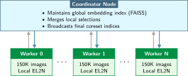</a>
</div>
<figcaption class="quarto-float-caption-bottom quarto-float-caption quarto-float-fig" id="fig-distributed-coreset-architecture-caption-0ceaefa1-69ba-4598-a22c-09a6ac19f8ca">
Figure&nbsp;9: <strong>Kiến trúc Lựa chọn Coreset Phân tán</strong>: Chấm điểm cục bộ song song theo từng phân đoạn giúp giảm khối lượng công việc cho bộ điều phối hợp nhất thứ hạng tập trung. Các worker gửi điểm EL2N cục bộ lên trên; bộ điều phối hợp nhất các điểm này và phát đi các chỉ số coreset cuối cùng. Thiết kế này chỉ có lợi khi chi phí phối hợp thấp hơn thời gian huấn luyện tiết kiệm được nhờ coreset.
</figcaption>
</figure>
</div>
<p>ROI dương có thể nhanh chóng bị bào mòn khi các worker phải phối hợp thường xuyên trong quá trình huấn luyện. Lựa chọn phân tán tạo ra một chi phí phối hợp, mức độ của nó phụ thuộc vào nội dung đồng bộ và tần suất đồng bộ. Chi phí này phải nhỏ hơn thời gian huấn luyện tiết kiệm được; nếu tiến sát ngưỡng, hãy đơn giản hóa chiến lược hoặc tăng khoảng thời gian làm mới.</p>
<p>Một ràng buộc khác xuất phát từ cấu trúc liên kết mạng của cụm. Việc đồng bộ gradient có thể dùng các phép collective trên bộ tăng tốc qua các liên kết chuyên dụng, trong khi vector embedding, mảng điểm và chỉ số coreset có thể đi theo đường dẫn qua host hoặc lưu trữ. Đường đi thực tế phụ thuộc vào kiến trúc hệ thống. Vì vậy, lưu lượng phục vụ lựa chọn có thể bộc lộ các nút thắt cổ chai ở CPU, card giao diện mạng, lưu trữ, hoặc mạng collective mà chỉ riêng profile huấn luyện không cho thấy.</p>
<p>Các hệ thống ML thực tế kết hợp đồng thời lựa chọn dữ liệu với hiệu quả ở cấp mô hình, thông lượng ở cấp máy, và huấn luyện phân tán. Những tối ưu hóa này tương tác theo những cách có thể khuếch đại hoặc làm suy yếu lẫn nhau, và hiểu rõ các tương tác đó là điều thiết yếu để thiết kế pipeline đầu cuối hiệu quả.</p>
<div id="quiz-question-sec-data-selection-distributed-selection-d03e" class="callout callout-quiz-question">
<details class="callout-quiz-question fbx-simplebox fbx-default"><summary><strong>Self-Check: Question</strong></summary><div>
<ol type="1">
<li><p>In a distributed training environment with hundreds of data-parallel worker nodes, why does standard centralized coreset selection fail to scale, and what trade-off does hierarchical selection introduce?</p>
<ol type="a">
<li>Centralized selection requires all workers to share a single GPU; hierarchical selection distributes weights across SSDs</li>
<li>Centralized selection fails because sharding prevents network cards from transmitting floating-point values</li>
<li>Centralized selection creates a communication and memory bottleneck at the coordinator node; hierarchical selection prunes locally per shard, risking loss of globally rare samples across shards</li>
<li>Centralized selection eliminates gradient synchronization; hierarchical selection disables local backpropagation</li>
</ol></li>
<li><p>In distributed active learning, Worker A scores candidate pool samples using model checkpoint step <span class="math inline">\(t\)</span>, while asynchronous Worker B updates the shared model parameters to step <span class="math inline">\(t+100\)</span>. What consistency challenge arises, and what is the systems remedy?</p>
<ol type="a">
<li>Worker A encounters deadlock in CUDA streams; the remedy is disabling PyTorch autograd</li>
<li>Worker B overwrites Worker A’s local storage; the remedy is mounting read-only NFS drives</li>
<li>Worker A’s GPU runs out of memory; the remedy is reducing batch size to 1</li>
<li>Worker A scores samples against a stale model state, producing invalid uncertainty rankings; the remedy is checkpoint versioning or periodic synchronized score refreshes</li>
</ol></li>
<li><p>Explain why performing independent, shard-local coreset pruning on an unstratified, partitioned dataset can cause minority class collapse during distributed training.</p></li>
<li><p>Order the execution phases of a distributed coreset selection workflow across a GPU cluster: (1) Compute shard-local embeddings and perform local near-deduplication, (2) Aggregate local candidate indices at the central coordinator, (3) Perform global proxy scoring and thresholding to produce final indices, (4) Broadcast final coreset index list to all worker nodes.</p></li>
</ol>
<p><a href="#quiz-answer-sec-data-selection-distributed-selection-d03e" class="question-label" onclick="event.preventDefault();document.getElementById('quiz-answer-sec-data-selection-distributed-selection-d03e').scrollIntoView({behavior:'smooth',block:'start'});history.pushState(null,'','#quiz-answer-sec-data-selection-distributed-selection-d03e');">See Answers →</a></p>
</div></details>
</div>
</section>
</section>
<section id="sec-data-selection-crosslayer-interactions-1f39" class="level2 page-columns page-full">
<h2 class="anchored" data-anchor-id="sec-data-selection-crosslayer-interactions-1f39">Tương tác xuyên lớp</h2>
<p>Lựa chọn dữ liệu không tồn tại tách biệt. Một mô hình được huấn luyện bằng coreset có thể được đơn giản hóa để triển khai sau này. Một pipeline học theo lộ trình sẽ chạy trên các bộ tăng tốc chuyên dụng. Một tập dữ liệu học chủ động sẽ đi vào huấn luyện phân tán. Những tương tác xuyên lớp này có thể gia tăng lợi ích hoặc tạo ra các xung đột bất ngờ. Hiểu các tương tác này giúp người làm thực tế thiết kế hệ thống hiệu quả đầu cuối thay vì tối ưu các thành phần một cách riêng lẻ.</p>
<section id="sec-data-selection-model-compression-9aef" class="level3 page-columns page-full">
<h3 class="anchored" data-anchor-id="sec-data-selection-model-compression-9aef">Hiệu quả cấp mô hình</h3>
<p>Hiệu quả cấp mô hình giảm kích thước hoặc chi phí tính toán của mô hình đã huấn luyện nhờ các kỹ thuật như tỉa (pruning), biểu diễn độ chính xác thấp hơn, và chưng cất. Tập dữ liệu huấn luyện có thể ảnh hưởng đến biểu diễn đã học, từ đó ảnh hưởng đến kết quả nén về sau; tuy vậy, một tập dữ liệu nhỏ hơn hoặc được chọn lọc không đảm bảo mô hình sẽ dễ nén hơn. <strong><a href="../10_model_compression/10_model_compression.html#sec-model-compression">Nén mô hình</a></strong> và <strong><a href="../11_hw_acceleration/11_hw_acceleration.html#sec-hardware-acceleration">Tăng tốc phần cứng</a></strong> sẽ quay lại bàn về các hệ quả phần cứng của việc đơn giản hóa mô hình.</p>
<div id="psp-data-selection-sparsity-latency-trap" class="callout callout-perspective" title="Bẫy độ trễ vì tính thưa">
<p></p><details class="callout-perspective fbx-simplebox fbx-default" open=""><summary><strong>Systems Perspective 1.2: Bẫy độ trễ vì tính thưa</strong></summary><div><strong>Bối cảnh</strong>: Lợi thế về khả năng nén nhờ chọn lọc dữ liệu thường được tính bằng số phép toán số học. Tuy nhiên, nghiên cứu về nén mô hình liên tục cho thấy tỉa (pruning) dễ làm giảm số phép toán hơn nhiều so với việc giảm thời gian thực thi.<p></p>
<p><strong>Chế độ lỗi</strong>: Số lượng FLOPs có thể giảm mạnh, nhưng độ trễ suy luận vẫn giữ nguyên hoặc thậm chí tăng. Phần cứng nhân ma trận dày đặc hoạt động hiệu quả với bố cục dữ liệu đều đặn và khả năng tái sử dụng cao, trong khi ma trận thưa yêu cầu truy cập bộ nhớ không tuần tự, kiểm tra siêu dữ liệu và nhảy địa chỉ. Nếu mẫu thưa không khớp với nền tảng thực thi, chi phí quản lý tính thưa có thể lớn hơn lợi ích từ việc giảm phép toán.</p>
<p><strong>Hiểu biết về hệ thống</strong>: FLOPs <em>không phải</em> là độ trễ. Giảm 99% số phép toán có thể không giảm thời gian nếu các phép toán còn lại bị giới hạn bởi băng thông bộ nhớ hoặc sử dụng cache kém hiệu quả. Cần tối ưu hóa đúng nút thắt cổ chai của phần cứng, thay vì chỉ dựa vào một chỉ số trừu tượng <span class="citation" data-cites="hoefler2021sparsity">(<a href="#ref-hoefler2021sparsity" role="doc-biblioref">Hoefler et al. 2021</a>)</span>.</p>
</div></details>
</div>
<div class="no-row-height column-margin column-container"><div id="ref-hoefler2021sparsity" class="csl-entry" role="listitem">
Hoefler, Torsten, Dan Alistarh, Tal Ben-Nun, Nikoli Dryden, and Alexandra Peste. 2021. <span>“Sparsity in Deep Learning: Pruning and Growth for Efficient Inference and Training in Neural Networks.”</span> <em>Journal of Machine Learning Research</em> 22 (241): 1–124.
</div></div><p>Cơ chế này liên quan đến cách mô hình mã hóa thông tin. Một mô hình được huấn luyện trên dữ liệu lặp lại có thể học các đặc trưng dư thừa mà quá trình tỉa (pruning) sẽ loại bỏ sau này. Chi phí tính toán để học các đặc trưng đó đã bị lãng phí, rồi lại bị loại bỏ trong quá trình nén. Ngược lại, một mô hình được huấn luyện trên các mẫu đa dạng, giàu thông tin có thể học các biểu diễn gọn, không dư thừa ngay từ đầu, giúp việc nén về sau dễ đánh giá và đôi khi dễ áp dụng hơn. Hãy coi đây là một giả thuyết kỹ thuật cần đo lường sau khi tuyển chọn, chứ không phải là đặc tính chắc chắn đúng cho mọi tập dữ liệu đã chọn. Lựa chọn dữ liệu và hiệu quả cấp mô hình là các công cụ bổ trợ, nhưng cần đánh giá tương tác của chúng một cách đồng thời bằng cách so sánh chất lượng nén và hiệu suất triển khai sau khi tuyển chọn, thay vì mặc định có một thứ tự ưu tiên.</p>
</section>
<section id="sec-data-selection-hardware-acceleration-cf40" class="level3">
<h3 class="anchored" data-anchor-id="sec-data-selection-hardware-acceleration-cf40">Thông lượng cấp máy</h3>
<p>Trong khi hiệu quả cấp mô hình quyết định phần công việc còn lại sau huấn luyện, thì thông lượng cấp máy quyết định mức độ hiệu quả của chính quá trình huấn luyện. Các bộ tăng tốc chuyên dụng, tối ưu hóa kernel và thực thi song song giúp tăng thông lượng hiệu quả. Lựa chọn dữ liệu ảnh hưởng đến việc nút thắt cổ chai nào của máy trở nên chi phối, và mối quan hệ này tinh tế hơn nhiều so với những phép tính tăng tốc đơn giản gợi ý, như <a href="#tbl-bottleneck-shifts" class="quarto-xref">table&nbsp;20</a> minh họa.</p>
<div id="tbl-bottleneck-shifts" class="striped hover quarto-float quarto-figure quarto-figure-center anchored">
<figure class="quarto-float quarto-float-tbl figure">
<figcaption class="quarto-float-caption-top quarto-float-caption quarto-float-tbl" id="tbl-bottleneck-shifts-caption-0ceaefa1-69ba-4598-a22c-09a6ac19f8ca">
Table&nbsp;20: <strong>Chẩn đoán nút thắt sau khi chọn dữ liệu</strong>: Việc thay đổi tập dữ liệu và cách thức truy cập có thể làm lộ một nút thắt khác, nhưng chỉ riêng kích thước tập dữ liệu không quyết định tài nguyên giới hạn. Hãy profile lại pipeline và chọn cách xử lý phù hợp với tình trạng đo được.
</figcaption>
<div aria-describedby="tbl-bottleneck-shifts-caption-0ceaefa1-69ba-4598-a22c-09a6ac19f8ca">
<table class="table-striped table-hover caption-top table">
<colgroup>
<col style="width: 35%">
<col style="width: 27%">
<col style="width: 37%">
</colgroup>
<thead>
<tr class="header">
<th style="text-align: left;"><strong>Điều kiện quan sát được</strong></th>
<th style="text-align: left;"><strong>Nút thắt cổ chai (Bottleneck) có thể xảy ra</strong></th>
<th style="text-align: left;"><strong>Phản hồi ứng cử viên</strong></th>
</tr>
</thead>
<tbody>
<tr class="odd">
<td style="text-align: left;"><strong>Tốc độ đầu vào thấp hơn nhu cầu của bộ tăng tốc</strong></td>
<td style="text-align: left;">Lưu trữ, giải mã hoặc liên kết máy chủ</td>
<td style="text-align: left;">Sharding, tìm nạp trước, giải mã song song</td>
</tr>
<tr class="even">
<td style="text-align: left;"><strong>Các kernel huấn luyện cường độ thấp</strong></td>
<td style="text-align: left;">Băng thông bộ nhớ của bộ tăng tốc</td>
<td style="text-align: left;">Fusion, giảm lưu lượng, độ chính xác thấp hơn</td>
</tr>
<tr class="odd">
<td style="text-align: left;"><strong>Chấm điểm động chiếm ưu thế trong lần lặp</strong></td>
<td style="text-align: left;">Tính toán lựa chọn hoặc I/O chỉ mục</td>
<td style="text-align: left;">Các mô hình proxy, điểm được lưu vào cache hoặc embeddings</td>
</tr>
</tbody>
</table>
</div>
</figure>
</div>
<p>Vì vậy, việc chọn dữ liệu có thể đẩy hệ thống từ một vùng nút thắt này sang vùng nút thắt khác. Một kỹ thuật giảm kích thước tập dữ liệu đi 80% có thể làm lộ ra độ trễ của pipeline đầu vào, chi phí tính toán cho khâu chọn lọc, hoặc khả năng tính toán thực sự của GPU là nút thắt tiếp theo; mỗi trường hợp sẽ cần các tối ưu hóa khác nhau. Trước khi áp dụng các biện pháp giảm dữ liệu mạnh, hãy profile hệ thống để hiểu rõ đang nhắm tới nút thắt nào.</p>
</section>
<section id="sec-data-selection-distributed-training-9266" class="level3">
<h3 class="anchored" data-anchor-id="sec-data-selection-distributed-training-9266">Huấn luyện phân tán</h3>
<p>Phân tích nút thắt phần cứng trong <a href="#sec-data-selection-hardware-acceleration-cf40" class="quarto-xref">section&nbsp;1.10.2</a> giả định huấn luyện trên một máy đơn. Khi mở rộng ra nhiều máy, các tương tác trở nên phức tạp hơn, vì việc lựa chọn dữ liệu ảnh hưởng tới các chiến lược song song khác nhau theo những cách riêng biệt.</p>
<p>Khi số lượng worker, kích thước batch và số epoch cố định, giữ lại ít mẫu hơn đồng nghĩa với ít lần đồng bộ gradient hơn và giảm trao đổi dữ liệu trong suốt quá trình chạy. Tuy nhiên, các lịch theo bước hoặc bù số epoch có thể làm mất lợi ích này. Các shard nhỏ hơn cho mỗi worker cũng có thể cải thiện tính cục bộ, dù hiệu ứng I/O thực tế còn phụ thuộc vào thứ tự truy cập, kích thước bản ghi, dung lượng cache và cách sharding.</p>
<p>Cần cân nhắc các lợi ích này với những thách thức của lựa chọn dữ liệu phân tán đã nêu trong <a href="#sec-data-selection-distributed-selection-d03e" class="quarto-xref">section&nbsp;1.9</a>. Một kỹ thuật hiệu quả trên một GPU có thể phát sinh chi phí điều phối quá lớn khi áp dụng trên 1.000 worker, làm mất đi các lợi ích về hiệu quả.</p>
</section>
<section id="sec-data-selection-optimization-stack-ba66" class="level3">
<h3 class="anchored" data-anchor-id="sec-data-selection-optimization-stack-ba66">Ngăn xếp tối ưu hóa</h3>
<p>Các tiểu mục trước phân tích các tương tác cặp, nhưng hệ thống sản xuất áp dụng tất cả các tối ưu hóa này cùng lúc. Hãy theo dõi toàn bộ ngăn xếp tối ưu hóa trong <a href="#fig-optimization-stack" class="quarto-xref">figure&nbsp;10</a>, từ dữ liệu đến triển khai: mỗi giai đoạn trong pipeline có thể khuếch đại hoặc làm suy yếu tác động của các giai đoạn khác.</p>
<div id="fig-optimization-stack" class="quarto-float quarto-figure quarto-figure-center anchored" alt="Pipeline hai hàng. Hàng trên cùng thể hiện các bước: dữ liệu thô, lựa chọn dữ liệu, dữ liệu đã được chọn lọc, huấn luyện và một mô hình. Hàng dưới cùng thể hiện các bước: mô hình, nén, một mô hình nhỏ gọn, phần cứng và một hệ thống đã triển khai." data-fig-env="figure" data-fig-pos="htb">
<figure class="quarto-float quarto-float-fig figure">
<div aria-describedby="fig-optimization-stack-caption-0ceaefa1-69ba-4598-a22c-09a6ac19f8ca">
<a href="e907fbb89c11cc7b38196c395a54748c1f30971e.svg" class="lightbox" data-gallery="quarto-lightbox-gallery-15" title="Figure&nbsp;10: Ngăn xếp tối ưu hóa: Dữ liệu đi qua bước lựa chọn và huấn luyện trước khi mô hình thu được bước vào giai đoạn nén và triển khai. Những thay đổi ở giai đoạn đầu sẽ lan truyền tác động về chất lượng và chi phí xuống các giai đoạn sau, nhưng giảm dữ liệu huấn luyện không tự động làm mô hình hay phần cứng triển khai đơn giản hơn.">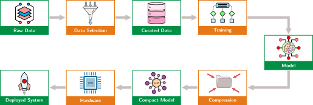</a>
</div>
<figcaption class="quarto-float-caption-bottom quarto-float-caption quarto-float-fig" id="fig-optimization-stack-caption-0ceaefa1-69ba-4598-a22c-09a6ac19f8ca">
Figure&nbsp;10: <strong>Ngăn xếp tối ưu hóa</strong>: Dữ liệu đi qua bước lựa chọn và huấn luyện trước khi mô hình thu được bước vào giai đoạn nén và triển khai. Những thay đổi ở giai đoạn đầu sẽ lan truyền tác động về chất lượng và chi phí xuống các giai đoạn sau, nhưng giảm dữ liệu huấn luyện không tự động làm mô hình hay phần cứng triển khai đơn giản hơn.
</figcaption>
</figure>
</div>
<p>Pipeline trong <a href="#fig-optimization-stack" class="quarto-xref">figure&nbsp;10</a> cho thấy vì sao việc lựa chọn dữ liệu giữ vị trí chiến lược ở đầu ngăn xếp tối ưu hóa. Khi lịch huấn luyện được giữ cố định, giảm 50% tập dữ liệu có thể giảm một nửa khối lượng huấn luyện ở cấp độ mẫu. Tuy nhiên, bản thân việc này không làm thu nhỏ mô hình đã huấn luyện, đơn giản hóa nén, hay nới lỏng yêu cầu về phần cứng phục vụ (serving). Mỗi giai đoạn hạ nguồn sẽ thừa hưởng mọi lợi ích về hiệu quả hoặc tổn thất về chất lượng từ các quyết định ở thượng nguồn, và lựa chọn kém có thể buộc phải bù đắp bằng cách huấn luyện lâu hơn hoặc đơn giản hóa mô hình ít quyết liệt hơn.</p>
<p>Để định lượng hiệu ứng nhân này, cần xác định xem giảm 50% tập dữ liệu có thực sự mang lại 50% tiết kiệm tính toán hay không, hay liệu nó đã vô tình làm giảm chất lượng mô hình theo những cách chỉ bộc lộ khi vận hành thực tế. Trả lời câu hỏi này đòi hỏi một measurement framework chặt chẽ: các chỉ số phải nắm bắt được cả lợi ích về hiệu suất và chi phí về chất lượng của các quyết định lựa chọn dữ liệu.</p>
<div id="quiz-question-sec-data-selection-crosslayer-interactions-1f39" class="callout callout-quiz-question">
<details class="callout-quiz-question fbx-simplebox fbx-default"><summary><strong>Self-Check: Question</strong></summary><div>
<ol type="1">
<li><p>In the D·A·M optimization stack (Data Selection, Algorithm/Model Compression, Machine Hardware Optimization), an ML team achieves a <span class="math inline">\(2\times\)</span> reduction in dataset size via coreset pruning, a <span class="math inline">\(2\times\)</span> reduction in operations per sample via model pruning/quantization, and a <span class="math inline">\(2\times\)</span> increase in hardware arithmetic throughput via kernel optimization. What is the total combined speedup factor for training?</p>
<ol type="a">
<li>An <span class="math inline">\(8\times\)</span> total speedup, because optimizations across distinct layers of the ML systems stack compound multiplicatively (<span class="math inline">\(2 \times 2 \times 2 = 8\)</span>)</li>
<li>A <span class="math inline">\(6\times\)</span> total speedup, because speedup factors add linearly across layers (<span class="math inline">\(2 + 2 + 2 = 6\)</span>)</li>
<li>A <span class="math inline">\(2\times\)</span> total speedup, because the lowest-layer optimization bottleneck dominates all others (Amdahl’s law min-factor)</li>
<li>A <span class="math inline">\(4\times\)</span> total speedup, because data selection cancels out model compression gains</li>
</ol></li>
<li><p>Why are upstream data selection (Workload layer) and downstream model compression (Algorithm layer) fundamentally complementary rather than interchangeable techniques in system design?</p>
<ol type="a">
<li>Model compression can only be applied to computer vision models, whereas data selection is restricted to NLP</li>
<li>Data selection eliminates backward passes entirely, whereas model compression eliminates forward passes</li>
<li>Data selection optimizes inference latency on edge devices, whereas model compression only affects training time</li>
<li>Data selection reduces the total number of training samples processed (<span class="math inline">\(N_{\text{samples}}\)</span>), whereas model compression reduces the compute and memory cost per individual sample forward/backward pass (<span class="math inline">\(O_{\text{sample}}\)</span>)</li>
</ol></li>
<li><p>A training pipeline aggressively reduces dataset size with a <span class="math inline">\(10\times\)</span> coreset. However, the engineering team observes that the end-to-end training job speedup is only <span class="math inline">\(2\times\)</span> instead of the expected <span class="math inline">\(10\times\)</span>. Using systems principles, diagnose the likely bottleneck shift.</p></li>
<li><p>Explain how data selection operates upstream of all algorithm- and hardware-level optimizations in the D·A·M optimization stack.</p></li>
</ol>
<p><a href="#quiz-answer-sec-data-selection-crosslayer-interactions-1f39" class="question-label" onclick="event.preventDefault();document.getElementById('quiz-answer-sec-data-selection-crosslayer-interactions-1f39').scrollIntoView({behavior:'smooth',block:'start'});history.pushState(null,'','#quiz-answer-sec-data-selection-crosslayer-interactions-1f39');">See Answers →</a></p>
</div></details>
</div>
</section>
</section>
<section id="sec-data-selection-measurement-framework-733b" class="level2 page-columns page-full">
<h2 class="anchored" data-anchor-id="sec-data-selection-measurement-framework-733b">Measurement Framework</h2>
<p>Ngăn xếp đa lớp khiến một measurement framework là điều bắt buộc: mọi kỹ thuật lựa chọn dữ liệu đều tuyên bố cải thiện hiệu quả, nhưng chỉ đo lường chặt chẽ mới tách bạch được tiết kiệm thực sự khỏi chi phí bị dịch chuyển hoặc tổn thất chất lượng ẩn. Các chỉ số cốt lõi trong <a href="#sec-data-selection-core-metrics-32e9" class="quarto-xref">section&nbsp;1.11.1</a> liên kết việc giảm số lượng mẫu với độ chính xác, chi phí và phạm vi triển khai, nhờ đó một tập dữ liệu nhỏ hơn được đánh giá dựa trên những gì nó giữ lại, chứ không chỉ dựa trên những gì nó loại bỏ.</p>
<section id="sec-data-selection-core-metrics-32e9" class="level3">
<h3 class="anchored" data-anchor-id="sec-data-selection-core-metrics-32e9">Các chỉ số cốt lõi</h3>
<p>Các chỉ số cốt lõi liên hệ việc giảm số lượng mẫu với chất lượng mô hình, thay vì chỉ báo cáo riêng độ chính xác. Chúng đo lường khả năng học trên mỗi mẫu, hiệu suất trên mỗi dữ liệu và mức độ nén ở độ chính xác mục tiêu.</p>
<section id="hiệu-suất-trên-mỗi-dữ-liệu" class="level4 unnumbered">
<h4 class="unnumbered anchored" data-anchor-id="hiệu-suất-trên-mỗi-dữ-liệu">Hiệu suất trên mỗi dữ liệu</h4>
<p>Chỉ số trực tiếp nhất, <strong>hiệu suất trên mỗi dữ liệu (PPD)</strong>, đo mức tăng độ chính xác trên mỗi mẫu: <span class="math display">\[
\text{PPD}(n) = \frac{\text{Accuracy}(n) - \text{Accuracy}(0)}{n}
\]</span> trong đó <span class="math inline">\(n\)</span> là số lượng mẫu huấn luyện. PPD cao hơn cho thấy mức cải thiện trung bình lớn hơn trên mỗi mẫu trong khoảng thời gian đã nêu. Cần đo hình dạng của đường cong này vì lợi suất giảm dần và thời điểm chúng bắt đầu đều phụ thuộc vào khối lượng công việc (workload).</p>
</section>
<section id="diện-tích-dưới-đường-cong-học-tập" class="level4 unnumbered">
<h4 class="unnumbered anchored" data-anchor-id="diện-tích-dưới-đường-cong-học-tập">Diện tích dưới đường cong học tập</h4>
<p>Thay vì so sánh tại một điểm duy nhất, <strong>diện tích dưới đường cong học tập</strong> (AULC) tích hợp hiệu suất trên tất cả các kích thước tập dữ liệu: <span class="math display">\[
\text{AULC} = \int_0^D \text{Accuracy}(n) \, dn
\]</span> trong đó <span class="math inline">\(n\)</span> là kích thước tập dữ liệu và <span class="math inline">\(D\)</span> là tổng kích thước tập dữ liệu.</p>
<p>Với cùng một chỉ số và cùng phạm vi tích hợp, AULC cao hơn nghĩa là chiến lược đạt hiệu suất tốt hơn với ít mẫu hơn. Khi so sánh, phải dùng cùng giới hạn trên <span class="math inline">\(D\)</span> hoặc chuẩn hóa tích phân.</p>
</section>
<section id="tỷ-lệ-nén-dữ-liệu" class="level4 unnumbered">
<h4 class="unnumbered anchored" data-anchor-id="tỷ-lệ-nén-dữ-liệu">Tỷ lệ nén dữ liệu</h4>
<p>Với các phương pháp coreset, <strong>tỷ lệ nén dữ liệu</strong> (DCR) đo mức độ giảm dữ liệu đạt được ở độ chính xác mục tiêu: <span class="math display">\[
\text{DCR} = \frac{D_{\text{full}}}{D_{\text{coreset}}} \text{ at } \text{Accuracy}_{\text{target}}
\]</span></p>
<p>DCR là 5<span class="math inline">\(\times\)</span> nghĩa là coreset đạt độ chính xác mục tiêu với 20% dữ liệu.</p>
</section>
</section>
<section id="sec-data-selection-computeoptimal-frontier-24ba" class="level3 page-columns page-full">
<h3 class="anchored" data-anchor-id="sec-data-selection-computeoptimal-frontier-24ba">Biên tối ưu tính toán</h3>
<p>Trong khi các chỉ số cốt lõi ở <a href="#sec-data-selection-core-metrics-32e9" class="quarto-xref">section&nbsp;1.11.1</a> dùng để đánh giá từng kỹ thuật riêng lẻ, chúng ta cũng cần một phép chẩn đoán ở cấp cao hơn để kiểm tra xem chiến lược huấn luyện tổng thể bị giới hạn bởi dữ liệu hay bởi năng lực tính toán. Các thí nghiệm về luật tỉ lệ của mạng nơ-ron <span class="citation" data-cites="kaplan2020scaling hoffmann2022chinchilla">(<a href="#ref-kaplan2020scaling" role="doc-biblioref">Kaplan et al. 2020</a>; <a href="#ref-hoffmann2022chinchilla" role="doc-biblioref">Hoffmann et al. 2022</a>)</span> đã khớp các mối quan hệ theo luật lũy thừa cho những họ mô hình, tập dữ liệu và phạm vi tính toán cụ thể. Các phép quét có kiểm soát có thể dùng các mối quan hệ đã khớp đó để so sánh cách phân bổ mô hình và dữ liệu, nhưng không có một tỉ lệ duy nhất nào có thể chẩn đoán mọi lần chạy huấn luyện.</p>
<div class="no-row-height column-margin column-container"><div id="fn33"><p><sup>33</sup>&nbsp;<strong>Chinchilla</strong>: Chinchilla là một mô hình ngôn ngữ 70 tỷ tham số, được huấn luyện trên 1,4 nghìn tỷ token. Trong các thí nghiệm do <span class="citation" data-cites="hoffmann2022chinchilla">Hoffmann et al. (<a href="#ref-hoffmann2022chinchilla" role="doc-biblioref">2022</a>)</span> báo cáo, nó vượt trội hơn GPT-3 (lớn hơn) trên hầu hết các tác vụ được đánh giá, với ngân sách tính toán huấn luyện tương đương. Phép phân bổ tối ưu theo tính toán được khớp trong nghiên cứu này cho thấy số tham số và số token được tăng với tốc độ gần như ngang nhau trong phạm vi thí nghiệm; đây không phải là một chỉ dẫn phổ quát áp dụng cho mọi kiến trúc, tập dữ liệu hoặc quy trình huấn luyện.</p><div id="ref-hoffmann2022chinchilla" class="csl-entry" role="listitem">
Hoffmann, Jordan, Sebastian Borgeaud, Arthur Mensch, Elena Buchatskaya, Trevor Cai, Eliza Rutherford, Diego de Las Casas, et al. 2022. <span>“Training Compute-Optimal Large Language Models.”</span> <em>Advances in Neural Information Processing Systems (NeurIPS)</em> 35: 30016–30. https://doi.org/10.52202/068431-2176.
</div></div></div><p>Nghiên cứu Chinchilla<a href="#fn33" class="footnote-ref" id="fnref33" role="doc-noteref"><sup>33</sup></a> <span class="citation" data-cites="hoffmann2022chinchilla">(<a href="#ref-hoffmann2022chinchilla" role="doc-biblioref">Hoffmann et al. 2022</a>)</span> đã khớp một cân bằng tối ưu theo tính toán giữa kích thước mô hình và dữ liệu huấn luyện trong phạm vi thí nghiệm của họ. Các cách phân bổ lệch khỏi cân bằng đã khớp đó sử dụng ngân sách tính toán của nghiên cứu kém hiệu quả hơn.</p>
<p>Sự cân bằng tối ưu xác định một <strong>biên tối ưu tính toán</strong>: mức hiệu suất tốt nhất có thể đạt được ở mỗi ngân sách tính toán khi dữ liệu và kích thước mô hình được cân bằng hợp lý. <a href="#fig-compute-optimal-frontier" class="quarto-xref">Figure&nbsp;11</a> phác thảo phép chẩn đoán này như một biên khái niệm, không phải kết quả khớp từ Chinchilla.</p>
<div id="fig-compute-optimal-frontier" class="quarto-float quarto-figure quarto-figure-center anchored" alt="Biểu đồ bán log với compute huấn luyện đã chuẩn hóa từ $10^0$ đến $10^3$ trên trục hoành (logarit) và hiệu suất mô hình từ 50 đến 100 trên trục tung. Một đường biên tối ưu tính toán màu xanh lá cây bao quanh vùng kém tối ưu được tô xám. Các điểm màu cam (thiếu dữ liệu) và đỏ (thiếu tính toán) nằm dưới đường cong có các mũi tên nét đứt lần lượt ghi 'Lựa chọn dữ liệu tốt hơn' và 'Huấn luyện thêm'; một điểm Tối ưu màu tím nằm trên đường cong." data-fig-env="figure" data-fig-pos="H">
<figure class="quarto-float quarto-float-fig figure">
<div aria-describedby="fig-compute-optimal-frontier-caption-0ceaefa1-69ba-4598-a22c-09a6ac19f8ca">
<div id="2314c89e" class="cell" data-execution_count="24">
<div class="cell-output cell-output-display">
<div>
<figure class="figure">
<p><a href="09_data_selection_files/figure-html/cell-25-output-1.png" class="lightbox" data-gallery="quarto-lightbox-gallery-16" title="Figure&nbsp;11: Biên tối ưu tính toán minh họa: Đường cong màu xanh lá cây là một biên khái niệm dựa trên compute đã chuẩn hóa, không phải kết quả khớp từ Chinchilla. Các điểm nằm bên dưới đường cong này minh họa những phép phân bổ mà một phép quét có kiểm soát theo kích thước mô hình và số token có thể xác định là bị giới hạn bởi dữ liệu hoặc tính toán.">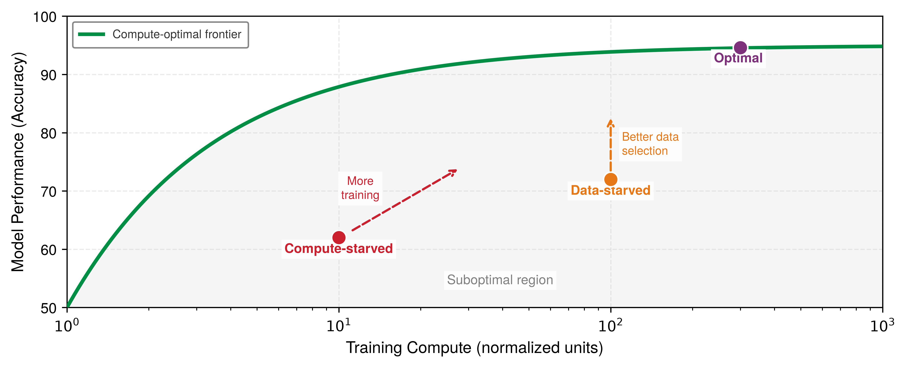</a></p>
</figure>
</div>
</div>
</div>
</div>
<figcaption class="quarto-float-caption-bottom quarto-float-caption quarto-float-fig" id="fig-compute-optimal-frontier-caption-0ceaefa1-69ba-4598-a22c-09a6ac19f8ca">
Figure&nbsp;11: <strong>Biên tối ưu tính toán minh họa</strong>: Đường cong màu xanh lá cây là một biên khái niệm dựa trên compute đã chuẩn hóa, không phải kết quả khớp từ Chinchilla. Các điểm nằm bên dưới đường cong này minh họa những phép phân bổ mà một phép quét có kiểm soát theo kích thước mô hình và số token có thể xác định là bị giới hạn bởi dữ liệu hoặc tính toán.
</figcaption>
</figure>
</div>
<p>Khi so sánh với một đường biên được khớp từ các phép quét có kiểm soát, vị trí của mỗi điểm có thể gợi ý thí nghiệm tiếp theo. Một phép phân bổ bị giới hạn bởi dữ liệu sẽ thúc đẩy kiểm tra chất lượng, độ bao phủ hoặc cách chọn tập dữ liệu; một phép phân bổ bị giới hạn bởi tính toán sẽ thúc đẩy kiểm tra thông lượng hiệu quả, thời lượng, hoặc kích thước mô hình. Các điểm mang tính khái niệm trong <a href="#fig-compute-optimal-frontier" class="quarto-xref">figure&nbsp;11</a> không tự chẩn đoán được một lần chạy thực tế, và các điểm gần một đường biên đã khớp vẫn phụ thuộc vào họ mô hình, dữ liệu, mục tiêu, và dải compute dùng để ước tính đường biên đó.</p>
<section id="diễn-giải-kết-quả-chinchilla" class="level4 unnumbered page-columns page-full">
<h4 class="unnumbered anchored" data-anchor-id="diễn-giải-kết-quả-chinchilla">Diễn giải kết quả Chinchilla</h4>
<p>Trong miền Chinchilla đã được khớp thực nghiệm, số tham số mô hình tối ưu theo chi phí tính toán và số token huấn luyện tăng lên với tốc độ xấp xỉ ngang nhau.<a href="#fn34" class="footnote-ref" id="fnref34" role="doc-noteref"><sup>34</sup></a> Kết hợp kết quả thực nghiệm đó với phép xấp xỉ chi phí tính toán của transformer dày đặc, ta suy ra <span class="math inline">\(D_{\text{opt}} \propto \sqrt{C}\)</span>. Vì vậy, khi tăng gấp đôi chi phí tính toán, số token sẽ tăng thêm khoảng <span class="math inline">\(\sqrt{2} - 1\)</span>, tức 41.4 percent, theo các giả định này. Tỷ lệ 20 token trên mỗi tham số thường được trích dẫn như một mốc tham chiếu hữu ích từ nghiên cứu đó, chứ không phải một tối ưu phổ quát.</p>
<div class="no-row-height column-margin column-container"><div id="fn34"><p><sup>34</sup>&nbsp;<strong>Token trên mỗi tham số</strong>: Tỷ lệ <span class="math inline">\(D/P\)</span> so sánh số token huấn luyện với số tham số mô hình; GPT-3 sử dụng khoảng 1.7 token trên mỗi tham số <span class="citation" data-cites="brown2020language">(<a href="#ref-brown2020language" role="doc-biblioref">Brown et al. 2020</a>)</span>, trong khi Llama 2 70B sử dụng khoảng 28.6 <span class="citation" data-cites="touvron2023llama2">(<a href="#ref-touvron2023llama2" role="doc-biblioref">Touvron et al. 2023</a>)</span>. Các tỷ lệ mang tính mô tả này không cho biết liệu một trong hai lần chạy có tối ưu về chi phí tính toán dưới một kiến trúc, tập dữ liệu, mục tiêu, hoặc ngân sách phần cứng khác hay không. Để chẩn đoán điều đó, cần thực hiện các thử nghiệm quét có kiểm soát về kích thước mô hình và số token.</p><div id="ref-brown2020language" class="csl-entry" role="listitem">
Brown, Tom B., Benjamin Mann, Nick Ryder, Melanie Subbiah, Jared Kaplan, Prafulla Dhariwal, Arvind Neelakantan, et al. 2020. <span>“Language Models Are Few-Shot Learners.”</span> <em>Advances in Neural Information Processing Systems</em> 33: 1877–901. https://doi.org/10.48550/arxiv.2005.14165.
</div><div id="ref-touvron2023llama2" class="csl-entry" role="listitem">
Touvron, Hugo, Louis Martin, Kevin Stone, Peter Albert, Amjad Almahairi, Yasmine Babaei, Nikolay Bashlykov, et al. 2023. <span>“<span>Llama</span> 2: <span>Open</span> Foundation and Fine-Tuned Chat Models.”</span> <em>arXiv Preprint arXiv:2307.09288</em>.
</div></div></div></section>
<section id="áp-dụng-chẩn-đoán" class="level4 unnumbered page-columns page-full">
<h4 class="unnumbered anchored" data-anchor-id="áp-dụng-chẩn-đoán">Áp dụng chẩn đoán</h4>
<p>Nếu một lần huấn luyện kém hơn kỳ vọng, kéo dài cùng một lần chạy có thể cho thấy các bước tối ưu hóa bổ sung còn hữu ích hay không, nhưng một điểm bão hòa tự thân không cho biết có thiếu dữ liệu. Lịch tốc độ học, giới hạn của thuật toán tối ưu, dung lượng mô hình và chất lượng dữ liệu đều có thể tạo ra bão hòa. Một chẩn đoán đáng tin cậy cần so sánh các lần chạy được kiểm soát, trong đó thay đổi kích thước mô hình, số token và phân bổ chi phí tính toán, đồng thời giữ cố định giao thức đánh giá.</p>
<p>Trong <a href="#fig-ppd-curve" class="quarto-xref">figure&nbsp;12</a>, hai đường cong tách nhau: một chiến lược chọn mẫu hiệu quả về dữ liệu (màu xanh lam) đạt đến điểm bão hòa hiệu suất với ít mẫu hơn so với lấy mẫu ngẫu nhiên (màu xám). Khoảng cách theo chiều ngang thể hiện mức giảm số mẫu và có thể chuyển thành tiết kiệm chi phí tính toán nếu khối lượng công việc trên mỗi mẫu và lịch huấn luyện giữ cố định; khoảng cách theo chiều dọc, được đánh dấu bằng mũi tên đỏ, thể hiện mức hiệu suất tăng thêm tại một kích thước tập dữ liệu cố định.</p>
<div id="fig-ppd-curve" class="quarto-float quarto-figure quarto-figure-center anchored" alt="Biểu đồ đường với Kích thước tập dữ liệu (% tổng) trên trục hoành (x) và Độ chính xác mô hình (%) trên trục tung (y). Đường nét đứt màu xám (Random Sampling) tăng dần, trong khi đường màu xanh lam (Efficient Selection) tăng dốc hơn và chạm cùng mức bão hòa sớm hơn; vùng giữa hai đường được tô xanh nhạt. Một mũi tên hai chiều màu đỏ theo chiều dọc được gắn nhãn 'Khoảng cách hiệu suất (cùng ngân sách dữ liệu)'." data-fig-env="figure" data-fig-pos="htb">
<figure class="quarto-float quarto-float-fig figure">
<div aria-describedby="fig-ppd-curve-caption-0ceaefa1-69ba-4598-a22c-09a6ac19f8ca">
<div id="f5b23925" class="cell" data-execution_count="26">
<div class="cell-output cell-output-display">
<div>
<figure class="figure">
<p><a href="09_data_selection_files/figure-html/cell-27-output-1.png" class="lightbox" data-gallery="quarto-lightbox-gallery-17" title="Figure&nbsp;12: Minh họa lợi ích giảm dần của dữ liệu: Đường cong hiệu quả dữ liệu tổng hợp (màu xanh lam) đạt cùng mức bão hòa với ít mẫu hơn so với lấy mẫu ngẫu nhiên (màu xám). Mũi tên đỏ theo chiều dọc đánh dấu khoảng cách hiệu suất được mô hình hóa tại một kích thước tập dữ liệu cố định; các đường cong đo đạc thực tế không nhất thiết có hình dạng này.">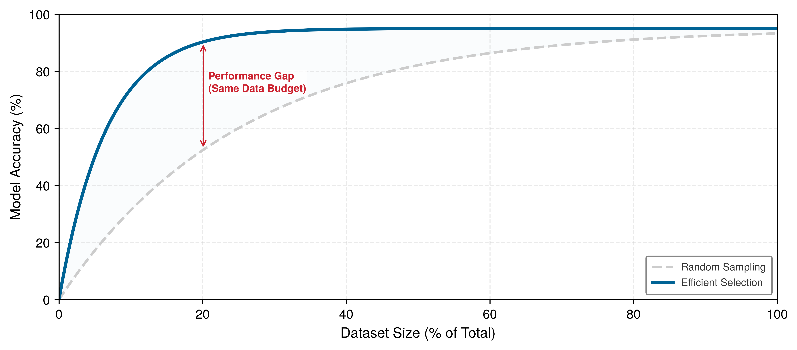</a></p>
</figure>
</div>
</div>
</div>
</div>
<figcaption class="quarto-float-caption-bottom quarto-float-caption quarto-float-fig" id="fig-ppd-curve-caption-0ceaefa1-69ba-4598-a22c-09a6ac19f8ca">
Figure&nbsp;12: <strong>Minh họa lợi ích giảm dần của dữ liệu</strong>: Đường cong hiệu quả dữ liệu tổng hợp (màu xanh lam) đạt cùng mức bão hòa với ít mẫu hơn so với lấy mẫu ngẫu nhiên (màu xám). Mũi tên đỏ theo chiều dọc đánh dấu khoảng cách hiệu suất được mô hình hóa tại một kích thước tập dữ liệu cố định; các đường cong đo đạc thực tế không nhất thiết có hình dạng này.
</figcaption>
</figure>
</div>
<p>Với người thực hành, các chỉ số trong phần này trả lời câu hỏi rất thực tế: khi nào nên dừng thu thập dữ liệu để chuyển sang tuyển chọn, và khi nào việc thêm mẫu chỉ lãng phí tài nguyên tính toán thay vì cải thiện độ chính xác. Tuy nhiên, biết rằng một chiến lược hiệu quả không đồng nghĩa với việc xác nhận rằng tập dữ liệu đã được tuyển chọn vẫn giữ được chất lượng mô hình.</p>
<p>Các kỹ thuật chọn dữ liệu ngầm xếp hạng giá trị của từng mẫu, và để xác nhận rằng một tập dữ liệu đã tuyển chọn vẫn giữ được chất lượng mô hình, cần benchmark có hệ thống theo ba chiều. Các chỉ số về độ bao phủ xác nhận rằng chọn tập lõi vẫn bảo toàn tính đại diện cho các lớp và các nhóm nhân khẩu học. Các chỉ số căn chỉnh phân phối (như KL divergence và population stability index, được định nghĩa tại <strong><a href="../backmatter/appendix_data.html#sec-appdx-data-foundations-measuring-drift-divergence-a6dd">Đo lường sự trôi dạt (phân kỳ)</a></strong>) phát hiện liệu tập huấn luyện đã tuyển chọn có lệch khỏi phân phối ở môi trường triển khai hay không. Các chỉ số chất lượng nhãn (inter-annotator agreement, confident learning) xác nhận rằng active learning không đưa vào các lỗi gán nhãn mang tính hệ thống. Việc giảm 50% tập dữ liệu chỉ có ý nghĩa nếu benchmark xác nhận mô hình vẫn đạt mục tiêu về độ chính xác, hiệu chỉnh và độ bền vững. <strong><a href="../12_benchmarking/12_benchmarking.html#sec-benchmarking">Benchmarking</a></strong> sau đó khái quát các ý này thành các giao thức đánh giá mô hình và dữ liệu rộng hơn; ở đây, ý hẹp hơn: một tập dữ liệu đã tuyển chọn phải được kiểm chứng đối với phân phối của tác vụ, chứ không chỉ dựa vào tỷ lệ giảm kích thước.</p>
<p>Bản thân mục tiêu xác thực cũng có thể không đáng tin cậy. Một nghiên cứu tái lập được trích dẫn nhiều đã cho thấy độ chính xác benchmark có thể đánh giá quá cao những gì một mô hình đã học. Đây là lý do tại sao tập đánh giá cũng cần được soi xét kỹ như tập huấn luyện đã được tuyển chọn.</p>
<div id="exmp-data-selection-benchmark-replication-gap" class="callout callout-example" title="Khoảng cách tái lập benchmark">
<p></p><details class="callout-example fbx-simplebox fbx-default" open=""><summary><strong>Example 1.7: Khoảng cách tái lập benchmark</strong></summary><div><strong>Tình huống</strong>: Khi được đánh giá trên các tập kiểm thử mới thu thập, các bộ phân loại đã ghi nhận mức giảm độ chính xác từ 3 đến 15 điểm phần trăm trên CIFAR-10 và từ 11 đến 14 điểm trên ImageNet <span class="citation" data-cites="recht2019imagenet">(<a href="#ref-recht2019imagenet" role="doc-biblioref">Recht et al. 2019</a>)</span>.<p></p>
<p><strong>Chẩn đoán</strong>: Tập dữ liệu được tái lập chứa các hình ảnh khó hơn một chút so với các tập kiểm thử gốc. Nghiên cứu cho thấy tính thích nghi theo benchmark không lý giải được khoảng cách này, dù việc lặp lại sử dụng một tập kiểm thử cố định vẫn là rủi ro chung trong đánh giá.</p>
<p><strong>Bài học về hệ thống</strong>: Cách xây dựng tập đánh giá ảnh hưởng đến khả năng tổng quát hóa đo được. Các pipeline lựa chọn dữ liệu nên xác thực các tập con đã được tuyển chọn bằng các tập kiểm thử được thu thập độc lập và phù hợp với môi trường triển khai, thay vì chỉ tin vào một benchmark đã bị dùng đi dùng lại quá lâu.</p>
</div></details>
</div>
<div class="no-row-height column-margin column-container"><div id="ref-recht2019imagenet" class="csl-entry" role="listitem">
Recht, Benjamin, Rebecca Roelofs, Ludwig Schmidt, and Vaishaal Shankar. 2019. <span>“Do <span>ImageNet</span> Classifiers Generalize to <span>ImageNet</span>?”</span> <em>Proceedings of the 36th International Conference on Machine Learning (ICML)</em>, 5389–400.
</div></div><p>Bài học này áp dụng trực tiếp cho lựa chọn dữ liệu: lợi ích hiệu quả đo trên một benchmark duy nhất có thể tan biến khi áp dụng cho dữ liệu mới thu thập. Vì vậy, một tập con được tuyển chọn phải trụ vững trên nhiều phân phối kiểm thử độc lập trước khi có thể tin cậy vào tỷ lệ giảm kích thước của nó.</p>
<div id="lhs-data-selection-lighthouse-data-selection" class="callout callout-lighthouse" title="Lựa chọn dữ liệu Lighthouse">
<p></p><details class="callout-lighthouse fbx-simplebox fbx-default" open=""><summary><strong>Lighthouse 1.3: Lựa chọn dữ liệu Lighthouse</strong></summary><div>Các nguyên tắc lựa chọn dữ liệu áp dụng cho cả năm mô hình lighthouse, nhưng ràng buộc chính sẽ quyết định kỹ thuật dùng. <a href="#tbl-data-selection-lighthouse-priorities" class="quarto-xref">Table&nbsp;21</a> gán cho mỗi khối lượng công việc (workload) một mức độ ưu tiên: ví dụ, ResNet-50, vốn bị giới hạn bởi tính toán, hưởng lợi từ chọn coreset; GPT-2/Llama, bị giới hạn bởi bộ nhớ, hưởng lợi từ loại bỏ dữ liệu trùng lặp; còn mô hình KWS nhỏ thì hưởng lợi từ tăng cường và tổng hợp dữ liệu.<p></p>
<div id="tbl-data-selection-lighthouse-priorities" class="quarto-float quarto-figure quarto-figure-center anchored">
<figure class="quarto-float quarto-float-tbl figure">
<figcaption class="quarto-float-caption-top quarto-float-caption quarto-float-tbl" id="tbl-data-selection-lighthouse-priorities-caption-0ceaefa1-69ba-4598-a22c-09a6ac19f8ca">
Table&nbsp;21: <strong>Ưu tiên lựa chọn dữ liệu theo Lighthouse</strong>: Nút thắt chính và mức độ ưu tiên lựa chọn dữ liệu được đề xuất cho mỗi khối lượng công việc (workload) lighthouse. Sự kết hợp này gợi ý một giả thuyết cần được kiểm tra; chỉ riêng ràng buộc tài nguyên chính không đảm bảo rằng một kỹ thuật sẽ hiệu quả.
</figcaption>
<div aria-describedby="tbl-data-selection-lighthouse-priorities-caption-0ceaefa1-69ba-4598-a22c-09a6ac19f8ca">
<table class="caption-top table">
<colgroup>
<col style="width: 17%">
<col style="width: 18%">
<col style="width: 64%">
</colgroup>
<thead>
<tr class="header">
<th style="text-align: left;"><strong>Hải đăng</strong></th>
<th style="text-align: left;"><strong>Nút thắt cổ chai (Bottleneck) chính</strong></th>
<th style="text-align: left;"><strong>Ưu tiên lựa chọn dữ liệu</strong></th>
</tr>
</thead>
<tbody>
<tr class="odd">
<td style="text-align: left;"><strong>ResNet-50</strong></td>
<td style="text-align: left;">Tính toán</td>
<td style="text-align: left;">Lựa chọn coreset trực tiếp giảm FLOPs huấn luyện</td>
</tr>
<tr class="even">
<td style="text-align: left;"><strong>GPT-2/Llama</strong></td>
<td style="text-align: left;">Băng thông bộ nhớ</td>
<td style="text-align: left;">Loại bỏ trùng lặp giảm kích thước kho ngữ liệu; curriculum learning cải thiện hiệu quả token</td>
</tr>
<tr class="odd">
<td style="text-align: left;"><strong>MobileNetV2</strong></td>
<td style="text-align: left;">Độ trễ/Công suất</td>
<td style="text-align: left;">Xác thực augmentation so với mô hình mục tiêu và các tính bất biến khi triển khai</td>
</tr>
<tr class="even">
<td style="text-align: left;"><strong>DLRM</strong></td>
<td style="text-align: left;">Dung lượng bộ nhớ</td>
<td style="text-align: left;">Loại bỏ trùng lặp tương tác và tỉa (pruning) embedding giảm kích thước bảng</td>
</tr>
<tr class="odd">
<td style="text-align: left;"><strong>Phát hiện từ khóa (Keyword Spotting)</strong></td>
<td style="text-align: left;">Các ràng buộc cực đoan</td>
<td style="text-align: left;">Augmentation và tổng hợp tạo ra các tập dữ liệu từ các hạt giống tối thiểu</td>
</tr>
</tbody>
</table>
</div>
</figure>
</div>
<p>Với các mô hình này, lựa chọn dữ liệu không phải một kỹ thuật đơn lẻ mà là tối ưu hóa hệ thống, được điều chỉnh theo tài nguyên nào đang bị hạn chế nhất.</p>
</div></details>
</div>
<p>Các công cụ đo lường và các ví dụ lighthouse cho thấy lựa chọn dữ liệu, khi áp dụng đúng, có thể đạt được điều gì. Tuy vậy, các kỹ thuật này đi kèm những đánh đổi phản trực giác, và người thực hành thường rơi vào những cái bẫy dễ đoán trước.</p>
<div id="quiz-question-sec-data-selection-measurement-framework-733b" class="callout callout-quiz-question">
<details class="callout-quiz-question fbx-simplebox fbx-default"><summary><strong>Self-Check: Question</strong></summary><div>
<ol type="1">
<li><p>Match the data-selection efficiency metric with its precise definition: A team wants to measure the ratio of full dataset size to selected subset size (<span class="math inline">\(\text{DCR} = |D| / |S|\)</span>), and the ratio of final accuracy achieved on the subset versus the full dataset (<span class="math inline">\(\text{ARR} = \text{Acc}(S) / \text{Acc}(D)\)</span>). What do DCR and ARR stand for?</p>
<ol type="a">
<li>Data Curation Rate and Accuracy Reduction Ratio</li>
<li>Data Compression Ratio and Accuracy Retention Ratio</li>
<li>Dynamic Checkpoint Rate and Active Retention Rate</li>
<li>Data Convergence Ratio and Amortized Risk Ratio</li>
</ol></li>
<li><p>An ML systems diagnostic plot maps normalized training compute (FLOPs) on the horizontal log-axis against model performance on the vertical axis. A training run with 10M parameters sits significantly below the green compute-optimal frontier, and increasing token count yields no accuracy improvement while scaling model parameters to 100M immediately restores optimal frontier scaling. What was the diagnosis of the original operating point?</p>
<ol type="a">
<li>Data-starved regime</li>
<li>I/O bandwidth-saturated regime</li>
<li>Compute-starved (capacity-limited) regime</li>
<li>Over-echoing regime</li>
</ol></li>
<li><p>Why is Area Under the Learning Curve (AULC) a more informative metric than single-point final validation accuracy when evaluating dynamic data selection and curriculum learning algorithms?</p></li>
<li><p>True or False: If two training runs (Run A on a raw dataset and Run B on a coreset) reach the exact same validation loss plateau, they must have processed identical amounts of informative tokens.</p></li>
<li><p>The Pareto frontier that defines the maximum achievable model accuracy or minimum loss for every given training compute budget (FLOPs) under balanced parameter and token allocation is known as the compute-____ frontier.</p></li>
</ol>
<p><a href="#quiz-answer-sec-data-selection-measurement-framework-733b" class="question-label" onclick="event.preventDefault();document.getElementById('quiz-answer-sec-data-selection-measurement-framework-733b').scrollIntoView({behavior:'smooth',block:'start'});history.pushState(null,'','#quiz-answer-sec-data-selection-measurement-framework-733b');">See Answers →</a></p>
</div></details>
</div>
</section>
</section>
</section>
<section id="sec-data-selection-fallacies-pitfalls-f4d0" class="level2 page-columns page-full">
<h2 class="anchored" data-anchor-id="sec-data-selection-fallacies-pitfalls-f4d0">Ngụy biện và Cạm bẫy</h2>
<p>Lựa chọn dữ liệu có các lợi suất giảm dần mang tính phản trực giác, đi ngược lại trực giác “càng nhiều càng tốt” trong machine learning truyền thống. Các lỗi sau thuộc ba nhóm: các ngụy biện về mặt khái niệm về những gì lựa chọn dữ liệu có thể đạt được; các cạm bẫy triển khai phát sinh khi chiến lược đúng đắn chạm vào thực tế kỹ thuật; và các lỗi chuyển giao xảy ra khi kết quả benchmark được áp dụng một cách thiếu cân nhắc sang các miền mới.</p>
<div class="fallacy-pitfall">
<p><strong>Ngụy biện</strong>: <em>Dữ liệu là dầu mỏ mới, vì vậy càng nhiều càng tốt.</em></p>
<p>Nhiều dữ liệu hơn không đồng nghĩa với mức tăng độ chính xác tỷ lệ thuận, vì các đường cong học tập thường cho thấy lợi suất giảm dần. So sánh số trong phần này chỉ mang tính minh họa, không phải số đo thực tế: giả định chuyển từ 1M lên 10M mẫu chỉ thu được 4 percentage points độ chính xác tăng thêm. <a href="#tbl-scaling-asymmetry" class="quarto-xref">Table&nbsp;1</a> cũng dùng các tốc độ tăng trưởng theo kịch bản. Các nhóm nên tự đo đường cong học tập và chi phí tính toán biên cho dữ liệu của mình, thay vì suy diễn từ các giá trị ví dụ này.</p>
</div>
<div class="fallacy-pitfall page-columns page-full">
<p><strong>Cạm bẫy</strong>: <em>Thay việc kiểm định trên dữ liệu thực bằng việc chỉ dùng dữ liệu huấn luyện tổng hợp.</em></p>
<p>Các kỹ sư thường cho rằng các mô hình sinh (generative models) có thể thay thế việc thu thập dữ liệu bằng vô số ví dụ được tạo ra với chi phí cận biên rất thấp. Việc chỉ huấn luyện bằng dữ liệu tổng hợp có thể thất bại theo hai cơ chế. Thứ nhất, <a href="#sec-data-selection-bridging-domain-gap-100b" class="quarto-xref">section&nbsp;1.5.3</a> và <a href="#tbl-synthetic-mix" class="quarto-xref">table&nbsp;9</a> cho thấy vấn đề chênh lệch miền (domain gap): dữ liệu được tạo có thể lệch khỏi phân phối thực tế khi triển khai, khiến ranh giới quyết định mà mô hình học được (minh họa trong <a href="#fig-domain-gap" class="quarto-xref">figure&nbsp;7</a>) phân loại sai đầu vào ngoài đời thực. Thứ hai, huấn luyện lặp trên dữ liệu do chính mô hình tạo ra có thể dẫn đến hiện tượng sụp đổ mô hình (model collapse) <span class="citation" data-cites="shumailov2024">(<a href="#ref-shumailov2024" role="doc-biblioref">Shumailov et al. 2024</a>)</span>: trong ví dụ minh họa này, độ chính xác giảm từ 95 percent xuống 78 percent sau năm thế hệ, tức giảm 17 percentage-point điểm phần trăm. Khoảng tỷ lệ dữ liệu tổng hợp tối ưu minh họa (50–80 percent) phụ thuộc vào khối lượng công việc (workload) cụ thể và phải được kiểm chứng bằng dữ liệu triển khai thực tế.</p>
<div class="no-row-height column-margin column-container"></div></div>

<div class="no-row-height column-margin column-container"><div class="">
<p><a href="images/svg/vol1_data_selection_margin_004.svg" class="lightbox" data-gallery="quarto-lightbox-gallery-18">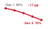</a></p>
<p><em>Việc huấn luyện lặp đi lặp lại bằng dữ liệu tổng hợp làm giảm dần độ chính xác qua các thế hệ.</em></p>
</div></div><div class="fallacy-pitfall">
<p><strong>Ngụy biện</strong>: <em>Lựa chọn dữ liệu chỉ đơn thuần là làm sạch dữ liệu.</em></p>
<p>Các kỹ sư đôi khi nhầm lẫn giữa chất lượng dữ liệu (bao gồm loại bỏ lỗi) và giá trị của dữ liệu đối với một tác vụ và quy trình huấn luyện cụ thể. Hình <a href="#fig-coreset-selection" class="quarto-xref">Figure&nbsp;3</a> minh họa một chiến lược dựa trên độ không chắc chắn, trong khi <a href="#sec-data-selection-coreset-selection-algorithms-2c74" class="quarto-xref">section&nbsp;1.2.2</a> cũng trình bày các mục tiêu hình học. Khác biệt ICR 1.8× trong kịch bản này là một trường hợp minh họa, không phải kết quả tổng quát cho EL2N hay GraNd. Làm sạch nhằm xử lý khiếm khuyết dữ liệu; còn lựa chọn dữ liệu đánh giá giá trị học tập và chi phí của các ví dụ được giữ lại.</p>
</div>
<div class="fallacy-pitfall">
<p><strong>Cạm bẫy</strong>: <em>Coi lựa chọn dữ liệu chỉ là một chiến thuật dựa vào ngân sách.</em></p>
<p>Người thực hành có thể xem việc chọn lọc dữ liệu chỉ liên quan đến TinyML hoặc các nhóm bị giới hạn ngân sách. Thực ra, nó áp dụng ở mọi nơi mà chất lượng của các ví dụ, chứ không phải khối lượng dữ liệu thô, mới là yếu tố hạn chế việc học. Một mức tăng hiệu quả 10 percent trong một lần chạy huấn luyện tốn $100M sẽ tiết kiệm $10M theo các giả định của kịch bản này. Bức tường dữ liệu (<strong><a href="09_data_selection.html#fig-running-out-of-human-data">Tăng trưởng tập dữ liệu tiếp cận giới hạn</a></strong>) đặc biệt dễ thấy ở quy mô lớn, khi năng lực tính toán vượt xa lượng dữ liệu có thể truy cập, hợp pháp và liên quan đến mục tiêu. <a href="#sec-data-selection-amortization-across-training-runs-f6b8" class="quarto-xref">Section&nbsp;1.8.4</a> cho thấy vì sao việc tái sử dụng có thể khiến hạ tầng chọn lọc trở nên kinh tế, ngay cả với các nhóm được tài trợ tốt.</p>
<p>Những ngộ nhận về khái niệm thường dẫn đến các chiến lược sai lệch. Gây hại không kém là những cạm bẫy triển khai nảy sinh khi chiến lược đúng phải đối mặt với hiện thực kỹ thuật lộn xộn.</p>
</div>
<div class="fallacy-pitfall">
<p><strong>Ngụy biện</strong>: <em>Chi phí chọn lọc quá nhỏ để làm thay đổi hiệu quả kinh tế của quá trình huấn luyện.</em></p>
<p>Xét một kịch bản: toàn bộ lần chạy mất 8 hours, còn huấn luyện trên coreset mất 2-hour, nên chi phí chọn lọc phải được bù từ số giờ tiết kiệm. Nếu một thuật toán coreset phức tạp cần 10 hours để chọn lọc, thì chi phí này bằng 5× lần thời gian chạy huấn luyện trên coreset mà nó cho phép, và còn vượt cả thời gian của lần chạy đầy đủ vốn muốn tránh, dẫn đến ROI âm. <a href="#eq-selection-inequality" class="quarto-xref">Equation&nbsp;2</a> xác định ranh giới. Hãy dùng các mô hình proxy gọn nhẹ hoặc embeddings đã được cache khi chúng vẫn giữ được chất lượng chọn lọc. Trong so sánh minh họa, việc chấm điểm EL2N dựa trên proxy hoàn tất trong 30 minutes, tức 6.2 percent so với mốc lần chạy đầy đủ, và thỏa mãn bất đẳng thức.</p>
</div>
<div class="fallacy-pitfall">
<p><strong>Cạm bẫy</strong>: <em>Tỉa (pruning) các lớp hiếm đến mức chúng biến mất hoàn toàn.</em></p>
<p>Việc chọn lọc quá tay mà không có ràng buộc theo nhóm có thể loại bỏ các lớp hiếm, vì mục tiêu tối ưu hóa theo tổn thất trung bình thường gán trọng số thấp cho chúng. Trong một tập dữ liệu 1M với 0.1 percent mẫu thuộc lớp hiếm (1,000 ví dụ), một tập con 10 percent không phân tầng chỉ kỳ vọng giữ lại 100 ví dụ như vậy, thấp hơn mục tiêu 150 mẫu của kịch bản. <strong>Importance sampling</strong> có thể gán lại trọng số cho các mẫu hiếm, nhưng trọng số lớn có thể làm tăng phương sai của gradient. <a href="#sec-data-selection-coreset-selection-algorithms-2c74" class="quarto-xref">Section&nbsp;1.2.2</a> vì vậy khuyến nghị đảm bảo số lượng tối thiểu theo lớp hoặc theo các phân đoạn liên quan đến triển khai trước khi tối ưu hóa phần ngân sách chọn lọc còn lại.</p>
</div>
<div class="fallacy-pitfall page-columns page-full">
<p><strong>Ngụy biện</strong>: <em>Việc loại bỏ trùng lặp dữ liệu huấn luyện là đủ để làm cho đánh giá đáng tin cậy.</em></p>
<p>Một số tập dữ liệu mô hình ngôn ngữ tiêu chuẩn có trùng lặp train-test ở mức đo được; một nghiên cứu về loại bỏ trùng lặp cho thấy hơn 4% ví dụ trong tập xác thực của các tập dữ liệu được đánh giá bị ảnh hưởng <span class="citation" data-cites="lee2022">(<a href="#ref-lee2022" role="doc-biblioref">Lee et al. 2022</a>)</span>. Vì vậy, chỉ khử trùng lặp dữ liệu huấn luyện là chưa đủ: các tập đánh giá cũng phải được đối chiếu với kho dữ liệu huấn luyện. Điều này mở rộng nguyên tắc hiệu chỉnh ngưỡng trong <a href="#sec-data-selection-data-deduplication-6c20" class="quarto-xref">section&nbsp;1.2.3</a> sang toàn bộ các phần tách của tập dữ liệu. Các nhóm nên kiểm chứng tác động vì cả ngưỡng gần trùng lặp và phân bố theo miền đều quan trọng.</p>
<div class="no-row-height column-margin column-container"><div id="ref-lee2022" class="csl-entry" role="listitem">
Lee, Katherine, Daphne Ippolito, Andrew Nystrom, Chiyuan Zhang, Douglas Eck, Chris Callison-Burch, and Nicholas Carlini. 2022. <span>“Deduplicating Training Data Makes Language Models Better.”</span> <em>Proceedings of the 60th Annual Meeting of the Association for Computational Linguistics (Volume 1: Long Papers)</em>, 8424–45. https://doi.org/10.18653/v1/2022.acl-long.577.
</div></div></div>
<div class="fallacy-pitfall">
<p><strong>Cạm bẫy</strong>: <em>Học chủ động mà không xem xét độ trễ chú thích.</em></p>
<p>Các phân tích học chủ động thường trừu tượng hóa và bỏ qua thời gian phản hồi của oracle. Trong các quy trình chú thích thực tế, thời gian xử lý có thể ảnh hưởng đến mức hữu ích của một batch truy vấn. Độ trễ 14-day và kích thước batch trong phần chú thích này chỉ mang tính minh họa; kích thước batch phù hợp phụ thuộc vào năng lực chú thích đo được, nhịp cập nhật mô hình và yêu cầu đa dạng. Vì vậy, ROI của học chủ động phụ thuộc cả vào chi phí nhãn và thời gian hoàn thành.</p>
</div>
<div class="fallacy-pitfall">
<p><strong>Ngụy biện</strong>: <em>Nếu một kỹ thuật hoạt động tốt trên ImageNet, nó sẽ hoạt động tốt trên tập dữ liệu của tôi.</em></p>
<p>Hiệu quả lựa chọn dữ liệu phụ thuộc vào độ dư thừa của tập dữ liệu, tính đại diện, mô hình và chỉ số mục tiêu. Kết quả từ CIFAR-10 hoặc ImageNet không xác định được một tỉ lệ tỉa (pruning) an toàn cho dữ liệu y tế, vệ tinh hay các dữ liệu theo miền khác; đồng thời cũng không thể giả định rằng những tập dữ liệu theo miền này có dư thừa gần bằng không. Hãy bắt đầu với một mức chuẩn đã đo lường, thay đổi tỉ lệ phần dữ liệu được giữ lại, và đánh giá chất lượng cả tổng thể lẫn theo từng lát cắt (slice) trước khi cắt giảm mạnh.</p>
</div>
<div class="fallacy-pitfall">
<p><strong>Cạm bẫy</strong>: <em>Tối ưu hóa các chỉ số lựa chọn dữ liệu thay vì các chỉ số triển khai.</em></p>
<p>Một kịch bản thất bại minh họa là dùng coreset 10 percent, vốn hoạt động tốt với các lớp chiếm đa số nhưng kém trên các nhóm con hiếm. <a href="#sec-data-selection-core-metrics-32e9" class="quarto-xref">Section&nbsp;1.11.1</a> định nghĩa các chỉ số hiệu quả, còn <a href="#sec-data-selection-measurement-framework-733b" class="quarto-xref">section&nbsp;1.11</a> yêu cầu đánh giá theo phân tầng. Việc lựa chọn phải bảo toàn các nhóm nhân khẩu học, các lớp hiếm và các kiểu lỗi trong triển khai, ngay cả khi điều đó làm giảm PPD trung bình.</p>
</div>
<div id="quiz-question-sec-data-selection-fallacies-pitfalls-f4d0" class="callout callout-quiz-question">
<details class="callout-quiz-question fbx-simplebox fbx-default"><summary><strong>Self-Check: Question</strong></summary><div>
<ol type="1">
<li><p>A research paper reports that an EL2N coreset selection method successfully pruned <span class="math inline">\(50\%\)</span> of CIFAR-10 with <span class="math inline">\(0\%\)</span> loss in accuracy. A medical imaging team applies the exact same <span class="math inline">\(50\%\)</span> pruning ratio to a rare tumor detection dataset and suffers a disastrous <span class="math inline">\(28\%\)</span> drop in recall. What fallacy explains this failure?</p>
<ol type="a">
<li>The team failed to use GPU acceleration during the inference pass</li>
<li>The team used float32 precision instead of bfloat16 mixed precision</li>
<li>CIFAR-10 contains more total classes than medical imaging datasets</li>
<li>Assuming that benchmark coreset pruning ratios transfer directly to specialized, highly imbalanced production domains with rare failure modes</li>
</ol></li>
<li><p>A team implements an elaborate multi-stage active learning pipeline that reduces training dataset size by <span class="math inline">\(40\%\)</span>. However, the continuous clustering, proxy scoring, and cross-worker all-gather synchronization take 3 times longer than the GPU time saved during training. Which pitfall does this represent?</p>
<ol type="a">
<li>Violating the Selection Inequality by incurring selection overheads that exceed downstream training savings (<span class="math inline">\(T_{\text{selection}} &gt; \Delta T_{\text{train}}\)</span>)</li>
<li>Encountering model collapse due to recursive generator loops</li>
<li>Failing to implement 4 KB small-read alignment on host NVMe storage</li>
<li>Violating the smoothness assumption in semi-supervised consistency regularization</li>
</ol></li>
<li><p>Why is evaluating a data selection strategy solely on aggregate validation accuracy a dangerous pitfall when dealing with imbalanced datasets?</p></li>
<li><p>True or False: Because modern high-capacity generative models produce photorealistic images and fluent text, a model trained on <span class="math inline">\(100\%\)</span> recursively generated synthetic data will never suffer from performance degradation.</p></li>
</ol>
<p><a href="#quiz-answer-sec-data-selection-fallacies-pitfalls-f4d0" class="question-label" onclick="event.preventDefault();document.getElementById('quiz-answer-sec-data-selection-fallacies-pitfalls-f4d0').scrollIntoView({behavior:'smooth',block:'start'});history.pushState(null,'','#quiz-answer-sec-data-selection-fallacies-pitfalls-f4d0');">See Answers →</a></p>
</div></details>
</div>
</section>
<section id="sec-data-selection-summary-cf3e" class="level2">
<h2 class="anchored" data-anchor-id="sec-data-selection-summary-cf3e">Tóm tắt</h2>
<p>Những ngộ nhận và cạm bẫy này xuất hiện khi người làm machine learning coi lựa chọn dữ liệu chỉ là một bài toán thuật toán, tách khỏi bối cảnh hệ thống nơi nó vận hành. Đôi khi các tập dữ liệu nhỏ, được tuyển chọn kỹ, lại cho kết quả tốt hơn các tập dữ liệu khổng lồ, vì lựa chọn dữ liệu là một vấn đề thuộc về <em>hệ thống</em>, không chỉ là vấn đề <em>thống kê</em>. Cách tiếp cận này giải quyết câu hỏi đầu tiên trong trật tự tối ưu bằng cách giảm khối lượng công việc ngay từ đầu. Trong machine learning truyền thống, bài toán được đặt là cần bao nhiêu mẫu để đạt độ chính xác mục tiêu; còn theo góc nhìn hệ thống, mục tiêu là tối thiểu hóa tổng chi phí trên toàn bộ pipeline.</p>
<p>Khung tư duy hệ thống này trở nên khả thi nhờ chỉ số ICR, bất đẳng thức lựa chọn và framework mô hình chi phí. Mục tiêu là giảm thiểu tổng chi phí về tính toán, lưu trữ, gán nhãn, năng lượng và thời gian, thay vì chỉ tối đa hóa độ chính xác.</p>
<p>pipeline tối ưu hóa ba giai đoạn xử lý các pha khác nhau của bài toán chi phí này: tỉa (pruning) tĩnh loại bỏ dữ liệu dư thừa trước khi huấn luyện bằng cách chọn coreset và loại bỏ trùng lặp; lựa chọn động ưu tiên các ví dụ giàu thông tin trong quá trình huấn luyện thông qua học theo chương trình (curriculum learning) và học chủ động (active learning); và tạo dữ liệu tổng hợp (synthetic generation) để tạo ra dữ liệu khi không có dữ liệu gốc, bằng các kỹ thuật tăng cường (augmentation), mô phỏng (simulation) và chưng cất (distillation). Gộp lại, các chiến lược này giúp vượt qua “bức tường dữ liệu” (data wall) – sự bất cân xứng giữa năng lực tính toán tăng rất nhanh và tốc độ tăng của dữ liệu chất lượng cao thì chậm.</p>
<p>Học tự giám sát nằm ở một đầu của phổ lựa chọn dữ liệu: tiền huấn luyện chuyển nhiều tín hiệu học vào một mô hình có thể tái sử dụng, nhờ đó các tác vụ hạ nguồn thường cần ít nhãn đặc thù hơn. Hiệu quả kinh tế được cải thiện khi chi phí tiền huấn luyện được phân bổ cho đủ nhiều tác vụ.</p>
<p>Đưa các kỹ thuật này vào sản xuất đòi hỏi kỹ thuật hệ thống: bất đẳng thức lựa chọn trong <a href="#eq-selection-inequality" class="quarto-xref">equation&nbsp;2</a> đóng vai trò điều kiện gác cổng cho mọi kỹ thuật; các mô hình proxy và bộ nạp dữ liệu phân đoạn (shard-based data loaders) giúp dung hòa thuật toán lựa chọn với phần cứng lưu trữ; còn data echoing có thể tận dụng các chu kỳ GPU nhàn rỗi khi dịch vụ đầu vào là nút thắt. framework mô hình hóa chi phí (gồm tổng chi phí dữ liệu, phân tích ROI và ngưỡng hòa vốn) cung cấp công cụ định lượng để đánh giá kỹ thuật nào đáng đầu tư cho một khối lượng công việc (workload) nhất định, trong khi các chỉ số cốt lõi (PPD, AULC, DCR) cùng một biên giới tối ưu tính toán (compute-optimal frontier) đã được fit giúp người thực hành kiểm tra xem huấn luyện đang bị giới hạn bởi dữ liệu hay bởi tính toán.</p>
<div id="callout-takeaways*-1.14" class="callout callout-takeaways" title="Tuyển chọn, đừng tích lũy">
<details class="callout-takeaways fbx-simplebox fbx-default" open=""><summary><strong>Key Takeaways: Tuyển chọn, đừng tích lũy</strong></summary><div>
<ul>
<li><strong>Lựa chọn tối ưu hóa chi phí hệ thống</strong>: Mục tiêu là giảm tổng chi phí trên toàn bộ pipeline (tính toán, lưu trữ, gán nhãn, năng lượng), chứ không chỉ đơn thuần là “ít mẫu hơn nhưng vẫn giữ nguyên độ chính xác”. Tỷ lệ thông tin-tính toán định lượng lượng học thu được trên mỗi FLOP tiêu tốn. Lợi ích về thời gian của chỉ số này chỉ tương đương với cải thiện thông lượng khi thỏa các giả định tương ứng bị giới hạn bởi tính toán (compute-bound).</li>
<li><strong>Bắt đầu với loại bỏ trùng lặp</strong>: Loại bỏ trùng lặp chính xác thường là kỹ thuật khởi đầu có rủi ro thấp nhất vì nó xóa các byte lặp lại mà không cần một bước chấm điểm đã được huấn luyện. Chỉ áp dụng loại bỏ trùng lặp gần giống và loại bỏ trùng lặp ngữ nghĩa sau khi đã xác thực ngưỡng dựa trên các chỉ số chất lượng hạ nguồn.</li>
<li><strong>Bất đẳng thức lựa chọn chi phối mọi kỹ thuật</strong>: <span class="math inline">\(T_{\text{selection}} + T_{\text{train}}(\text{tập con}) &lt; T_{\text{train}}(\text{toàn bộ})\)</span>. Chi phí lựa chọn phải thấp hơn thời gian huấn luyện tiết kiệm được nhờ tập con. Mô hình proxy và embedding được cache có thể giữ <span class="math inline">\(T_{\text{selection}}\)</span> thấp; ngược lại, các thuật toán lựa chọn đắt đỏ có thể “ăn” hết phần tiết kiệm mà chúng hứa hẹn.</li>
<li><strong>Lựa chọn động điều chỉnh “khẩu phần dữ liệu” khi mô hình học</strong>: Curriculum learning thay đổi thứ tự trình bày, còn active learning thay đổi mẫu nào được gán nhãn. Cả hai có thể cải thiện hiệu quả nếu quy tắc chấm điểm, độ bao phủ và chi phí làm mới của chúng được xác thực.</li>
<li><strong>Huấn luyện trước tự giám sát có thể dàn trải chi phí thích nghi</strong>: Huấn luyện trước một lần rồi tinh chỉnh (fine-tuning) nhiều lần sẽ dàn trải chi phí huấn luyện trước cho các tác vụ tiếp theo. Kịch bản minh họa giả định giảm nhãn 100<span class="math inline">\(\times\)</span> và giảm 20<span class="math inline">\(\times\)</span> chi phí tính toán biên; mức tiết kiệm thực tế phụ thuộc vào chất lượng chuyển giao và mức độ tái sử dụng.</li>
<li><strong>Dữ liệu tổng hợp là phần bổ sung, không phải thay thế</strong>: Tỷ lệ 50–80% dữ liệu tổng hợp chỉ mang tính minh họa và phụ thuộc vào khối lượng công việc (workload) cụ thể, không phải mức tối ưu chung. Huấn luyện chỉ bằng dữ liệu tổng hợp có nguy cơ làm sập mô hình và suy giảm chất lượng do khoảng cách miền (domain gap).</li>
<li><strong>Giảm khối lượng công việc (workload) được xác thực sẽ mang lại lợi ích tích lũy về sau</strong>: Khi việc chọn lọc loại bỏ an toàn các ví dụ hoặc token mà không cần thêm bước bù trừ, thì những phần việc đó sẽ không còn xuất hiện ở các bước tối ưu hóa mô hình hoặc hệ thống sau này. Chấm điểm động và tổng hợp cũng phát sinh chi phí riêng, nên tổng mức tiết kiệm phải được đo lường chứ không nên mặc định.</li>
</ul>
</div></details>
</div>
<p>Các kỹ thuật được trình bày trong chương này (loại bỏ trùng lặp, chọn coreset, curriculum learning, active learning và tạo dữ liệu tổng hợp) là bộ công cụ để vượt qua “bức tường dữ liệu”. Khi được kiểm chứng cho khối lượng công việc (workload) cụ thể, chúng có thể giảm chi phí gán nhãn, số vòng lặp, lưu trữ hoặc huấn luyện, đồng thời vẫn duy trì độ bao phủ cần thiết cho khả năng tổng quát hóa.</p>
<p>Câu trả lời cho câu hỏi mở đầu chương là: các ví dụ có thể khác nhau đáng kể về giá trị học tập. Một số tập dữ liệu benchmark có thể loại bỏ một nửa số ví dụ mà không ghi nhận mất mát nào, nếu áp dụng phương pháp chọn lọc đã được thẩm định. Trong khi đó, cách tỉa (pruning) mạnh tay hơn thường đánh đổi thêm mức tiết kiệm lấy một phần suy giảm chất lượng. Chọn lọc dữ liệu là phương pháp luận nhằm phân biệt các ví dụ giàu thông tin, có tính đại diện với những ví dụ dư thừa hoặc gây hại, đồng thời không loại bỏ các trường hợp hiếm nhưng quan trọng khi triển khai. Thông qua D·A·M, đây là đồng thiết kế dữ liệu-thuật toán diễn ra ở giai đoạn đầu, trước mọi thứ khác, vì khi loại bỏ an toàn một mẫu khỏi huấn luyện, sẽ không còn tối ưu hoá hạ nguồn nào phải gánh khoản chi phí đó.</p>
<div id="callout-chapter-connection*-1.15" class="callout callout-chapter-connection" title="Từ dữ liệu đến thuật toán">
<p></p><details class="callout-chapter-connection fbx-simplebox fbx-default" open=""><summary><strong>What’s Next: Từ dữ liệu đến thuật toán</strong></summary><div>Việc chọn lọc dữ liệu thay đổi <em>những gì</em> hệ thống học từ; ngay cả dữ liệu tốt nhất cũng không thể làm cho một mô hình kém hiệu quả chạy nhanh trên phần cứng bị hạn chế. <strong><a href="../10_model_compression/10_model_compression.html#sec-model-compression">Nén mô hình</a></strong> chuyển trọng tâm sang <em>cách</em> hệ thống biểu diễn những gì nó học, bằng cách áp dụng tỉa (pruning), lượng tử hoá (quantization) và chưng cất tri thức (knowledge distillation) để giảm chi phí tính toán của chính tạo phẩm của mô hình.<p></p>
</div></details>
</div>
<!-- This is here to make sure that quizzes are inserted properly before a part begins. -->
<div id="quiz-question-sec-data-selection-summary-cf3e" class="callout callout-quiz-question">
<details class="callout-quiz-question fbx-simplebox fbx-default"><summary><strong>Self-Check: Question</strong></summary><div>
<ol type="1">
<li><p>Which summary statement best captures the central systems principle of data selection established throughout this chapter?</p>
<ol type="a">
<li>Data selection is an offline heuristic that only applies to small academic image classification benchmarks</li>
<li>Data selection is the highest-leverage input optimization layer because it eliminates FLOPs, memory traffic, and communication before model or hardware execution begins</li>
<li>Data selection replaces all algorithm-level model compression and hardware acceleration optimizations</li>
<li>Data selection is strictly bounded by the requirement that datasets must grow linearly with GPU cluster node counts</li>
</ol></li>
<li><p>In one integrated explanation, relate the Information-Compute Ratio (ICR), the Selection Inequality, and the three-stage data selection pipeline.</p></li>
<li><p>How does workload-level data selection interact with the broader D·A·M optimization stack to maximize end-to-end training efficiency?</p></li>
</ol>
<p><a href="#quiz-answer-sec-data-selection-summary-cf3e" class="question-label" onclick="event.preventDefault();document.getElementById('quiz-answer-sec-data-selection-summary-cf3e').scrollIntoView({behavior:'smooth',block:'start'});history.pushState(null,'','#quiz-answer-sec-data-selection-summary-cf3e');">See Answers →</a></p>
</div></details>
</div>
</section>
<section id="self-check-answers" class="level2">
<h2 class="anchored" data-anchor-id="self-check-answers">Self-Check Answers</h2>
<div id="quiz-answer-sec-data-selection-data-selection-fundamentals-e839" class="callout callout-quiz-answer">
<details class="callout-quiz-answer fbx-simplebox fbx-default"><summary><strong>Self-Check: Answer</strong></summary><div>
<ol type="1">
<li><p><strong>In an ML infrastructure scaling scenario where available GPU compute grows by approximately <span class="math inline">\(10\times\)</span> every 3 years while high-quality web data grows by only <span class="math inline">\(2\times\)</span> every 5 years, what primary systems regime emerges, and what is the appropriate systems response?</strong></p>
<ol type="a">
<li>A compute-rich, data-constrained Data Wall regime where intelligent data selection and curation must maximize the learning signal extracted per token</li>
<li>A memory bandwidth-bound regime where model parallel sharding must replace data parallelism across all training clusters</li>
<li>An I/O ingestion bottleneck where disk read bandwidth must be quadrupled to keep GPUs saturated</li>
<li>A compute-starved regime where synthetic data generation should be eliminated to avoid wasting accelerator cycles</li>
</ol>
<p><em>Answer</em>: The correct answer is A. Compute throughput growing faster than accessible high-quality human data creates a compute-to-data imbalance known as the Data Wall. In this regime, additional raw compute yields diminishing returns on uncurated corpora, making data selection essential to maximize the Information-Compute Ratio (ICR). Shifting model parallelism addresses parameter memory limits rather than data scarcity, scaling disk bandwidth solves I/O stalls rather than token information quality, and eliminating synthetic generation ignores a key strategy for expanding scarce data pools.</p>
<p><em>Learning Objective</em>: Analyze the systems implications of the compute-to-data scaling asymmetry and diagnose the Data Wall regime.</p></li>
<li><p><strong>Under the illustrative analytical model where dataset information content scales logarithmically as <span class="math inline">\(I(D) \propto \log D\)</span> and training compute scales linearly with per-sample operations <span class="math inline">\(C(D) = O_{\text{sample}} \cdot D\)</span>, how does the marginal Information-Compute Ratio <span class="math inline">\(\text{ICR}(D)\)</span> scale with dataset size <span class="math inline">\(D\)</span>?</strong></p>
<ol type="a">
<li>It remains constant at <span class="math inline">\(\mathcal{O}(1)\)</span> because additional compute scales proportionally with dataset size</li>
<li>It decays as <span class="math inline">\(\mathcal{O}(1 / (O_{\text{sample}} \cdot D))\)</span>, turning additional unselected data into a data tax that consumes compute with minimal learning progress</li>
<li>It grows logarithmically as <span class="math inline">\(\mathcal{O}(\log D / O_{\text{sample}})\)</span> due to power-law parameter scaling</li>
<li>It decays exponentially as <span class="math inline">\(\mathcal{O}(\exp(-D))\)</span> once the training corpus exceeds accelerator memory capacity</li>
</ol>
<p><em>Answer</em>: The correct answer is B. Taking the derivative of dataset information content D$ with respect to dataset size $ gives /D<span class="math inline">\(, and differentiating compute cost  = O_{	ext{sample}} \cdot D\)</span> gives { ext{sample}}$. The marginal ICR is their ratio, $ ext{ICR} pprox 1 / (O_{ ext{sample}} D)$. As $ grows large, ICR drops toward zero, meaning marginal tokens consume compute without providing new learning signal—acting as a data tax. Constant scaling ignores the diminishing returns of information content, logarithmic growth incorrectly treats marginal signal as expanding, and exponential decay overstates the rate of informational saturation.</p>
<p><em>Learning Objective</em>: Calculate the scaling behavior of the Information-Compute Ratio (ICR) under logarithmic information gain.</p></li>
<li><p><strong>Explain why a dataset where <span class="math inline">\(100\%\)</span> of the sample labels are verifiably correct can still exhibit a very low Information-Compute Ratio (ICR).</strong></p>
<p><em>Answer</em>: Label correctness measures ground-truth accuracy, whereas ICR measures the marginal learning signal contributed per unit of compute. A dataset of completely correct examples will have near-zero ICR if the samples are redundant, easily classified by the current model state, or already mastered, because processing them consumes forward and backward FLOPs without updating model parameters meaningfully.</p>
<p><em>Learning Objective</em>: Compare data correctness with data value in the Information-Compute Ratio framework.</p></li>
<li><p><strong>True or False: Because deep learning models benefit from large-scale training, collecting and training on twice as much raw, deduplicated web data will always double the total information learned by the model.</strong></p>
<p><em>Answer</em>: False. Marginal information gain follows diminishing returns (e.g., <span class="math inline">\(I(D) \propto \log D\)</span>) rather than linear scaling. Doubling raw data volume increases compute linearly while marginal information content per sample decays, eventually hitting the ICR frontier where redundant or uninformative tokens act as a compute tax.</p>
<p><em>Learning Objective</em>: Evaluate the misconception that data information value scales linearly with raw corpus volume.</p></li>
<li><p><strong>Order the three primary stages of the high-efficiency data selection pipeline according to their execution in an ML system lifecycle: (1) Dynamic Selection, (2) Static Pruning, (3) Synthetic Data Generation.</strong></p>
<p><em>Answer</em>: The correct order is: (2) Static Pruning, (1) Dynamic Selection, (3) Synthetic Data Generation. Static pruning is performed offline prior to training (filtering and deduplication), dynamic selection adapts the data stream during training (curriculum and active learning), and synthetic data generation produces targeted samples on demand to fill remaining domain gaps.</p>
<p><em>Learning Objective</em>: Explain the sequential structure and purpose of the three-stage data selection pipeline.</p></li>
</ol>
<p><a href="#quiz-question-sec-data-selection-data-selection-fundamentals-e839" class="answer-label" onclick="event.preventDefault();document.getElementById('quiz-question-sec-data-selection-data-selection-fundamentals-e839').scrollIntoView({behavior:'smooth',block:'start'});history.pushState(null,'','#quiz-question-sec-data-selection-data-selection-fundamentals-e839');">← Back to Questions</a></p>
</div></details>
</div>
<div id="quiz-answer-sec-data-selection-static-pruning-a390" class="callout callout-quiz-answer">
<details class="callout-quiz-answer fbx-simplebox fbx-default"><summary><strong>Self-Check: Answer</strong></summary><div>
<ol type="1">
<li><p><strong>A team wants to select a coreset of size <span class="math inline">\(K\)</span> from a dataset of size <span class="math inline">\(D\)</span> before training a large production model. They need a method that accounts for model uncertainty near decision boundaries but cannot afford a full target-model training run for scoring. Which method and systems trade-off best fits their requirement?</strong></p>
<ol type="a">
<li><span class="math inline">\(k\)</span>-Center clustering on raw pixel inputs, because it guarantees zero-cost label-aware boundary identification</li>
<li>Forgetting Events scoring on the full production model, because it requires no proxy architecture and computes in <span class="math inline">\(\mathcal{O}(1)\)</span> time</li>
<li>EL2N (Error L2-Norm) scoring using an inexpensive proxy model trained for a few epochs, leveraging proxy score transferability</li>
<li>Herding on Gaussian-distributed features, because it completely avoids computing feature representations</li>
</ol>
<p><em>Answer</em>: The correct answer is C. EL2N calculates the error L2-norm early in training (<span class="math inline">\(\mathcal{O}(\text{epochs} \times D)\)</span>). Crucially, EL2N scores computed from an inexpensive, small proxy model transfer reliably to large target models, enabling boundary-focused coreset selection without paying the full target model training cost. The <span class="math inline">\(k\)</span>-Center approach operates on geometry and ignores label information, Forgetting Events requires an expensive full training run on the model, and Herding still requires feature embeddings and assumes specific moment distributions.</p>
<p><em>Learning Objective</em>: Compare coreset selection algorithms across compute complexity, training dependencies, and scoring proxy trade-offs.</p></li>
<li><p><strong>Why is Locality-Sensitive Hashing (LSH) with MinHash preferred over exhaustive pairwise Jaccard similarity comparison for large-scale text deduplication?</strong></p>
<ol type="a">
<li>MinHash LSH guarantees <span class="math inline">\(100\%\)</span> precision in detecting semantic paraphrases across different natural languages</li>
<li>MinHash eliminates the need to tokenize or shingle input documents before hashing</li>
<li>Exhaustive pairwise Jaccard comparison requires training a deep neural network, whereas LSH is purely rule-based</li>
<li>Exhaustive pairwise comparison requires <span class="math inline">\(\mathcal{O}(D^2)\)</span> document comparisons, whereas MinHash LSH hashes compact signatures into sublinear candidate collision buckets</li>
</ol>
<p><em>Answer</em>: The correct answer is D. Comparing all pairs in a dataset of <span class="math inline">\(D\)</span> documents requires <span class="math inline">\(\mathcal{O}(D^2)\)</span> comparisons, which is computationally intractable for web-scale datasets (<span class="math inline">\(D \ge 10^7\)</span>). MinHash compresses documents into fixed-size sketches where collision probability equals Jaccard similarity, and LSH bands these sketches into hash buckets so only candidate pairs colliding in a bucket are compared. MinHash LSH does not detect cross-lingual semantic paraphrases, still requires shingling/tokenization, and pairwise Jaccard comparison is an exact set operation rather than a deep learning method.</p>
<p><em>Learning Objective</em>: Analyze the computational scaling benefits of MinHash and Locality-Sensitive Hashing for web-scale deduplication.</p></li>
<li><p><strong>In recommendation systems like DLRM where embedding tables consume terabytes of memory, how does interaction deduplication differ in systems impact from cold embedding pruning?</strong></p>
<p><em>Answer</em>: Interaction deduplication removes duplicate user-item interaction records, reducing training sample count, forward/backward FLOPs, and I/O bandwidth without changing the embedding table capacity. Cold embedding pruning removes rarely accessed entity IDs from the embedding table, directly reducing memory capacity and memory-bandwidth footprints on the host or accelerator.</p>
<p><em>Learning Objective</em>: Compare the systems effects of interaction deduplication versus cold embedding pruning in recommendation models.</p></li>
<li><p><strong>True or False: Removing near-duplicate documents with MinHash LSH always improves model accuracy because duplicate data has zero statistical value in all training regimes.</strong></p>
<p><em>Answer</em>: False. While deduplication reduces redundant computation and memorization risk, in some domains duplicate frequency reflects natural empirical data distributions or intentional weighting. Aggressive deduplication with miscalibrated thresholds can prune legitimate variations or distort class priors, necessitating empirical validation on downstream accuracy.</p>
<p><em>Learning Objective</em>: Evaluate the systems and statistical trade-offs of aggressive near-duplicate filtering.</p></li>
<li><p><strong>The training-dynamics coreset metric that measures the Euclidean norm of the difference between predicted class probabilities and the one-hot target vector early in training is known as ____.</strong></p>
<p><em>Answer</em>: EL2N (or Error L2-Norm). EL2N measures <span class="math inline">\(\|p(x) - y\|_2\)</span> early in training, capturing sample difficulty and transferring effectively from small proxy models to large production architectures.</p>
<p><em>Learning Objective</em>: Explain the definition and purpose of EL2N as a proxy-based coreset scoring metric.</p></li>
</ol>
<p><a href="#quiz-question-sec-data-selection-static-pruning-a390" class="answer-label" onclick="event.preventDefault();document.getElementById('quiz-question-sec-data-selection-static-pruning-a390').scrollIntoView({behavior:'smooth',block:'start'});history.pushState(null,'','#quiz-question-sec-data-selection-static-pruning-a390');">← Back to Questions</a></p>
</div></details>
</div>
<div id="quiz-answer-sec-data-selection-dynamic-selection-edaa" class="callout callout-quiz-answer">
<details class="callout-quiz-answer fbx-simplebox fbx-default"><summary><strong>Self-Check: Answer</strong></summary><div>
<ol type="1">
<li><p><strong>In curriculum learning, an engineer implements an ‘easy-to-hard’ pacing schedule that controls the fraction of the sorted training pool available to the model at training step <span class="math inline">\(t\)</span>. What is the primary systems and statistical objective of this pacing strategy?</strong></p>
<ol type="a">
<li>To guide optimization through stable early gradient trajectories using low-variance samples before exposing the model to high-variance boundary cases</li>
<li>To eliminate the need for backward passes during the first half of training</li>
<li>To maximize GPU memory bandwidth utilization by sorting tensors strictly by length in bytes</li>
<li>To replace human labelers with an automated oracle during the late stages of training</li>
</ol>
<p><em>Answer</em>: The correct answer is A. Curriculum learning presents easy (low-noise, canonical) examples early to establish stable feature representations and prevent gradient divergence, gradually introducing harder and noisier examples as the model matures. Curriculum pacing does not eliminate backward passes, does not sort tensors merely for memory bandwidth alignment, and does not replace human labelers in supervised pipelines.</p>
<p><em>Learning Objective</em>: Analyze the optimization and statistical mechanisms of curriculum learning pacing schedules.</p></li>
<li><p><strong>An active learning pipeline chooses unlabeled examples for costly radiologist annotation. The team notices that simple uncertainty sampling repeatedly selects images from a single ambiguous artifact class, starving other disease categories. Which query strategy should they adopt to resolve this pathology?</strong></p>
<ol type="a">
<li>Least-confidence sampling, because it strictly selects the lowest top-1 probability prediction</li>
<li>Diversity sampling or hybrid uncertainty-diversity sampling (such as BADGE), which balances uncertainty near decision boundaries with feature-space coverage</li>
<li>Random undersampling of the entire unlabeled pool to reduce dataset size before scoring</li>
<li>Uniform zero-shot pseudo-labeling without confidence thresholds</li>
</ol>
<p><em>Answer</em>: The correct answer is B. Pure uncertainty sampling often suffers from sampling bias by selecting clustered points near a single ambiguous boundary region. Diversity sampling (or hybrid strategies like BADGE that incorporate gradient embeddings) ensures that selected queries span diverse clusters across the feature space while still targeting model uncertainty. Least-confidence sampling exacerbates the clustering issue, random undersampling discards informative candidates arbitrarily, and unthresholded pseudo-labeling introduces catastrophic label noise.</p>
<p><em>Learning Objective</em>: Compare active learning query strategies to mitigate sampling bias and redundancy.</p></li>
<li><p><strong>Explain the mechanism of confirmation bias in semi-supervised pseudo-labeling, and specify how confidence thresholding mitigates it.</strong></p>
<p><em>Answer</em>: Confirmation bias occurs when a model makes confident but incorrect predictions on unlabeled data, converts them into ground-truth pseudo-labels, and retrains on them, reinforcing its own errors across subsequent iterations. Setting a high confidence threshold (<span class="math inline">\(\tau\)</span>) ensures that only predictions with high posterior probability receive pseudo-labels, filtering out uncertain and error-prone samples before they corrupt the training distribution.</p>
<p><em>Learning Objective</em>: Explain confirmation bias in semi-supervised pseudo-labeling and the role of confidence thresholds.</p></li>
<li><p><strong>True or False: Consistency regularization methods such as FixMatch rely on the smoothness assumption, asserting that realistic perturbations of an input sample should not change the model’s predicted class distribution.</strong></p>
<p><em>Answer</em>: True. Consistency regularization enforces that if two inputs <span class="math inline">\(x\)</span> and <span class="math inline">\(x'\)</span> are close in input space (e.g.&nbsp;through weak and strong data augmentations), their model predictions should also be close, thereby driving decision boundaries into low-density regions.</p>
<p><em>Learning Objective</em>: Evaluate the foundational distributional assumptions underlying consistency regularization.</p></li>
<li><p><strong>Order the steps in an active learning closed-loop iteration: (1) Select top query samples via query strategy, (2) Acquire expert annotations from the oracle, (3) Score unlabeled pool using current model, (4) Retrain or update model on expanded dataset, (5) Add newly labeled samples to the training set.</strong></p>
<p><em>Answer</em>: The correct order is: (3) Score unlabeled pool using current model, (1) Select top query samples via query strategy, (2) Acquire expert annotations from the oracle, (5) Add newly labeled samples to the training set, (4) Retrain or update model on expanded dataset. The cycle begins with proxy or model scoring over the candidate pool, selecting candidate queries, querying the human oracle, incorporating verified labels into the dataset, and updating the model.</p>
<p><em>Learning Objective</em>: Design the closed-loop workflow of an iterative active learning system.</p></li>
</ol>
<p><a href="#quiz-question-sec-data-selection-dynamic-selection-edaa" class="answer-label" onclick="event.preventDefault();document.getElementById('quiz-question-sec-data-selection-dynamic-selection-edaa').scrollIntoView({behavior:'smooth',block:'start'});history.pushState(null,'','#quiz-question-sec-data-selection-dynamic-selection-edaa');">← Back to Questions</a></p>
</div></details>
</div>
<div id="quiz-answer-sec-data-selection-selfsupervised-learning-7518" class="callout callout-quiz-answer">
<details class="callout-quiz-answer fbx-simplebox fbx-default"><summary><strong>Self-Check: Answer</strong></summary><div>
<ol type="1">
<li><p><strong>In the economics of foundation models, an organization invests <span class="math inline">\(C_{\text{pretrain}} = 10{,}000\)</span> GPU-hours in self-supervised pretraining. Each downstream task fine-tuning costs <span class="math inline">\(C_{\text{finetune}} = 50\)</span> GPU-hours. Training each task from scratch would cost <span class="math inline">\(C_{\text{scratch}} = 1{,}000\)</span> GPU-hours. What is the minimum number of downstream tasks <span class="math inline">\(N^*\)</span> required to break even on the pretraining investment?</strong></p>
<ol type="a">
<li><span class="math inline">\(N^* = 5\)</span> downstream tasks</li>
<li><span class="math inline">\(N^* = 8\)</span> downstream tasks</li>
<li><span class="math inline">\(N^* = 11\)</span> downstream tasks (<span class="math inline">\(10{,}000 + 11 \times 50 = 10{,}550 &lt; 11 \times 1{,}000 = 11{,}000\)</span>)</li>
<li><span class="math inline">\(N^* = 50\)</span> downstream tasks</li>
</ol>
<p><em>Answer</em>: The correct answer is C. The break-even condition is <span class="math inline">\(C_{\text{pretrain}} + N \cdot C_{\text{finetune}} \le N \cdot C_{\text{scratch}}\)</span>, which gives <span class="math inline">\(10{,}000 + 50N \le 1000N\)</span>, or <span class="math inline">\(950N \ge 10{,}000\)</span>. Solving for <span class="math inline">\(N\)</span> yields <span class="math inline">\(N \ge 10{,}000 / 950 \approx 10.53\)</span>. Thus, at least 11 downstream tasks are required for the self-supervised foundation model investment to be cheaper than training from scratch. At 10 tasks, scratch training costs <span class="math inline">\(10{,}000\)</span> hours while the foundation model costs <span class="math inline">\(10{,}500\)</span> hours. At 11 tasks, scratch training costs <span class="math inline">\(11{,}000\)</span> hours while the foundation model costs <span class="math inline">\(10{,}550\)</span> hours.</p>
<p><em>Learning Objective</em>: Calculate the break-even threshold for amortizing self-supervised pretraining across downstream tasks.</p></li>
<li><p><strong>How does the MoCo (Momentum Contrast) framework reduce the hardware and memory constraints of contrastive self-supervised learning compared to naive SimCLR?</strong></p>
<ol type="a">
<li>By replacing convolutional backbones with rule-based lookup tables to avoid backpropagation</li>
<li>By requiring fully supervised class labels to filter out false negative pairs</li>
<li>By using a dynamic queue of negative keys and a slowly updating momentum encoder, decoupling negative dictionary size from mini-batch size</li>
<li>By computing exact pairwise Jaccard similarities on raw byte sequences rather than latent embeddings</li>
</ol>
<p><em>Answer</em>: The correct answer is C. Contrastive learning requires large sets of negative examples for effective representation learning. While SimCLR scales the mini-batch size (requiring massive GPU memory across many accelerators, e.g.&nbsp;batch size 4096), MoCo decouples the dictionary size from the mini-batch size by maintaining a memory queue of negative keys updated with a momentum-averaged teacher encoder. MoCo still uses neural backbones and backpropagation, operates in an unsupervised manner without human labels, and computes cosine similarities in latent space rather than raw byte Jaccard comparisons.</p>
<p><em>Learning Objective</em>: Compare contrastive self-supervised learning architectures and their memory-compute scaling trade-offs.</p></li>
<li><p><strong>What is the systems-level ‘homogenization risk’ (or blast radius) of pretraining a shared foundation model on an uncurated dataset?</strong></p>
<p><em>Answer</em>: Because a single foundation model serves as the common upstream base for dozens or thousands of downstream applications, any flaw, bias, toxic pattern, or memorized sensitive data in the pretraining corpus propagates universally into every downstream fine-tuned model, multiplying the blast radius of upstream curation errors.</p>
<p><em>Learning Objective</em>: Evaluate the blast radius and homogenization risk associated with foundation model pretraining corpora.</p></li>
<li><p><strong>True or False: Because self-supervised pretraining learns general representations from unlabeled data, it completely eliminates the need for data selection or quality filtering during the pretraining stage.</strong></p>
<p><em>Answer</em>: False. Self-supervised pretraining at web scale remains highly sensitive to pretraining data quality; uncurated corpora containing boilerplate, corrupted text, toxic samples, or pervasive duplicates degrade representation quality and inflate training FLOPs without improving downstream transfer.</p>
<p><em>Learning Objective</em>: Evaluate the misconception that self-supervised learning eliminates data curation requirements.</p></li>
<li><p><strong>An unsupervised learning approach where the model solves an auxiliary task constructed directly from the structure of unlabeled data (such as masked token prediction or contrastive instance discrimination) is called a ____ task.</strong></p>
<p><em>Answer</em>: pretext (or self-supervised pretext). Pretext tasks generate supervision signals directly from input structure without manual annotations, enabling representation pretraining.</p>
<p><em>Learning Objective</em>: Explain the concept and role of pretext tasks in self-supervised learning.</p></li>
</ol>
<p><a href="#quiz-question-sec-data-selection-selfsupervised-learning-7518" class="answer-label" onclick="event.preventDefault();document.getElementById('quiz-question-sec-data-selection-selfsupervised-learning-7518').scrollIntoView({behavior:'smooth',block:'start'});history.pushState(null,'','#quiz-question-sec-data-selection-selfsupervised-learning-7518');">← Back to Questions</a></p>
</div></details>
</div>
<div id="quiz-answer-sec-data-selection-synthetic-data-generation-415c" class="callout callout-quiz-answer">
<details class="callout-quiz-answer fbx-simplebox fbx-default"><summary><strong>Self-Check: Answer</strong></summary><div>
<ol type="1">
<li><p><strong>What causes the phenomenon of ‘model collapse’ (or the autophagous loop) when generative models are trained recursively on synthetic data generated by earlier model iterations?</strong></p>
<ol type="a">
<li>GPU memory fragmentation caused by variable-length synthetic sequences during distributed training</li>
<li>Overfitting to floating-point rounding errors during fp16 mixed-precision matrix multiplication</li>
<li>A failure of the I/O storage subsystem to deliver synthetic batches at line rate</li>
<li>Systematic underrepresentation and progressive pruning of the tail distributions of the true data distribution across successive generations</li>
</ol>
<p><em>Answer</em>: The correct answer is D. Generative models sample with higher probability from the mode of their learned distribution, inherently underrepresenting rare tail events. When generation <span class="math inline">\(n+1\)</span> trains on outputs from generation <span class="math inline">\(n\)</span>, the tails of the distribution are progressively truncated and compressed, causing the generated data to lose diversity and collapse into homogeneous, degraded outputs. GPU memory fragmentation, fp16 rounding, and storage I/O bottlenecks are systems execution issues, not the statistical cause of model collapse.</p>
<p><em>Learning Objective</em>: Analyze the mathematical and statistical causes of model collapse in recursive synthetic training.</p></li>
<li><p><strong>In knowledge distillation, what is the primary role of the temperature parameter <span class="math inline">\(T\)</span> when computing soft targets from a teacher model’s logits <span class="math inline">\(z_i\)</span> (<span class="math inline">\(p_i = \frac{\exp(z_i / T)}{\sum_j \exp(z_j / T)}\)</span>)?</strong></p>
<ol type="a">
<li>To soften the output probability distribution, exposing the relative probability structure (‘dark knowledge’) over non-target classes to the student</li>
<li>To clamp gradients to prevent numerical overflow in the student’s backward pass</li>
<li>To dynamically increase learning rate when the student loss plateaus</li>
<li>To randomly drop connections in the student network like dropout</li>
</ol>
<p><em>Answer</em>: The correct answer is A. Higher temperature <span class="math inline">\(T &gt; 1\)</span> softens the softmax distribution over logits, revealing the rich relative similarities between incorrect classes (the teacher’s ‘dark knowledge’) that are hidden by standard hard argmax or sharp low-temperature one-hot predictions. Temperature scaling is not gradient clipping, does not adjust the optimizer learning rate, and is distinct from dropout regularization.</p>
<p><em>Learning Objective</em>: Explain the purpose of temperature scaling in knowledge distillation for information transfer.</p></li>
<li><p><strong>Why is training exclusively on <span class="math inline">\(100\%\)</span> synthetic data from a simulation engine often suboptimal for real-world deployment, and how does synthetic-to-real data mixing bridge this gap?</strong></p>
<p><em>Answer</em>: Simulation engines have an inherent domain gap (<span class="math inline">\(\mathcal{D}_{\text{synth}} \ne \mathcal{D}_{\text{real}}\)</span>) caused by simplified physics, missing sensor artifacts, and unmodeled environmental noise. Mixing synthetic data with a curated set of real-world examples anchors the model to real feature distributions while using synthetic samples to expand volume, cover edge cases, and balance rare classes.</p>
<p><em>Learning Objective</em>: Analyze domain gap challenges and justify synthetic-to-real mixing ratios.</p></li>
<li><p><strong>True or False: Using a high-capacity diffusion model or state-of-the-art LLM to generate synthetic training data guarantees that the resulting training set will be completely free of distribution shift relative to the real deployment environment.</strong></p>
<p><em>Answer</em>: False. Generator quality does not eliminate domain gap. Synthetic generators can amplify subtle distribution shifts, introduce generator-specific artifacts, and omit edge cases present in real-world deployment environments, requiring domain validation against real ground truth.</p>
<p><em>Learning Objective</em>: Evaluate the misconception that advanced generative models eliminate domain shift.</p></li>
<li><p><strong>Order the stages in a multi-tier audio dataset expansion pipeline starting from a small seed recording: (1) Hard-negative mining, (2) Acoustic noise injection, (3) Seed recordings collection, (4) TTS simulation, (5) Geometric/Transformation-based audio augmentation.</strong></p>
<p><em>Answer</em>: The correct order is: (3) Seed recordings collection, (5) Geometric/Transformation-based audio augmentation, (2) Acoustic noise injection, (1) Hard-negative mining, (4) TTS simulation. The pipeline starts with high-quality seed utterances, applies transformation augmentations (pitch/speed shifts), injects background noise environments, mines hard negatives that confuse the baseline model, and uses TTS simulation to generate missing vocabulary and speaker variations.</p>
<p><em>Learning Objective</em>: Design a tiered data expansion pipeline combining real seed collection, augmentation, noise injection, and synthetic simulation.</p></li>
</ol>
<p><a href="#quiz-question-sec-data-selection-synthetic-data-generation-415c" class="answer-label" onclick="event.preventDefault();document.getElementById('quiz-question-sec-data-selection-synthetic-data-generation-415c').scrollIntoView({behavior:'smooth',block:'start'});history.pushState(null,'','#quiz-question-sec-data-selection-synthetic-data-generation-415c');">← Back to Questions</a></p>
</div></details>
</div>
<div id="quiz-answer-sec-data-selection-decision-framework-0261" class="callout callout-quiz-answer">
<details class="callout-quiz-answer fbx-simplebox fbx-default"><summary><strong>Self-Check: Answer</strong></summary><div>
<ol type="1">
<li><p><strong>According to the chapter’s decision framework, if an ML team has an abundant pool of unlabeled domain data, very limited annotation budget, and access to human domain experts for selective queries, which technique branch is recommended?</strong></p>
<ol type="a">
<li>Pure transformation-based data augmentation without labeling</li>
<li>Active learning (human-in-the-loop selective query) or semi-supervised learning</li>
<li>Generative self-instruct synthesis to replace all human annotators entirely</li>
<li>Exhaustive pairwise Jaccard deduplication across all unlabeled samples</li>
</ol>
<p><em>Answer</em>: The correct answer is B. When the primary bottleneck is labeling cost, the decision framework routes based on oracle availability: if a human oracle is available, active learning queries the most informative samples; when combined with unlabeled data, semi-supervised learning leverages structural priors. Pure augmentation does not provide ground truth for novel concepts, generative self-instruct cannot replace domain experts where ground-truth verification is required, and pairwise deduplication is a pruning step rather than a labeling strategy.</p>
<p><em>Learning Objective</em>: Apply the data selection decision framework to match operational constraints with appropriate selection paradigms.</p></li>
<li><p><strong>When deciding between static coreset pruning and dynamic online active selection for a production pipeline, what role does the expected number of training runs (<span class="math inline">\(N\)</span>) play in the architectural choice?</strong></p>
<p><em>Answer</em>: Static coreset pruning incurs an upfront scoring and curation cost that amortizes across all subsequent training runs (<span class="math inline">\(N \gg 1\)</span>), making it highly cost-effective for hyperparameter sweeps, architecture searches, and repeated model retraining. For a one-off single training run (<span class="math inline">\(N=1\)</span>), expensive static scoring cannot be amortized, favoring lightweight dynamic selection or random sampling to avoid violating the Selection Inequality.</p>
<p><em>Learning Objective</em>: Compare static coreset pruning and dynamic active selection based on training run amortization.</p></li>
<li><p><strong>Order the decision steps when triaging a data pipeline bottleneck using the chapter’s decision framework: (1) Evaluate simulator and domain synthesizer availability, (2) Identify the primary constraint (label scarcity vs.&nbsp;compute limits vs.&nbsp;data scarcity), (3) Select the specific algorithmic technique (e.g.&nbsp;SSL, Active Learning, Coreset Pruning, or Generative Synthesis), (4) Assess human oracle availability and budget.</strong></p>
<p><em>Answer</em>: The correct order is: (2) Identify the primary constraint (label scarcity vs.&nbsp;compute limits vs.&nbsp;data scarcity), (4) Assess human oracle availability and budget, (1) Evaluate simulator and domain synthesizer availability, (3) Select the specific algorithmic technique (e.g.&nbsp;SSL, Active Learning, Coreset Pruning, or Generative Synthesis). The decision tree begins by establishing the primary system bottleneck, branches through resource availability (human oracles or simulators), and concludes with selecting the matching algorithmic technique.</p>
<p><em>Learning Objective</em>: Design a systematic triage procedure using the data selection decision framework.</p></li>
</ol>
<p><a href="#quiz-question-sec-data-selection-decision-framework-0261" class="answer-label" onclick="event.preventDefault();document.getElementById('quiz-question-sec-data-selection-decision-framework-0261').scrollIntoView({behavior:'smooth',block:'start'});history.pushState(null,'','#quiz-question-sec-data-selection-decision-framework-0261');">← Back to Questions</a></p>
</div></details>
</div>
<div id="quiz-answer-sec-data-selection-selection-engineering-a4eb" class="callout callout-quiz-answer">
<details class="callout-quiz-answer fbx-simplebox fbx-default"><summary><strong>Self-Check: Answer</strong></summary><div>
<ol type="1">
<li><p><strong>A training team reduces a dataset from <span class="math inline">\(1{,}000{,}000\)</span> to <span class="math inline">\(100{,}000\)</span> images (a <span class="math inline">\(10\times\)</span> coreset). Training on the full dataset takes 10 hours (<span class="math inline">\(T_{\text{train}}(\text{full}) = 10\text{ hr}\)</span>), while training on the coreset takes 1 hour (<span class="math inline">\(T_{\text{train}}(\text{subset}) = 1\text{ hr}\)</span>). However, scoring the <span class="math inline">\(1\text{M}\)</span> pool with the full production model takes 12 hours (<span class="math inline">\(T_{\text{selection}} = 12\text{ hr}\)</span>). Does this configuration satisfy the Selection Inequality, and what engineering change restores positive ROI?</strong></p>
<ol type="a">
<li>Yes, because the dataset was reduced by <span class="math inline">\(90\%\)</span>; no engineering change is needed</li>
<li>Yes, because <span class="math inline">\(10\text{ hr} - 1\text{ hr} = 9\text{ hr}\)</span> of savings outweighs the scoring cost; increase GPU count by <span class="math inline">\(2\times\)</span></li>
<li>No, because <span class="math inline">\(T_{\text{selection}} + T_{\text{train}}(\text{subset}) = 13\text{ hr} &gt; 10\text{ hr}\)</span>; replace full-model scoring with a lightweight proxy model or cached embeddings</li>
<li>No, because coreset training always increases memory bandwidth consumption; switch from NVMe SSDs to HDDs</li>
</ol>
<p><em>Answer</em>: The correct answer is C. The Selection Inequality states <span class="math inline">\(T_{\text{selection}} + T_{\text{train}}(D_{\text{subset}}) &lt; T_{\text{train}}(D_{\text{total}})\)</span>. Here, <span class="math inline">\(12\text{ hr} + 1\text{ hr} = 13\text{ hr} &gt; 10\text{ hr}\)</span>, resulting in a net wall-clock loss of 3 hours despite a <span class="math inline">\(90\%\)</span> sample reduction. Using a fast proxy model or precomputed embeddings to score the candidate pool drops <span class="math inline">\(T_{\text{selection}}\)</span> to a fraction of an hour, satisfying the inequality. Sample reduction percentage alone does not guarantee net savings, and switching to HDDs worsens I/O latency.</p>
<p><em>Learning Objective</em>: Calculate and evaluate the Selection Inequality to identify selection latency bottlenecks.</p></li>
<li><p><strong>Why do naive random sample lookups across non-contiguous indices in large un-sharded dataset files severely degrade I/O throughput on storage hardware, and how do shuffle buffers mitigate this?</strong></p>
<ol type="a">
<li>Random lookups bypass host CPU caches, forcing floating-point registers to re-encode all labels</li>
<li>Random lookups violate PCIe parity checks, causing GPU kernel timeouts during backward passes</li>
<li>Random lookups trigger hash collisions in the Python garbage collector, halting dataloading threads</li>
<li>Random 4 KB reads achieve only a tiny fraction of peak sequential storage bandwidth due to IOPS limits, whereas shuffle buffers read large sequential chunks and randomize locally in memory</li>
</ol>
<p><em>Answer</em>: The correct answer is D. Storage devices (HDDs, SATA SSDs, NVMe SSDs, and cloud object stores) provide peak throughput under large, contiguous sequential reads. Non-contiguous random reads drop realized bandwidth dramatically (e.g.&nbsp;from gigabytes/sec to megabytes/sec on SSDs, or hundreds of times worse on HDDs). Shuffle buffers co-design data loading by reading large sequential shards into host RAM and performing pseudo-random shuffling locally within memory, preserving peak sequential disk bandwidth. The other choices describe fictitious hardware or software failures.</p>
<p><em>Learning Objective</em>: Analyze the hardware empathy principles governing storage I/O and shuffle buffer design.</p></li>
<li><p><strong>Contrast upstream data echoing (echoing before data augmentation) with downstream data echoing (echoing after augmentation) in terms of computational overhead and sample diversity.</strong></p>
<p><em>Answer</em>: Upstream data echoing re-reads raw samples once from storage and applies different randomized augmentations on each repeated pass, maximizing gradient diversity while amortizing I/O load. Downstream data echoing repeats the identical post-augmented tensor to the accelerator, eliminating both I/O and CPU augmentation compute at the cost of zero intra-sample diversity.</p>
<p><em>Learning Objective</em>: Compare upstream versus downstream data echoing architectures and their systems trade-offs.</p></li>
<li><p><strong>True or False: If the GPU training step takes 20 ms and the CPU data loading/augmentation pipeline takes 10 ms (<span class="math inline">\(R = T_{\text{pipeline}} / T_{\text{GPU}} = 0.5\)</span>), applying a data echoing factor of <span class="math inline">\(e = 2\)</span> will double the end-to-end training throughput.</strong></p>
<p><em>Answer</em>: False. When <span class="math inline">\(R &lt; 1\)</span>, the training job is accelerator-bound (the data pipeline is already faster than the GPU), so the GPU is never starved for data. Applying data echoing in this regime provides zero throughput gain and merely feeds duplicate or stale data to the accelerator.</p>
<p><em>Learning Objective</em>: Evaluate pipeline balance conditions under which data echoing provides zero throughput improvement.</p></li>
<li><p><strong>The pipeline optimization technique that reuses intermediate data samples multiple times before fetching new batches to keep accelerators saturated when CPU data processing or I/O is the bottleneck is called data ____.</strong></p>
<p><em>Answer</em>: echoing. Data echoing amortizes upstream I/O and CPU transformation overhead by repeating samples through downstream pipeline stages.</p>
<p><em>Learning Objective</em>: Explain the definition and purpose of data echoing in ML data pipelines.</p></li>
</ol>
<p><a href="#quiz-question-sec-data-selection-selection-engineering-a4eb" class="answer-label" onclick="event.preventDefault();document.getElementById('quiz-question-sec-data-selection-selection-engineering-a4eb').scrollIntoView({behavior:'smooth',block:'start'});history.pushState(null,'','#quiz-question-sec-data-selection-selection-engineering-a4eb');">← Back to Questions</a></p>
</div></details>
</div>
<div id="quiz-answer-sec-data-selection-cost-modeling-9b02" class="callout callout-quiz-answer">
<details class="callout-quiz-answer fbx-simplebox fbx-default"><summary><strong>Self-Check: Answer</strong></summary><div>
<ol type="1">
<li><p><strong>A company invests <span class="math inline">\(C_{\text{select}} = \$30{,}000\)</span> to compute a high-quality coreset. Training on the full dataset costs <span class="math inline">\(C_{\text{train}}(D) = \$10{,}000\)</span> per run, whereas training on the coreset costs <span class="math inline">\(C_{\text{train}}(S) = \$4{,}000\)</span> per run. What is the break-even number of training runs <span class="math inline">\(N^*\)</span> required to justify this static selection investment, and what is the ROI after 10 training runs?</strong></p>
<ol type="a">
<li><span class="math inline">\(N^* = 5\)</span> runs, and <span class="math inline">\(\text{ROI} = 100\%\)</span> after 10 runs (Net savings = <span class="math inline">\(\$30{,}000\)</span> on a <span class="math inline">\(\$30{,}000\)</span> investment)</li>
<li><span class="math inline">\(N^* = 3\)</span> runs, and <span class="math inline">\(\text{ROI} = 300\%\)</span> after 10 runs</li>
<li><span class="math inline">\(N^* = 8\)</span> runs, and <span class="math inline">\(\text{ROI} = 50\%\)</span> after 10 runs</li>
<li><span class="math inline">\(N^* = 10\)</span> runs, and <span class="math inline">\(\text{ROI} = 0\%\)</span> after 10 runs</li>
</ol>
<p><em>Answer</em>: The correct answer is A. Per-run training savings is <span class="math inline">\(\Delta C = C_{	ext{train,full}} - C_{	ext{train,subset}} = \{,}000 - \{,}000 = \{,}000\)</span>. The break-even number of runs is ^* = C_{ ext{select}} / C = {,}000 / {,}000 = 5$ runs. After = 10$ runs, total gross training savings is imes {,}000 = {,}000$. Net savings is <span class="math inline">\(\{,}000 - \{,}000 = \{,}000\)</span>. Return on Investment is $ ext{ROI} = ext{Net Savings} / C_{ ext{select}} = {,}000 / {,}000 = 1.0<span class="math inline">\(, or \%\)</span>. The alternative choices miscalculate either the per-run savings difference or the ROI denominator.</p>
<p><em>Learning Objective</em>: Calculate break-even training runs and Return on Investment (ROI) for static data selection.</p></li>
<li><p><strong>In the full lifecycle cost equation for machine learning data systems (<span class="math inline">\(C_{\text{total}} = C_{\text{acquire}} + C_{\text{label}} + C_{\text{filter}} + C_{\text{train}} + C_{\text{eval}}\)</span>), which scenario demonstrates the most effective use of upstream data filtering to minimize total expenditure?</strong></p>
<ol type="a">
<li>Spending <span class="math inline">\(\$0\)</span> on filtering to ensure maximum raw token count reaches the final evaluation cluster</li>
<li>Spending <span class="math inline">\(\$5{,}000\)</span> on automated heuristic filtering to discard <span class="math inline">\(60\%\)</span> of corrupt samples before paying <span class="math inline">\(\$100{,}000\)</span> in human labeling and training fees</li>
<li>Doubling human labeling rates to manually review every web-scraped token before filtering</li>
<li>Eliminating model evaluation to offset the compute cost of running unpruned training runs</li>
</ol>
<p><em>Answer</em>: The correct answer is B. Spending a small amount (<span class="math inline">\(C_{\text{filter}} = \$5{,}000\)</span>) on automated heuristic filtering upstream prevents wasting large labeling (<span class="math inline">\(C_{\text{label}}\)</span>) and training (<span class="math inline">\(C_{\text{train}}\)</span>) expenditures on corrupt or uninformative data. Spending zero on filtering shifts massive costs downstream, manual review of all raw web text is economically unfeasible, and eliminating evaluation destroys model quality verification.</p>
<p><em>Learning Objective</em>: Analyze the lifecycle cost components of data systems to optimize pipeline investments.</p></li>
<li><p><strong>Explain why calculating Return on Investment (ROI) for data selection requires tracking engineering implementation and pipeline maintenance costs in addition to raw accelerator compute hours.</strong></p>
<p><em>Answer</em>: A data selection method that saves GPU training hours may require custom storage infrastructure, indexing services, proxy model scoring pipelines, and human maintenance. If these engineering overheads exceed the cloud compute savings, the net systems ROI is negative despite apparent model FLOP reductions.</p>
<p><em>Learning Objective</em>: Evaluate non-compute engineering overheads in the data selection ROI equation.</p></li>
<li><p><strong>True or False: In a production setting where a single model will be trained exactly once (<span class="math inline">\(N=1\)</span>) with no hyperparameter tuning or future refreshes, spending 50 GPU-hours to compute static EL2N coreset scores that save 30 GPU-hours of training time is an economically sound decision.</strong></p>
<p><em>Answer</em>: False. For <span class="math inline">\(N=1\)</span>, the selection cost (50 GPU-hours) exceeds the training savings (30 GPU-hours), resulting in a net loss of 20 GPU-hours (<span class="math inline">\(C_{\text{select}} + C_{\text{train}}(S) = 50 + C_{\text{train}}(S) &gt; C_{\text{train}}(D)\)</span>), directly violating the Selection Inequality.</p>
<p><em>Learning Objective</em>: Evaluate the Selection Inequality under single-run versus multi-run amortization regimes.</p></li>
<li><p><strong>The metric defined as <span class="math inline">\(\text{ROI} = \frac{N \cdot \Delta C_{\text{train}} - C_{\text{select}}}{C_{\text{select}}}\)</span>, which measures the net financial or compute return generated by a data selection technique over <span class="math inline">\(N\)</span> training runs, is known as Return on ____.</strong></p>
<p><em>Answer</em>: Investment (or ROI). Return on Investment quantifies the proportional gain of selection expenditures relative to training cost reductions.</p>
<p><em>Learning Objective</em>: Explain the Return on Investment metric for amortized data selection techniques.</p></li>
</ol>
<p><a href="#quiz-question-sec-data-selection-cost-modeling-9b02" class="answer-label" onclick="event.preventDefault();document.getElementById('quiz-question-sec-data-selection-cost-modeling-9b02').scrollIntoView({behavior:'smooth',block:'start'});history.pushState(null,'','#quiz-question-sec-data-selection-cost-modeling-9b02');">← Back to Questions</a></p>
</div></details>
</div>
<div id="quiz-answer-sec-data-selection-distributed-selection-d03e" class="callout callout-quiz-answer">
<details class="callout-quiz-answer fbx-simplebox fbx-default"><summary><strong>Self-Check: Answer</strong></summary><div>
<ol type="1">
<li><p><strong>In a distributed training environment with hundreds of data-parallel worker nodes, why does standard centralized coreset selection fail to scale, and what trade-off does hierarchical selection introduce?</strong></p>
<ol type="a">
<li>Centralized selection requires all workers to share a single GPU; hierarchical selection distributes weights across SSDs</li>
<li>Centralized selection fails because sharding prevents network cards from transmitting floating-point values</li>
<li>Centralized selection creates a communication and memory bottleneck at the coordinator node; hierarchical selection prunes locally per shard, risking loss of globally rare samples across shards</li>
<li>Centralized selection eliminates gradient synchronization; hierarchical selection disables local backpropagation</li>
</ol>
<p><em>Answer</em>: The correct answer is C. Centralized selection requires routing all candidate scores or embeddings to a single coordinator, creating severe network bandwidth and memory bottlenecks at scale. Hierarchical selection distributes selection by having workers select local coresets on their shards before merging at the coordinator; however, this shard-local pruning can introduce distribution skew if rare classes or boundary cases are unevenly distributed across shards. The other choices state incorrect network, hardware, or backpropagation limitations.</p>
<p><em>Learning Objective</em>: Compare centralized, shard-local, and hierarchical architectures for distributed coreset selection.</p></li>
<li><p><strong>In distributed active learning, Worker A scores candidate pool samples using model checkpoint step <span class="math inline">\(t\)</span>, while asynchronous Worker B updates the shared model parameters to step <span class="math inline">\(t+100\)</span>. What consistency challenge arises, and what is the systems remedy?</strong></p>
<ol type="a">
<li>Worker A encounters deadlock in CUDA streams; the remedy is disabling PyTorch autograd</li>
<li>Worker B overwrites Worker A’s local storage; the remedy is mounting read-only NFS drives</li>
<li>Worker A’s GPU runs out of memory; the remedy is reducing batch size to 1</li>
<li>Worker A scores samples against a stale model state, producing invalid uncertainty rankings; the remedy is checkpoint versioning or periodic synchronized score refreshes</li>
</ol>
<p><em>Answer</em>: The correct answer is D. Active learning relies on current model uncertainty to query valuable samples. When workers score against stale checkpoints while training progresses asynchronously, the uncertainty scores become misaligned with the active model’s true error distribution. Checkpoint versioning and periodic score refresh intervals guarantee score consistency across distributed workers without stalling pipelines every step. The other choices misdiagnose software deadlocks, NFS overwrites, or OOM issues.</p>
<p><em>Learning Objective</em>: Analyze consistency challenges and staleness mitigation strategies in distributed active learning.</p></li>
<li><p><strong>Explain why performing independent, shard-local coreset pruning on an unstratified, partitioned dataset can cause minority class collapse during distributed training.</strong></p>
<p><em>Answer</em>: When a dataset is sharded across workers without stratification, rare minority classes may appear in very few shards. If each worker independently selects its top-<span class="math inline">\(k\)</span> coreset based on local metrics, workers with only a few minority samples may discard them as outliers, systematically erasing the minority class from the global training corpus.</p>
<p><em>Learning Objective</em>: Explain how unstratified data sharding leads to minority class loss during distributed pruning.</p></li>
<li><p><strong>Order the execution phases of a distributed coreset selection workflow across a GPU cluster: (1) Compute shard-local embeddings and perform local near-deduplication, (2) Aggregate local candidate indices at the central coordinator, (3) Perform global proxy scoring and thresholding to produce final indices, (4) Broadcast final coreset index list to all worker nodes.</strong></p>
<p><em>Answer</em>: The correct order is: (1) Compute shard-local embeddings and perform local near-deduplication, (2) Aggregate local candidate indices at the central coordinator, (3) Perform global proxy scoring and thresholding to produce final indices, (4) Broadcast final coreset index list to all worker nodes. The workflow begins with parallelized local feature extraction and deduplication on each worker, aggregates candidates, runs global scoring/selection at the coordinator, and broadcasts the finalized index partition.</p>
<p><em>Learning Objective</em>: Design the execution sequence of a distributed coreset selection pipeline.</p></li>
</ol>
<p><a href="#quiz-question-sec-data-selection-distributed-selection-d03e" class="answer-label" onclick="event.preventDefault();document.getElementById('quiz-question-sec-data-selection-distributed-selection-d03e').scrollIntoView({behavior:'smooth',block:'start'});history.pushState(null,'','#quiz-question-sec-data-selection-distributed-selection-d03e');">← Back to Questions</a></p>
</div></details>
</div>
<div id="quiz-answer-sec-data-selection-crosslayer-interactions-1f39" class="callout callout-quiz-answer">
<details class="callout-quiz-answer fbx-simplebox fbx-default"><summary><strong>Self-Check: Answer</strong></summary><div>
<ol type="1">
<li><p><strong>In the D·A·M optimization stack (Data Selection, Algorithm/Model Compression, Machine Hardware Optimization), an ML team achieves a <span class="math inline">\(2\times\)</span> reduction in dataset size via coreset pruning, a <span class="math inline">\(2\times\)</span> reduction in operations per sample via model pruning/quantization, and a <span class="math inline">\(2\times\)</span> increase in hardware arithmetic throughput via kernel optimization. What is the total combined speedup factor for training?</strong></p>
<ol type="a">
<li>An <span class="math inline">\(8\times\)</span> total speedup, because optimizations across distinct layers of the ML systems stack compound multiplicatively (<span class="math inline">\(2 \times 2 \times 2 = 8\)</span>)</li>
<li>A <span class="math inline">\(6\times\)</span> total speedup, because speedup factors add linearly across layers (<span class="math inline">\(2 + 2 + 2 = 6\)</span>)</li>
<li>A <span class="math inline">\(2\times\)</span> total speedup, because the lowest-layer optimization bottleneck dominates all others (Amdahl’s law min-factor)</li>
<li>A <span class="math inline">\(4\times\)</span> total speedup, because data selection cancels out model compression gains</li>
</ol>
<p><em>Answer</em>: The correct answer is A. The Iron Law of ML Systems demonstrates that optimizations at different layers (Workload/Data <span class="math inline">\(\times\)</span> Algorithm/Model <span class="math inline">\(\times\)</span> Machine/Hardware) multiply together when acting on the same execution path. Reducing samples by <span class="math inline">\(2\times\)</span>, model operations by <span class="math inline">\(2\times\)</span>, and boosting hardware throughput by <span class="math inline">\(2\times\)</span> yields a total speedup of <span class="math inline">\(2 \times 2 \times 2 = 8\times\)</span>, far exceeding the additive sum of 6. Optimizations do not cancel each other out, nor do they collapse to the minimum factor when applied across sequential stages.</p>
<p><em>Learning Objective</em>: Calculate the multiplicative compounding effects across data, algorithm, and machine optimization layers.</p></li>
<li><p><strong>Why are upstream data selection (Workload layer) and downstream model compression (Algorithm layer) fundamentally complementary rather than interchangeable techniques in system design?</strong></p>
<ol type="a">
<li>Model compression can only be applied to computer vision models, whereas data selection is restricted to NLP</li>
<li>Data selection eliminates backward passes entirely, whereas model compression eliminates forward passes</li>
<li>Data selection optimizes inference latency on edge devices, whereas model compression only affects training time</li>
<li>Data selection reduces the total number of training samples processed (<span class="math inline">\(N_{\text{samples}}\)</span>), whereas model compression reduces the compute and memory cost per individual sample forward/backward pass (<span class="math inline">\(O_{\text{sample}}\)</span>)</li>
</ol>
<p><em>Answer</em>: The correct answer is D. Upstream data selection determines <em>which</em> samples enter the workload (reducing sample count <span class="math inline">\(N_{\text{samples}}\)</span>), while model compression determines <em>how much compute</em> each sample requires (reducing operations per pass <span class="math inline">\(O_{\text{sample}}\)</span> and memory footprint). Applying both multiplies total efficiency. Neither technique is restricted by modality, both affect forward and backward execution, and model compression is widely used for edge inference while data selection optimizes training workloads.</p>
<p><em>Learning Objective</em>: Compare the architectural roles of workload-layer data selection and algorithm-layer model compression.</p></li>
<li><p><strong>A training pipeline aggressively reduces dataset size with a <span class="math inline">\(10\times\)</span> coreset. However, the engineering team observes that the end-to-end training job speedup is only <span class="math inline">\(2\times\)</span> instead of the expected <span class="math inline">\(10\times\)</span>. Using systems principles, diagnose the likely bottleneck shift.</strong></p>
<p><em>Answer</em>: Aggressively shrinking the dataset by <span class="math inline">\(10\times\)</span> reduces compute time tenfold, shifting the primary bottleneck from GPU compute to fixed overheads such as un-amortized framework initialization, model checkpointing, distributed barrier synchronization, or I/O data loader startup latency, capping overall speedup per Amdahl’s Law.</p>
<p><em>Learning Objective</em>: Analyze bottleneck shifts caused by aggressive dataset pruning.</p></li>
<li><p><strong>Explain how data selection operates upstream of all algorithm- and hardware-level optimizations in the D·A·M optimization stack.</strong></p>
<p><em>Answer</em>: Data selection operates at the Workload layer by pruning uninformative or duplicate samples before they enter the training pipeline. Because an eliminated sample requires zero forward passes, zero backward passes, zero optimizer steps, and zero communication across nodes, data selection prevents downstream compute and memory operations from ever executing.</p>
<p><em>Learning Objective</em>: Explain how data selection acts as an upstream workload filter in the optimization stack.</p></li>
</ol>
<p><a href="#quiz-question-sec-data-selection-crosslayer-interactions-1f39" class="answer-label" onclick="event.preventDefault();document.getElementById('quiz-question-sec-data-selection-crosslayer-interactions-1f39').scrollIntoView({behavior:'smooth',block:'start'});history.pushState(null,'','#quiz-question-sec-data-selection-crosslayer-interactions-1f39');">← Back to Questions</a></p>
</div></details>
</div>
<div id="quiz-answer-sec-data-selection-measurement-framework-733b" class="callout callout-quiz-answer">
<details class="callout-quiz-answer fbx-simplebox fbx-default"><summary><strong>Self-Check: Answer</strong></summary><div>
<ol type="1">
<li><p><strong>Match the data-selection efficiency metric with its precise definition: A team wants to measure the ratio of full dataset size to selected subset size (<span class="math inline">\(\text{DCR} = |D| / |S|\)</span>), and the ratio of final accuracy achieved on the subset versus the full dataset (<span class="math inline">\(\text{ARR} = \text{Acc}(S) / \text{Acc}(D)\)</span>). What do DCR and ARR stand for?</strong></p>
<ol type="a">
<li>Data Curation Rate and Accuracy Reduction Ratio</li>
<li>Data Compression Ratio and Accuracy Retention Ratio</li>
<li>Dynamic Checkpoint Rate and Active Retention Rate</li>
<li>Data Convergence Ratio and Amortized Risk Ratio</li>
</ol>
<p><em>Answer</em>: The correct answer is B. DCR is the Data Compression Ratio (<span class="math inline">\(|D_{	ext{full}}| / |D_{	ext{subset}}|\)</span>), quantifying how many times smaller the training subset is relative to the original pool. ARR is the Accuracy Retention Ratio ($ ext{Acc}<em>{ ext{subset}} / ext{Acc}</em>{ ext{full}}$), measuring what proportion of the baseline full-data accuracy is preserved by the selected subset. The other terms are incorrect nomenclature.</p>
<p><em>Learning Objective</em>: Classify and define the core metrics of the data selection measurement framework.</p></li>
<li><p><strong>An ML systems diagnostic plot maps normalized training compute (FLOPs) on the horizontal log-axis against model performance on the vertical axis. A training run with 10M parameters sits significantly below the green compute-optimal frontier, and increasing token count yields no accuracy improvement while scaling model parameters to 100M immediately restores optimal frontier scaling. What was the diagnosis of the original operating point?</strong></p>
<ol type="a">
<li>Data-starved regime</li>
<li>I/O bandwidth-saturated regime</li>
<li>Compute-starved (capacity-limited) regime</li>
<li>Over-echoing regime</li>
</ol>
<p><em>Answer</em>: The correct answer is C. The run was compute-starved (or parameter capacity-limited): the 10M model lacked the representational capacity to absorb more data, causing performance to plateau below the frontier. Increasing model capacity to 100M allowed the system to utilize the compute budget efficiently and move up to the compute-optimal frontier. In a data-starved regime, the model has excess capacity but lacks high-quality tokens, which would be resolved by adding data or improving selection, not merely increasing parameter count.</p>
<p><em>Learning Objective</em>: Analyze operating points on the compute-optimal frontier to diagnose compute-starved versus data-starved training regimes.</p></li>
<li><p><strong>Why is Area Under the Learning Curve (AULC) a more informative metric than single-point final validation accuracy when evaluating dynamic data selection and curriculum learning algorithms?</strong></p>
<p><em>Answer</em>: Single-point final accuracy evaluates model capability only at the end of training, ignoring the rate of learning progress. AULC integrates accuracy across all intermediate compute steps or epochs, rewarding methods that achieve high accuracy rapidly and reach target performance with fewer FLOPs.</p>
<p><em>Learning Objective</em>: Justify using Area Under the Learning Curve (AULC) over single-point final accuracy.</p></li>
<li><p><strong>True or False: If two training runs (Run A on a raw dataset and Run B on a coreset) reach the exact same validation loss plateau, they must have processed identical amounts of informative tokens.</strong></p>
<p><em>Answer</em>: False. Run A on the raw dataset may have processed a large volume of redundant and uninformative tokens, wasting compute to reach the plateau. Run B on the coreset concentrated compute on high-ICR boundary samples, reaching the same loss plateau with a fraction of the total tokens and FLOPs.</p>
<p><em>Learning Objective</em>: Evaluate loss curve plateaus to distinguish compute efficiency from raw sample volume.</p></li>
<li><p><strong>The Pareto frontier that defines the maximum achievable model accuracy or minimum loss for every given training compute budget (FLOPs) under balanced parameter and token allocation is known as the compute-____ frontier.</strong></p>
<p><em>Answer</em>: optimal (or compute-optimal frontier). The compute-optimal frontier represents the theoretical efficiency boundary where model size and dataset size are optimally balanced.</p>
<p><em>Learning Objective</em>: Explain the concept and significance of the compute-optimal frontier.</p></li>
</ol>
<p><a href="#quiz-question-sec-data-selection-measurement-framework-733b" class="answer-label" onclick="event.preventDefault();document.getElementById('quiz-question-sec-data-selection-measurement-framework-733b').scrollIntoView({behavior:'smooth',block:'start'});history.pushState(null,'','#quiz-question-sec-data-selection-measurement-framework-733b');">← Back to Questions</a></p>
</div></details>
</div>
<div id="quiz-answer-sec-data-selection-fallacies-pitfalls-f4d0" class="callout callout-quiz-answer">
<details class="callout-quiz-answer fbx-simplebox fbx-default"><summary><strong>Self-Check: Answer</strong></summary><div>
<ol type="1">
<li><p><strong>A research paper reports that an EL2N coreset selection method successfully pruned <span class="math inline">\(50\%\)</span> of CIFAR-10 with <span class="math inline">\(0\%\)</span> loss in accuracy. A medical imaging team applies the exact same <span class="math inline">\(50\%\)</span> pruning ratio to a rare tumor detection dataset and suffers a disastrous <span class="math inline">\(28\%\)</span> drop in recall. What fallacy explains this failure?</strong></p>
<ol type="a">
<li>The team failed to use GPU acceleration during the inference pass</li>
<li>The team used float32 precision instead of bfloat16 mixed precision</li>
<li>CIFAR-10 contains more total classes than medical imaging datasets</li>
<li>Assuming that benchmark coreset pruning ratios transfer directly to specialized, highly imbalanced production domains with rare failure modes</li>
</ol>
<p><em>Answer</em>: The correct answer is D. Pruning ratios calibrated on balanced, homogeneous academic benchmarks like CIFAR-10 rarely transfer to specialized production domains like medical imaging. In domains with extreme class imbalance or subtle pathological features, a <span class="math inline">\(50\%\)</span> global prune disproportionately discards rare minority samples and critical edge cases, causing severe domain-specific performance drops. Hardware precision and class counts are irrelevant to this transfer fallacy.</p>
<p><em>Learning Objective</em>: Analyze why benchmark data pruning ratios fail to transfer to specialized production domains.</p></li>
<li><p><strong>A team implements an elaborate multi-stage active learning pipeline that reduces training dataset size by <span class="math inline">\(40\%\)</span>. However, the continuous clustering, proxy scoring, and cross-worker all-gather synchronization take 3 times longer than the GPU time saved during training. Which pitfall does this represent?</strong></p>
<ol type="a">
<li>Violating the Selection Inequality by incurring selection overheads that exceed downstream training savings (<span class="math inline">\(T_{\text{selection}} &gt; \Delta T_{\text{train}}\)</span>)</li>
<li>Encountering model collapse due to recursive generator loops</li>
<li>Failing to implement 4 KB small-read alignment on host NVMe storage</li>
<li>Violating the smoothness assumption in semi-supervised consistency regularization</li>
</ol>
<p><em>Answer</em>: The correct answer is A. This is the canonical violation of the Selection Inequality: an engineering team designs a selection algorithm that successfully reduces sample count, but the computational and synchronization overhead of scoring and filtering (<span class="math inline">\(T_{\text{selection}}\)</span>) exceeds the training time saved on the reduced subset, leading to a net increase in total wall-clock time. Model collapse relates to recursive generative training, NVMe alignment relates to I/O access patterns, and the smoothness assumption belongs to semi-supervised learning.</p>
<p><em>Learning Objective</em>: Analyze violations of the Selection Inequality in complex data selection architectures.</p></li>
<li><p><strong>Why is evaluating a data selection strategy solely on aggregate validation accuracy a dangerous pitfall when dealing with imbalanced datasets?</strong></p>
<p><em>Answer</em>: In imbalanced datasets, aggregate accuracy is heavily dominated by majority classes. A data pruning algorithm could discard <span class="math inline">\(90\%\)</span> of rare minority or safety-critical examples to optimize overall compute while aggregate accuracy appears unchanged, completely compromising model performance on rare real-world failure modes.</p>
<p><em>Learning Objective</em>: Evaluate the pitfall of aggregate metric optimization under severe class imbalance.</p></li>
<li><p><strong>True or False: Because modern high-capacity generative models produce photorealistic images and fluent text, a model trained on <span class="math inline">\(100\%\)</span> recursively generated synthetic data will never suffer from performance degradation.</strong></p>
<p><em>Answer</em>: False. Recursive training on synthetic data inevitably triggers model collapse and distribution tail erosion, as generative models progressively drop rare modes and compound statistical errors across generations, severely degrading model capability.</p>
<p><em>Learning Objective</em>: Evaluate the fallacy that high generative fidelity prevents model collapse in synthetic data training.</p></li>
</ol>
<p><a href="#quiz-question-sec-data-selection-fallacies-pitfalls-f4d0" class="answer-label" onclick="event.preventDefault();document.getElementById('quiz-question-sec-data-selection-fallacies-pitfalls-f4d0').scrollIntoView({behavior:'smooth',block:'start'});history.pushState(null,'','#quiz-question-sec-data-selection-fallacies-pitfalls-f4d0');">← Back to Questions</a></p>
</div></details>
</div>
<div id="quiz-answer-sec-data-selection-summary-cf3e" class="callout callout-quiz-answer">
<details class="callout-quiz-answer fbx-simplebox fbx-default"><summary><strong>Self-Check: Answer</strong></summary><div>
<ol type="1">
<li><p><strong>Which summary statement best captures the central systems principle of data selection established throughout this chapter?</strong></p>
<ol type="a">
<li>Data selection is an offline heuristic that only applies to small academic image classification benchmarks</li>
<li>Data selection is the highest-leverage input optimization layer because it eliminates FLOPs, memory traffic, and communication before model or hardware execution begins</li>
<li>Data selection replaces all algorithm-level model compression and hardware acceleration optimizations</li>
<li>Data selection is strictly bounded by the requirement that datasets must grow linearly with GPU cluster node counts</li>
</ol>
<p><em>Answer</em>: The correct answer is B. Data selection operates as the first and highest-leverage optimization layer in the ML systems hierarchy: by identifying and retaining only high-ICR tokens and samples, it eliminates forward passes, backward passes, memory bandwidth consumption, and gradient communications upstream. Data selection does not replace downstream model compression or hardware optimizations (it compounds multiplicatively with them) and is not an academic heuristic.</p>
<p><em>Learning Objective</em>: Explain the overarching systems role of data selection in the optimization hierarchy.</p></li>
<li><p><strong>In one integrated explanation, relate the Information-Compute Ratio (ICR), the Selection Inequality, and the three-stage data selection pipeline.</strong></p>
<p><em>Answer</em>: ICR provides the theoretical optimization metric (maximizing learning progress per unit of compute), the Selection Inequality defines the practical feasibility constraint (<span class="math inline">\(C_{\text{select}} + C_{\text{train}}(S) &lt; C_{\text{train}}(D)\)</span>), and the three-stage pipeline (static pruning, dynamic selection, synthetic generation) provides the architectural framework to achieve high ICR while satisfying the selection inequality.</p>
<p><em>Learning Objective</em>: Compare the roles of ICR, the Selection Inequality, and the three-stage data selection pipeline.</p></li>
<li><p><strong>How does workload-level data selection interact with the broader D·A·M optimization stack to maximize end-to-end training efficiency?</strong></p>
<p><em>Answer</em>: Workload-level data selection reduces the number of samples (<span class="math inline">\(N_{\text{samples}}\)</span>) entering the system, which compounds multiplicatively with algorithm-level reductions in operations per sample (<span class="math inline">\(O_{\text{sample}}\)</span>) and machine-level increases in hardware throughput (<span class="math inline">\(R_{\text{peak}} \cdot \eta_{\text{hw}}\)</span>), maximizing end-to-end efficiency across the entire training stack.</p>
<p><em>Learning Objective</em>: Explain how data selection compounds with algorithmic and hardware optimizations in the D·A·M stack.</p></li>
</ol>
<p><a href="#quiz-question-sec-data-selection-summary-cf3e" class="answer-label" onclick="event.preventDefault();document.getElementById('quiz-question-sec-data-selection-summary-cf3e').scrollIntoView({behavior:'smooth',block:'start'});history.pushState(null,'','#quiz-question-sec-data-selection-summary-cf3e');">← Back to Questions</a></p>
</div></details>
</div>


</section>
</section>


<a onclick="window.scrollTo(0, 0); return false;" role="button" id="quarto-back-to-top"><i class="bi bi-arrow-up"></i> Back to top</a></main> <!-- /main -->
<script id="quarto-html-after-body" type="application/javascript">
  window.document.addEventListener("DOMContentLoaded", function (event) {
    // Ensure there is a toggle, if there isn't float one in the top right
    if (window.document.querySelector('.quarto-color-scheme-toggle') === null) {
      const a = window.document.createElement('a');
      a.classList.add('top-right');
      a.classList.add('quarto-color-scheme-toggle');
      a.href = "";
      a.onclick = function() { try { window.quartoToggleColorScheme(); } catch {} return false; };
      const i = window.document.createElement("i");
      i.classList.add('bi');
      a.appendChild(i);
      window.document.body.appendChild(a);
    }
    setColorSchemeToggle(hasAlternateSentinel())
    const icon = "";
    const anchorJS = new window.AnchorJS();
    anchorJS.options = {
      placement: 'right',
      icon: icon
    };
    anchorJS.add('.anchored');
    const isCodeAnnotation = (el) => {
      for (const clz of el.classList) {
        if (clz.startsWith('code-annotation-')) {                     
          return true;
        }
      }
      return false;
    }
    const onCopySuccess = function(e) {
      // button target
      const button = e.trigger;
      // don't keep focus
      button.blur();
      // flash "checked"
      button.classList.add('code-copy-button-checked');
      var currentTitle = button.getAttribute("title");
      button.setAttribute("title", "Copied!");
      let tooltip;
      if (window.bootstrap) {
        button.setAttribute("data-bs-toggle", "tooltip");
        button.setAttribute("data-bs-placement", "left");
        button.setAttribute("data-bs-title", "Copied!");
        tooltip = new bootstrap.Tooltip(button, 
          { trigger: "manual", 
            customClass: "code-copy-button-tooltip",
            offset: [0, -8]});
        tooltip.show();    
      }
      setTimeout(function() {
        if (tooltip) {
          tooltip.hide();
          button.removeAttribute("data-bs-title");
          button.removeAttribute("data-bs-toggle");
          button.removeAttribute("data-bs-placement");
        }
        button.setAttribute("title", currentTitle);
        button.classList.remove('code-copy-button-checked');
      }, 1000);
      // clear code selection
      e.clearSelection();
    }
    const getTextToCopy = function(trigger) {
      const outerScaffold = trigger.parentElement.cloneNode(true);
      const codeEl = outerScaffold.querySelector('code');
      for (const childEl of codeEl.children) {
        if (isCodeAnnotation(childEl)) {
          childEl.remove();
        }
      }
      return codeEl.innerText;
    }
    const clipboard = new window.ClipboardJS('.code-copy-button:not([data-in-quarto-modal])', {
      text: getTextToCopy
    });
    clipboard.on('success', onCopySuccess);
    if (window.document.getElementById('quarto-embedded-source-code-modal')) {
      const clipboardModal = new window.ClipboardJS('.code-copy-button[data-in-quarto-modal]', {
        text: getTextToCopy,
        container: window.document.getElementById('quarto-embedded-source-code-modal')
      });
      clipboardModal.on('success', onCopySuccess);
    }
      var localhostRegex = new RegExp(/^(?:http|https):\/\/localhost\:?[0-9]*\//);
      var mailtoRegex = new RegExp(/^mailto:/);
        var filterRegex = new RegExp("https:\/\/mlsysbook\.ai\/vol1\/");
      var isInternal = (href) => {
          return filterRegex.test(href) || localhostRegex.test(href) || mailtoRegex.test(href);
      }
      // Inspect non-navigation links and adorn them if external
     var links = window.document.querySelectorAll('a[href]:not(.nav-link):not(.navbar-brand):not(.toc-action):not(.sidebar-link):not(.sidebar-item-toggle):not(.pagination-link):not(.no-external):not([aria-hidden]):not(.dropdown-item):not(.quarto-navigation-tool):not(.about-link)');
      for (var i=0; i<links.length; i++) {
        const link = links[i];
        if (!isInternal(link.href)) {
          // undo the damage that might have been done by quarto-nav.js in the case of
          // links that we want to consider external
          if (link.dataset.originalHref !== undefined) {
            link.href = link.dataset.originalHref;
          }
            // target, if specified
            link.setAttribute("target", "_blank");
            if (link.getAttribute("rel") === null) {
              link.setAttribute("rel", "noopener");
            }
        }
      }
    function tippyHover(el, contentFn, onTriggerFn, onUntriggerFn) {
      const config = {
        allowHTML: true,
        maxWidth: 500,
        delay: 100,
        arrow: false,
        appendTo: function(el) {
            return el.parentElement;
        },
        interactive: true,
        interactiveBorder: 10,
        theme: 'quarto',
        placement: 'bottom-start',
      };
      if (contentFn) {
        config.content = contentFn;
      }
      if (onTriggerFn) {
        config.onTrigger = onTriggerFn;
      }
      if (onUntriggerFn) {
        config.onUntrigger = onUntriggerFn;
      }
      window.tippy(el, config); 
    }
    const xrefs = window.document.querySelectorAll('a.quarto-xref');
    const processXRef = (id, note) => {
      // Strip column container classes
      const stripColumnClz = (el) => {
        el.classList.remove("page-full", "page-columns");
        if (el.children) {
          for (const child of el.children) {
            stripColumnClz(child);
          }
        }
      }
      stripColumnClz(note)
      if (id === null || id.startsWith('sec-')) {
        // Special case sections, only their first couple elements
        const container = document.createElement("div");
        if (note.children && note.children.length > 2) {
          container.appendChild(note.children[0].cloneNode(true));
          for (let i = 1; i < note.children.length; i++) {
            const child = note.children[i];
            if (child.tagName === "P" && child.innerText === "") {
              continue;
            } else {
              container.appendChild(child.cloneNode(true));
              break;
            }
          }
          if (window.Quarto?.typesetMath) {
            window.Quarto.typesetMath(container);
          }
          return container.innerHTML
        } else {
          if (window.Quarto?.typesetMath) {
            window.Quarto.typesetMath(note);
          }
          return note.innerHTML;
        }
      } else {
        // Remove any anchor links if they are present
        const anchorLink = note.querySelector('a.anchorjs-link');
        if (anchorLink) {
          anchorLink.remove();
        }
        if (window.Quarto?.typesetMath) {
          window.Quarto.typesetMath(note);
        }
        if (note.classList.contains("callout")) {
          return note.outerHTML;
        } else {
          return note.innerHTML;
        }
      }
    }
    for (var i=0; i<xrefs.length; i++) {
      const xref = xrefs[i];
      tippyHover(xref, undefined, function(instance) {
        instance.disable();
        let url = xref.getAttribute('href');
        let hash = undefined; 
        if (url.startsWith('#')) {
          hash = url;
        } else {
          try { hash = new URL(url).hash; } catch {}
        }
        if (hash) {
          const id = hash.replace(/^#\/?/, "");
          const note = window.document.getElementById(id);
          if (note !== null) {
            try {
              const html = processXRef(id, note.cloneNode(true));
              instance.setContent(html);
            } finally {
              instance.enable();
              instance.show();
            }
          } else {
            // See if we can fetch this
            fetch(url.split('#')[0])
            .then(res => res.text())
            .then(html => {
              const parser = new DOMParser();
              const htmlDoc = parser.parseFromString(html, "text/html");
              const note = htmlDoc.getElementById(id);
              if (note !== null) {
                const html = processXRef(id, note);
                instance.setContent(html);
              } 
            }).finally(() => {
              instance.enable();
              instance.show();
            });
          }
        } else {
          // See if we can fetch a full url (with no hash to target)
          // This is a special case and we should probably do some content thinning / targeting
          fetch(url)
          .then(res => res.text())
          .then(html => {
            const parser = new DOMParser();
            const htmlDoc = parser.parseFromString(html, "text/html");
            const note = htmlDoc.querySelector('main.content');
            if (note !== null) {
              // This should only happen for chapter cross references
              // (since there is no id in the URL)
              // remove the first header
              if (note.children.length > 0 && note.children[0].tagName === "HEADER") {
                note.children[0].remove();
              }
              const html = processXRef(null, note);
              instance.setContent(html);
            } 
          }).finally(() => {
            instance.enable();
            instance.show();
          });
        }
      }, function(instance) {
      });
    }
        let selectedAnnoteEl;
        const selectorForAnnotation = ( cell, annotation) => {
          let cellAttr = 'data-code-cell="' + cell + '"';
          let lineAttr = 'data-code-annotation="' +  annotation + '"';
          const selector = 'span[' + cellAttr + '][' + lineAttr + ']';
          return selector;
        }
        const selectCodeLines = (annoteEl) => {
          const doc = window.document;
          const targetCell = annoteEl.getAttribute("data-target-cell");
          const targetAnnotation = annoteEl.getAttribute("data-target-annotation");
          const annoteSpan = window.document.querySelector(selectorForAnnotation(targetCell, targetAnnotation));
          const lines = annoteSpan.getAttribute("data-code-lines").split(",");
          const lineIds = lines.map((line) => {
            return targetCell + "-" + line;
          })
          let top = null;
          let height = null;
          let parent = null;
          if (lineIds.length > 0) {
              //compute the position of the single el (top and bottom and make a div)
              const el = window.document.getElementById(lineIds[0]);
              top = el.offsetTop;
              height = el.offsetHeight;
              parent = el.parentElement.parentElement;
            if (lineIds.length > 1) {
              const lastEl = window.document.getElementById(lineIds[lineIds.length - 1]);
              const bottom = lastEl.offsetTop + lastEl.offsetHeight;
              height = bottom - top;
            }
            if (top !== null && height !== null && parent !== null) {
              // cook up a div (if necessary) and position it 
              let div = window.document.getElementById("code-annotation-line-highlight");
              if (div === null) {
                div = window.document.createElement("div");
                div.setAttribute("id", "code-annotation-line-highlight");
                div.style.position = 'absolute';
                parent.appendChild(div);
              }
              div.style.top = top - 2 + "px";
              div.style.height = height + 4 + "px";
              div.style.left = 0;
              let gutterDiv = window.document.getElementById("code-annotation-line-highlight-gutter");
              if (gutterDiv === null) {
                gutterDiv = window.document.createElement("div");
                gutterDiv.setAttribute("id", "code-annotation-line-highlight-gutter");
                gutterDiv.style.position = 'absolute';
                const codeCell = window.document.getElementById(targetCell);
                const gutter = codeCell.querySelector('.code-annotation-gutter');
                gutter.appendChild(gutterDiv);
              }
              gutterDiv.style.top = top - 2 + "px";
              gutterDiv.style.height = height + 4 + "px";
            }
            selectedAnnoteEl = annoteEl;
          }
        };
        const unselectCodeLines = () => {
          const elementsIds = ["code-annotation-line-highlight", "code-annotation-line-highlight-gutter"];
          elementsIds.forEach((elId) => {
            const div = window.document.getElementById(elId);
            if (div) {
              div.remove();
            }
          });
          selectedAnnoteEl = undefined;
        };
          // Handle positioning of the toggle
      window.addEventListener(
        "resize",
        throttle(() => {
          elRect = undefined;
          if (selectedAnnoteEl) {
            selectCodeLines(selectedAnnoteEl);
          }
        }, 10)
      );
      function throttle(fn, ms) {
      let throttle = false;
      let timer;
        return (...args) => {
          if(!throttle) { // first call gets through
              fn.apply(this, args);
              throttle = true;
          } else { // all the others get throttled
              if(timer) clearTimeout(timer); // cancel #2
              timer = setTimeout(() => {
                fn.apply(this, args);
                timer = throttle = false;
              }, ms);
          }
        };
      }
        // Attach click handler to the DT
        const annoteDls = window.document.querySelectorAll('dt[data-target-cell]');
        for (const annoteDlNode of annoteDls) {
          annoteDlNode.addEventListener('click', (event) => {
            const clickedEl = event.target;
            if (clickedEl !== selectedAnnoteEl) {
              unselectCodeLines();
              const activeEl = window.document.querySelector('dt[data-target-cell].code-annotation-active');
              if (activeEl) {
                activeEl.classList.remove('code-annotation-active');
              }
              selectCodeLines(clickedEl);
              clickedEl.classList.add('code-annotation-active');
            } else {
              // Unselect the line
              unselectCodeLines();
              clickedEl.classList.remove('code-annotation-active');
            }
          });
        }
  });
  </script>
<nav class="page-navigation">
  <div class="nav-page nav-page-previous">
      <a href="../../vol1/parts/optimize_principles.html" class="pagination-link" aria-label="Phần III: Tối ưu">
        <i class="bi bi-arrow-left-short"></i> <span class="nav-page-text">Phần III: Tối ưu</span>
      </a>          
  </div>
  <div class="nav-page nav-page-next">
      <a href="../../vol1/10_model_compression/10_model_compression.html" class="pagination-link" aria-label="Nén mô hình">
        <span class="nav-page-text">Nén mô hình</span> <i class="bi bi-arrow-right-short"></i>
      </a>
  </div>
</nav>
</div> <!-- /content -->
<footer class="footer">
  <div class="nav-footer">
    <div class="nav-footer-left">
<p>© 2024-2026 Harvard University. Licensed under <a href="https://creativecommons.org/licenses/by-nc-sa/4.0/">CC-BY-NC-SA 4.0</a><br> <!-- MLSB_BUILD_STAMP --></p>
</div>   
    <div class="nav-footer-center">
<p><a href="../vol2/">Next to Volume II →</a></p>
</div>
    <div class="nav-footer-right">
      <ul class="footer-items list-unstyled">
    <li class="nav-item">
 <span class="release-pill" data-release-pill=""></span>
  </li>  
    <li class="nav-item compact">
    <a class="nav-link" href="https://github.com/harvard-edge/cs249r_book">
      <i class="bi bi-github" role="img" aria-label="View source on GitHub">
</i> 
    </a>
  </li>  
    <li class="nav-item compact">
    <a class="nav-link" href="https://github.com/harvard-edge/cs249r_book">
      <i class="bi bi-star" role="img" aria-label="Star this repository">
</i> 
    </a>
  </li>  
</ul>
    </div>
  </div>
</footer>
<!--
  MLSysBook release-pill — shared footer version chip for Quarto + static sites.

  Renders a small "v0.1.0 · Apr 26, 2026" chip from a deployed
  release-manifest.json. Best-effort chrome: silent on any fetch failure
  (manifest missing, offline, CORS). Use at any site that emits a manifest
  via scripts/version/release.py emit-manifest.

  ── Standardized placement (all MLSysBook sites) ──

  The chip lives in the page-footer, right slot, so it reads as an
  intentional part of the footer bar (not dangling below the page). Two
  pieces per site:

  1. This file loads the style + populator script site-wide:

       format:
         html:
           include-in-header:
             - text: |
                 <meta name="release-manifest" content="/<project-base>/release-manifest.json">
           include-after-body:
             - file: ../shared/release/release-pill.html

  2. Each page-footer places the chip span where it should render:

       website:
         page-footer:
           right:
             - text: |
                 <span class="release-pill" data-release-pill></span>
             - icon: github
               href: ...

  The meta tag tells the script where to find the manifest. The script
  populates every span carrying data-release-pill, so the chip can sit in
  the footer (canonical), an about page, or anywhere else.

  ── Manifest contract ──

  The manifest is the JSON written by scripts/version/release.py
  emit-manifest. Required keys: releaseId, releaseHash. Optional but
  recommended: buildDate, project. Anything else is ignored.

  ── Why runtime fetch instead of build-time templating ──

  Build-time templating would be deterministic but requires per-project
  Lua/template machinery. Runtime fetch is project-agnostic and works
  identically across Quarto, Next.js, and plain HTML. The one fetch per
  page-load is cheap and the chip degrades to nothing on failure.
-->

<style>
  /* Fixed muted gray on every site — the chip must look identical regardless of
     each Quarto theme's accent colors (do NOT inherit --bs-secondary / link color). */
  .release-pill {
    display: inline-flex;
    align-items: baseline;
    gap: 0.25em;
    font-family: ui-monospace, SFMono-Regular, Menlo, Monaco, monospace;
    font-size: 0.75rem;
    line-height: 1;
    color: var(--release-pill-color, #6c757d);
  }
  .release-pill a,
  .release-pill a:visited,
  .release-pill-version,
  .release-pill-date {
    color: var(--release-pill-color, #6c757d);
    text-decoration: none;
  }
  .release-pill a:hover {
    text-decoration: underline;
    text-underline-offset: 2px;
  }
  .release-pill-date {
    opacity: 0.75;
  }
</style>

<script>
  (function () {
    var pills = document.querySelectorAll('[data-release-pill]');
    if (!pills.length) return;

    // Manifest URL resolution order:
    //   1. data-manifest attribute on the pill (per-page override)
    //   2. <meta name="release-manifest" content="..."> in <head>
    //   3. './release-manifest.json' relative to current page (fallback)
    var meta = document.querySelector('meta[name="release-manifest"]');
    var metaPath = meta && meta.getAttribute('content');

    fetch(metaPath || './release-manifest.json', { cache: 'no-store' })
      .then(function (res) { return res.ok ? res.json() : null; })
      .then(function (m) {
        if (!m || !m.releaseId || !m.releaseHash) return;
        var date = m.buildDate
          ? new Date(m.buildDate).toLocaleDateString('en-US',
              { year: 'numeric', month: 'short', day: 'numeric' })
          : '';
        var shortHash = String(m.releaseHash).slice(0, 7);
        var title =
          (m.project ? m.project + ' ' : '') +
          'v' + m.releaseId +
          (date ? ' · built ' + date : '') +
          ' · hash ' + shortHash;

        pills.forEach(function (el) {
          var rawLink = el.getAttribute('data-link') || '#release';
          // XSS hardening: allow only anchor, relative, or http(s) links; reject javascript:/data: URLs.
          var linkHref = /^(?:#|\/|\.{1,2}\/|https?:\/\/)/i.test(rawLink) ? rawLink : '#release';
          var a = document.createElement('a');
          a.href = linkHref;
          a.title = title;
          a.setAttribute('aria-label',
            'Release v' + m.releaseId + (date ? ', built ' + date : ''));
          var v = document.createElement('span');
          v.className = 'release-pill-version';
          v.textContent = 'v' + m.releaseId;
          a.appendChild(v);
          if (date) {
            var d = document.createElement('span');
            d.className = 'release-pill-date';
            d.textContent = ' · ' + date;
            a.appendChild(d);
          }
          el.innerHTML = '';
          el.appendChild(a);
        });
      })
      .catch(function () { /* silent: best-effort chrome */ });
  })();
</script>
    <script type="text/javascript">
    (function(d) {
      function renderPseudocode() {
        d.querySelectorAll(".pseudocode-container").forEach(function(el) {
          let pseudocodeOptions = {
            indentSize: el.dataset.indentSize,
            commentDelimiter: " " + el.dataset.commentDelimiter + " ",
            lineNumber: el.dataset.lineNumber.toLowerCase() === "true",
            lineNumberPunc: el.dataset.lineNumberPunc,
            noEnd: el.dataset.noEnd.toLowerCase() === "true",
            scopeLines: el.dataset.indentLines.toLowerCase() === "true",
            titlePrefix: el.dataset.captionPrefix,
          };
          pseudocode.renderElement(el.querySelector(".pseudocode"), pseudocodeOptions);
        });
        d.querySelectorAll(".pseudocode-container").forEach(function(el) {
          let captionSpan = el.querySelector(".ps-root > .ps-algorithm > .ps-line > .ps-keyword")
          if (captionSpan !== null) {
            let captionPrefix = el.dataset.captionPrefix + " ";
            let captionNumber = "";
            if (el.dataset.pseudocodeNumber) {
              captionNumber = el.dataset.pseudocodeNumber + " ";
              if (el.dataset.chapterLevel) {
                captionNumber = el.dataset.chapterLevel + "." + captionNumber;
              }
            }
            captionSpan.innerHTML = captionPrefix + captionNumber;
          }
        });
      }
      // pseudocode.js needs a math backend (KaTeX or MathJax) present *at the
      // moment* renderElement runs. This book renders math with MathJax loaded
      // via `defer`, so window.MathJax does not exist yet when this after-body
      // script executes at parse time — calling renderElement now throws
      // "No math backend found" and the raw LaTeX source stays on the page.
      // Wait for the math backend to be ready before rendering: KaTeX if it is
      // present synchronously, otherwise MathJax's startup promise (available
      // after the deferred MathJax script has run, by window 'load').
      function whenMathReady(cb) {
        if (window.katex) { cb(); return; }
        var mj = window.MathJax;
        if (mj && mj.startup && mj.startup.promise) { mj.startup.promise.then(cb); return; }
        window.addEventListener("load", function() {
          var m = window.MathJax;
          if (m && m.startup && m.startup.promise) { m.startup.promise.then(cb); }
          else { cb(); }
        });
      }
      whenMathReady(renderPseudocode);
    })(document);
    </script>
  
<script>var lightboxQuarto = GLightbox({"closeEffect":"zoom","descPosition":"bottom","loop":false,"openEffect":"zoom","selector":".lightbox"});
(function() {
  let previousOnload = window.onload;
  window.onload = () => {
    if (previousOnload) {
      previousOnload();
    }
    lightboxQuarto.on('slide_before_load', (data) => {
      const { slideIndex, slideNode, slideConfig, player, trigger } = data;
      const href = trigger.getAttribute('href');
      if (href !== null) {
        const imgEl = window.document.querySelector(`a[href="${href}"] img`);
        if (imgEl !== null) {
          const srcAttr = imgEl.getAttribute("src");
          if (srcAttr && srcAttr.startsWith("data:")) {
            slideConfig.href = srcAttr;
          }
        }
      } 
    });
  
    lightboxQuarto.on('slide_after_load', (data) => {
      const { slideIndex, slideNode, slideConfig, player, trigger } = data;
      if (window.Quarto?.typesetMath) {
        window.Quarto.typesetMath(slideNode);
      }
    });
  
  };
  
})();
          </script>


</body></html>